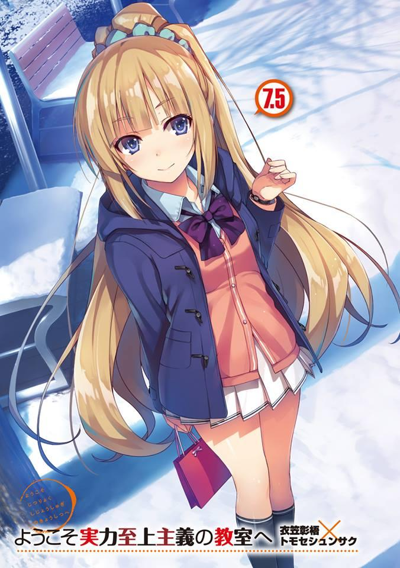
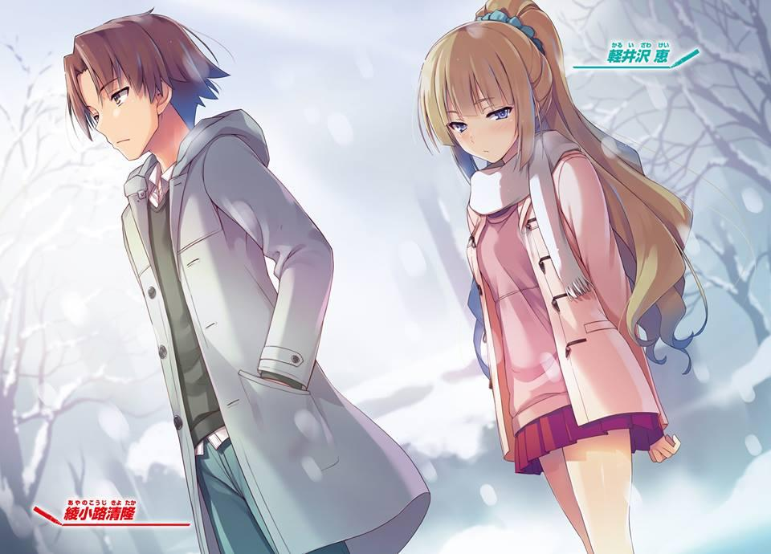
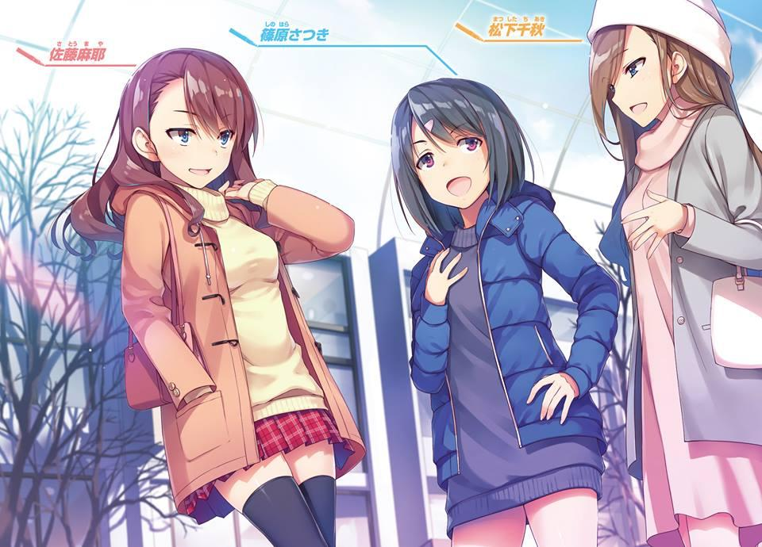
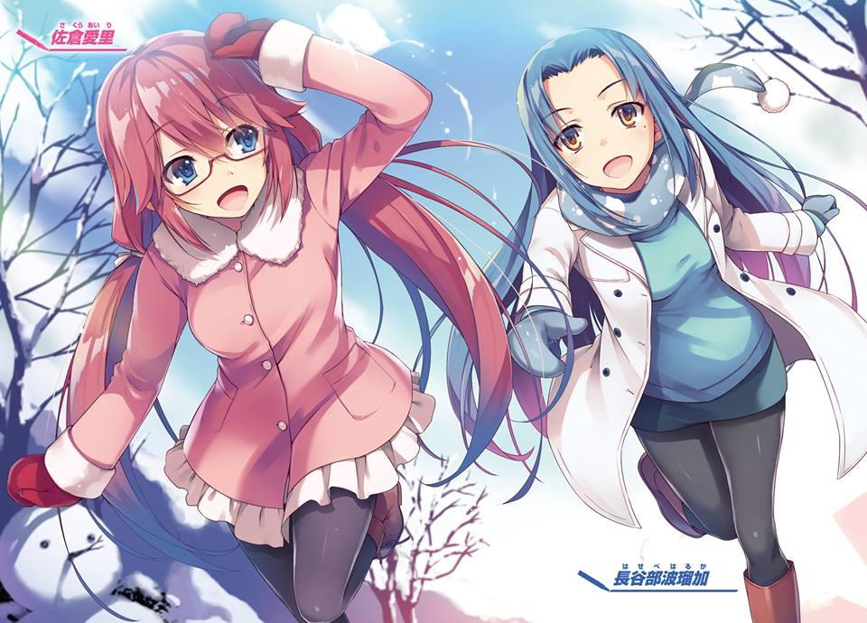
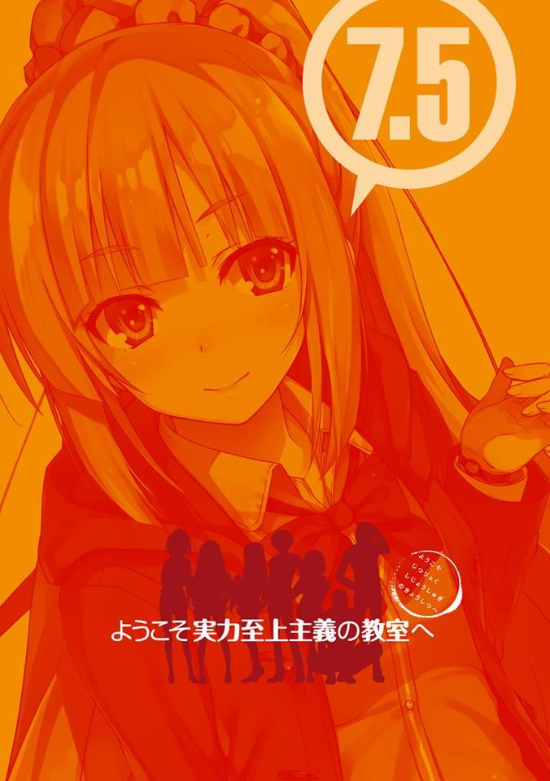
GLADHEIM
TRANSLATIONS
Youkoso Jitsuryoku Shijou Shugi no Kyoushitsu e - Volumen 7.5
MI PRIMER INVIERNO
Afuera, aunque haya llegado la mañana, la nieve sigue cayendo. Es 25. El mundo está justo en medio de la Navidad. Alrededor de todo el mundo, las personas pasan tiempo con importantes miembros de la familia o con sus parejas. Incluso en esta escuela, aunque solo sean unas pocas, también hay parejas así.
A medida que la hora prometida se acerca, preparo mi cuerpo.
— ........ Ya han pasado más de 8 meses, ¿eh?
El paso del tiempo desde que me inscribí en esta escuela es muy rápido. Me pregunto si significa que he disfrutado mucho en esta escuela. Cuando abrí la ventana que conduce a la veranda, un viento frío sopló ligeramente. Al mismo tiempo, las voces de las chicas también entraron en mi habitación. Parece que se dirigirán al Centro Comercial Keyaki para divertirse.
— También debería salir pronto.
Como noté que ya eran más de las 11:30, cerré la ventana. Hoy es el día de mi compromiso con Satou Maya.
En este día, si algo cambiará o no…..... es algo que no sé. Pero al menos, creo que este día será significativo para mí. Si no, ni siquiera pensaría en ir a una cita.
Para enamorarse de alguien. Pensar en alguien tan importante para ti. Solo pasando tiempo entre ellos, para compartir la felicidad unos con otros. Se convierten en una existencia insustituible para ti. Ese tipo de sentimientos y eventos, me pregunto si también podré experimentarlos.
Esta pequeña historia de las vacaciones de invierno, las cortinas se abren la noche del 23 antes de la víspera de Navidad.
LA FLECHA DEL AMOR
Diciembre 23. Cielo despejado. Despertar por la mañana fue extremadamente agradable. Fue casi increíblemente refrescante, y aunque acababa de levantarme. Estaba envuelta en comodidad y sentí como si todavía estuviera en un sueño.
Fue el primer cambio que me ocurrió. Entonces, ¿qué cambió? Si la gente me pregunta eso, decididamente respondería “No”. Pero, no es como si nada hubiera cambiado. La verdad es que hubo un cambio. Un cambio dramático. Yo, Karuizawa Kei, ya no tengo un horrible pasado encadenándome.
Para ser más precisos, no es exactamente eso. He ganado un poder que no perderá contra ese pasado que me encadenaba. Es decir, ayer, los eventos de la ceremonia de clausura que finalizaron el segundo semestre. Ryuuen y los otros me llamaron, y me intimidaron. Suena patético cuando lo pongo en palabras, pero es un hecho que sucedió. Toqué fondo.
Me escapé a esta escuela para buscar salvación, pensé que una vez más sería arrojada al infierno. Y luego, escuché varias cosas. Y entre esas, la más impactante fue que Manabe y las otras, que me acosaron, fueron provocadas por Kiyotaka. Al principio desesperé, e incluso surgió la ira. Pero..... al final me salvaron.
Fue Kiyotaka. Los que me esperaban mientras descendía a salvo de la azotea eran el ex presidente del consejo estudiantil y Chabashira-sensei. No era como si tuvieran algo que decirme, solo se preocupaban de que ojos de personas que no estaban relacionadas con esto cayeran en mí. Honestamente, sin su cuidado, dudo que hubiera podido regresar al dormitorio.
Lo único que me dijeron fue que esos dos actuaban según las instrucciones de Kiyotaka. Creo que es porque se dieron cuenta de que era la única manera de calmarme. Esos eventos en la azotea. Las semillas de la yo que fue intimidada por Manabe y las demás se habían plantado. Si tuviera el poder de sacudirme el pasado, entonces habría sido más resuelta. Habría terminado sin que se descubriera lo que sucedió en la secundaria....... no, no es eso. Básicamente,
estaba equivocada. Para actuar con firmeza, continué adoptando una actitud arrogante.
Por eso, que Manabe y las demás sintieran disgusto era inevitable. Fue un método que elegí para evitar el acoso. Y sus desventajas.
— Fuu.......
Solté suspiro como ese. Pero no es un suspiro malo en absoluto. ¿Cómo debo ponerlo? Fue un suspiro lleno de emoción, no. Realmente no puedo expresarlo bien con palabras.
Solo hay una cosa de la que estoy segura. Es decir, incluso cuando estoy dormida, incluso cuando estoy despierta. Dentro de mis pensamientos, Kiyotaka siempre está ahí.
Desde ayer, está grabado en mi mente y no puedo apartarme de ello.
— ... Más bien, cielos, cómo debería decirlo, esto es juego sucio.......
A pesar de que la temperatura de mi cuerpo debería ser normal, por alguna razón, mi cuerpo se siente caliente. Para suprimir la cantidad de calor en mi cuerpo, cerré los ojos. Ayanokouji Kiyotaka. 1er año Clase D. Al principio ni siquiera pensaba nada de él. Solo un compañero de clase sin una sombra. A veces surgía el tema de que él era atractivo, pero nunca me interesó. Y además, esas compañeras pronto se olvidaron de Kiyotaka.
En nuestro mundo moderno, las habilidades de comunicación son un factor importante en nuestra popularidad. Eso es algo que fundamentalmente no tiene Kiyotaka. No importa lo bueno que sea en los deportes, si no está acompañado por otros elementos, el grado de su popularidad no crecerá. Es por eso que con Yousuke-kun a la cabeza, Tsukasaki-kun de la Clase A y Shibata-kun de la Clase B son más populares.
Pero el verdadero Kiyotaka no es malo en la cuestión social, es realmente inteligente, es muy maduro, es muy racional, también es bueno en los deportes hasta el punto de que no perderá ni contra los estudiantes mayores, y también, es fuerte al punto que es casi increíble... también hay partes crueles y despiadadas en él, pero... aun así, al final, me salvará.
— ¿¡Qué.......!?
Podría ser, que yo, antes de saberlo, acerca de Kiyotaka---
— No, no, no, no. ¡De ninguna manera, de ninguna manera!
Sosteniendo mi cara que se había puesto roja, sacudí mi cabeza intensamente.
Cuando mi cara se puso roja, entré en pánico...... Soy casi como una doncella enamorada.
No es como si estuviera negando el amor. También soy una chica que quiere enamorarse adecuadamente. Pero, cómo debería decirlo, hay una parte de mí que no puede admitir que estoy mirando a Kiyotaka con esos ojos.
— Es cierto. Obviamente no puede ser el caso. Es por él que experimenté cosas terribles...
Al contrario, me gustaría que me agradeciera por no guardar rencor contra él.
Además de eso, que también robe mi corazón, no puedo perdonar tanta indulgencia.
De pie frente al espejo, me peiné el cabello que se había rizado después de despertarme.
— Pero, también soy una buena persona, ¿no?
Aunque hubiera tenido la culpa, me pregunto si una persona común perdonaría a Kiyotaka por lo que hizo. Probablemente sería imposible Es obvio que sería imposible. Por el contrario, le guardarían rencor. Solo porque es una persona profundamente generosa como yo, se le perdonó. Solo queda satisfecho con eso, Kiyotaka. Hablando en voz alta en mi cabeza, me sacudí esas ilusiones engañosas.
Es solo que no puedo traer el tema de haberle perdonado ya cuando esté delante de Kiyotaka.
Al contrario, me pregunto si debería ir a molestarlo un poco. Pretender estar enojada un poco por haber sido manipulada suena bien. Y tal vez, me enoje de verdad una vez que vea la cara de Kiyotaka.
Mientras reflexionaba sobre eso, llegó un mensaje a mi teléfono.
— Hoy a las 11, gracias de antemano Karuizawa-san.
— Ahh, ya veo. Estaba esto.
Era un contacto de mi compañera de clase, Satou Maya-san. Antes de mañana, día 24, como notificación, me contactó Satou-san diciéndome que quería reunirse conmigo porque tenía algo sobre lo que consultarme.
Normalmente, debido a que me junto con un grupo diferente al de Satou-san, nuestras pláticas no han sido profundas.
Por supuesto, como compañeras de clase, nos llevamos bastante bien, pero es la primera vez que me llama así para reunirme con ella.
— Pero aun así, seguro soy saludable.
Ayer, debajo del frío cielo, me arrodajaron innumerables cubos de agua a la cabeza y, a pesar de que sucedió algo tan horrible, estoy perfectamente sana, hasta el punto de felicitarme por ello.
Naturalmente, después de enfriarme hasta los huesos, me di un baño para calentarme, pero una chica normal probablemente se habría resfriado e incluso no sería extraño si hubiera dormido durante tres días seguidos.
— Es porque estoy demasiado acostumbrada a ese tratamiento... solo bromeo.
Me di cuenta de que ese tipo de charla masoquista sale naturalmente. La “yo”
hasta ayer. Es decir, la “yo” que pensaba que había cambiado, pero en realidad no había cambiado en absoluto.
Siempre me aterrorizaba ser intimidada, siempre agazapada. En lo profundo de mi corazón, una oscuridad siempre se extendía. Pero ahora, puedo decirlo claramente. Me pregunto si podría cambiar aunque sea un poco. Quitándome la pijama, y ahora en ropa interior. En este momento, las cicatrices talladas en mi blanco cuerpo aparecieron a la vista. Aunque no quiero eso, termino viéndolas. Todos los días, enfrenté estas cicatrices, mis sentimientos se hundían y quería morir. Pero, nunca me importaron tanto como ayer.
A pesar de que odiaba esta cicatriz tanto, lo lamentaba tanto y sentía tanta tristeza. En un solo día, ni siquiera puedo creer que cambiaría tanto.
— Pero aun así, no puedo mostrarle esto a un chico..........
Si vieran una cicatriz así, terminarían alejándose. Se supone que el cuerpo de una chica es suave, sedoso y hermoso... Esto terminaría aplastando esa ilusión.
Estoy segura de que hasta cien años de amor se enfriarían. No, no tenía ninguna intención de mostrárselo a nadie más, aunque... lo guardaré en mi corazón de esta manera. Es solo... puede que no lo haya mostrado en mi expresión... pero, Kiyotaka es diferente.
A pesar de que vio esta cicatriz, ni una sola vez expresó disgusto. ¿Es solo que no lo dijo? ¿O fue solo porque estaba oscuro a bordo del barco? ¿O
simplemente mintió? ¿Pensó en el fondo que era asqueroso? ¿O podría ser que realmente no creía que fuera repugnante? Afirmaciones y rechazo se repiten dentro de mi cabeza. Pero no hay forma de encontrar una respuesta para eso.
Repitiendo esto en mi cabeza, me di cuenta de algo importante.
— Hablando de eso, ese tipo, me tocó el cuerpo con sus manos, ¿no?
En aquel entonces, no tenía tiempo para pensar, pero ¿no es esto algo espléndidamente increíble? Me tocó los muslos, casi me quitó el uniforme... Las chicas me trataban como un germen o una plaga, y los chicos tampoco me protegieron. Toda la clase, todo el año escolar, ni siquiera me veían como un ser humano, y mucho menos me veían como una chica. A pesar de que nunca antes he tomado las manos de un chico, me pregunto qué demonios me ha hecho.
— ¡En serio, cielos, cielos! ¡Lo estoy pensando otra vez! ¡Soy una idiota!
Una vez más, vamos a poner una tapa sobre el asunto de Kiyotaka y sellarlo.
Haré eso. Fue solo un accidente, así que tengo que olvidarme de eso. Pasé mis manos por la tela y tranquilamente comencé a cambiarme.
PARTE 1
Después de tomarme mi tiempo para prepararme, me dirigí hacia mi destino caminando. El centro comercial Keyaki que acogía las vacaciones de invierno estaba lleno de estudiantes. La mayoría parecen haber venido para divertirse, ya que había mucha más gente de la habitual.
— Supongo que es verdad. No hay otro lugar para divertirse aquí.
Todas las necesidades se han reunido aquí, así que no tengo ninguna queja, pero tampoco hay alguna novedad.
Habiendo llegado a tiempo, llamó a la Satou-san que estaba esperando con su teléfono en la mano frente al café que era nuestro punto de encuentro.
— Buenos días, Satou-san.
— ¡Ah, Karuizawa-san! ¡Buenos días!
Los ojos de Satou-san se iluminaron mientras agitaba sus manos hacia mí. Tal vez fue a la estética porque su cabello estaba hermosamente arreglado. Solo con eso, terminé imaginando varias cosas.
Fue ayer por la noche que Satou-san me llamó pidiendo una consulta. Tanto mi mente como mi cuerpo estaban agotados, pero me quedé callada sobre ese hecho. Claro que sí. El hecho de que me llamaran a la azotea y me bañaran con agua fría era algo que “nunca sucedió” para nadie. En otras palabras, mirándolo desde la perspectiva de Satou-san, tengo que ser la habitual yo. Por eso, aunque podría haber rechazado la solicitud, decidí aceptarla. Y además... desde hace un tiempo he sentido curiosidad por las acciones de Satou-san.
— Lo siento, por llamarte de repente.
— No es gran cosa. No te preocupes por eso.
— Me es una gran ayuda si dices eso.
Junto con Satou-san, que parecía feliz, entramos en la tienda. A pesar de que estaba lleno, convenientemente dos personas se estaban yendo también, así que pudimos ingresar.
— Está muy lleno~.
Lo dije en voz alta sin pensar. Fue exasperantemente exitoso.
— Vacaciones de invierno, me pregunto si todos los otros estudiantes no tienen nada como exámenes o algo así.
Así como Satou-san que dijo eso, yo también tenía la misma pregunta.
Durante las vacaciones de verano, los estudiantes de primer año emprendimos un viaje a bordo de un crucero de lujo. Pero, esta vez, al ver a estudiantes de todos los años escolares, parece que no se están realizando exámenes especiales.
Me pregunto si esta escuela nos está dando este servicio al menos para las vacaciones de invierno. ¿O podría ser que al final de este año y al comienzo del próximo, comience algún tipo de examen? Si es así, lo odiaría.
— Si aún no has desayunado, ordena todo lo que quieras, ¿bien? pagaré por todo.
Satou-san me dice con una sonrisa que no me contenga. Y justo como ella dijo, pedí un bollo americano y un café con leche, y las dos, cerca del centro de la tienda, nos sentamos en una mesa pequeña.
— Entonces, ¿cuál es la consulta que quieres hacerme?
Una consulta por la cual iría tan lejos como para comprarme el desayuno, me pregunto si será una petición importante. Corrigiendo mi postura ligeramente me incliné.
— Hmm, sí. La cosa es, veras… La verdad es que... pronto iré a una cita.
Satou dijo eso, entonces la interrumpí.
— .....¿Cita?
Aunque me sorprendió, reprimí mi tensión y le pregunté.
— Sí.
Mientras se sonroja, Satou-san asintió dos o tres veces. Tuve un mal presentimiento, como esperaba, he acertado. Y su compañero, si no estoy malinterpretando esto, es…
— Umm, ¿con quién?
Parece que Satou-san ha estado esperando que le pregunte eso.
— Es Ayanokouji-kun, ¿sabes? Es una sorpresa... ¿verdad?
Satou-san murmuró eso, tímida pero feliz. De repente, pude sentir un ligero zumbido en mis oídos, pero fingí estar tranquila.
Tomando el bollo que acababa de recibir, mordí un bocado más grande de lo habitual. Un fragmento se rompió y cayó sobre la bandeja. Luego vertí el café con leche en mi boca que se había secado.
— Heh......... así que Satou-san tiene como objetivo a Ayanokouji-kun. Eso es una sorpresa~.
Por supuesto que me había dado cuenta de que Satou-san se había enamorado de Kiyotaka. Pero, como nunca antes me había consultado directamente, responder así era lo más seguro.
— ¿Cierto? Yo también estoy un poco sorprendida. Pero, durante el festival deportivo, hubo un relevo, ¿verdad? Mirándolo correr, mi corazón latía con fuerza, ¿sabes?
Satou-san estaba hablando con tanta emoción al punto que me sentí avergonzada mientras la escuchaba.
De hecho, al mirarla estaba viendo a una “Doncella enamorada”.
— Pero, ¿no le falta presencia? Si es Satou-san, debería haber otros, mejores chicos y más adecuados para ti. Como Tsukasaki-kun de la otra clase, ¿qué hay de él?
En todo nuestro grado escolar, es aclamado como un tipo considerablemente guapo.
Ha sido un tema candente recientemente, ¿qué hay de él? Se lo recomendé a ella.
— No. Parece que hace poco, comenzó a salir con una estudiante mayor que asiste al mismo club que él.
Ya veo. Así que ya lo han tomado, por eso no he oído ningún rumor sobre él.
Incluso un ídolo popular de la televisión, hombres y mujeres por igual, tan pronto como encuentran pareja, su popularidad cae en picada.
— Con que es así. Entonces, ¿qué hay de Satonaka-kun? Él debería estar libre por ahora, ¿verdad?
— Sí, creo que es genial, pero...... algo no hace “click” con él.
A pesar de que le sugerí varios tipos populares, Satou-san no mostró signos de ser conmovida en absoluto. Parece que Satou-san no está juzgando a Kiyotaka únicamente por su apariencia. De verdad, a este ritmo es como si estuviera diciendo que la apariencia de Kiyotaka es inferior a la de Doujou-kun o Satonaka-kun...... en este momento no se destaca mucho, pero si comparas solo por la apariencia exterior, sin duda Kiyotaka es de primera clase.
En otras palabras, Satou-san, quien se ha enamorado, se ha dado cuenta de ese hecho, ¿eh?... Para los chicos y para las chicas, la apariencia externa de su pareja es su estatus. Saldré con un chico genial, saldré con una chica linda, solo con eso aumentará su evaluación personal. Justo como había ganado más de lo que había imaginado al salir con Hirata-kun. En este momento, si Satou-san saliera con Kiyotaka, su evaluación también podría aumentar.
Si Kiyotaka muestra su talento y comienza a destacarse, eso haría que su evaluación fuera incluso más alta que la de Hirata-kun. Kiyotaka ha estado recibiendo más atención desde el relevo, pero la situación actual es que no está atrayendo la atención de tantas chicas como se esperaba. Su expresión, que normalmente tenga una actitud tranquila y como solo habla con Horikita-san, esos factores hacen que no aumente su popularidad con las chicas.
Además, como Ike-kun y Yamauchi-kun y Sudou-kun. Salir con amigos como esos, los cuales son vistos de una manera extremadamente negativa por las chicas es también una mala impresión.
En cualquier caso, hasta ahora Satou-san no debería haber tenido mucho contacto con Kiyotaka. Pero a pesar de eso, enamorarse de él y todo eso después de solo actuación en el relevo, ¿no es demasiado superficial? Conozco a Kiyotaka mucho más que ella. Su verdadera naturaleza, o más precisamente,
su profunda y oscura naturaleza. Satou-san no debe tener idea de eso. Ahh, cielos. Esto está mal, ¡esto está mal! Eso no tiene nada que ver con esto. No tengo ninguna razón para hablar mal de Satou-san, y estoy en una posición en la que tengo que animarla.
¿Por qué? Porque soy la novia de Hirata Yousuke. Porque no tengo ninguna razón para interferir con el romance de otra persona. Es por eso que yo, como novia de Hirata-kun, como la existencia líder de las chicas de Clase D, interrumpí a Satou-san.
— Escuchar esto puede parecer un poco fuera de lugar, pero, ¿estás realmente tan interesada en él?
Si no supiera sobre la identidad de Kiyotaka, indudablemente habría preguntado algo así.
— ......Sí.
En respuesta a esa pregunta, Satou-san sin dudarlo, respondió asintiendo.
Parece que ha reafirmado su determinación, y Satou-san no está bromeando al acercarse a Kiyotaka. De eso, ya me había dado cuenta hace mucho tiempo.
— ¿No es bueno que hayas encontrado a alguien que te guste? Y además, ahora mismo Ayanokouji-kun debería estar libre.
— Así es, por eso pensé que esta podría ser mi oportunidad. Si alguna otra chica también se enamora de Ayanokouji-kun entonces... Estaba pensando así y me apresuré.
Si uno consulta a un amigo o a tu mejor amigo con respecto al amor, hay cincuenta mil episodios en este mundo de que te roben al chico que te gusta. No es extraño que Satou-san sea cautelosa con eso. En cuanto a mí, quien tiene un novio que está compitiendo por el primer o segundo lugar en nuestro año escolar, debe haber considerado que el riesgo de que eso suceda es el más bajo posible.
Pero aun así, pensar que llegaría a una cita durante las vacaciones de invierno, esto superó mis expectativas. Ese Kiyotaka, a pesar de que no parecía estar interesado en Satou-san, a pesar de que ocurrió el incidente en la azotea, él
accedió a salir con ella. La bolsa de papel que contenía las pajitas, inconscientemente terminé destrozándola.
— ...... Podría ser que la consulta… ¿tiene algo que ver con esa cita?
Al oír eso, los ojos de Satou-san se iluminaron y ella asintió. Desde hace un tiempo, ella ha sido demasiado deslumbrante.
— Sí. ¿Sabes, como el secreto detrás de hacer que una cita sea un éxito? Me preguntaba cómo debería hacerlo. ¿Cómo terminaste saliendo con Hirata-kun? Quiero que me digas varias cosas con respecto a eso.
En la Clase D, los únicos que hemos anunciado claramente nuestra relación somos Yousuke-kun y yo. Aunque ella buscara la ayuda de sus amigas en otras clases, Kiyotaka, o más bien Ayanokouji, ¿quién es ese? Algo así es lo más probable que pasara. En otras palabras, que Satou-san confiara en mí para esto era algo inevitable.
— Karuizawa-san, empezaste a salir con Hirata-kun poco después de que te inscribiste, ¿verdad?
— Sí. Supongo que sí. Aunque no es nada especial.
— Es algo especial. Es realmente increíble, realmente te respeto por eso.
Diciendo eso, Satou-san, envolviéndome las dos manos, las agarró.
— Es por eso que esa habilidad, ¡por favor enséñamela!
— No es algo que pueda llamarse una habilidad...
En primer lugar, no puedo responder a ninguna de las solicitudes de Satou-san.
La yo que escapó de esa horrible intimidación de la secundaria se acercó a él, después de haber resuelto pasar de ser acosada a un lugar donde no sería acosada. Recordándolo, tuve mucha suerte.
Fue una acción que surgió al determinar que Yousuke-kun no era ese tipo de persona, pero en realidad fue una apuesta de alto riesgo. Si, cuando le pedí que me dejara asumir el rol de su novia falsa él me hubiera rechazado, el resultado habría sido diferente al que es ahora. Y no solo que me abandonara con dureza, incluso podría haber expuesto mi pasado a todos. Yousuke-kun es alguien que
atesora la armonía desde el fondo de su corazón, y es el tipo de persona que lo convierte en un ideal.
Sintiendo que podía salvarme simulando ser mi novio, lo aceptó con gusto. Por eso lo acepté y elegí ser protegida bajo ese paraguas de paz. La novia de Yousuke-kun, que es el centro de la clase. Ese título fue mucho más efectivo de lo que había imaginado. Al principio, había envidia y rencor provenientes de las chicas de la clase, pero eso también desapareció pronto.
Recordando lo que me hicieron, adopté una actitud de enérgica hacia varias estudiantes. Incluso en las compras, molestada por pequeños cambios, cosas como esas las rastreé todas.
Y así, pude hacer mío el trono de la líder de las chicas de la Clase D.
Pero, la yo que creó un estatus falso, claramente tiene cosas que puede hacer y cosas que no. Por eso, aunque Satou-san me pida que le hable sobre el amor, no hay nada que pueda hacer para responder.
Alguien sin experiencia, no hay forma de que conozca las técnicas del romance.
Como estábamos “saliendo”, para hacerlo de conocimiento común, repetidamente fuimos a citas falsas, pero mi corazón no estaba allí.
Por eso, ahora no sé qué está bien y qué está mal. Pero no quiero traicionar las expectativas de Satou-san. No quiero que piense que soy una recién llegada al camino del romance. Si fuera la yo desde hace un tiempo, habría mostrado audazmente el conocimiento que escuché de la televisión o las revistas. Como si fuera una cita que hubiera vivido, habría sido capaz de hablar de manera elocuente reemplazando esa información conmigo.
Pero, ahora eso está cambiando gradualmente. Hacia Satou-san, hacia alguien que ha depositado su confianza en mí, no quiero hacer afirmaciones aleatorias como esas. Recientemente, me había cansado de la yo que había estado actuando de manera elitista y arrogante, por un momento, quería hablar sobre algo verdadero. Pero no puedo decir ni una palabra sobre eso. En esta escuela, tengo que seguir siendo la novia de Yousuke-kun y actuar con audacia. Es por eso que tengo que seguir diciendo mentiras que no quiero decir.
¿Realmente quiero decir eso?
En este momento, ¿es la existencia de Yousuke-kun todavía realmente necesaria para mí?
En un momento como este, pensamientos innecesarios flotan en mi mente. Los únicos elementos peligrosos para mí en este momento, el grupo de Manabe y Ryuuen, han sido eliminados gracias a la estrategia de Kiyotaka (?). En otras palabras, esa historia de intimidación no volverá a aparecer. Y además, incluso si algo sucediera, Kiyotaka seguramente vendrá a salvarme, también tengo esa sensación de seguridad.
El hecho de que soy la novia de Yousuke-kun me da un montón de privilegios, pero si elimino eso, me pregunto si existe la posibilidad de que me roben mi estatus en esta escuela. Por supuesto, si se trata de que ser abandonada por Yousuke-kun, de alguna manera eso podría ser patético, pero creo que si depende de que nosotros dos lo hablemos, saldrá bien.
Si eso sucede, las cosas se aclararán y me liberaré. Y si me vuelvo libre, finalmente puedo perseguir mi verdadero amor. En otras palabras, no puedo permitirme pensar esas cosas ahora. Porque Satou-san frente a mí espera una buena respuesta de mi parte. Puedo contemplar el significado de continuar saliendo con Yousuke-kun más tarde.
Los pensamientos innecesarios que me han molestado innumerables veces, esta vez, los llevaré a un rincón.
— Después de escucharte lo que pensé es esto, en lugar de ir a una cita de prueba, Satou-san quiere tener una cita real con Ayanokouji-kun con la intención de empezar a salir con él, ¿verdad?
— Sí
En otras palabras, una cita destinada a seducir a Kiyotaka.
— ¿Qué debo hacer para que salga bien?
— ¡Veamos!.......
Pensemos seriamente. Una forma para que Satou-san salga con Kiyotaka......
umm, ese chico, me pregunto qué se necesita hacer para seducirlo.
Él es una existencia que está claramente aparte de otros hombres. Me pregunto si estará interesado en el amor ordinario... o tal vez, sorprendentemente podría ser el tipo de persona que anhela ese tipo de amor ordinario.
Ya que puede tomarse de cualquier manera, hacer un juicio sobre esto es una tarea difícil. Cuando esas preguntas surgieron y desaparecieron repetidamente en mí, Satou-san sacó un teléfono.
— Me pregunto si estoy siendo demasiado ambigua. Umm, verás, ya que soy una principiante en esto, me gustaría pensar en un plan para la cita.
Ayúdame con la decisión.
Y mientras baja la cabeza, me muestra el plan para la cita escrito en la pantalla de notas del teléfono.
Reunirse a las 12 horas -> Almuerzo -> Cine -> Compras -> Confesión debajo del legendario árbol -> Regalo
Parece abrumadoramente simple, pero estaba escrito así. En primer lugar, intervine con lo que más me preocupaba de todo lo demás.
— Espera un minuto. ¿Planeas confesártele en la primera cita?
— Estaba pensando en ir con toda la intención de golpear... solo si mi coraje sale ese día.
Mientras yo pensaba que debería profundizar más su relación con él, ella entró en una batalla decisiva a corto plazo que superaba mis expectativas.
— ¿No va demasiado rápido? Creo que está bien si lo haces después de 2 o 3 citas. También puedes darte cuenta de algunos aspectos desagradables sobre tu pareja.
Por supuesto, las chicas con experiencias románticas a veces también parecen tomar decisiones en el acto. Pero Satou-san, en lo que respecta al romance, parece estar más cerca de ser una principiante, creo que es mejor que lo tome con calma.
Pero, no hay mucha credibilidad al respecto viniendo de una compañera principiante como yo........ Pero parece apresurada por el resultado, o más bien me parece que está priorizando su encanto.
Podría ser, que Satou-san posiblemente quiera hacer su debut como novia en el tercer semestre.
— Y también, ¿qué significa esto de debajo del legendario árbol? Por casualidad, ¿es una de esas cosas que si juras tu amor estarán unidos para siempre?
Me pregunto si existe en esta escuela una leyenda urbana acerca de un árbol.
Aunque exista un poder tan misterioso, en esta época en la que no se puede ver su futuro, no se puede garantizar que por 10 o 20 años siga siendo algo bueno.
Si resulta que el hombre con el que te casaste es inútil hasta el punto en que quieres divorciarte, estar obligado a estar con él de por vida parece más una maldición.
— No parece que sea tan famoso, sin embargo, lo encontré mientras miraba el boletín de la escuela. Eso, si te confiesas frente a ese árbol, definitivamente tendrás éxito. Y, lo que es más, hay muchos informes como ese.
Heh........ No sabía sobre eso. También me he interesado en esto, lo investigaré.
Y cuando lo hice, parece que realmente existe, en el tablón de anuncios de la escuela, había varios casos en los que resultó bien una confesión que se escribió allí. Parece que cuando se fundó esta escuela, alguien muy importante lo donó y fue trasplantado aquí. Parece que la edad de ese árbol supera los 8
años. (Nota: dice 8 en la traducción en inglés, pero un árbol de 8 años es MUY
joven, ¿tal vez era 80?)
— Hablando de eso, hay varios árboles excelentes como ese ¿no?...
Normalmente ni siquiera sería consciente de un árbol así. El momento de la confesión debe ser al atardecer antes de que se ponga el sol. Desde las 4 de la tarde hasta las 5. En ese momento, la condición es que nadie más debe estar
cerca. Si esa condición se cumple, la confesión tiene un 99% de posibilidades de éxito, o eso parece.
Pero la parte del 99% suena realmente sospechoso.
— Pero aun así, ¿no es bastante difícil? El momento para esta confesión.
— Es cierto, supongo. Dice que si alguien extraño está allí en el momento de la confesión, las cosas no irán bien.
A esa hora, la presencia de personas es bastante alta, por lo que el momento parece difícil. Además de eso, no sería extraño que otros chicos y chicas intentaran llevar a cabo esta leyenda.
Uno tendría que llevar bien la conversación y guiarla para que solo queden los 2.
Naturalmente, algo como esto es solo una superstición, y lo considero como una superstición. Pero si se trata de hacer que una confesión única en la vida tenga éxito, es una sensación como agarrarse a un clavo ardiendo. Yo también, si se trata de la victoria o la derrota, querría aumentar mis posibilidades incluso si es solo el 1%.
— Oye, umm, ¿cuál fue tu razón para enamorarte de Ayanokouji-kun?
— ¿Ehh? ¿Por qué lo preguntas?
— No, lo siento. Es porque no sé nada acerca de Ayanokouji-kun, ¿sabes?
Quiero obtener una imagen de él. Acerca de qué parte de él te enamoraste, algo así. Sabes, si lo escucho, tal vez podría ser útil para mi consejo sobre el plan para la cita, ¿verdad?
Mientras le preguntaba eso, Satou-san susurraba mientras escondía sus mejillas entre sus manos, se veía tímida.
— Umm-..... primero que nada, ¿no es genial? Normalmente es tranquilo y maduro. Y también, corre muy rápido....... y en los exámenes también está por encima de mí, así que no es como si fuera un idiota... ¿sabes?, naturalmente creo que Hirata-kun es mejor que eso, pero los otros chicos en su mayoría son infantiles.
Probablemente está hablando de Ike-kun y Yamauchi-kun y los demás.
Respecto a ese aspecto, también estoy convencida. Hasta el punto que ni
siquiera puedo creer que tengamos la misma edad. La mayoría de nuestros compañeros son como niños. Es por eso que en este período, una gran mayoría de las chicas se desilusionan con sus compañeros y corren hacia los chicos mayores.
— L-Las cosas que estoy diciendo ahora, mantenlas en secreto de las otras chicas, ¿de acuerdo? Sería malo si también se dan cuenta de lo bueno que es Ayanokouji-kun. Además, también sonará estúpido si rumores de que no estoy acostumbrada a los hombres se esparcen.
— ¿Está bien consultarme?
— Karuizawa-san es la novia de Hirata-kun, así que eso me da tranquilidad.
Parece que la existencia de Hirata-kun es enorme. Satou-san está confiando en mí. No se siente tan mal que ella confíe en mí hasta este punto... pero de todas las cosas, ¿por qué tiene que ser sobre Kiyotaka?
Si se tratara de otro chico, podría haberla apoyado con mis verdaderos sentimientos. No sentiría esto molestando dentro de mi corazón. ¿Es esto lo que llaman el destino?
— Hah.......
Terminé suspirando de repente. Diferente al de la mañana, uno pesado. Pero después de haber oído eso, la cara de Satou-san se volvió sombría cuando la miré.
— C-como pensé, te estoy molestando, ¿verdad?
— No, lo siento. Ese suspiro realmente no significa nada de eso. De verdad.
Me alteré y lo negué, pero dentro de mi corazón, había estado cargando ese matiz todo el tiempo... no es como si estuviera enamorada de Kiyotaka o algo así. Es solo, cómo debería ponerlo, tengo una relación especial con él. Pase lo que pase, eso siempre tendrá prioridad. Pero ahora mismo necesito cambiar mis pensamientos y actuar por el bien de Satou-san. Me lo digo muchas veces.
— Entonces, revisemos un poco el plan de la cita, ¿bien? Si van a comer juntos, podría ser mejor si lo hacen después de ver la película. De esa manera, si las cosas se complican puedes hablar sobre la película.
— Sí, vayamos con el plan que Karuizawa-san pensó.
Diciendo eso honestamente, Satou-san sacó su teléfono.
Probablemente ya reservó boletos para la película, pero por su bien, es mejor que lo haga. Ver una película inmediatamente después de comer puede causarle problemas si surgiera una situación imprevista. Y también te hará sentirte soñoliento así que eso no es bueno.
Accedí a la página del cine.
— ¿Y? ¿Cuándo va a ser la cita tan importante?
En primer lugar, debo comprobar si se puede cambiar la hora o no, si no comienzo confirmando eso no avanzaré.
— Es pasado mañana.
— Ya veo, eso es bueno... espera… ¡Pasado mañana es 25!
Casi me puse de pie sin pensar. Presa del pánico, bajé mis caderas, que había levantado, de nuevo a la silla.
— Jejeje.
No, ¡no me digas “jejeje”........!
El 25 de diciembre. Es el día más precioso para hombres y mujeres durante todo el año. Ese Kiyotaka, dando el visto bueno para una cita el día 25, ¿qué diablos está pensando?
Se supone que es el momento que las parejas pasan juntas para profundizar más su relación y es un día para confirmar su amor. No es adecuado para iniciar una relación. No es normal usar ese día para una cita. Debería haber declinado tranquilamente y cambiado la fecha al 26.
Si se retracta, no hay duda de que crearía una considerable cantidad de indignación.
Un chico que solo quiere hacer cosas lascivas, esa etiqueta debería estar pegada a él. Lo dije así ferozmente dentro de mis pensamientos.
— Fu, fu.
— ....... ¿Qué pasa, Karuizawa-san?
— No, nada. No te preocupes por eso.
¿Por qué me estoy enojando yo sola? Para alguien que no está relacionado como yo, no importa en qué día los 2 decidan tener su cita, es irrelevante. Son libres de decidir. Debería entender eso. Ah, cielos, desde hace un tiempo, ¿qué me pasa?
Me enojé violentamente, hacia mis propios pensamientos. Le di a esos pensamientos erróneos una doble bofetada en la cara y los sellé a la fuerza.
— El 25 ¿eh?........ bueno, creo que todavía es mejor que en la víspera mañana.
El cine, también parece como si estuviera abrumadoramente más lleno que en la víspera. Probablemente pasarán todo el día juntos después de ver la película.
A pesar de que muchas parejas van, si lo vemos en términos de toda la escuela, solo del 10% al 20% serían parejas. Mientras no se preocupen por la hora y la posición de sus asientos, es posible que vayan tantas veces como quieran.
— Acerca de la película, la verán a las 11:50 y terminará alrededor de las 13:30. Así que antes de las 2 tienen la comida y alrededor de las 3 salen de la tienda. Después de eso, calculas la hora y después de las 4 te confiesas. ¿Algo así?
Este es probablemente el mejor resultado al ajustar el tiempo.
Satou-san tampoco parece tener objeciones y asintió satisfactoriamente.
— Después de eso, creo que también es mejor si reservas para el almuerzo.
Seguramente quieras sentarte cerca de las ventanas, ¿verdad?
Descontando la hora del almuerzo, sin problema se puede hacer.
— Y también, si haces tu orden con anticipación, pueden hacer cosas que no están en el menú.
— Así que así es, no sabía nada de eso....... como se esperaba de Karuizawa-san.
Si es pasado mañana, ese lugar también tendrá buenos lugares. Bueno, la verdad es que es genial si el chico piensa en todas estas cosas. Esta vez, es un escenario por el bien de la confesión de Satou-san, así que esto también está bien.
Es solo que, no sé si esta fue la respuesta correcta o no. Suena patético cuando lo repito, pero nunca antes he ido a una cita real...
PARTE 2
Satou-san me hizo esa consulta, y en el camino de regreso del café. Las dos nos dirigimos hacia el dormitorio mientras charlábamos.
— Esta mañana se acumuló bastante, pero parece que a partir de mañana nevará aún más.
Cuando Satou-san me dijo esas palabras, miré alrededor del paisaje que me rodeaba. A pesar de que había comenzado a derretirse ligeramente, todavía había restos de nieve dispersos. Si esto continúa, podría nevar durante todo el año.
Ahh, así que es nieve. Hablando de eso, fue hace unos dos años. Fingí que un poco de nieve fangosa era kakigori de chocolate y me la metí en la boca.
Recordando nostálgicamente esos viejos tiempos, recordé algo así. Por alguna razón, sentí que eso era algo de hace mucho tiempo.
— Me pregunto qué fue tan agradable de hacer algo así.
— ¿Ehh?
— Lo siento, lo siento. Solo estaba hablando conmigo misma. Lo siento por eso.
Tal vez es porque los eventos de ayer sucedieron, pero siempre termino recordando eso. Y mientras lo hacía, la expresión de Satou-san se hizo un poco dura. Pensé que era porque había estado hablando conmigo misma, pero ese no parecía ser el caso.
— La cosa es que no pude decirlo antes, pero hay una cosa más que quiero preguntarte.
— ¿Ya empezaste, no? Entonces, no dudes en consultarme.
Golpeé mi pecho y le contesté así.
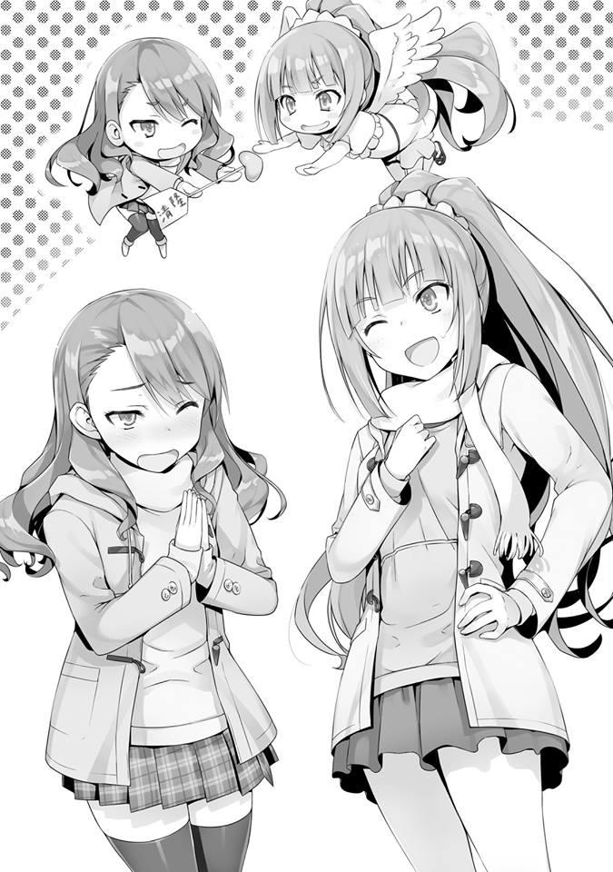
— Gracias, Karuizawa-san. Umm, bueno, estoy feliz de tener una cita pero...
Quizás abriga algunas ansiedades hacia su cita tan importante, pero Satou-san continuó.
— La verdad es que esta es la primera cita que tengo en mi vida... así que no sé qué debo hacer.
— ¿Nunca has salido con otro chico antes?
Satou-san parecía avergonzada. Bueno, por el flujo de nuestra conversación, tuve la sensación de que ese era el caso, pero........
Pensé que una chica moderna y al día como Satou-san lo habría hecho antes, así que fue sorprendente.
— Solo digo esto porque eres tú, Karuizawa-san, ¿bien? Pronto seré una estudiante de segundo año de preparatoria y si todavía no he ido a una cita, si le digo a alguien más, definitivamente se burlarán de mí. Que soy demasiado lenta. Como se esperaba, ¿Karuizawa-san también piensa eso?
— Supongo que sí. Eres un poco lenta. ¿Pero no eso significa que no has encontrado a alguien que realmente te guste? También puede significar que te estás atesorando.
— Me hace feliz que dijeras eso.
Mientras la engañaba así, seguí. No a Satou-san sino a mí misma.
— Y verás, creo que estaré demasiado nerviosa y no podré hacer las cosas bien. Por eso, incluyendo a Karuizawa-san y Hirata-kun... Pensé que tuviéramos una cita doble. Para asegurarme de que las cosas vayan bien conmigo y con Ayanokouji-kun, ¡quiero que me ayuden!
Ella me lo pidió así. Incapaz de comprender el contenido de la propuesta, por un momento me sentí confundida.
— ¿C-Cita doble? ¿Ayudar?
— Realmente debería haber dicho esto antes, ¿verdad? Fue después de que tuve varias reservas al respecto.
Satou-san se disculpa con una expresión apenada. De todos modos, las reservaciones terminan después de unos minutos, así que no es un gran problema. Lo importante es que ella me está solicitando el papel de Cupido, a mí, en otras palabras, a una existencia sin experiencia romántica. Me pregunto si algo tan absurdo como esto puede ser.
— ¿Es... imposible?
— Eso es---
Sin lugar a dudas, debería declinar. Con el conocimiento superficial que poseo, mis errores definitivamente serán expuestos. Ahh, pero ya que esta es también la primera cita para Satou-san, ¿quizás pueda engañarla? ¿Debo ser convencional y consentir gratamente?
— Como pensé, preferirías pasar la Navidad solo con Hirata-kun, ¿verdad?
— ¿Ehh?
Mientras me preocupaba sobre qué hacer, Satou-san volvió a poner cara de ansiedad. Ya veo. Si se trata de parejas comunes, muchas de ellas pasarán mañana y pasado mañana juntas. Si fuera la habitual yo, habría podido discernir ese hecho correctamente, pero mi cabeza estaba llena de pensamientos sobre la ceremonia de clausura.
— Al igual que Karuizawa-san y Hirata-kun, también quiero convertirme en una pareja ideal.
Mirándolo desde la perspectiva de Satou-san que cree que estoy navegando sin problemas por la vida escolar, este tipo de solicitud no es ni extraña ni distorsionada. Pero mi corazón se molestó. No tiene nada que ver con Kiyotaka.
No es como si alguna vez me haya gustado Yousuke-kun. Y no es como si realmente estuviéramos saliendo. Una pareja falsa.
Pero, siempre y cuando sigamos siendo una pareja falsa. Ni yo ni Yousuke-kun podremos encontrar el amor verdadero.
Ese hecho me molestó. Kiyotaka también, nunca me verá como alguien del sexo opuesto. Y además, me pregunto si alguien con mentiras como yo puede ser de ayuda para Satou-san.
— Ese tipo de cosas es, un poco.....
Después de considerarlo, pensé en negarme, pero decidí mantener mi posición.
Desde hace un tiempo, la existencia de Kiyotaka periódicamente pasa por mi cabeza. Si esto continúa sucediendo para siempre, no será bueno para mi corazón.
Si es así, solo tengo que hacer que no suceda más. Por ejemplo, sí. Si junto a Satou-san y Kiyotaka, si hago eso, ya no habría ninguna posibilidad de que Kiyotaka me robe el corazón.
— D-Déjamelo a mí. Haré algo al respecto
— ¿De verdad? ¡Karuizawa-san!
Tomando mi mano felizmente, Satou-san salta y cae........ Así que a ella le gusta mucho Kiyotaka. Si ese es el caso, hacia ese primer amor, necesito animarla genuinamente. Raspando la nieve derretida en el suelo con la palma de mi mano, la empujé contra mi frente.
Reflexiona, reflexiona.
Y así, el calor acumulado en mi cabeza se enfrió. Si he decidido animarla de verdad, al menos me aseguraré de que la cita doble salga bien. La yo en este momento no es la yo de la secundaria. Ya no soy la yo que perdió 3 años y aceptó la desesperación. Y por último, tampoco soy la yo después de haber ingresado en esta escuela. Usar una actitud de enérgica para hacer contacto con mis compañeros no es bueno. Al no poder protegerme por ningún otro medio, no puedo terminar de la misma manera que en mi época de secundaria.
Si ella está reprimiendo su vergüenza para pedir mi ayuda, debo confrontarla con seriedad, de lo contrario no podré llamarme una verdadera amiga para ella.
Pero si se convierte en una cita doble, surgirán varios problemas. En este momento el problema es si Yousuke-kun está libre o no. Necesito confirmar rápidamente eso. En Navidad, habíamos decidido que no nos encontraríamos.
Como el hecho de ser pareja había llegado incluso más allá nuestro año escolar al convertirse en un rumor, ya no era necesario hacerlo notar.
Para no perder el tiempo, decidimos pasar la Navidad tranquilamente.
Si alguien preguntaba, diríamos que tuvimos a una cita en nuestras habitaciones, no habría ningún problema si respondía así. Incluso si alguien me viera afuera sola, puedo decir simplemente que planeamos reunirnos en la noche. Es por eso que Yousuke-kun ya puede haber planeado su tiempo.
— Umm, oye, me gustaría decirle a Ayanokouji-kun que nos encontramos con Karuizawa-san por casualidad.
Mientras estaba repasando varios planes dentro de mi cabeza, también me pidió eso.
— ¿Entonces estás en contra de que sea una cita doble desde el principio?
— De alguna manera, supongo. ¿No es bueno?
— Ahh--, umm.........
Por supuesto que no es que no sea bueno. Si eso es lo que Satou-san está esperando, eso también está bien. Pero después de pensarlo un poco, inmediatamente llegué a una conclusión.
— No hagamos eso. Podría ser mejor decirle honestamente que te gustaría tener una cita doble.
— Si es así, entonces. ¿Me pregunto si le disgustará?
Parece que Satou-san ha evaluado que después de escucharlo, a Kiyotaka podría no gustarle.
— Si descubre más tarde que lo planeamos, ¿no es más probable que eso no le guste?
— Ya veo.....
— Aunque Satou-san es la que decide eso.
Le dije eso a ella por si acaso. ¡Hagámoslo! No puedo forzarla así.
Satou-san parece estar preocupada, pero si me preguntas, es un error. No hay forma de que Kiyotaka no note la estrategia que establecimos. No sé en qué etapa se dará cuenta, pero tarde o temprano se dará cuenta de que es una trampa. Pero lo estoy señalando firmemente porque, en este momento, no dará lugar a nada más que una sensación de incomodidad.
Paremos porque Kiyotaka es sorprendentemente fuerte. Decirlo así sería evidentemente extraño. Kiyotaka y yo no tenemos conexión. Eso es lo que reconocen todos los demás, incluidos nuestros compañeros de clase.
Pero solo por eso no puedo decir que la cita doble sea algo malo. Porque no tengo ese conocimiento.
Si terminara buscándolo más tarde y descubriera escrito en un artículo que “Una cita doble es ideal para los principiantes”, también sería yo la responsable. La respuesta correcta es que Satou-san emita un juicio.
— En ese día, ¿te gustaría encontrarte como algo natural? Sí, eso es bueno.
La dirección por la que abogaba no la alcanzó, ya que Satou-san esperaba una estrategia para ocultar la cita doble.
— Si Satou-san está bien con eso, entonces no me importa.
Es por eso que honestamente lo dije. Todo lo que queda ahora es asegurarse de que no descubra que estamos cooperando. Ya que se ha llegado a esto, también podría probar hasta qué punto puedo engañar a ese Kiyotaka.
— Ahh, si Hirata-kun rechaza la cita doble, lo siento.
Dicho esto firmemente con anterioridad, llegamos al dormitorio.
PARTE 3
Cuando regresé a mi habitación, me acosté en la cama, agarré mi teléfono y miré hacia el techo. Justo antes de regresar a mi habitación, dentro de mí, una ansiedad diferente se había extendido. La consulta de Satou-san. El hecho de que ama a Kiyotaka. La historia sobre querer que le eche una mano para que pueda ser su novia. Al mismo tiempo que sentí algo así como una irritación extraña, no pude evitar sentirme en conflicto. Si este caso fuera simplemente un asunto romántico, podría haber sido más fácil para mí.
Había reunido la sabiduría que tenía en mí, y creo que logré respaldar a Satou-san. Pero más que cualquier otra cosa, de lo que siento curiosidad no es el
aspecto romántico de esto. ¿Kiyotaka tiene una cita con Satou-san por interés en el amor? Esa clase de cosas. ¿Y si esto no tiene un “objetivo romántico”?
Entonces eso podría convertirse en un gran problema.
Siento que estoy pensando demasiado en esto, pero no lo sé. En cualquier caso, su compañero será Kiyotaka. No entiendo exactamente en qué está pensando realmente él. ¿Qué pasa si no está interesado en esta cita como miembro del sexo opuesto, sino que quiere conocer más sobre Satou-san? Una cita para determinar si es o no una estudiante útil. Me imagino eso.
Al igual que hizo contacto conmigo, el hecho de que Satou-san podría terminar siendo la clave para facilitar la vida escolar de Kiyotaka, una parte de mí estaba aterrorizada por eso. Si la mirada de Kiyotaka cae sobre ella, me pregunto si terminará amenazando mi existencia. Dependiendo de las circunstancias, Kiyotaka, que ha estado actuando como mi escudo hasta ahora, ya no lo sería.
Presioné el icono de llamada y abrí el teclado. Luego escribí manualmente un número de 11 dígitos.
— Ni siquiera he memorizado mi número y, sin embargo...
Antes de darme cuenta, el número de contacto de Kiyotaka estaba grabado en mi cabeza. Ahora todo lo que tengo que hacer es volver a tocar el icono de llamada y se conectará. Aunque lo llame, ¿qué estoy planeando preguntar? Me lo pregunté a mí misma.
¿Realmente piensas que Satou-san es más fácil de usar que yo? ¿Algo como eso?
— ¿Qué es eso? Eso es simplemente estúpido.....
Antes de siquiera preguntarle, es como si quisiera ser usada por él. Ese no es el caso. Es solo que... quería protegerme. Usando el escudo conocido como Kiyotaka, solo quiero vivir mientras protejo mi estatus en esta escuela. Así es, obviamente ese es el caso.
— ¿Por qué no lo escucho directamente de él?
Pensando eso, puse fuerza en el pulgar de mi mano izquierda. Pero, flotando a una distancia en la que casi lo toca, pero no tanto, mi pulgar no se mueve en absoluto. Al final, no pude tocar el icono de llamada.
— Hah. Soy una idiota.
Por qué tengo que preguntarle algo como, “¿Ya terminaste de usarme?”.
Y después, mi teléfono vibró.
— ¿¡Uwa!?
En la pantalla, se mostraba el número de 11 dígitos que había escrito anteriormente. Pensé que había pulsado erróneamente el icono de llamada, pero ese no era el caso.
— ¿...... H-hola?
Me asusté y respondí a la llamada.
— Tengo algo sobre lo que me gustaría preguntarte.
Esa usual letárgica y plana voz llegó a mis oídos.
— ¿Qué es? ¿Lo que querías preguntarme?
— ¿Hay gente a tu alrededor en este momento?
— Nadie. Estoy en mi habitación.
Podría ser, que él se preocupó por si mi salud se deterioró o no y me llamó por la preocupación. Pero aun así, es demasiado tarde si me llama ahora por la noche. Aun así, mi corazón bailaba con esa ligera expectativa.
— Hay algo que quiero que Karuizawa investigue.
Pero esa expectativa fue aplastada en menos de 1 segundo.
— ¿Qué pasa con eso? Ya no confiarás más en mí, dijiste algo así, ¿verdad?
Aunque me advertiste de que borrase tu número de contacto.
Dije esa queja con palabras (aunque no sé si esa expresión es real o no). En primer lugar, desde los acontecimientos de la azotea de ayer hasta hoy. ¿No tiene muchas cosas que debería decirme?
Algo como “¿No te resfriaste?”. Incluso si no son palabras de buen gusto como esas, al menos podría decir una palabra o algo así como “Lo siento”. El hecho de que estuviera maquinando para que me acosaran, normalmente arruinaría el estado de ánimo y, si no fuera por mí, incluso podría haber sido reportado a la escuela. De cualquier forma que sea, al menos debería haber una disculpa. Y
pensar que las primeras palabras que salieron de su boca fueron “Hay algo que quiero que investigues”.
— Oye, Kiyotaka. ¿Acaso entiendes tu posición? No hay más necesidad de que yo te ayude, o más bien, mejor asume la responsabilidad y protégeme para siempre. Gratis.
Habiéndome frustrado por el asunto de Satou-san, pensé que me atrevería a decir algo así. Pero, esas palabras se atoraron dentro de mi garganta y no salieron. Fue porque temía que si decía algo así, Kiyotaka me dejaría.
— ¿Qué es lo que quieres que investigue?
— Se trata de Satou.
— ¿...... Sobre Satou-san?
En esta situación, que sea sobre Satou-san. Hasta qué punto mi entorno va a hacerme enojar.
Pero también está el tema de la cita doble, no dije nada sobre el hecho de que hoy me encontré con Satou-san.
— ¿Qué hay con ella?
— Quiero saber con quién suele salir, cuál es su patrón de acciones. Para ser más precisos, te agradecería saber sobre sus pasatiempos y preferencias.
Por supuesto, si ya lo sabes, entonces eso lo hace más rápido.
No sé nada de eso. Maliciosamente susurré eso dentro de mi corazón.
— Desafortunadamente para ti, Satou-san y yo estamos en diferentes grupos.
Ese tipo de cosas están un poco lejos de mí.
— Lejos, eh. Parece que incluso el centro de las chicas tiene muchas cosas que no sabe.
— Cielos.......... estás diciendo algunas cosas desagradables.
— Si no lo sabes, entonces descúbrelo. Preferiría un método que evitara que Satou se dé cuanta.
— ..... Bueno, si le pregunto a Shinohara-san, podría ser capaz de averiguarlo hasta cierto punto.
— Por favor, elije la opción que consideres ideal. Te dejaré el método a ti.
— Entiendo, intentaré preguntar por ahí... al menos dime la razón del por qué.
— Por favor envíame los detalles.
Parece que después de terminar su asunto, Kiyotaka estaba satisfecho con eso, después de decir su egoísta petición cortó la llamada. Nada regresó en respuesta a mis preguntas.
— ¿Qué le pasa? Haciendo lo él quiere... absolutamente no esperaba nada de él.
Debería haber tosido una o dos veces cerca de sus oídos.
Mientras escupía esas quejas, envié un mensaje a Shinohara-san. A pesar de que estoy siendo oprimida de esta manera, sentí que me admiraba por mi fidelidad al seguir honestamente sus instrucciones.
Y mientras lo hacía, pude conseguir impecablemente la información sobre Satou-san de Shinohara-san. Durante un tiempo, charlamos ociosamente mientras recopilaba información. Recopilando la información que había escuchado, la envié a la dirección de correo electrónico de Kiyotaka.
Como de costumbre, no recibí una respuesta pero debería haber sido entregada sin ningún problema. Como pensé, este chico Kiyotaka... ¿está interesado en Satou-san? Es obvio que planea recopilar información antes de la cita para poder llevarla a cabo de manera ventajosa. Eso significa que, si la cita va bien, los dos comenzarán a salir. O significa que... es una acción destinada a convertir a Satou-san en un peón para que él pueda usarla. Incluso mientras lo pensaba una y otra vez, no hubo respuesta.
No había manera de que fuera así.
— Ahh, ¡Cielos! ¿Qué quiere este chico?
No podía dormir esta noche, parece que va a ser un largo día.
EL DESAFORTUNADO DÍA DE IBUKI
Estos eventos son de 2 días antes de la cita de Navidad, en la mañana del 23.
Me dirigía hacia el Centro Comercial Keyaki con un objetivo determinado en mente. Me dirigí rápidamente a una tienda determinada, busqué lo que necesitaba en mis alrededores.
— Nunca he tomado los de aquí.........
Después de buscar su reputación en Internet, así como haberlo escuchado del empleado, elegí aproximadamente 2 de ellos. Puse los artículos en una pequeña bolsa de papel y pagué.
Asombrado por el inesperado costo de cada uno de estos artículos, salí de la tienda con la bolsa de papel en la mano y por el momento decidí regresar al dormitorio. Todo lo que queda es pasar por la tienda de conveniencia en el camino de regreso y comprar algunas cosas y con eso habré logrado mi objetivo.
Después de eso, volveré una vez más al Centro Comercial Keyaki y veré una película cuya proyección está a punto de terminar.
Ese era mi plan para este día. Sin embargo, debido al contacto de cierta persona, ese plan comenzó a desmoronarse.
— ¿Cómo estás hoy, Ayanokouji-kun?
Aunque es un área amplia, los terrenos de la escuela siguen siendo un espacio limitado. Si deambulo así, me encontraré con varios estudiantes. Justo antes de salir del centro comercial, una chica me llamó. Con un bastón, camina lentamente mientras se acerca a mí. De primer año de la Clase A, Sakayanagi Arisu. Ella sabe que soy de la Habitación Blanca. Y la hija del presidente de esta escuela.
— ¿Vas a salir tan temprano? Estás solo hoy, ya veo.
Normalmente Sakayanagi tiene un séquito que la acompaña, pero no pude ver a nadie.
— Vine aquí a divertirme con Masumi-san, pero todavía no me encuentro con ella.
Sakayanagi nota la existencia de la bolsa de papel en mis manos.
— ¿No te sientes bien?
— No, en absoluto. Como puedes ver, estoy sano.
Extendiendo levemente mis dos manos, le di a entender que estoy solo. Y
encima de eso, puse la pequeña bolsa de papel en mi bolsillo.
— Me alegro. Si no te importa, ¿te gustaría jugar conmigo?
Me hace una propuesta increíblemente desagradable. Ni siquiera necesito considerar mi respuesta.
— Tendré que negarme. Después de todo, eres una existencia que se destaca bastante.
Si me vieran divertirme con Sakayanagi, causaría un alboroto innecesario.
— Fufu. Es una pena.
Es obvio. Si ella quería que mi situación fuera de conocimiento común, habría tomado medidas hace mucho tiempo.
Pero incluso contra Ryuuen, no dijo ni una sola cosa sobre mí. A juzgar por eso, podía decir que Sakayanagi tiene la intención de vencerme ella sola.
— Entonces, ¿eso significa que no hay problema si tenemos una pequeña charla mientras estamos parados aquí?
— Para conversar estando de pie así, ¿qué pasó?
— Si lo llamo así, se enojaría conmigo, pero Dragon Boy-san te estaba buscando, ¿verdad? Para ser más precisos, estaba buscando al estratega que estaba manipulando a tu clase desde las sombras. ¿Qué sucedió con eso?
En este momento, aparte de los involucrados, nadie debería conocer el incidente de la azotea, así como su conclusión. Sin embargo, no sería extraño, si ella logró obtener una parte de esa información.
Por ejemplo---
— Los estudiantes de la Clase C tuvieron una pelea, y parece que se ha convertido en un asunto serio para ellos. ¿Lo sabías?
Está bien. El hecho de que Ryuuen y su grupo resultaron heridos en su lucha contra mí. Como esos hechos son evidentes, también es fácil hacer varias especulaciones sobre ellos. En la superficie, la historia es que la Clase C tuvo una disputa interna, Sakayanagi probablemente escuchó eso en algún lugar.
— Escuché eso pero no conozco los detalles.
— Parece que Dragon Boy-san se peleó con sus subordinados. Sin embargo, no tenía sentido para mí y pensé que Ayanokouji-kun podría haber estado involucrado en eso.
— ¿Por qué estoy involucrado en eso? Es porque has decidido que este estratega soy yo, ¿verdad? Desde mi punto de vista, es un incidente inesperado. Pensé que la Clase C lo tenía todo controlado.
— La clase C lo tenía todo controlado, ¿eh?
— Ya sea a través del terror o la dictadura, están unidos, ¿no?
— Ya veo, ese podría ser el caso. Entonces parece que Ayanokouji-kun no está involucrado. Por lo que puedo ver, no estás lesionado en absoluto...
Parece que está observando minuciosamente mis expresiones y gestos, pero no podrá destruirme desde allí.
— Parece que una disputa interna podría ser la verdad. Es solo que no puedo explicar sus acciones de estar tan interesado en la Clase D.
— Hay muchos estudiantes talentosos en la Clase D. En particular, Kouenji es uno de ellos.
— Ya veo. De hecho, si es él, parece que sería un oponente adecuado para Dragon Boy-san.
Como resultado, Sakayanagi llegó a esa conclusión.
— Supongo que eso está bien. Una vez que comience el tercer semestre, podré descubrir la verdad de todo esto.
— ¿Puedo cambiar el tema?
En lugar de cambiar sutilmente el tema, lo cambié descaradamente.
— Sí, por supuesto.
Y sin siquiera una objeción, Sakayanagi aceptó eso.
— Hace poco sentí curiosidad por eso, hace unos días parecía que te estabas llevando bien con Ichinose. Dejando de lado el tema de tu clase, no pensé que fueras a mezclarte con otras clases.
Recordé que Sakayanagi e Ichinose se llevaban bien y caminaban juntas hacía un tiempo.
Tomarse la molestia de pasar las vacaciones juntas, es algo que no harían si no se llevaran bien.
— Fufu. Por favor déjate de bromas.
Quizás mi comentario fue interesante para ella, Sakayanagi se ríe.
— Ella y yo........ no somos amigas, ¿sabes?
— ¿Y eso significa?
— Por otro lado, ella piensa que Ayanokouji-kun y yo somos buenos amigos aunque-Diciendo eso, se detuvo un momento.
— Como la Clase C parece estar obsesionada con la Clase D, me puse un poco celosa. Para superar mi aburrimiento, simplemente estaba jugando con la Clase B.
Al parecer solo eran oponentes para que matara el aburrimiento.
— Más importante, una vez que entremos en el tercer semestre, ¿te importaría jugar conmigo?
— Lo siento, pero no tengo la intención de hacerlo. Si quieres, adelante, juega con Horikita y los demás.
— Ella no es lo suficientemente adecuada para ser mi oponente, ya lo sabes.
— Entonces, ¿por qué no Ryuuen o los estudiantes mayores? Me gustaría que me ignoraras.
— Esa es una tarea imposible. Porque lo más pronto posible, quiero luchar contra Ayanokouji-kun.
A pesar de que le dije que no tenía ninguna intención de aceptarlo, Sakayanagi no se echó atrás. Aunque continúe actuando modesto con ella, no tendrá ningún efecto. Mientras sepa sobre la Habitación Blanca, no dejará de acosarme con esto.
— Si continúo ignorándote, ¿qué harás?
— No me importaría, pero... ¿me pregunto si realmente te parece bien? Si Ayanokouji-kun no se convertirá en mi oponente, entonces eso significa que alguien más tendrá que ser mi oponente en tu lugar. No asumiré la responsabilidad, incluso si la Clase B, que está en una alianza contigo en este momento, simplemente se desmorona.
— Así que la charla de hace un tiempo va a estar involucrada, eh.
Parece que el significado detrás de Sakayanagi acercándose a Ichinose es que ha comenzado su ataque contra la Clase B. ¿Cuánto de esto es cierto? Durante mi conversación con Sakayanagi, sentí una ligera sensación de diversión.
— Hasta que decidas ser mi oponente, voy a jugar con la gente de la Clase B.
Un agujero limpio podría abrirse, y Ayanokouji-kun y los demás podrían ser capaces de ascender a una clase más alta.
Contándome sobre su invasión al enemigo. Pero aun así, en esta etapa, es mejor no concluir que realmente los atacará. Puede que solo sea una provocación, o que está jugando con las palabras. Pero no hay duda de que esta es una oportunidad. Porque si los ojos de Sakayanagi se alejan de mí hacia Ichinose, podría evitar caer en un conflicto innecesario.
— ¿Realmente puedes ganar contra Ichinose y los demás?
— ¿Y a qué te refieres con eso?
— Desde el momento en que entramos a esta escuela hasta el final del segundo semestre, la Clase B da la impresión de haber consolidado firmemente su poder. Por otra parte, la Clase A ha estado saboteándose ella misma. Aunque intentes decirme que tus capacidades son superiores, tu credibilidad es sospechosa.
— Ya veo. Entonces crees que puedo decir lo que quiera siempre y cuando sean solo palabras, ¿eh?
Aunque Sakayanagi lo aceptó con calma, me permitió echar un vistazo a sus sentimientos.
Agregando a eso, lanzaré más combustible.
— Recientemente, también me he dado cuenta de tu identidad. El hecho de que eres la hija del presidente de esta escuela.
— Así que ese es el caso. ¿En qué circunstancias te enteraste de esto?
Sakayanagi me contestó bruscamente. Porque era un tema con el que ella no pudo evitar alterarse.
— Las circunstancias no importan. Una cosa ha quedado clara. Ese es el hecho de que, al menos, hubo alguna influencia de tu padre en lo que respecta a que te asignaran a la Clase A. En otras palabras, aunque fueras elegida en función de tus capacidades, no hay forma de decirlo con seguridad. Aunque te jactes de derrotar a Ichinose, es difícil creerlo de repente.
La estudiante conocida como Sakayanagi Arisu aún no ha confirmado sus capacidades hasta el punto de ser reconocida por alguien más.
— Entonces, ¿cómo explicarías el hecho de que estoy al mando de la mayoría en mi clase?
— ¿Controlar a la clase? Eso no dice nada sobre tus capacidades. Incluso Ryuuen e Ichinose, a quienes consideras inferiores a ti, están haciendo lo mismo. Si también estamos hablando de la Clase D, Hirata es igual. Si somos hablando de métodos para unir a todos, Hirata parece superior y solo eso no servirá como prueba de las capacidades potenciales de alguien.
¡Katsun! Dejando que su bastón resuene así una vez, Sakayanagi comenzó a revisar su enfoque desde un ángulo diferente.
— Supongo que contigo como mi oponente, esas palabras destinadas a engañar a los niños no tendrán ningún efecto. Me disculpo por la rudeza.
Se disculpa una vez.
— Sin embargo, Ayanokouji-kun. Me pregunto si tú también estás siendo un poco arrogante. ¿No estás borracho por el hecho de que eres el primer éxito de la Habitación Blanca?
Mirándolo desde la perspectiva de Sakayanagi, debo tener ese aspecto.
No lo he pensado hasta ahora, pero aunque sea interpretado de esa manera, es algo que no se puede evitar. Si uno tuviera que elegir entre dos opciones de éxito o fracaso, más allá de la sombra de una duda, me clasificarían como un ser humano exitoso. Si ese no fuera el caso, entonces ese hombre... mi padre no estaría obsesionado conmigo.
— Como se esperaba, Ayanokouji-kun parece estar malinterpretando algo.
¿No estás pensando que el hecho de que estuvieras “detrás del cristal” es algo notable? De hecho, la cantidad de conocimiento que has acumulado desde la infancia es algo fuera de lo común. Parece que en su mayoría ocultas ese hecho en esta escuela, pero no estoy dudando de la excelencia de tus habilidades académicas, así como la excelencia de tus habilidades atléticas. Sin embargo, ese lugar es una instalación que se preparó para “los desposeídos”. Las personas que nacen naturalmente como genios no tienen necesidad de un lugar así, también podría decirse así, ¿sabes?
— Ese podría ser el caso.
No lo negaré. De hecho, la convicción de mi padre es precisamente eso. Que tengas o no genética superior no importa. Al someter a una persona a una educación completa desde el momento de su nacimiento, desde la cantidad de tiempo que dedica a dormir hasta lo que se le permite comer. Al regular todos y cada uno de ellos, se esculpe a un humano perfecto. Que este método es la única forma de generar un talento superior que apoyará a Japón. Mi padre cree en eso.
— ¿Por qué eres tan hostil conmigo?
— Es porque al derrotar a Ayanokouji-kun, también será una prueba de que la gente no puede ganar contra el talento natural. No importa cuánto esfuerzo
se ponga, hay una distancia que simplemente no se puede acortar. Ese es mi credo.
Significa que ella no duda del hecho de que es un genio. Seguramente estaba buscando a Sakayanagi, pero detrás de ella, Kamuro se acercó lentamente.
— Así que estabas aquí... hah. Oye, no te alejes de repente del lugar de reunión. Tus piernas están mal, ¿sabes?
A pesar de que me ha notado, Kamuro no se encontró con mi mirada y solo regañaba a Sakayanagi.
— Me disculpo. Llegué antes y solo estaba dando un paseo.
— Entonces al menos contáctame al respecto.
Ya que Kamuro se reunió con ella, dejará pasar el tema con respecto a mí.
Parece que Sakayanagi no tiene ningún interés en hacer que mis capacidades sean de conocimiento público. O más bien, parece que le disgusta la idea de difundir mi historia y que le roben su presa.
— Esto podría ser abrupto, Masumi-san, pero ¿qué piensas de Ichinose Honami-san?
— Esto realmente es abrupto.....
Habiéndose encontrado con ella, Kamuro parece estar un poco confundida por esta conversación sin contexto alguno.
En particular, el hecho de que estuviera junto a ella es un factor que contribuye para hacer que la conversación sea difícil para ella.
— La cuestión es que estaba hablando con él sobre la estrategia para vencer a Ichinose-san.
— Vencer... ¿eh? Incluso si me preguntas lo que pienso... Ichinose es una estudiante con honores y ayuda con los problemas. Una buena persona.
¿Algo así?
— Es correcto. La parte acerca de que ella sea una estudiante con honores debe ser obvia. Parece que siempre está en la cima cuando se trata de exámenes, y ha unido a su clase de manera adecuada. ¿Qué piensas, Ayanokouji-kun?
Esta vez, ella me pregunta.
— Soy de la misma opinión.
Respondí así sin demora.
— Entonces, ¿crees que sería una tarea simple derrotar a una estudiante con honores como Ichinose-san, Masumi-san?
— ¿No debería ser difícil? La unión de la Clase B parece ser fuerte, por lo que no se desmoronará desde el exterior. Los métodos como el soborno tampoco funcionarán en Ichinose. No hay otra opción que el ataque de frente, pero incluso si dices que nuestra clase también está perfectamente organizada, todavía es sospechoso.
— De hecho, a primera vista, vencer a Ichinose-san parece una tarea difícil.
— ¿Estás diciendo que ese no es el caso?
— Sí. La verdad es que ese no es el caso. Todos tienen sus debilidades. E
incluso Ichinose-san las tiene. Un punto débil decisivo.
Y diciendo eso, Sakayanagi se ríe.
— El hecho de que ella sea una estudiante con honores es algo que ustedes dos también reconocen y es sin duda la verdad. Sin embargo, hay aspectos como ocuparse de los problemas y el hecho de ser una santa.
¿Eso realmente proviene de su verdadero ser? ¿No crees que hay un lado de ella que menosprecia a las personas en lo profundo de su corazón?
— No sé... la mayoría de las personas, al menos externamente, adoptan ese tipo de actitud. Y aunque sus bocas dicen palabras amables, no se puede decir lo que piensan en lo más profundo. Pero eso no es algo malo. Es obvio que cualquiera actuará por su propio interés. Pero, Ichinose realmente podría ser una santa idiota.
Como dijo Kamuro, la mayoría de las personas tienen un aspecto secreto.
Dejando de lado si es o no un aspecto secreto y violento como con Kushida, tener un lado más oscuro debe ser natural. Sin embargo, la estudiante conocida como Ichinose Honami absolutamente no permite que nadie sienta eso. El hecho de que el punto débil de Ichinose haya sido captado significa que está relacionado con eso.
— ¿No lo crees?
— No. Es una persona recatada y decente. Para ser más precisos, sin ninguna falsedad, está llena de virtudes.
— Eso significa que es una santa muy idiota, ¿eh?
— Eso es correcto. Has dado en el blanco.
Sakayanagi le respondió así con una sonrisa.
— Entonces, en ese caso, ¿me pregunto si Masumi-san e Ichinose-san resultan ser similares?
— ¿Eh? ¿Qué significa eso? Somos completamente diferentes, ¿estás siendo sarcástica?
— Eso no es cierto. Esto puede sorprenderte, pero Masumi-san e Ichinose-san son bastante similares.
Kamuro continuó negando exasperadamente que no eran similares, Sakayanagi continuó.
— Son similares. En cuanto al por qué, el problema con ella y el problema con Masumi-san es “exactamente el mismo”.
— ¿El problema es el mismo? Espera un minuto. ¿Qué significa eso?
¿Entiendes, Ayanokouji-kun? Sus ojos me preguntan eso. Como no había forma de que lo supiera, moví la cabeza y lo negué.
— ¿No lo entiendes? Significa que el secreto tuyo que tengo en mis manos y el secreto que está escondiendo muy profundo dentro de ella es el mismo.
Por supuesto, solo la premisa es la misma y los resultados son completamente diferentes.
Habiéndoselo explicado con tanto detalle, algo hizo click dentro de Kamuro.
— Esa Ichinose, ¿hizo lo mismo que yo.......?
No pudiendo creerlo, Kamuro tenía una expresión complicada en su rostro.
— Parece que no es tan raro que ocurra.
— ¿Te lo dijo Ichinose? ¿Tienes alguna prueba para decir eso?
El estado en el que Kamuro entró no era normal. Había pensado que era más o menos una estudiante racional, pero no pudo ignorar el problema que se dice que tiene Ichinose.
— Naturalmente. Ella me dejó escucharlo a detalle. Ella ha abierto tranquilamente su corazón para mí, había estado cerrado herméticamente por debajo de su duro caparazón. Por el uso de la lectura en frío.
Ahora, es bastante cortés de su parte explicar los detalles con ese tono didáctico.
La lectura en frío es una parte del arte de la conversación. Mediante el uso de la capacidad de observación cuidadosa, es un método para extraer información del objetivo y captarla. Hablando estrictamente, probablemente lo haya relacionado con la lectura en caliente para acercarse a Ichinose.
— Las personas, para lucir bien, dicen mentiras fácilmente. Son criaturas de ese tipo. Tú e Ichinose-san son solo la punta del iceberg. Seguramente hay muchas más. Las personas son cosas interesantes. Sin importar cuán talentosos, siempre cometen errores fácilmente.
Habiendo dicho eso, volvió su mirada hacia mí y concluyó.
— Además de eso, también hay muchos aspectos de este tipo que podrían considerarse agujeros, pero en cualquier caso, aplastaré las sugerencias para vencer a Ichinose-san. Aplastaré completamente a Ichinose Honami-san. Espero que tomen esto como prueba.
Parece que quiere que le muestre que puedo llegar a la verdad por mi cuenta, pero desafortunadamente para ella no estoy interesado. Me gustaría que Sakayanagi se saliera de control por completo.
Parece que logré manipularla bastante bien.
Sakayanagi debe estar al tanto de mis provocaciones baratas, pero parece que no pudo evitar ser provocada por ellas.
— Entonces, ¿nos vamos, Masumi-san?
Dicho esto, Sakayanagi y Kamuro comenzaron a caminar. Yo también, para pasarlas, comencé a caminar. Y en el momento en que realmente estábamos uno al lado del otro, Sakayanagi abrió la boca.
— Pero aun así, no estás diciendo nada, ¿verdad, Masumi-san?
— ¿Eh? ¿Sobre qué?
— Nos viste a mí y a Ayanokouji-kun hablando, y estábamos discutiendo nuestras estrategias para el futuro. Pero a pesar de que eso sucedió, no estás haciendo ninguna pregunta al respecto, ¿verdad? Normalmente me harías varias preguntas........
— ¿Eh? ¿Qué se supone que significa eso? Es solo que no me interesa en absoluto.
— Me pregunto si eso es verdad. Tienes la sorprendente tendencia de hablar de cualquier cosa que te llame la atención. Sin embargo, en esta situación, ese no parece ser el caso. Me pregunto el por qué.
Ya que Kamuro no respondió, Sakayanagi continuó.
— Podría ser, ya tienes alguna información con respecto a Ayanokouji-kun. Y
si ese es el caso, me pregunto de dónde la obtuviste... podría ser, en un lugar del que no estoy al tanto, ¿ustedes dos han tenido la oportunidad de encontrarse en privado?
Habiendo olfateado esa ligera extrañeza, Sakayanagi me miró con ojos agudos.
Pero ni le respondí con palabras ni le devolví la mirada.
Si alguien tiene la culpa, entonces es Kamuro.
— Fufu. Supongo que está bien. Ya que estoy de muy buen humor hoy, lo dejaré pasar. Entonces, que tengas un agradable día, Ayanokouji-kun.
Dicho esto, se llevó a Kamuro con ella y se fue. Incluso durante las vacaciones de invierno, que sea usada por Sakayanagi de esa manera, Kamuro también lo tiene difícil. Me pregunto si eso significa que la debilidad de ella que fue descubierta es tan grande. Es solo que, al menos, vale la pena escuchar el asunto de que Ichinose y Kamuro tienen el mismo problema incluso si solo es la mitad de ello.
En este momento, Sakayanagi no podía ganar nada mintiendo, pero eso no significa que sea inteligente simplemente creer el comentario que hizo. Si puedo saber la verdad una vez que Ichinose caiga de su posición actual, eso también está bien.
— Debo dejarle saber al menos a Horikita... lo que sea que deba hacer.
Como en este momento están aliadas, Horikita puede moverse para ayudar a Ichinose. Personalmente creo que es mejor dejarlo así, pero el que decide es el líder de la clase, en otras palabras, ese rol recae en Horikita. Le informaré directamente en algún momento durante las vacaciones de invierno. Como decidí que no hay urgencia en este asunto, evité contactarla de inmediato.
Después de que esa tormentosa existencia pasó, puse cara de inocente y me dirigí de regreso al dormitorio para cumplir mi objetivo inicial de entregar los artículos que compré. Sin embargo, ese objetivo mío terminó inesperadamente rápido. Cuando llegué a la entrada del centro comercial Keyaki, pasé junto a una chica que parecía saludable.
Tal vez tenía prisa, porque sin darse cuenta de mi presencia, se fue a algún lugar. Por si acaso, la perseguí y la vi reunirse con un amigo y luego a su figura desaparecer en una tienda.
La miré fijamente hasta que ya no estaba a la vista, me retracté de mi decisión de regresar al dormitorio en mi mente.
— Supongo que entonces iré a ver una película.
Luego me dirigí hacia el cine.
PARTE 1
Venir al cine no es algo extraño para mí. Porque lo visito periódicamente durante las vacaciones. Algunas personas pueden considerar el gasto de puntos en ver películas como un desperdicio, pero es algo importante tener varios intereses.
En cuanto a mí, ver películas se está convirtiendo en un pasatiempo.
Además de ser ideal para relajarse, también me permite absorber nuevos conocimientos. Con frecuencia, ha estimulado mi curiosidad el tener un toque cinematográfico sobre varios temas.
Pero aun así, no es como si la película que veré hoy sea una película hecha con tanta habilidad. Tampoco es una película romántica dolorosamente dulce que es vista por parejas en medio de la fiebre navideña.
Es una película de acción centrada en un pequeño conflicto entre la mafia rural.
Hay días en que simplemente quiero vaciar mi cabeza y ver la historia. Por cierto, aunque la proyección de esta película termina hoy, de ninguna manera es una obra maestra de larga duración. Es una película sin esperanza, una película serie B. Como resultado, podía reservar un asiento con facilidad en la red, pero seguía preocupándome por ir a verla o no, y en última instancia, el último día de su proyección, traído por un propósito diferente, es la película que decidí ver.
Después de una breve interacción con la recepcionista, escogí la hora y la película que voy a ver. Me entregaron una hoja laminada con la tabla de asientos impresa. Por cierto, ocurrió un error de cálculo. Los asientos en el fondo que suelo usar para ver películas parecen estar llenos y no hay mucho espacio libre.
Solo un poco después de la proyección de la película más popular, parece que los clientes han centrado su atención en esta película. Además de eso, quizás sea porque se acerca la Navidad, pero la mayoría de los asientos se reservan en grupos de dos.
En lugar de no ver nada en pareja, veamos al menos una. Probablemente sea algo así.
Creo el centro en la primera fila facilitaría ver la película, se lo dije a la recepcionista. Mientras lo hacía, afortunadamente parecía que había varias vacantes en la región central, y tuve éxito en conseguir un asiento. Me pregunto si la popularidad de los asientos en los extremos tiene algo que ver con la presencia o ausencia de parejas. No conozco las circunstancias del cine en ese sentido.
Como todavía faltaban aproximadamente 20 minutos para que comience la proyección, decidí matar el tiempo en el lugar donde se exhibían los folletos. Y
alrededor de 10 minutos antes de que comenzaran a admitir personas, entré solo.
Por detrás haciendo ruido, entran parejas de estudiantes. Sentado en el centro de la primera fila, espero pacientemente a que comience la película. Los asientos a mi alrededor comienzan a llenarse relativamente temprano. Dirigí mi mirada a la pantalla. Antes de que comience la película, disfruto mucho viendo los anuncios preliminares de películas que se proyectarán próximamente.
Por eso, antes de que se reproduzcan esos anuncios preliminares, siempre me aseguro de estar en mi asiento. En lugar de verlos en la televisión de mi habitación, me interesa más qué películas ver a continuación.
Este tipo de pantalla grande es extraordinariamente encantador y no es exagerado decir que vengo al cine con esto como propósito.
Sin embargo, en este momento, en el cine no es un alegre anuncio de una película lo que está pasando, sino más bien comerciales de productos de tiendas de conveniencia. Moviendo suave arroz con una cuchara completamente llena o escenas en las que se quema crujiente musgo de mar sobre redes. Y
también se escuchan imágenes de niños comiendo bolas de arroz completas.
A medida que se acerca la hora de la proyección y los asientos comienzan a ocuparse, sentí curiosidad por saber qué tipo de situación se estaba desarrollando y miré a mi alrededor.
La misma fila estaba casi llena y, a mi derecha, había una pareja sentada. A la izquierda, un asiento más allá se sentó otra pareja. Usando la oscuridad a su favor, se tomaban de la mano.
Incluso una película de esta calidad se las arregla para atraer parejas. Como el asiento inmediatamente a mi izquierda todavía está vacío, probablemente terminará vacío hasta el final.
No hay nadie que venga a ver una película solo el día antes de la Nochebuena.
Al mismo tiempo que coloqué mi teléfono en modo silencioso, por si acaso,
también lo apagué. Luego, casi al mismo tiempo que hice eso, las luces en el cine se atenuaron suavemente y comenzó el anuncio de la película.
Este es el comienzo de los momentos emocionantes.
Luego, en ese momento, una sombra cayó sobre mí desde la izquierda. Una estudiante se sentó. Parece que hay otra extraña persona como yo que vino a ver una película sola el día antes de la víspera de Navidad. Solo por haber elegido esta película, quisiera felicitarla. Mientras pensaba eso, dejé que mi mirada se deslizara.
— .................
Terminé abriendo la boca sin pensar. La identidad de esa estudiante de preparatoria era de la Clase C, Ibuki Mio. Justo el día anterior, en la azotea, después de que ocurrió un incidente tan llamativo, permanecía una sensación incómoda.
Afortunadamente, las luces dentro del cine ya se han apagado. Sin notarme, Ibuki dirigió su mirada a la pantalla. Estoy en el equipo de los que ven la película hasta que los créditos finales han terminado de reproducirse, pero si me quedo hasta el final, las luces pueden volver a encenderse. No hay remedio, hoy me retiraré tan pronto como salgan los créditos finales. Sin embargo, hice un error de cálculo.
Es decir, un problema que ocurre con frecuencia en salas de cine con los
“reposabrazos”.
Si estuviera en la esquina, podría hacer uso exclusivo de los reposabrazos izquierdo o derecho. Sin embargo, en asientos distintos a la esquina, siempre es una batalla por la posesión del reposabrazos.
En lo que respecta a las reglas del cine, no hay regulaciones que determinen qué reposabrazos es de quién y, en muchos casos, el que llega primero gana.
Como la pareja que había llegado antes que yo ya estaba usando el reposabrazos de mi derecha, pensé en usar el de mi izquierda, pero Ibuki colocó el codo al mismo tiempo.
No es como si no hubiera suficiente espacio en el reposabrazos para dos, pero con solo un poco, los codos terminan tocándose. Quizás se dio cuenta de esto, Ibuki, como si inconscientemente intentara confirmar a la otra persona, miró hacia mí.
Naturalmente, ya que estaba observando todo, nuestros ojos se encontraron.
— Geh.
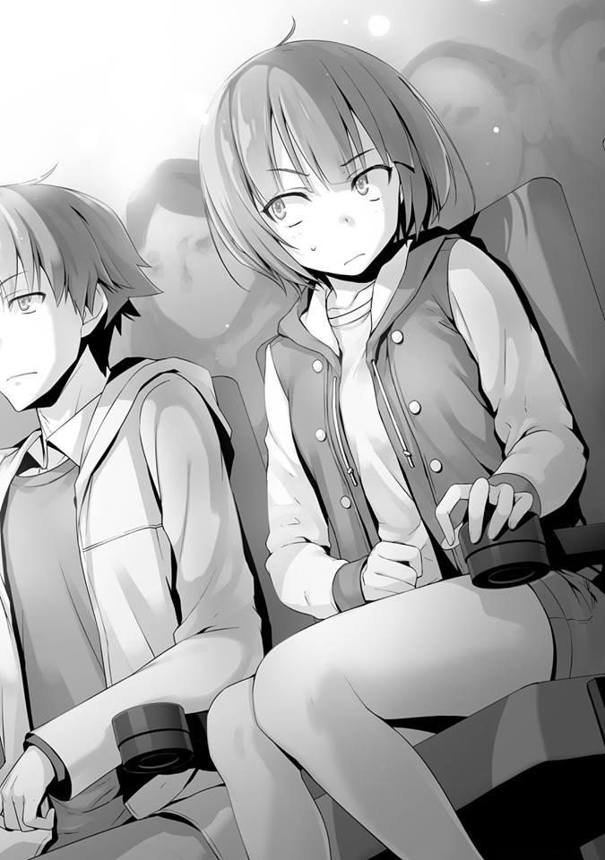
La voz que salió de inmediato fue un sonido de disgusto por parte de Ibuki. Ya que los anuncios y los arreglos preliminares se silenciaron milagrosamente en ese momento, pude escucharlo bastante bien.
— Es una coincidencia.
Sintiendo que no decir nada sería poco natural, le dije eso. Sin embargo, sin responderme, Ibuki desvió la mirada. Parece que tiene la intención de ignorarme.
Esto me permite llegar a la decisión de que esto me facilita las cosas. Pensando eso, me concentré en la pantalla. Sin embargo........
Desde que comenzó la proyección, pude sentir una mirada fija desde el lado de Ibuki. Tal vez está considerablemente curiosa con respecto a mi presencia, pero no parece que se esté concentrando mucho en la película.
¿Por qué no ves la película? Es lo que me gustaría preguntarle, pero siempre y cuando no pueda hablar en voz alta durante la proyección, será difícil. Entonces,
¿debería intentar susurrar en su oído?
No, si hago una cosa así, Ibuki podría enojarse conmigo. Debo simplemente soportar la mirada de Ibuki y pasar el tiempo pretendiendo que no me importa.
Afortunadamente, desde la infancia, estoy acostumbrado a ser “monitoreado”.
Sin dejar que nada de lo que me di cuenta en mi mente se viera en la superficie, vi la película. Es solo que si hay un problema, es que la película en sí no es muy buena. Verdaderamente una película serie B. Desde que comenzó la proyección, me pregunto si no es hora de dejar de ser tan repetitivo. Ahora, para atacar al enemigo, el protagonista está a punto de asaltar su territorio y justo antes del clímax, Justo antes de la escena que haría sudar las palmas, de repente la pantalla se oscureció. Al principio, pensando que era algún tipo de efecto, los estudiantes permanecieron en silencio y continuaron mirando la pantalla. Sin embargo, no importó si esperamos 10 segundos o 20 segundos, ni la imagen ni el sonido mostraron signos de continuar. Esto es extraño. Cuando comencé a pensar eso, un anuncio sonó dentro del pasillo.
“Pedimos disculpas por este inconveniente. Debido a problemas con el equipo, la proyección se detendrá temporalmente. Esto puede ser un inconveniente, pero esperen unos momentos”.
Ese anuncio se reprodujo. Incluso cuando los estudiantes expresaron sus quejas al mismo tiempo, parece que han decidido charlar tranquilamente mientras esperan.
— De alguna manera no estoy de suerte.....
Como si eso estuviera dirigido hacia mí, Ibuki lo dijo con un suspiro. ¿Quiere decir que la culpa de los problemas con el equipo es mía?
— También es inesperado para mí. Pensar que vendrías al cine hoy.
Ella me respondió así:
— No es de tu incumbencia cuándo y a qué hora llego, ¿verdad?
Tal vez no le gustó lo que dije, pero naturalmente me contradijo.
— Igualmente.
Es por eso que respondí así para que coincidiera con ella.
— Eres...........
Dijo algo y luego cerró la boca de nuevo por un momento, Ibuki abrió la boca una vez más con mirada fuerte.
— Hasta ahora, te has estado burlando de mí secretamente en lo más profundo de tu interior. No puedo perdonar ese hecho.
No es que no entienda los sentimientos de ira de Ibuki, pero no tiene derecho a guardar rencor contra mí.
Incluso si la consuelo, incluso si digo que ese no es el caso, esos razonamientos no funcionarán en Ibuki. Por eso elegí adoptar la mejor política.
— Eso es poder, Ibuki.
— ¿Eh........?
Sólo en una parte del cine, entre Ibuki y yo, fluía una atmósfera incómoda. Por supuesto, venía del lado de Ibuki.
Una mirada aguda me apuntó llena de irritación y rabia. Pero, sin importarme, seguí hablando.
— No importa cuál sea la situación, si tuvieras el poder de vencer a tu oponente, no se habría convertido en un problema, ¿no es así?
Simplemente que tu oponente esté escondiendo sus habilidades, eso es algo a lo que no debes prestar atención. Si me hubieras detenido, Ryuuen y los demás podrían haber ganado. Por lo menos, podría haber terminado en un empate.
Si después de decir esas palabras punzantes, me hubieran golpeado en esa azotea, no habría habido nada más patético que eso.
— Eso.........
Eso es algo que Ibuki no puede refutar en absoluto.
Esa es la fuerza. Si tu oponente está ocultando sus habilidades o no, eso debería ser un asunto insignificante.
— Además, a diferencia de Ryuuen y Sakayanagi, no tengo la intención de aspirar a las clases altas ni tengo la intención de sobresalir con una jugada individual. Naturalmente, porque no quiero sobresalir, no lo haré. Mostrar cualquier habilidad innecesaria. El hecho de que también luché contra Ryuuen fue una decisión que tomé después de sopesar mis opciones en una balanza y haber decidido que no había otra opción. Burlarme de mis oponentes o menospreciarlos, nunca, ni una vez pensé en hacerlo.
Esto no es algo que estoy diciendo para consolar a Ibuki. En cierto sentido, Ibuki puede sentirse aún más humillada que nunca. Humillar al oponente, es decir, no reconocerlo como una amenaza. Pero, lo que trato de decir es que para mí, Ibuki es como una piedra al costado de la carretera.
— ....... No me gusta.
No importa qué tan lógicamente lo ponga, obviamente será difícil para ella aceptarlo emocionalmente.
— Dices que no quieres sobresalir, pero eso es extraño. Si no hubieras hecho algo para estimular a Ryuuen en la isla deshabitada, algo como esto nunca habría sucedido. No, incluso antes de eso. Si solo hubieras pasado por alto el incidente violento de Sudou, eso habría sido todo.
— Es verdad. Puedes estar en lo correcto en ese punto.
Si simplemente hubiera dejado que Sudou fuera expulsado, permitir que los trucos de Ibuki desbarataran a la Clase D en la isla deshabitada y permitiera que la prueba de a bordo del barco procediera normalmente, Ryuuen no habría mirado a la Clase D. En particular, durante la batalla con la Clase B, debería haberme escondido.
— Aunque dices cosas con la boca, estabas usando tus habilidades. Aunque estabas escondido, todavía las estabas usando.
Tengo derecho a usar mis habilidades. Pero, para Ibuki, a quien no le gustan ese tipo de frases, debe haber sido una realidad inaceptable. Tal vez Ibuki haya pensado que cualquier otra conversación sería una pérdida de tiempo, miró la pantalla apagada. Yo también, sin objeción, dejemos que lo pasado sea pasado.
De cualquier manera, pronto se reanudará la proyección. Entonces mi tiempo con Ibuki también terminará.
PARTE 2
Cuando la película termine, me iré sin ver los créditos finales. Eso que había imaginado se rompió en pedazos con demasiada rapidez. Se convirtió en una situación inesperada.
Esperé y esperé pero la proyección no se reanudaba. Tal vez el problema con el equipo sea realmente difícil o simplemente sean ineficientes. Tanto Ibuki como yo nos sentimos igual de incómodos, así que me gustaría terminar con esto ya.
— Hah.
Esos suspiros desvergonzados salieron repetidamente de Ibuki. Sin embargo, en una situación como esta, es comprensible que quiera hacerlo. Ya he empezado a perder interés en la película.
— Ahh ---..... ¿qué crees que va a pasar?
Ya no puedo soportar este silencio, intenté iniciar la conversación. Como ella también debe sentir curiosidad por lo que va a pasar en la película, no creo que Ibuki abandone su asiento. Si ese no fuera el caso, se habría ido hace mucho tiempo.
¿O simplemente es que como los otros estudiantes no muestran signos de irse, ella tampoco podía hacerlo? Sin embargo, Ibuki apoyó la barbilla en su mano mientras la colocaba en el reposabrazos opuesto a mí y no mostró signos de siquiera mirarme.
Sentí como si un vidrio opaco o un vidrio considerablemente grueso hubiera sido colocado entre Ibuki y yo.
No hace falta decir que la actitud de Ibuki era una que decía: “Eres molesto, no me hables”.
Lo pensé mucho, y puede ser mejor si dejo de andarme por las ramas. Se siente como si una serpiente venenosa estuviera a punto de saltar y morder mi brazo.
Como resultado, decidí guardar silencio. Pero me pregunto cuando se va a reanudar la proyección. Aunque son solo algunos, los estudiantes que se cansaron de esperar ya comenzaron a abandonar sus asientos.
Había pensado que Ibuki los imitaría y se iría, pero no muestra señales de abandonar su asiento. Quizá simplemente desea ver la continuación de la película o tal vez-En cualquier caso, yo también quiero ver esta película hasta el final y ver cómo concluye. Si no lo hago, entonces perdería el significado de haber venido a verla.
Supongo que este es el momento de mostrar mi perseverancia. Enciendo mi teléfono y compruebo la hora.
Han pasado aproximadamente 20 minutos desde el anuncio. No solo esta función, parece que esto también tendrá un gran impacto en la próxima. Cuando
me di la vuelta y miré, el número asistentes había disminuido considerablemente a solo unas pocas personas, incluidos Ibuki y yo.
Si hubieran venido a ver la película solos, podrían haber aguantado, pero en el caso de las parejas no podían permitirse mantener a sus compañeros esperando.
Seguramente no quieran perder su precioso tiempo a solas con sus parejas en un lugar como este. Debo interpretar esto como si hubieran escapado antes de que se vuelva demasiado aburrido.
— ......... tú, ¿no vas a irte?
Mientras bajaba mi mirada hacia mi teléfono, Ibuki me habló. Ella había volteado su cabeza a otro lado así que no podía ver su expresión.
Parece que su sospecha hacia el hecho de que no me haya ido la hizo hablar.
— Ya vi el 80% y honestamente, tengo curiosidad por saber cómo concluirá.
Ya han pasado 20 minutos, por lo que debería reanudarse pronto.
He aguantado hasta ahora, por lo que sería un desperdicio si me fuera. Una misteriosa teoría como esa se formó dentro de mi cabeza.
— Si se trata del final, puedes buscarlo en internet y encontrarás todos los resultados que desees, ¿no? Incluyendo si fue o no interesante.
— No tengo ganas de leer las reseñas que reflejan las opiniones de otros.
La verdadera calidad del trabajo, ya sea bueno o malo, es algo que no sabré a menos que lo vea yo mismo.
Por supuesto, puede ser un punto de referencia que podría usarse para decidir si ver o no la película, pero de ninguna manera es algo que se pueda usar para evaluarla. Sin mencionar que si 1 o 2 líneas que explican algo tan importante como el clímax puede satisfacerte, no habría necesidad de pensar siquiera en venir al cine y verla.
— Ya no me importa esta película. Simplemente no quiero irme antes que tú, eso es todo.
— Eres bastante franca.
Parece que está aguantando por una razón que no tiene nada que ver con la película. Sin embargo, y desafortunadamente para Ibuki, ella no ganará esta competencia.
Es un empate. No tengo intención de dejar mi asiento hasta que se reanude la proyección. Supongo que esto puede interpretarse como la ventaja que tiene un hombre que no tiene planes para mañana en Nochebuena.
Lo que concluyó esta competencia entre los dos fue un triste anuncio. Y ese fue el hecho de que el problema con el equipo no se pudo solucionar y que la proyección se cancelaría. También se explicó el proceso de reembolso que se nos haría.
— Realmente no estoy de suerte.
En otras palabras, si quiero saber la conclusión, tengo que esperar hasta que pueda tomar prestada la película o simplemente leer los spoilers en un sitio de revisiones para saber el final.
A pesar de que la cancelación de la proyección había sido anunciada, sin siquiera mirarme, Ibuki todavía no mostraba signos de movimiento. Así que decidí dejar el cine ya que mi asunto aquí está terminado.
PARTE 3
Ahora, tal vez es culpa del extraño tiempo de espera, pero mis hombros se sentían inusualmente rígidos. También hubo asuntos imprevistos con Sakayanagi e Ibuki, así que no tengo ganas de tomar un desvío para regresar.
Cuando salí del cine con la intención de regresar, una voz me llamó desde atrás.
— Oye, espera. ¿Crees que puedes seguir ocultando tu identidad a todos de esta manera?
Era Ibuki. Después de perseguirme hasta aquí me preguntaba qué tenía que decir, pero es solo esto.
— ¿No has prestado atención a la conversación? Debes mantener lo que sucedió en ese momento como un secreto.
— Esto no es una broma. Todo este tiempo, en tu mente, me has estado ridiculizando.
No puedo perdonar esto, es algo que ni siquiera necesita decir, está escrito en la cara de Ibuki. Parece que su insatisfacción hacia mi conducta, palabras e ideas anteriores ha crecido aún más.
— Entonces, ¿qué vas a hacer al respecto? ¿Intentarás decírselo a todos?
— ........ No haré eso. No seré la única en problemas, ¿verdad?
— Cierto. Dependiendo de la situación, no solo los que estuvieron allí en la azotea, sino también Manabe y los demás se verán atrapados en esto.
Si siguen la cadena de eventos hasta el principio, la escuela puede incluso llegar hasta mí. Sin embargo, puedo inventar tantas excusas como sea necesario. Lo máximo que podrían lograr es que me suspendan.
— En primer lugar, la pelea entre clases es el fundamento de esta escuela.
Estás ladrando el árbol equivocado al culparme.
Es problemático, si ella espera que luche de forma justa.
— Entiendo, entiendo... es que fisiológicamente hablando, no puedo aceptarte.
Mientras analizaba a esta chica conocida como Ibuki Mio, pude ver que aún le falta dar un paso hacia la edad adulta. Con toda probabilidad, ha practicado artes marciales desde que era niña y ha continuado enorgulleciéndose de su fuerza. Durante la infancia, apenas hay diferencia entre hombres y mujeres en cuanto a fuerza. Por lo tanto, mientras posea la técnica adecuada, es bastante fácil adquirir el poder necesario para abrumar a los niños. Sin embargo, a medida que uno crece, esto se vuelve cada vez más difícil y en la época en que uno llega a la preparatoria, la brecha entre el potencial de los cuerpos crece. Si uno considera solo la fuerza del cuerpo, entonces se puede decir que no hay nada en lo que las mujeres sean superiores a los hombres.
Esto no es discriminación, sino una genuina diferencia que existe. Por supuesto, considerando a una estudiante promedio de preparatoria, Ibuki puede ser clasificada como bastante fuerte. Un hombre sin ningún entrenamiento en artes
marciales no podría competir contra ella. Sin embargo, contra un hombre cuyo potencial es el mismo o supera al de ella, y que también ha recibido el mismo nivel de entrenamiento, es desafortunado, pero no hay forma de que gane. La gente aprende estos hechos de manera natural. Pero Ibuki sigue siendo una estudiante de primer año de preparatoria. Todavía tiene que aprender a reconocer esa diferencia.
— Quedándote en silencio de esta manera, ¿en qué estás pensando?
— Me preguntaba cómo puedo resolver esto pacíficamente.
— ¿Y? ¿Pensaste en algo?
— Desafortunadamente, no se me ocurrió ninguna forma. No importa lo que diga, parece que no lo aceptarás.
Por primera vez hoy, solo un poco, Ibuki aflojó las comisuras de sus labios.
— Es verdad. No lo aceptaré, no me retiraré.
Como esperaba.........
Para desentrañar este rompecabezas inexplicable, un ataque frontal puede ser lo que se necesita.
— Por cierto........ ¿te gustan las películas?
— ¿Qué?
Es natural que Ibuki tomara una actitud de “¿Qué demonios me estás preguntando?” Sin embargo, ignoré esa actitud y continué.
Atrevidamente traté de traer un tema ordinario de conversación.
— Hasta el punto en que viniste a ver esta película sola. Sin mencionar que es una película bastante pequeña.
— ¿No está bien? Tengo mi propio objetivo.
Me intrigó esa expresión misteriosa.
— ¿Objetivo?
— ........ Ver cada película que se proyecte en esta escuela. No es un objetivo tan importante.
No, es algo increíble. Todos, en lo que respecta a este estilo de vida escolar, han traído consigo un objetivo que han decidido. Hacer amigos. Salir siempre en un día libre. Graduarse sin faltar o llegar tarde una sola vez. Obtener siempre el 1er lugar en los exámenes.
De las cosas más simples de lograr hasta las más difíciles. Incluso entre ellas, lo que Ibuki trajo con ella, “ver cada película que se proyecte” es algo que parece simple a primera vista, pero creo que es una de las más difíciles. Naturalmente, es más fácil ir a ver las películas que te gustan, pero para las que sean de géneros que no te interesen, es más difícil ir a verlas. La mayoría de la gente pensaría en ese objetivo solo como un pasatiempo. Sin embargo, no importa qué, cualquier cosa, establecer un objetivo y seguirlo es sorprendentemente una cosa muy buena.
— ....... Qué, ¿te estás burlando de mí?
— No sé.
Habiendo interpretado mal mi silencio, Ibuki me mira fijamente. Honestamente la podría haber elogiado, pero no me atreví a hacerlo. Esto también es un poco molesto para mí. En cualquier caso, sería mejor para mí separarme de Ibuki rápidamente. Si me quedo con ella por más tiempo, podríamos ser vistos por otros estudiantes.
— Entonces, ¿qué vas a hacer ahora? ¿Tomamos té juntos?
— Deja de bromear. Me voy.
Obviamente no aceptó mi invitación. Ya sabía que sería rechazado. Pero para mantener el flujo de la conversación continué con mis palabras.
— Entonces irás a la derecha, giraré a la izquierda. Y con eso, daremos por terminado el día de hoy.
Cuando dije eso, señalé los caminos a izquierda y derecha. Si los dos nos alejamos en direcciones opuestas, no ocurrirá ningún problema. Este es el camino ideal.
— ¿Qué? También quiero alejarme de ti lo más pronto posible. Ni siquiera tienes que decírmelo.
Nuestro amor parecía ser perfectamente correspondido, ya que Ibuki inmediatamente giró a la derecha. Yo también, le di la espalda a Ibuki y me dirigí hacia la izquierda. Sin embargo---
Me agarraron el brazo por detrás. Ibuki estaba tirando de mi brazo.
— Oye, ¿qué pasa?
— Cállate. Ishizaki y los demás vienen para acá.
Escondiéndose, me arrastró a las sombras y luego observó la situación en silencio. Poco después, siguiendo la mirada de Ibuki, vi a Komiya y Kondou con Ishizaki en el centro.
Ryuuen debería estar entre ellos pero, por supuesto, no estaba presente.
— ¿Ishizaki está bien? Todavía parece tambalearse.
— Cállate. Ya está bien.
Quizá todo su cuerpo esté dolorido, Ishizaki camina mientras a veces distorsiona su expresión en agonía. Al ver esa situación, Komiya miró ansiosamente a su alrededor y dijo.
— Hablando de eso, eso de antes........ que peleaste con Ryuuen-san, ¿es eso verdad?
— ....... Sí. Albert e Ibuki también estaban conmigo. Ryuuen-san....... no, se acabó la época de Ryuuen. A partir de ahora, ese bastardo de Ryuuen ya no ordenará a nadie.
— Eso es un alivio, pero ¿Quién va a hacer las estrategias a partir de ahora?
— Como si lo supiera. Kaneda probablemente se encargará de eso.
Mientras intercambiaban esas palabras, los tres pasaron frente a nosotros.
— Fuu. No nos notaron.
Ibuki se relajó. Seguramente no quería que sus compañeros la vieran sola conmigo. Especialmente Ishizaki, ya que no se sabe qué tipo de reacción tendría ante esto. Sin embargo, las palabras de Ishizaki habían llegado a nuestros oídos.
— ...... Hace un tiempo recibí un correo de Ishizaki. Ese tipo Ryuuen, no abandonó la escuela.
— ¿Es así?
Como lo dije como si fuera un asunto de otra persona, Ibuki se acercó.
— Hiciste algo. Si no, es difícil imaginar que Ryuuen cambiaría de opinión.
— Aunque hiciera algo para detenerlo, ¿no intentaste detenerlo tú?
Por lo que dijo y su actitud, así como su tono, tuve la sensación de que ese era el caso, parece que estoy en lo cierto.
— Odio a Ryuuen hasta la muerte. Pero el hecho de que alguien como tú, que ni siquiera es nuestro compañero de clase, haya tenido un impacto tan fuerte en él, es algo que odio aún más y no puedo perdonar.
— Es precisamente porque soy un extraño que podía impactarlo. Y viceversa, lo que no puedo hacer es algo que tú podrías hacer. Así como Ishizaki tiene la intención de cumplir con su deber.
A pesar de que fue una plática que escuchamos a medida que pasaban, no es demasiado difícil para mí adivinar lo que ha sucedido. Caballerosidad, es como lo llamarían, supongo. Me di cuenta de que Ishizaki también, aunque comenzó a odiar a Ryuuen, lo está haciendo por cortesía hacia él.
— ...... ¿Realmente lo crees? ¿No es solo porque puedes colocarte por encima de Ryuuen que dices algo así?
Ibuki dijo eso sin reconocer la idea de Ishizaki. Pero eso es sólo una pregunta capciosa. Ibuki quiere sacar los pensamientos que realmente tengo al respecto.
Los ojos de Ibuki lo están diciendo.
— ¿Y tú?, ¿realmente lo crees?
Por eso decidí devolverle la pregunta.
— ......... Debería decir que no, pero estábamos totalmente oprimidos. Incluso aunque éramos tres, el hecho de que derrotó a Ryuuen debería hacer que la evaluación de Ishizaki en la clase aumente.
— Ya veo. También podrías verlo de esa manera.
Mientras asentía como si estuviera convencida, me dio una patada en la parte de atrás de la rodilla.
— ¿No puedes esquivar esto?
— Oye, no soy un adivino o algo así para que lo sepas. No puedo esquivar todo.
A pesar de que Ibuki sospechaba, no siguió con el asunto.
— Entonces, ¿qué pensaste al respecto, de los comentarios de Ishizaki?
Tal vez estaba insatisfecha con el simple hecho de que le pidieran sus opiniones, así que pidió la mía.
— Incluso si digo que no me gustó, significaría que todavía tengo que reconocer su capacidad.
Las desventajas de que Ryuuen sea expulsado, Ishizaki pudo percibirlo por experiencia. Al interpretar la trama que se le ocurrió a Ryuuen, tuvieron una pelea, ese sería el caso. Ni una sola vez ha hablado abiertamente sobre lo que pasó conmigo, parece que respeta honradamente la promesa. Por supuesto, todo esto es parte de mis cálculos, pero no hay ninguna garantía absoluta.
Dejando de lado el ahora, la posibilidad de que cambie de opinión mañana y revele que todo no es inexistente. Incluso el asunto de Karuizawa, si él quiere difundirlo, podría hacerlo.
— Albert probablemente no dirá nada, pero ¿cuánto tiempo crees que Ishizaki se mantendrá en silencio?
Ibuki también es consciente de eso, por eso intentó confirmar la situación utilizando esto como provocación.
— Si habla, entonces lo hará. Pensaré en qué hacer entonces.
— ......Ahh, ya veo.
Como no mostré sorpresa ni agitación, Ibuki perdió inmediatamente su interés.
En cualquier caso, Ishizaki y los demás se han ido. Ahora finalmente puedo separarme de--
Me agaché al instante y bajé la cabeza unas docenas de centímetros. En ese mismo momento, Ibuki pateó el espacio que mi cabeza había estado ocupando a gran velocidad.
— ...... Demasiado bueno para no poder esquivar. Lo esquivaste, ¿verdad?
— Después de todo, era una patada desde el frente. Más bien, me pateaste con todas tus fuerzas, ¿verdad?
Una patada circular de un experimentado artista marcial. Si hubiera sido un golpe directo, una conmoción cerebral habría sido inevitable.
— Aunque seas tan fuerte, no lo mostrarás aunque sea un poco. ¿Por qué?
— ¿Usualmente andas por ahí anunciando a todos tu fuerza?
— Eso es......
— Ya sea que estemos hablando de artes marciales o lo que sea, mientras no tengas la oportunidad de usarlo, no recibirás el reconocimiento de alguien. A diferencia de Sudou, Ishizaki y los demás, no soy del tipo enérgico y entusiasta.
— Lucha conmigo.
— ¿Qué dijiste?
— Dije que pelees conmigo otra vez. Déjame pelear contigo cuando estás siendo serio.
Simplemente no puede dejar de lado este asunto, Ibuki una vez más cambió al modo de batalla. Si solo Ishizaki y los otros no hubieran aparecido, me hubiera separado fácilmente de ella........
— ¿Cómo fue que terminó así?
— Te odio. Odio que estés usando tu verdadero yo y tu lado oculto para diferentes propósitos.
— Ya veo.
Es porque, para bien o para mal, ha visto a tipos como Ryuuen e Ishizaki. Ibuki también es igual. Dejando de lado el hecho de que actuó como espía en la isla deshabitada, la verdadera Ibuki es igual.
— Siempre he tenido este tipo de personalidad, así que no tienes derecho a guardar rencor contra mí. Incluso si digo eso, es inútil, ¿no es así?.
— Es inútil.
Y con esos dos personajes, ella lo negó.
— Dejando a un lado lo que sucedió hasta ahora, a menos que obtenga venganza por lo que sucedió en esa azotea no estaré satisfecha.
No importa lo que diga, parece que no va a escuchar. Ahora que Ibuki se ha recuperado, está pensando en buscar una oportunidad de victoria. Sería una tarea fácil simplemente huir, pero una vez que comience el tercer semestre y ella traiga el asunto de la misma manera que ahora, será mucho más problemático.
Naturalmente, Ibuki también se da cuenta de eso.
— Una vez que comience el semestre, y haga lo mismo, eso será más problemático para ti, ¿no?
Incluso si ella no lo difunde directamente, simplemente al estar con alguien de otra clase todos sospecharán de nosotros. ¿Está realmente bien contigo? Es una amenaza así de contundente lo que me quiere decir.
Si dijera que eso también es algo parecido a “difundirlo”, Ibuki no parece aceptar que ese es el caso.
— Si quieres que me retire, no tienes otra opción que luchar conmigo de nuevo.
Aunque si solo dice esa palabra, “luchar”, puede tener varios significados.
— No estarás diciendo que quieres luchar en Go y Shogi, ¿verdad?
— No conozco las reglas para ninguna de esas dos cosas.
Eso es realmente desafortunado. Tengo confianza en mis habilidades para los dos.
— La forma de resolver la pelea es obvia, ¿no?
Dicho esto, adoptó posición de lucha dentro del centro comercial lleno de peatones. Ni siquiera tengo que pensar, es ese tipo de cosas. Seguramente debió decidir que las cosas se resolverían definitivamente a través de este medio.
— ....... Tal vez, podría ser que nada cambie.
— ¿Qué? ¿Estás diciendo que incluso si peleamos, el resultado no cambiará?
Tal vez mis palabras la dejaron inquieta, a punto de que le estallara una vena, Ibuki frunció los labios. Sus labios, que se habían relajado hacía un momento, ahora parecían un recuerdo lejano.
— No solo el resultado, también la forma de pensar de Ibuki.
Parece que ella también entiende, por la forma en que perdió en la azotea, que aunque se le conceda la revancha, el resultado no cambiará. Sin embargo, no importa de qué manera haya perdido, no hay duda de que Ibuki no está satisfecha con eso. No tiene nada que ver con ser hombre o mujer........ es solo que no quiere reconocer su derrota.
“Entonces tu ganas”. Aunque diga eso, solo equivaldría a echar aceite al fuego.
— Al final, no aceptarás la pelea, ¿verdad?
Por supuesto, no hay manera de que acepte. Especialmente porque estoy cansado en este momento, realmente no deseo hacer nada innecesario. Pero---
— ¿Tienes tiempo?
Le dije eso a Ibuki sin rechazarla.
— .......Nada en particular. Aparte de la película, realmente no tengo nada programado. ¿Podría ser que aceptes?
Obviamente, Ibuki, que no había esperado que yo estuviera de acuerdo, se quedó confundida. De hecho, daba un paso atrás.
— ¿Fue una broma?
— Nada de eso. Si vas a aceptar, entonces así es como me gusta.
Aunque se había sorprendido, Ibuki respondió de inmediato. Parece que quiere comenzar la pelea de inmediato y se está inclinando hacia adelante.
Pero no podemos hacer eso aquí. Hay mucha gente entrando y saliendo del centro comercial Keyaki. Es un lugar que es demasiado visible.
— ¿Vas a aceptar? ¿Vas a negarte?
— Me pregunto qué debería hacer. Quiero decir, este lugar es demasiado visible, ¿no? Aunque luchemos como propusiste, ¿qué harás con respecto a la ubicación?
Este es el centro comercial Keyaki. Hay innumerables ojos mirándonos. Además, si queremos evitar ser vistos por alguien, indudablemente necesitamos cambiar de lugar. Pero aunque diga eso, los terrenos dentro de la escuela también están fuera de discusión. Durante estas vacaciones de invierno, no se sabe quién tiene ojos dónde. En este punto, no hay otra opción más que ir a nuestras habitaciones dentro del dormitorio, pero no es posible organizar una pelea allí, Ibuki también entiende eso.
— ..... Buscar. Buscaremos a partir de este momento.
— No hay otra opción más que rendirse, ¿no?
— Al encontrarte aquí ya estás condenado.
Diciendo eso, Ibuki me dio la espalda y comenzó a caminar. Parece que quiere que la siga.
— ¿Qué harás si me escapo?
— Correré tras de ti, te alcanzaré y cuando te atrape, te golpearé en el acto.
Así parece ser. Suprimiendo mi impulso de correr, la seguí.
— Diré esto por adelantado, pero la premisa principal de esta conversación es que encontremos un lugar adecuado.
— Ya lo sé.
Mientras ella lo reconozca, por ahora lo aceptaré. Si no puede encontrar un lugar aislado, esta conversación también se debe olvidar. Comparado conmigo rechazándola unilateralmente, Ibuki no hará nada imprudente de esa manera.
Estoy tomando medidas basadas en esa lectura. A pesar de que estoy unos metros detrás de Ibuki, quien camina hacia adelante, no quiero estar junto a ella por mucho tiempo.
Entonces, Ibuki camina desesperadamente alrededor del centro comercial Keyaki. Mira a su alrededor para ver si hay un punto ciego aislado en algún lugar.
Pero no lo encontrará fácilmente. Hay lugares dentro del centro comercial donde
los estudiantes no pueden acercarse, pero allí hay cámaras de vigilancia. Y
además, incluso si los estudiantes no están allí, inevitablemente habrá empleados presentes.
Pero sería el mismo caso incluso si salimos del centro comercial. Sería una historia diferente si estuviéramos detrás de un edificio escolar, pero como no podemos entrar sin nuestros uniformes, eso también es imposible.
Sería extraño que regresáramos a ponernos a nuestros uniformes y reunirnos de nuevo, y si otros estudiantes nos ven entrar a la escuela juntos, es similar a un fracaso. Acepté sus provocaciones anticipando a eso, y como pensé, fue el movimiento correcto.
— Renunciemos ya, ¿de acuerdo? En primer lugar, un punto ciego en esta escuela es—
— Espera un minuto.
Ella me interrumpió Tal vez pensó en una buena idea, estaba mirando en cierta dirección. Lo que Ibuki está viendo es una puerta con ventanas de vidrio con las palabras “Sólo personal autorizado” escritas en ella.
Convenientemente un trabajador del interior estaba laborando, pero salió de allí con un vagón. Vistiendo un delantal amarillo con una placa escrita que decía
“Kimura” en ella. Y con una fuente grande, estaban impresas las palabras Farmacia del Centro Comercial Keyaki. En el vagón, había tres cartones corrugados que parecían contener mercancías. Estaba empujando ese vagón y dirigiéndose hacia la farmacia dentro del centro comercial. Con toda probabilidad, él estaba reabasteciendo sus productos.
— Sígueme.
— Oye, ese lugar es-
Cuando me llamó, Ibuki puso su mano en la puerta. Al abrirla, parece que esto es un almacén para las mercancías. No había personal presente, era un espacio poco iluminado. En cuanto a las cajas de cartón, parece que caramelos y gasas y cosas así fueron empacados en ellas. Como pensaba, todos productos pertenecientes a la farmacia. El calentador no funciona y está un poco frío.
— Si es aquí, nadie nos verá. ¿Me equivoco?
Cierto, en un lugar como este destinado al uso exclusivo del personal, no hay cámaras de vigilancia. Sin embargo, ¿no es este un lugar que debería estar bloqueado?
No puedo imaginar que un lugar como este se quede completamente abierto.
Entonces, ¿esto podría significar que un empleado ha olvidado cerrar este lugar?
O podría ser que esperaban regresar en poco tiempo y se fueron sin molestarse en bloquearlo. No importa cuál sea, permanecer demasiado tiempo en un lugar como este solo nos traerá problemas. El hecho mismo de que un estudiante esté aquí no es normal. Si nos descubren, no podremos evitar una reprimenda.
— No es un gran problema, ¿verdad? Solo digamos que vinimos aquí por error y eso será todo. Sería diferente si robamos algo, pero afortunadamente no tenemos bolsas que podamos esconder. Estamos completamente con las manos vacías.
Es cierto, podemos inventar una excusa pero....... parece que el deseo de Ibuki de resolver esto sin importar qué es bastante fuerte.
Significa que está más o menos dispuesta a asumir riesgos. Incluso si ya entiende el resultado, “quizás”, ese sentimiento no desaparecerá.
— No es mucho, pero en un espacio tan limitado, no podemos luchar,
¿verdad?
Esto no es muy diferente de la habitación del dormitorio que había pensado inicialmente.
— Realmente no me importa.
Mientras cumpla la condición de que nadie nos vea, parece que no tiene intención de pedir ningún lujo.
— Aunque digas eso... si el trabajador de antes vuelve, ¿qué harás?
Y además, normalmente los lugares como este están cerrados para evitar que la gente deambule aquí. No hay muchas posibilidades de que los productos sean robados, pero la probabilidad existe.
Quizás no lo cerraron porque tenían la intención de volver aquí después, o tal vez simplemente lo habían olvidado. De cualquier manera, es casi seguro que alguien venga pronto.
— Si terminamos esto antes de eso, está bien, ¿no?
Ni siquiera escucha mi opinión, qué optimismo.
Mientras intentaba desesperadamente proponer un cambio de lugar, con un resonante sonido “Gashan”, pude escuchar que la puerta estaba bloqueada.
— Existe la posibilidad de que esto vaya en una muy mala dirección, parece que se olvidaron de bloquear este lugar y regresaron para hacer eso.
— No hay necesidad de asustarse.
— Mira.
Insté a Ibuki a mirar el picaporte. Ibuki dudó, miró el picaporte también.
— ...... Oye. ¿Cómo es que no hay manera de abrir la cerradura?
— En una puerta con ventana de vidrio fija como esta, hay casos en los que no hay cerrojo manual en el interior. Un cerrojo manual es, por cierto, la forma de abrir la cerradura.
Es para prevenir delitos que no se instaló un cerrojo manual. Porque si uno rompe el vidrio, simplemente puedes meter la mano a través de él y usar el cerrojo manual para abrir la puerta.
— En otras palabras, ¿no podemos salir?
— Eso es.
— ¿Qué pasa con esto? Cada vez que me involucro contigo, ¿significa que quedaré atrapada en una habitación cerrada con llave? Ahh, tú, recordar el ascensor solo me hace sentir más náuseas.
— Esta vez no tengo ninguna culpa. Es porque entraste a este lugar.
— ¿Eh? ¿Estás diciendo que es mi culpa?
No, de verdad, toda la responsabilidad es de Ibuki. Antes fue el ascensor en verano, ahora es pleno invierno. Cosas extrañas como esta también suceden.
— Pero aun así, las circunstancias son diferentes en comparación a la vez en el elevador. La composición del vidrio parece no ser nada fuera de lo común, por lo que en el peor de los casos, es una cuestión bastante simple romperlo.
— Entonces eso significa que en el peor de los casos, ¿podemos salir?
— Sin embargo, significaría que alguien más definitivamente lo sabrá.
El hecho de que hemos entrado en el almacén sin duda será descubierto.
— ...... Bien. Simplemente, haré que cambies tu forma de pensar a una perspectiva positiva.
— Tengo un mal presentimiento sobre esto.
— Esa sensación es precisa. He confirmado que si es aquí, no habrá nadie que se interponga en nuestro camino.
Cuando Ibuki miró hacia mí, adoptó una posición de lucha.
— Te dejaré decidir las reglas. ¿Hasta que el oponente reconozca su derrota?
¿Hasta que pierda el conocimiento?
Esta situación en la que no hay escapatoria, Ibuki está intentando usarla en su beneficio. En una situación como esta, incluso si quiero escapar, no es posible.
— Entonces, cuando el oponente diga que se rinde, esa será su derrota.
— ...... Espera. Pensándolo bien, yo decidiré las reglas.
— Oye.
— Si seguimos esas reglas, antes de comenzar a pelear, reconocerás tu derrota, ¿verdad?
Correcto.
— Por eso, hasta que crea que es una victoria o una derrota. Hasta que el resultado esté claramente decidido, continuaremos con esta lucha.
Qué cosa tan dominante e irrazonable.
— Entiendo. No me importa seguir con esa propuesta tuya. Sin embargo, ya que vas a poner las condiciones, también haré que aceptes mi única condición.
— ¿Qué?
— Una vez que hayamos arreglado esto, tienes prohibido desafiarme una vez más. ¿Está claro? Por supuesto, si es una pelea legítima en un examen hecho por la escuela, entonces no tengo derecho a prohibirte eso, pero por lo menos, a una pelea personal como esta, haré aceptes que esta sea la última.
— ..... En primer lugar, tenía la intención de resolverlo todo aquí.
Parece que no tiene ninguna queja con eso, ya que Ibuki asintió levemente y lo aceptó. Si está decidido, entonces todo lo que puedo hacer es encender mi interruptor también. Desde el incidente en la azotea hasta este momento, la continuación de este combate cuerpo a cuerpo estuvo fuera de mis expectativas, pero no se puede evitar.
Por el contrario, el verdadero problema está después de haber derrotado a Ibuki.
Terminemos esto rápidamente y sin retrasarlo.
— Realmente eres un chico molesto. Le estás dando prioridad a los pensamientos sobre cómo salir de aquí.
— El lugar importa, si descubren que ingresamos al almacén, también se convertirá en un problema.
La excusa de que “entramos por error” no tendrá un buen efecto a menos que nos pongamos en contacto con ellos de inmediato. El hecho de que entráramos en el almacén mientras la entrega de mercancías está demorando mucho tiempo, es un problema grave.
Independientemente de si se había dado cuenta de mis sentimientos o no, Ibuki continuó moviendo sus pies mientras estaba en guardia.
Como esperaba, su trabajo de pies es el núcleo. No es una tarea fácil continuar esquivando en este pequeño almacén. Y además de eso, si es posible me gustaría evitar dañar las cajas apiladas. También tengo mis gastos, y como también estoy pidiendo prestados a Karuizawa “una cantidad considerable de puntos privados", me gustaría evitar gastos inútiles.
Sin embargo, dudo que contraatacar un poco sea suficiente para romper el espíritu de Ibuki. En una pelea en la que apuesta su orgullo, no se rendirá fácilmente. Aunque la dejara inconsciente, este seguirá siendo el caso. Ibuki se negará obstinadamente a reconocer su derrota.
Una regla donde la persona en cuestión decide la victoria o la derrota, una pelea problemática me fue impuesta.
Para ganar, tengo que atacar, pero no puedo darme el lujo de simplemente derrotarla. Si esto fuera una pelea a muerte, no mostraría misericordia, pero es solo una pelea sin ningún beneficio para mí. Ya sea en su cara o en su abdomen, no quiero dejar cicatrices y marcas en ella. Y si ese es el caso, entonces la cantidad de técnicas que puedo usar es inevitablemente limitada. Obligarla a reconocer su derrota, sin herirla. Un método para hacer que ambas cosas sucedan.
Por supuesto, no es como si ambas estuvieran aseguradas, pero... evité la patada de Ibuki con el mínimo de movimiento requerido. No es mi mano dominante, sino que usé mi mano izquierda.
¡Pan! Y con un sonido seco como ese, usé mi palma para golpear la frente de Ibuki. Una técnica que utiliza la parte dura de la base de la palma de la mano para golpear al oponente. Es posible que el daño causado por ella penetre al interior del objetivo. Acompañada por un intenso sonido y dolor, Ibuki se derrumbó hacia atrás quedando impresionada.
— Ah-------
La oponente, que había sido impactada por este ataque, sin siquiera saber qué la había golpeado, su conciencia se sacudió por el dolor y el pánico. Si la hubiera golpeado con un poco más de fuerza, probablemente habría perdido el conocimiento.
De manera imprudente, Ibuki vertió todo lo que tenía para derrotar al enemigo frente a ella. Incluso si es fácil para mí borrar su conciencia, no es tan fácil borrar sus sentimientos.
— ..... ¿Me estás diciendo que ni siquiera necesitabas tomar esto en serio?
Resistiendo ante su oscilante campo de visión, Ibuki sostiene su frente entre sus manos mientras me mira.
— Si también eres una artista marcial experimentada, entonces debes entenderlo también.
— Lo entiendo. No necesito que me señalen algo así... pero hay cosas que no puedo aceptar.
Es decir, esta pelea conmigo. Ibuki rugió esas palabras que ni siquiera sonaban como palabras y una vez más vino a patearme. La apertura que me dio no era en absoluto pequeña, era una patada que no enfatizaba nada más que pura fuerza. Puede ser una certeza que está apostando todo a un solo golpe, además de comprender que no me va a golpear con trucos.
¿O podría ser que esté preparando un contragolpe cuando golpeemos simultáneamente? De cualquier manera, no tengo ninguna intención de dejar que aterrice para atacarme. Usé mi mano derecha para bloquear la patada de Ibuki y usé mi mano izquierda para agarrar su garganta.
— ¡Gah.......!
Ahora ya no puede respirar cómodamente. Luchando, Ibuki usó ambas manos para agarrar mi mano izquierda. Rasguña con las uñas y resiste desesperadamente, pero mi mano izquierda ni siquiera se movió.
— Toma una decisión, Ibuki. ¿Quieres detenerte aquí o continuar inútilmente?
Si eliges lo último, no hay futuro para ti.
Si ella se convenciera por palabras tan simples, no estaríamos en esta situación.
Sin embargo, solo una vez más decidí probar a Ibuki.
— Ryuuen lo demostró. ¿Y tú, Ibuki? ¿Tienes la suficiente habilidad para presumir?
— ¡Guh!
Ibuki me miró con tanta intensidad como antes. Sin embargo, sus manos temblaron y colocó lentamente esa mano en la parte superior de mi mano izquierda.
Ton, ton, ton. Me tocó débilmente tres veces. Por ese gesto, sus ojos cerrados y la mirada resignada en su rostro, lo entiendo. Aflojé suavemente mi mano izquierda y solté a Ibuki.
— Hah...... hah. No pensé que me lo pusieras fácil solo porque soy mujer, pero realmente no me mostraste piedad.
— No eres exactamente un oponente con el que pueda relajarme, ¿verdad?
Y además, si me hubiera relajado con ella, Ibuki se habría enojado aún más.
Bueno, es cierto que apenas estaba tratando de usar mis habilidades, pero esa es otra historia.
Lo importante es que no parecía que me estuviera reprimiendo.
— Ahh, cielos. ¿Por qué......?
Aunque parecía frustrada, Ibuki se había calmado cuando se sentó en ese lugar.
— Bien. Solo tengo que reconocerlo, ¿verdad? Es tu victoria.
Ni siquiera me importa ganar o perder, pero si Ibuki está satisfecha con esto, entonces no lo negaré. Esta pelea temeraria, también tuvo algún significado para los dos.
— Nunca antes he visto a alguien tan fuerte como tú, ni siquiera entre los adultos. ¿Cómo te volviste tan fuerte?
— Practicando repetidamente todos los días. Es obvio para alguien que entiende de artes marciales, ¿verdad?
— Ahh, entiendo.
Entendiendo que no le estaba respondiendo seriamente, Ibuki suspiró como si se hubiera rendido.
— ¿Y? ¿Ahora cómo salimos de aquí? Te digo que me dejes ayudarte.
— Es muy sencillo.
Desde el sitio de la escuela, llamé con mi teléfono al Centro Comercial Keyaki, o mejor dicho, a la farmacia que está dentro.
— Disculpe, ¿hay un empleado llamado Kimura-san ahí?... sí, si está allí, por favor, póngase en contacto con él si no le importa.
No mucho después, el empleado llamado Kimura contestó el teléfono. Le informé del hecho de que estábamos atrapados aquí.
— Si es así, ¿no se convertirá en un problema?
— Es verdad. No hay ninguna garantía de que podamos pasar por esto sin una penalización. Para terminar con esto sin que sea un gran problema, voy a hacer que te hagas la tonta también, Ibuki.
No mucho tiempo después, el empleado que había cerrado la puerta antes, abrió y entró. Luego, al vernos en el almacén, nos preguntó por qué entramos y por qué no lo contactamos de inmediato.
— Lo siento, me emocioné en mi cita con ella y terminé buscando un lugar aislado. No me di cuenta de que este lugar estaba cerrado.
Aproveché el hecho de que estábamos en la fiebre de la Navidad e interpreté el papel de la pareja idiota que terminó emocionándose. Naturalmente, aunque sea una mentira, no diré que somos “novios” porque si el empleado decide informar de esto a sus superiores, puede interpretarse como algo ficticio. Simplemente evité decir algo directo como eso, y solo actué para hacerle pensar de esa manera.
— ¿Cierto, Mio? Deberías disculparte también.
— ¿H-Huh? ¿Qué estás-
Ibuki reaccionó de inmediato cuando la llamé por su primer nombre, pero usé mi mirada para callarla. Es ese tipo de situación, debería entender que cualquier error en lo que digamos podría hacernos daño. Por supuesto, he pensado en la posibilidad de que me traicione y me he preparado para ello. En el peor de los casos, también recibiré daño, pero me aseguraré de que ella sufra más. He hecho preparativos para darle más de la mitad de la responsabilidad a Ibuki.
Porque me resulta difícil demostrar que fue Ibuki quien entró voluntariamente aquí.
— ......Lo siento.
A pesar de que parecía insatisfecha, Ibuki bajó la cabeza.
De acuerdo con esto, le informé que no hemos tocado nada. El empleado masculino nos advirtió repetida y estrictamente contra esto, pero la culpa también está en el hecho de que había olvidado de cerrar la puerta, y esta vez terminó decidiendo no informar a sus superiores. Esta es también la razón por la que no llamé a ningún miembro del personal del centro comercial, sino específicamente a la persona que olvidó cerrar la puerta, porque tenía como objetivo esto. Después de dejarnos ir y de darnos un sermón, el empleado llamado Kimura cerró la puerta y regresó a su trabajo.
— De alguna manera hemos superado esto.
— ..... Tú, en ese momento, ¿viste incluso el nombre del empleado?
Más que el hecho de que la llamé por su nombre, parece estar más interesada en eso.
— No fue intencional. Simplemente me llamó la atención.
— Ahh, ya veo.
A pesar de que fue ella la que me preguntó, su respuesta es algo fría.
— En cualquier caso, nunca volveré a involucrarme contigo. Y con esto, llegamos a un acuerdo.
— Estoy agradecido por eso.
— Pero antes... solo déjame escuchar tu opinión sobre una última cosa.
— ¿Opinión?
— Para subir a la Clase A, uno requiere 20 millones de puntos, ¿lo sabes, verdad? Para que toda la clase lo haga, serían 800 millones de puntos.
Esa cantidad ridícula de puntos privados, ¿crees que es posible ahorrar tanto antes de la graduación?
— Es imposible. Es algo en lo que todos piensan, pero al final se rinden.
Le respondí de inmediato.
— Ya veo. Eso es cierto, supongo.
— ¿Es eso lo último que querías preguntar?
— Sí, se acabó. Nos vemos.
Tal vez no tenía nada más que decirme, se calló y se marchó. Y con esto, he cortado mi conexión con Ibuki, o me eso gustaría pensar...... pero mientras estemos juntos por 3 años, habrá un día en el que no podré decir eso.
Tuve esa premonición.
PARTE 4
— De varias maneras, ha sido un desastre.
A pesar de que mi programación inicial cambió parcialmente, pude llevar a buen puerto este largo medio día y, finalmente, parece que puedo regresar con éxito al dormitorio. Durante las vacaciones de invierno, una excursión parece tener también peligro. Primero Sakayanagi y Kamuro, luego la disputa con Ibuki.
Encontré a Ishizaki y los otros también.
Verificando la hora en mi teléfono, parece que son casi las 3 de la tarde.
— Jajaja. Estoy completamente de acuerdo---
Mientras caminaba por el Centro Comercial Keyaki para regresar al dormitorio, vi a un grupo de tres chicas doblar la esquina y caminaban un poco por delante de mí. Satou, Shinohara y también Matsushita. Los tres son estudiantes de la Clase D. Caminaban mientras conversaban amistosamente. Como tengo planes de reunirme con Satou pasado mañana, mi mirada se dirigió inconscientemente a ella.
Escondí mi presencia para no ser notado y me mantuve a una distancia donde podía escuchar sus voces. Porque si hay alguna información útil para mí que pueda obtener aquí, lo considero afortunado.
— Al final, hasta la Navidad no pudimos conseguir novios---
Matsushita dijo eso mientras suspiraba y miraba a las parejas que las rodeaban.
— Aunque si piensas en conseguirte uno, puedes hacerlo de inmediato.
Porque eres linda.
Shinohara se ríe entre dientes mientras pincha la axila de Matsushita.
— No quiero salir con alguien tanto como para comprometerme.
— Eso también es cierto ~. Pero, pensándolo bien, quiero un novio.
— Entonces, ¿tienes un candidato para novio en mente?
Matsushita le pregunta eso a Shinohara, pero Shinohara cruzó los brazos e hizo una cara complicada.
— En absoluto. En primer lugar, nuestra clase es catastrófica.
— El único premio gordo ha sido tomado por Karuizawa-san---
Por supuesto, por premio, se refieren Hirata.
— Ya que hemos estado peleando contra otras clases todo el tiempo durante los exámenes, casi no tuvimos tiempo de hacer amigos. Ahora que hemos llegado a esto, me pregunto si será mejor salir con un estudiante mayor…
es lo que estoy pensando. De verdad, aunque un estudiante universitario sería mejor.
Matsushita dijo que su año escolar está fuera de cuestión.
— Un estudiante de último año, eh---. Podría ser lo contrario, no quiero a alguien mayor que yo. Si me voy a meter en el amor, sería con alguien de mi edad, supongo.
Por otro lado, Shinohara parece preferir a alguien de su año escolar.
— ¿Qué hay de ti, Satou-san?
— ¿Ehh? ¿Yo? Cierto---. Como Shinohara-san, preferiría a uno de mis compañeros de clase.
— No, no. Nadie dijo nada sobre compañeros de clase.
Shinohara lo niega inmediatamente. Parece que con respecto a eso, siente la necesidad de negarlo.
— Hablando de eso, Satou-san... ¿no has estado hablando con Ayanokouji-kun?
De repente, mi nombre fue pronunciado. Si volteo a mirar a otro lado, será una salida. Moví mis ojos hacia una librería a mi lado, hacia un rincón frente al pasillo.
Renuncié inmediatamente a seguirlas. Para aumentar mi distancia con Satou y su grupo, decidí matar el tiempo aquí por un rato.
— Clasificación de productos de moda de este año, ¿eh?
Desde necesidades diarias hasta electrónica de consumo, parece que es una clasificación que incluye una variedad de cosas familiares. Si el detergente de este fabricante es bueno o malo, los detalles parecen estar escritos ahí.
Ya que captó un poco mi interés, lo tomé en mis manos y decidí examinarlo.
— ..... Podría ser una buena idea comprarlo y regresar.
El resumen de la mejor mercancía de autos en el apéndice no es necesario, pero como es un extra, lo dejaré así.
Como no estaba familiarizado con la sección de electrónica, puede ser útil como referencia cuando tenga que comprar productos como estos. Por el momento, sintiendo que Satou y su grupo se han ido, levanté la cabeza.
Sin embargo, por alguna razón en mi línea de visión, Shinohara estaba parada sola. Parece que las otros dos han ido al baño ya que Shinohara está sola en ese lugar.
Parece que tendré que regresar al libro por un tiempo más. Como ya he tomado el libro de clasificación de productos en mis manos para comprarlo, también revisaré los otros.
Había muchos clientes en la librería, pero vi a alguien que no encajaba. De hecho, un individuo cuyo comportamiento hace pensar que está a punto de hacer algo malo. Era Ryuuen Kakeru.
Está mirando la sección de los libros académicos. Como no podía ver nada, excepto su espalda, no podía ver su expresión.
— No va con él.......
No tenía su séquito con él, y al mirar su silueta de pie totalmente solo, de alguna manera se sentía soledad. Sin embargo, a pesar del hecho de que ayer mismo
fue roto por mis manos en la azotea, salió audazmente de esta manera al día siguiente, supongo que es lo que se esperaba de él.
Vale la pena solo por poder confirmar que Ryuuen ahora está saliendo así.
Incluso si me nota, nuestra relación no es una en la que podamos pararnos y charlar, así que por ahora decidí no acercarme a él.
— Oye, tú, eres de primer año, ¿verdad?
— ¿Ehh?
— ¿No nos estabas dando una mirada fulminante?
— N-No. Nunca... Nunca quise hacer eso en absoluto...
Mientras leía otros libros, escuché la desconcertada voz de Shinohara. Cuando levanté la cara de la página de la revista, un chico y una chica que parecían estudiantes de último año estaban mirando a Shinohara como si quisieran encerrarla. No recuerdo a la chica, pero recuerdo al chico. Es un estudiante de la clase D de 3er año que justo después de la inscripción, a través de negociaciones que llevé a cabo, fue el estudiante que nos vendió las respuestas de los exámenes pasados. Había escuchado que, entre los estudiantes de 2º y 3º año hubo bastantes expulsiones, pero aunque continuaba comiendo un plato de verduras, había evitado la expulsión hasta hoy.
Los dos estudiantes mayores llevaban ropa a juego. Ropa casual con rayas de lunares en ellas.
Además de eso, también estaban parados a una distancia donde sus brazos casi se tocaban. Casi no hay duda de que son pareja.
— Nos estabas mirando de reojo. Lo que está mal es que no estabas mirando hacia adelante al caminar, ¿no es así?
— Ya es suficiente, vámonos... no te preocupes por ella.
El chico no se preocupa mucho por esto, pero su novia parece bastante enojada.
— No puedo perdonar esto. Una simple estudiante de 1er año, también eres de la Clase D, ¿verdad?
— Eso, umm--- es cierto, pero..... pero yo, no estaba siendo...
— No me mientas. Aunque fuiste tú quien chocó con nosotros y se enojó.
A juzgar por la situación, parece que alguna de las dos no estaba prestando atención al frente y sus hombros chocaron, algo así.
Ya que ninguna tiene lesiones o se cayó, queda claro que su choque no fue tan fuerte.
— En primer lugar~. A pesar de chocar con un estudiante mayor, ¿qué pasa con esa actitud? Discúlpate.
— P-pero la que no estaba mirando hacia adelante eras.....
— ¿Eh? Por casualidad, ¿estás tratando de decir que es mi culpa?
Shinohara había estado tratando de afirmar su inocencia, pero no pudo soportar la presión de una estudiante de último año y se inclinó a regañadientes.
— ...... No. Lo siento mucho.
Sin embargo, esa actitud reticente no solo se transmitió a mí, sino también a la estudiante mayor. La mecha de la estudiante mayor ya estaba encendida pero terminó por convertirse en un infierno.
— Huh. Incluso si te disculpas después de tener una actitud como esa, no puedo sentir ninguna sinceridad de parte tuya.
— S-Sinceridad...... pero la que no estaba mirando al frente eras tú, senpai.
Parece que desde la perspectiva de Shinohara, antes de fulminarlos con la mirada o no, fueron ellos los que chocaron con ella.
— No me jodas. Tú fuiste quien no miraba al frente, ¿verdad?
— Pero eso.
Según las afirmaciones de la estudiante mayor, la que no estaba mirando al frente cuando caminaba era Shinohara, o eso es lo que ella dice. Está contradiciendo a Shinohara.
Lo que realmente sucedió solo lo saben las personas involucradas, así como los testigos. Puede ser una situación en la que a Shinohara le resulte difícil llegar a una solución ella sola.
Tal vez sería bueno de mi parte echarle una mano. Pero como no vi el momento del incidente, tampoco puedo saber la verdad... bueno, de alguna manera funcionará.
Justo después de que pensé eso e iba a devolver el libro a la estantería, se pudo ver a cierto estudiante. Parece que se dio cuenta de que Shinohara estaba atrapada en un problema cuando se acercó a ella.
Por si acaso, mientras pensaba eso y los vigilaba, ese estudiante llamó a Shinohara.
— ¿Qué estás haciendo, Shinohara?
Haciendo caso omiso de los estudiantes mayores, un chico de la clase, Ike Kanji, la llamó.
— Ahh..... Ike-kun..... ummm.
No fue una reacción de “Estoy a salvo”. Si tuviera que decirlo, parece que mientras está en medio de la tormenta, otra tormenta había llegado, Shinohara mostró una expresión tan desconcertada.
Normalmente, Ike es el que atrae problemas, así que es comprensible.
— ¿Quién eres? No te interpongas.
Ante la repentina interrupción, la estudiante mayor se alteró.
— Ahh, no, lo siento senpai. Pero, ella es mi compañera de clase. ¿Hizo algo?
Por su tono, parece que Ike también ha comprendido la situación. Podría haber estado observando la situación desde lejos, igual que yo.
— ¿Qué quieres decir? Ella se topó con nosotros. Y encima de eso, se enojó y se nos quedó viendo.
— Ahh~ entiendo, entiendo. También me mira así a menudo.
Riendo alegremente, Ike apunta un dedo hacia Shinohara. Shinohara debe estar insatisfecha con eso, pero parece que no puede entender las acciones de Ike y se ve estupefacta.
— Pero, ella siempre tiene esta mirada desagradable en sus ojos, por lo que parece que siempre está enojada. Ella no tiene el coraje de mirar así a Senpai, o más bien, probablemente nació de esta manera.
Así, mientras decía los rasgos malos de Shinohara, intentó instar a los estudiantes mayores a olvidar el asunto. No tocó la cuestión del choque, en otras palabras, quién tenía la culpa.
— Y además, creo que es mejor no causar un alboroto. Un maestro estuvo aquí antes.
Si los encuentran, los problemas se extenderán como un incendio. Así, Ike inteligentemente los hizo escuchar. Por encima de todo, el punto más importante aquí es que dirigió esas palabras no a la chica, sino al chico.
“¿Entiendes verdad?” es lo que está diciendo con su mirada al novio y parece que fue eficaz.
— ...... Ya vámonos.
Es justo antes de la víspera de Navidad, por lo que se refrenó. También el chico, seguramente quería evitar más peleas. Desde la perspectiva del novio que estaba en contra de esto, esta fue una oportunidad para concluir con esta situación. La chica todavía parecía un poco insatisfecha, pero aun así, su ira se había disipado un poco.
— Hmmm.
Respirando así por la nariz, el chico comienza a caminar. De alguna manera se las arreglaron. Después de que los dos estudiantes mayores se habían ido, Shinohara también, dio un suspiro de alivio.
— Gracias.....
Pensé que se alegraría de haber recibido las gracias, pero inesperadamente tomó una actitud fría.
— No es necesario........ no es gran cosa.
Sólo le respondió con esas pocas palabras.
— Pero antes, dijiste demasiado. No es como si siempre estuviera mirando como si estuviera enojada.
— Esa fue solo mi manera de ayudarte.
— ¿No había una manera mejor?
— No lo sé, te lo estoy diciendo.
— ..... Bueno, umm...... g-gracias---
— N-Nos vemos. ¡Disfruta tu Navidad sin novio!
— ¿¡H-Huh!? ¡Incluso si tuvieras diez mil años, tampoco podrías encontrar novia!
Por alguna razón, Ike decidió despedirse con esas palabras e intentó abandonar el lugar.
Probablemente es porque vio a Satou y Matsushita regresando del baño. Sin embargo, naturalmente su partida fue vista por esas dos. Al reunirse de nuevo con Shinohara, los dos pusieron una cara de duda.
— ¿Hmm? Justo ahora, eso era Ike-kun, ¿verdad? ¿Qué pasó?
— ¿Te molestó otra vez? ¿Por qué nuestra clase está llena de idiotas?
— N-No, no es eso. ¿sabes?
Pensé que ella dirigiría su ira hacia esas dos, pero Shinohara no hizo ningún intento por contarles el incidente. Y luego, en silencio, Shinohara miró la espalda de Ike quien se marchaba. Parece que el problema no se agravó, yo debería volver también. No parece que pueda obtener información sobre Satou aquí.
PARTE 5
En mi camino de regreso con la bolsa de compras que contenía el libro en la mano, recibí una llamada. Después de confirmar que el nombre de Hasebe Haruka se reflejaba en la pantalla, respondí la llamada.
— Ahh, soy yo. Puede ser repentino, pero pasado mañana, ¿por qué no nos reunimos todos para un paripi?
— ¿Qué? ¿Reunirnos y para hacer qué?
Mi horario para pasado mañana ya ha sido decidido, pero inadvertidamente terminé preguntando sobre la palabra que nunca había escuchado antes.
— ¿No sabes sobre paripi? Party people. En resumen, paripi.
No me había dado cuenta de que un nuevo término había nacido. No, en retrospectiva, siento que he escuchado a alguien de nuestra clase decirlo antes.
Probablemente significa una reunión de amantes de la fiesta que se divierten.
— La Navidad no es solo para las parejas, será el tema principal.
Entiendo. Parece que la influencia de la Navidad no se limita solo a las parejas.
Es algo que también afecta a los solteros de los alrededores.
— Lo siento. Ya tengo planes para pasado mañana.
Creo que sería divertido, pero no tengo más remedio que rechazar.
— ¿....... Sí? Pasado mañana es Navidad, ¿qué quieres decir con eso?
Es problemático, incluso si pregunta a qué me refiero con eso, pero si Haruka y los demás también se divertirán afuera ese día, existe la posibilidad de que lo vean. Será mejor que se lo cuente honestamente.
— Acabé prometiendo a Satou que saldría con ella.
— ¿Satou? ¿Te refieres a Satou como en el cubo de azúcar? ¿Vas a ponerlos en tu bolsillo cuando salgas?
¿Qué tipo de cabeza hueca es ella?
— ¿Ehh? ¿Ehh? ¿Qué? Podría ser que salgas a una cita con Satou-san?
¿En Navidad?
Ni siquiera tuve que explicar, naturalmente, Haruka debería entender el significado de eso. Sin embargo, debo corregirla donde se requiere.
— No es como si fuera una cita. Solo voy a salir a divertirme con ella.
— La gente de todo el mundo se refiere a eso como una “cita”.
Puede ser así, pero en lo que a mí respecta, no tengo ninguna intención de usar la palabra cita para esto.
— He rechazado sus invitaciones muchas veces en el pasado, así que Satou me pidió que saliera con ella el día 25.
— Nooo, no, no. Esto es malo, ¿verdad?
Por supuesto, desde que me inscribí en esta escuela también aprendí sobre lo que se conoce como sociedad. No es como si no entendiera el significado detrás de un chico y una chica que salen juntos en Navidad. Pero la única razón por la que acepté la invitación de Satou es porque ella eligió el 25 como fecha y nada más.
— Solo estoy confirmándolo contigo, pero no estás saliendo con ella, ¿verdad?
— Es lo mismo que esa vez con Shiina. No estoy saliendo con nadie.
— Es cierto, supongo. Bueno, no es mi lugar decir nada, pero... ya sabes, Airi.
— ¿Airi?
— Pasado mañana, si Kiyopon no irá con nosotros, creo que ella sentirá curiosidad por algunas cosas. Tampoco puedes ocultarlo fingiendo estar enfermo.
Solo tengo que decirle la verdad entonces. Sería simple para mí decir eso, pero no puedo hacerlo.
— Ya sé. Haré algo al respecto. Pasado mañana, ¿a dónde irán?
— ¿Significa esto que harás tu movimiento en base a mi horario?
— No podemos hacer otra cosa, ¿verdad? Si ella ve a Kiyopon y Satou-san en una cita navideña, creo que esa chica podría desmayarse.
Es una exageración decir que se desmayará, es lo que había pensado, pero ya que es Airi podría sucederle.
Dependiendo de las circunstancias, puede incluso caer en una severa depresión.
Mientras pensaba eso, en el otro lado del teléfono, el comportamiento de Haruka cambió.
— ¿Podría ser que, los sentimientos de Airi ........ los has notado?
Haruka me hace una pregunta que cae cerca del blanco.
— Dejando de lado si es o no exactamente como lo piensa Haruka, al menos entiendo que sus sentimientos hacia mí son ligeramente diferentes de los sentimientos que otras personas tienen conmigo.
— Es una forma un poco extraña de decirlo, pero entiendo. Significa que no eres tan denso. Por supuesto, ya que entiendes, tampoco diré nada innecesario.
Innecesario. En otras palabras, “¿no vas a responder a los sentimientos de Airi?”, Es de lo que está hablando. Si me preguntas, Airi es como un pajarito que comienza a dar sus primeros pasos ella sola.
En un estado en el que no conoce a muchas otras personas, aferrándose a uno de los pocos miembros del sexo opuesto con el que tiene intimidad, en otras palabras, y dirigir su afecto más o menos hacia mí es algo que no se puede evitar.
En primer lugar, necesita pasar más tiempo junto a un gran número de hombres y mujeres y con ellos, necesita madurar.
Al hacerlo, puede dar lugar a un sentimiento en ella que es diferente del amor que ve ante ella en este momento. Eso también es algo que se puede decir de mí. Qué es la escuela, qué son los amigos y qué significa exactamente amar a alguien. Todas estas cosas que todavía no entiendo muy bien, todavía no puedo tomar una decisión.
— En cualquier caso, me pondré en contacto de nuevo, ¿de acuerdo?
— Lo siento, por no poder ir con ustedes.
Me disculpé así, pero en respuesta a eso, Haruka respondió de inmediato.
— En primer lugar, somos un grupo que se ha reunido para estar fuera de esas restricciones, ¿verdad? Si se fortalecieran de manera extraña esas restricciones, nuestro grupo perdería su fuerza. Nos reunimos cuando queremos y no lo hacemos cuando no tenemos ganas. Es precisamente porque somos un grupo capaz de hacerlo que tiene su encanto.
Respondiendo así, Haruka termina la llamada.
— Es verdad, eso es cierto.
Si algo así como una obligación naciera en lo que respecta a las invitaciones, el fuerte de este grupo se perdería. Reconocí que este es un grupo por el que debería estar agradecido.
LA FORMA DE PASAR EL TIEMPO DE CADA QUIEN
Día 24, ahora es víspera de Navidad. Hoy y mañana, incluso mientras están ocupados, las parejas pasarán tiempo juntas y felices. Por otro lado, para la mayoría de los estudiantes, puede ser un día que no tenga nada que ver con ellos. Sin embargo, dado que la Nochebuena también será igual para ellos, estoy un poco interesado en su forma de pasarla.
Temprano por la mañana, salí de mi habitación antes de las 7. Por extraño que parezca, hoy he prometido reunirme con hombres en dos ocasiones distintas.
Llamé a uno para arreglar una reunión y el otro me invitó a una, que extraño.
Cuando salí del dormitorio, todo alrededor se había vuelto blanco, y me hizo pensar en un invierno en toda regla.
— Así que se acumula de esta manera.
El poder de la naturaleza es verdaderamente asombroso. La nieve seguía cayendo pesadamente desde el cielo, pero de acuerdo con el pronóstico, alrededor de las 7 se espera que deje de caer, por lo que debería detenerse pronto.
Tal vez es porque el frío se destaca visualmente, pero a pesar de que la temperatura no era tan diferente de la de ayer, extrañamente me sentí congelado.
Debería considerar usar de guantes y bufanda. Por supuesto, antes de las 7
durante las vacaciones de invierno, la mayoría de los estudiantes todavía están durmiendo.
— Hace frío.
En el banco cerca del Centro Comercial Keyaki, naturalmente no hay rastro de nadie. Después de limpiar la nieve de la banca, me senté. En el momento en que la nieve dejó de caer, apareció ese hombre.
— No llames a alguien tan temprano en la mañana.
El que escupió esas palabras fue el líder de la Clase C, Ryuuen Kakeru. No, ex líder. Y con un brillo afilado en sus ojos, me miró.
— No podría llamarte aquí si no fuera en un momento como este sin nadie alrededor.
— Eso es porque te conviene. No tiene nada que ver conmigo.
Era comprensible que Ryuuen maldijera así. Es verdad, si lo tuviera que decir, el que estaría incómodo si alguien atestigua esta reunión, soy yo. Una variedad de rumores... o incluso si no es el caso, no se podría evitar que algún rumor molesto se propague.
— ¿Y? ¿Qué asunto tienes conmigo?
— Estaba pensando que podríamos chismorrear un rato. Si dijera eso, ¿qué harías?
— Jajaja. Es una broma graciosa para esta somnolienta y de mierda mañana.
Aunque aún era temprano en la mañana, Ryuuen entiende bien el riesgo que estoy tomando.
Desde el principio, nunca pensó que esta conversación careciera de sentido.
— Hablando de eso, te vi ayer. Y también, en otro lugar, vi a Ishizaki y los demás.
También sirvió como evidencia de que Ryuuen había renunciado como líder tal como lo había dicho. No puedo descartar la posibilidad de que sea falso, pero después de ver a Ishizaki y los demás, eso no es posible. En primer lugar, no hay ninguna ventaja para ellos el hacer que me parezca así.
— ¿Estás contento de haber podido evitar que abandone la escuela como pretendías?
— Me impresionó. Aunque ahora estás solo, no terminaste recluido en tu habitación.
— Soy libre de hacer lo que quiera donde quiera. O, ¿sucumbes ante la ansiedad cada vez que me ves? Porque no sabes cuándo, en qué momento, decidiré mi venganza.
— Y entonces lo lamentaré, ¿eh? Que no te expulsé.
Ryuuen coloca una pierna en la banca al lado de la que estoy sentado y quita audazmente la nieve. Entonces, se sentó impávidamente en ella.
— Si es posible, me gustaría que no lo hicieras. Es por una vida escolar pacífica, pero también es una molestia luchar contra ti.
Si juego con los métodos de Ryuuen, me desgastaré más de lo necesario.
Derrotados por su persistencia, puedo imaginar el estado de los que habían caído bajo la sombra de Ryuuen.
— Entonces no me llames. Estás desperdiciando el milagro de que yo venga aquí.
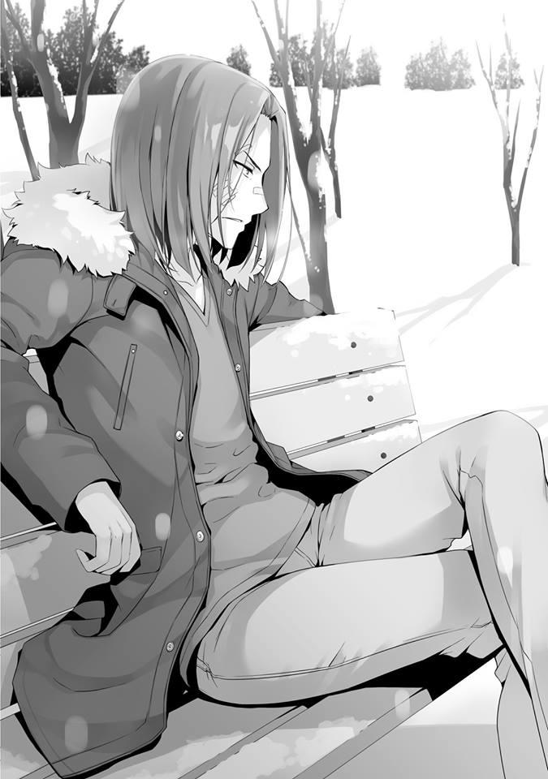
Dejemos la charla sin sentido sobre esto y vayamos al grano. Si desperdicio el tiempo torpemente, Ryuuen dejará este lugar sin piedad. No solo eso, sino que pude haber una continuación de lo de la azotea.
— Con respecto al incidente en la azotea en ese entonces, estaba pensando que me gustaría agregar algo.
— ¿Agregar?
En qué estás pensando ahora, es en lo que probablemente está pensando Ryuuen. Especialmente si analizo su derrota, ciertamente no es algo agradable para él. Sin embargo, es vital que le explique las partes que pasó por alto mientras le transmitía los hechos.
— En ese lugar fue donde se produjo el juicio decisivo, Ryuuen.
Probablemente, si hubieras estado allí solo, incluso ahora estarías obsesionado con el incidente de la azotea y podrías haber sido capaz de pelear conmigo de nuevo.
Pero, Ibuki, Ishizaki y también Albert también estaban allí con él. También es un hecho que este fue uno de los principales factores que causaron que Ryuuen acelerara su decisión.
Si la situación se hubiera agravado, el riesgo aumentaría proporcionalmente. En el peor de los casos, existía la posibilidad de que no terminara solo con la responsabilidad de Ryuuen. No solo en este caso, se rindió después de anticipar eso. Era una mano que valía la pena jugar. Por supuesto, lo manipulé para que lo hiciera, pero en lo que respecta a las expectativas, Ryuuen tiene un gran potencial.
— De verdad, eres un bastardo que solo anda jodiendo, estoy asombrado de todo lo que haces para tomar esa actitud de condescendencia hacia tus oponentes. Pensé que eso era mi especialidad, pero cuando lo haces así, me saldré del negocio.
— Sólo te decía la verdad.
— Ni siquiera tengo que pensar en cómo decir que eso te beneficia. Significa que tiene algo que ver con el hecho de que incluso usaste a Ishizaki y los demás para evitar que abandonara la escuela, ¿verdad?
Esperaba que se diera cuenta si mantenía adecuadamente el flujo de la conversación, pero parece que las perspectivas de ello son escasas.
— Tú y tu astucia. ¿Crees que todavía haré un movimiento?
— ¿Movimiento? ¿Qué quieres decir?
— No te hagas el tonto. Me refiero a que intentas obligarme a atacar a otras clases. Si no, no hay razón para mantenerme en esta escuela.
Si no uso a Ryuuen, su existencia no será más que un obstáculo. Él optó por dejar la escuela voluntariamente, por lo que si lo hubiera dejado a su suerte, eso habría sido el final, es fácil pensar eso.
— ¿Tu motivación no regresa? ¿No eres el tipo de hombre que disfruta el conflicto?
— Aunque aplaste a la Clase B o la Clase A, siempre y cuando estés aquí, no hay ningún significado para eso.
No tiene sentido. Esa es una afirmación bastante definitiva.
— ¿Qué? ¿Tu espíritu se ha roto tanto por una sola derrota?
Cuando dije eso, los ojos de Ryuuen se iluminaron con una emoción que se parecía ligeramente a la ira.
— ¿Entonces debo causar un alboroto aquí? Si eso es lo que deseas.
— Dije demasiado. Por favor, perdóname.
Si el problema con Ibuki, Ishizaki y los demás no existiera, probablemente ya habría sido golpeado y enviado a volar.
Este hombre aquí no conoce el miedo.
Entonces, conoció el miedo.
Sin embargo, Ryuuen probablemente se levantaría fríamente y lucharía. Tiene el potencial más que suficiente para avanzar, incluso cuando se siente aterrorizado.
Por supuesto, esto solo se aplica si él recuerda avanzar y madurar sin abandonar la escuela.
— Ya hemos arreglado las cosas entre nosotros. De ahora en adelante, no voy a mencionar el incidente en esa azotea. Les prometo que esta es la última vez. Ahora, hablemos.
Por supuesto, Ryuuen no creerá en meras promesas. A lo sumo, esto solo se está haciendo pro forma, palabras destinadas a consolarlo.
— Sospechoso. Incluso si continuamos esta conversación, no tiene sentido.
Dudo que pueda surgir algo beneficioso para mí, me iré.
Quizás su índice de incomodidad haya aumentado, se mueve para irse.
— No necesariamente.
Detuve a Ryuuen, quien hizo un movimiento para levantarse. La acción de intentar irse, mirándolo desde la perspectiva de Ryuuen, puede ser una estrategia para sacarme las palabras. Precisamente porque pensó que algo está pasando, salió del dormitorio tan temprano por la mañana. Probablemente no tenía intención de volver con las manos vacías.
Entonces, sin mirarme, Ryuuen volvió a sentarse.
— Eres libre de interpretar lo que voy a decir de la forma que quieras. Sin embargo, a partir de ahora, ¿no crees que será aburrido si estas batallas simples continúan sin cesar?
Ryuuen parecía frustrado conmigo, que seguía con las preguntas como acertijos, pero respondió de inmediato.
— ¿Batallas simples, dices?
— La clase D supera a la clase C, luego a la clase B y finalmente a la clase A.
Después, alegremente, Horikita y los demás se convierten en la Clase A.
Para un resumen de la historia, parece ser la salida popular y fácil. Pero, lo que estoy diciendo es que no necesitamos estar atados de esos patrones.
Si se tratara de una simple película de acción y aventura, podríamos haber golpeado adecuadamente en orden de debilidad. Sin embargo, esta es la realidad. No hay algo así como una secuencia cuando se trata de batallas.
Somos libres de comenzar a atacar desde A o B. No está fuera de cuestión que nos unamos a C, que también es nuestro enemigo.
— Curiosamente, parece que a partir del tercer semestre, la Clase A atacará a la Clase B. Mientras que la atención del enemigo se centra en la Clase B, es posible tomarlos por la retaguardia y de un solo golpe, colapsar a la Clase A por completo.
Y con esto ya no es una conversación sin sentido para Ryuuen.
— ¿Qué tan creíble es esta información?
— No lo sé. Yo diría que es 50-50.
Debo tener en cuenta la posibilidad de que Sakayanagi simplemente esté tratando de engañarme.
Si leo esto desde el punto de vista de su personalidad, nueve de cada diez veces hará lo que dijo.
— Si se trata de información confiable, se puede decir que es una buena oportunidad. Pero, pensé que ustedes, la Clase D, tenían un pacto de no agresión con la Clase B. Es bueno y todo atacar a la Clase A, pero mientras hacen eso la clase B será aplastada. Ichinose no puede vencer a Sakayanagi, ya lo sabes.
— No me importa quién gane y quién pierda. No planeo involucrarme.
— ¿Así que solo vas a dejarla caer sin ayudar?
— Si ella destruye Ichinose por mí, me ahorra el problema. La Clase D puede llegar a la Clase A sin esfuerzo. Y además, si es Sakayanagi, puede expulsar a algunos de ellos. Ya es hora de que sepa, qué tipo de sanciones habrá si hay una expulsión.
— Hay muchas cosas que no me gustan de esto. No tienes la ambición de aspirar a las clases superiores. ¿No estás actuando bajo la mentalidad de no querer sobresalir?
— Eso es cierto. Sin embargo, no tengo inconveniente si mi entorno actúa por su cuenta. Si podemos llegar automáticamente a la Clase A, no creo que sea un mal trato.
Por entorno, por supuesto me refiero a la Clase A y la Clase B. Y también a Ryuuen.
— ¿Entonces solo observarás sin hacer nada?
— Hay un problema que necesito resolver. Todavía hay una existencia problemática en nuestra clase.
Esa existencia es una persona que Ryuuen conoce muy bien. No hay necesidad de pensar en ello, el nombre de esa persona salió de su boca.
— Kikyo, ¿eh? Es verdad, para ti, ella es problemática. Por la forma en que funciona esta escuela, si tienes un enemigo en el interior, habrá una buena cantidad de limitaciones a las que te enfrentarás.
Para hacer frente a la protuberancia delante de mis ojos. Esos fueron mis pensamientos honestos.
En este punto, ya no es necesario prestar atención a llegar a la Clase A, así como a las expulsiones que se produzcan dentro de la clase, pero el problema es que, en el caso de Kushida, a la que tiene como objetivo es Horikita.
En cuanto a mí, ya que hice algo imprudente durante ese incidente en la azotea, no puedo hacer que del ex presidente del consejo estudiantil, Horikita Manabu, se convierta en mi enemigo. Mientras siga matriculado en esta escuela, si su hermana Horikita Suzune es expulsada, ese hombre seguramente no me perdonará.
En mi vida escolar, me gustaría evitar encender luces de señales amarillas.
— Hace unos días, Kikyo me llamó, ¿sabes? Me preguntó cuándo atacaría.
Desafortunadamente, en ese momento estaba absorto buscándote y no respondí, pero desde que perdió en el examen, ha estado vigilando atentamente buscando una oportunidad y no parece que haya dejado de desear la expulsión de Suzune. Kuku, es una mujer muy interesante.
— Si hubieras usado Kushida, podrías haber asestado un golpe letal a nuestra clase, ¿verdad?
— Si hubiera querido atacar a Suzune o a la clase, no había mejor material para usar. Pero para aplastar a alguien como tú que es indiferente a su clase, Kikyo es demasiado débil.
Es cierto, si fuera un ataque contra mí, entonces Kushida es insuficiente.
— ¿Qué pretendes hacer? Incluso si puedes suprimirlo temporalmente mediante el uso de medicamentos, siempre y cuando el cáncer no se elimine, no desaparecerá por completo. Aparte de eso, puede incluso hacer metástasis en otros órganos, ¿sabes?
Eventualmente, esos órganos se descompondrán y morirán.
— Ya llegué a esa conclusión. No hay necesidad de discutirlo.
— ¿Hmm? Entonces déjame escucharlo, Ayanokouji. ¿Cómo exactamente vas a suprimir por completo a Kikyo?
— ¿Necesito responder eso?
— Si esto resulta como quieres o no, depende de esta respuesta.
Divirtiéndose, Ryuuen se rió un poco. Pero quizás el dolor en su boca todavía está presente, ya que su sonrisa desapareció instantáneamente.
Se ha puesto un poco más frío. En esta temporada, permanecer fuera demasiado tiempo y enfriar tu cuerpo no es algo bueno.
— La clase D, a partir del tercer semestre, ascenderá a la clase C. Sin embargo, con toda probabilidad, regresaremos a la clase D. ¿Por qué?
Porque… voy a expulsar a Kushida Kikyo.
— Kukuku. ¡Kuhahaha! —Ignorando el dolor, Ryuuen rió a carcajadas—.
Realmente eres un hombre aterrador. Así que estás dispuesto a perder una batalla para ganar la guerra. Esta escuela está repleta de seres insignificantes de los que ni siquiera puedes deshacerte con este problemático sistema escolar. Sin embargo, incluso sabiendo eso, harás que la expulsen, ¿eh?
Por supuesto, las cosas no son tan simples. Mientras no posea los materiales necesarios para expulsarla en este momento, terminará influyendo en el
contenido del próximo examen. La presencia de una existencia preocupante es también un hecho.
— Está bien. Así está mejor, Ayanokouji.
— ¿Estás convencido ahora? Hay cosas en las que podemos ayudarnos sin tener que unirnos. ¿No lo crees?
— Kuku. Me has entretenido con tu charla anti-Kikyo. Pero, dejarme llevar por tus halagos y atacar sin pensar a la Clase A es una historia diferente.
— Aunque creo que es posible.
— Ni siquiera te molestes. En lugar de ir contra alguien más, prefiero ir por ti.
Parece que algo de vigor ha regresado a los ojos con los que me está mirando.
Incluso después de aprender el miedo, todavía hay un brillo en los ojos de Ryuuen. Nuestros ojos se encontraron.
— Ayanokouji, parece que estás intentando manipularme incluso si requieres la fuerza, pero no tengo ninguna intención de luchar.
— Así parece.
Parece que ha confirmado su resolución. Ryuuen parece querer desaparecer por completo del escenario. O tal vez continuará haciendo movimientos detrás de escena.
— Ryuuen, déjame darte un consejo. Tu plan de aferrarte a los puntos privados no es malo. Sin embargo, también es un hecho erróneo. Incluso si una o dos personas pueden ganar, llevar a toda la clase a través de eso es imposible.
— Esa Ibuki, soltó la lengua ¿eh?
— No es como si lo hubiera hecho. Simplemente me preguntó si era posible ahorrar 800 millones.
No es difícil imaginar que fue una estrategia que Ryuuen estaba tratando de llevar a cabo. Y el hecho de que esta estrategia no tenga posibilidades de triunfar es algo que la historia de la escuela establece.
Ahorrar una cantidad estimada de 800 millones de puntos privados es muy poco realista. Pensé que Ryuuen estaba intentando ejecutar una estrategia para
ahorrar puntos solo para él o para aquellos que eran cercanos a él. Solo renunció a esos puntos privados en la azotea porque había intentado abandonar la escuela, y una vez que eligió permanecer, esperaba que comenzara a actuar nuevamente para ahorrar puntos privados.
Sin embargo, a juzgar por el estado de Ibuki, parece que Ryuuen había estado ahorrando puntos privados como parte de una estrategia para permitir que toda su clase ganara. Ciertamente, al existir como tirano, existe la necesidad de proporcionar una compensación adecuada, pero al final del día, podría haber invalidado eso. Debido a que hacer una promesa tan clara, no debería haber quedado registrado.
— ¿O podría ser que solo pretendías estar ahorrando 800 millones?
Si ha estado engañando incluso a Ibuki, entonces esta conversación terminará aquí.
— Incluso si por casualidad, los puntos que posees en este momento sean cero, el contrato que has realizado con la Clase A aún permanece. Si se toman en cuenta los 800 mil puntos por mes, aún quedan 25 meses para el final. Los cálculos te permiten apenas llegar a tiempo a la graduación. Si tienes en cuenta los puntos privados que recibes cada mes, puede ahorrarte un poco más de tiempo. No aspires a nada más que eso.
Ahora, con esto, Ryuuen puede seguir abiertamente el sistema, llegar a la Clase A y graduarse. Por supuesto, todo esto se basa en la premisa de que la Clase A no colapsa, y tendrá que evitar cualquier gasto innecesario, pero no es una tarea demasiado difícil.
— Ayanokouji. En verdad eres muy inteligente y muy talentoso. Pero aun así, estás lejos de ser perfecto.
No como una broma, sino ridiculizándome, Ryuuen dijo eso. Pero su tono era serio. En otras palabras, hay una manera de ahorrar 800 millones de puntos, es lo que significa.
— ¿Me estás diciendo que tienes algún truco secreto para ascender a toda la clase, Ryuuen?
— Escucha, la cantidad de puntos privados que se mueven en un grado escolar es colosal. Suponiendo que no haya expulsiones, cada año escolar tiene aproximadamente 160 personas. La combinación de los tres años escolares en total suma 480 personas. Si puedo extorsionar 100,000
puntos de todos ellos por mes, solo eso me da 48 millones de puntos. Si puedo obtener más de 200,000 puntos por mes, sumará 100 millones.
Si continúa haciendo eso durante 8 meses, entonces obtendrá unos 800
millones. ¿Está diciendo que no es simplemente un sueño alcanzar ese objetivo?
Incluso si es suficiente de acuerdo con los cálculos, no es algo que sea ejecutable. Incluso una teoría impracticable, tiene un límite. Y la estrategia de utilizar mentiras y fraude fortalecerá la vigilancia de la escuela una vez que comience a moverse una gran cantidad de puntos.
Incluso si todos los estudiantes fueran atrapados con éxito en su inteligente estratagema y les extorsionara puntos cada mes, 100 millones es el límite.
Como pensé, es imposible.
Incluso esos 100 millones, si está dentro del alcance de la ilegalidad, serán confiscados inmediatamente por la escuela y recibirá sanciones. Incluso si acumula su ingenio y lanza un ataque frontal, me pregunto cuánto podrá ahorrar.
Sintiendo que era improductivo, intenté usar el ábaco otra vez. Suponiendo que la ayuda entre todas las clases es inevitable, y suponiendo que los puntos de la clase se mantendrán en un nivel alto de 1000 puntos, entonces habrá alrededor de 50 millones de puntos por año.
Si se pueden aprobar los exámenes especiales y ahorrar puntos, se podrían acumular aproximadamente 10 millones de puntos. En otras palabras, dentro de un año, aproximadamente 60 millones de puntos.
Incluso si uno no gasta y aprueba perfectamente los exámenes, este sería el límite. 180 millones de puntos en 3 años. Ni siquiera alcanzará los 200 millones de puntos. Esta es la cantidad máxima de puntos privados que una clase puede lograr, sin embargo, en la práctica debería ser mucho menor que eso.
Como lo más realista, obtener unos 150 millones de puntos debería ser lo más satisfactorio. Llegué a esa conclusión, sin embargo, no sentía que Ryuuen dijera
que tenía alguna base. Mirando su cara, esos fueron los pensamientos que pasaron por mi mente.
— No hay forma de que puedas alcanzar eso, o más bien ese no es siempre el caso, ¿eh? —La estrategia en la que Ryuuen se había estado enfocando. La estrategia que no pude ver—. Nuestros métodos son similares, pero el proceso de pensamiento fundamental detrás de ellos es diferente, eso parece.
— Es mi política evitar al máximo tomar decisiones con una baja probabilidad de éxito.
— Ahh. Tu estrategia, que inicialmente pensé que tenía cero posibilidades de éxito, ha aumentado a más del 5%.
Sin embargo, para que tenga éxito, hay varias cosas indispensables que absolutamente necesito.
— Más importante, Ayanokouji...... tú, ¿por qué la nieve se acumula en tu cabeza?
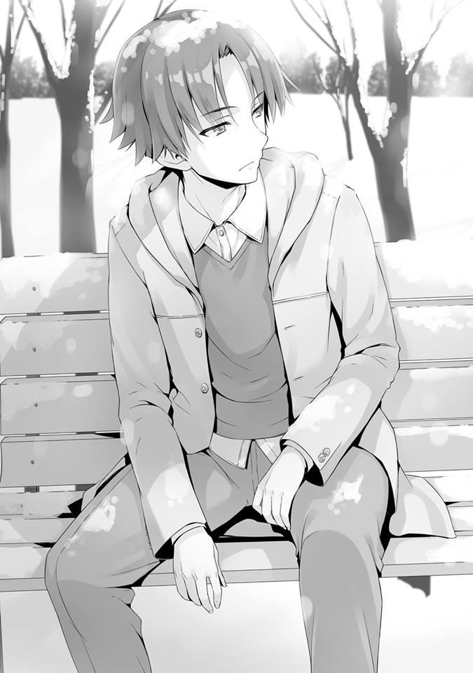
Señalándome eso, me fijé en mi apariencia.
— Ahh, no, de alguna manera simplemente terminó así. Porque la sensación de nieve se siente realmente bien. ¿Es extraño?
Mientras nevaba, pensé que era interesante y permanecí inmóvil, y entonces se acumuló.
Desde mi cabeza hasta mis hombros, mis brazos y mis rodillas, pude ver que la nieve restante había comenzado a derretirse. Me sentí agradecido por habérmelo señalado, pero no hice ningún movimiento para quitarme la nieve. De cualquier manera, se derretirá y desaparecerá pronto.
Si ese es el caso, no es tan malo tratar de tocar la nieve de esta manera.
— Bastardo, seguro que te gusta joder.
— Ahora que has escuchado lo que tengo que decir, debería llevarlo aún más lejos y alinear nuestros intereses.
— Obviamente, esto es demasiado bueno para ser verdad, pero también hay un olor peligroso sobre esto. Si lo consideras necesario, incluso desecharás a tus aliados. ¿Cómo puedo asociarme con alguien cuando ambos estamos pensando en apuñalarnos?
— Si ya has pensado en eso, entonces no debes preocuparte. Si tienes miedo de ser superado, entonces simplemente debes ser más astuto. Eso es todo, ¿verdad, Ryuuen?
No estoy pidiendo una alianza entre dos buenos amigos o algo así. Solo estoy alineando los intereses de los dos. Eso, en cierto sentido, daría lugar al tipo más fuerte de relación.
— Si es así, Ayanokouji. Yo seré la persona quien al final siente las bases.
— ¿Sentar las bases?
— Depende de cómo se desarrolle el tercer semestre, pero la Clase C, no, mi clase ha caído a la Clase D y probablemente será liderada por Kaneda y Hiyori. En última instancia, serán ellos los que decidirán si atacarán la Clase A y no a ustedes, que se han elevado a la Clase C, los persuadiré de que esos son unos buenos planes.
Como mínimo, significa que son otras personas además de Ryuuen quienes decidirán qué hacer.
— Eso no suena tan mal.
Aunque Ryuuen se retire, si Kaneda y los demás deciden atacarnos, entonces no hay forma de evitar ese problema.
En particular, Ishizaki e Ibuki no tienen exactamente una impresión favorable de mí. También es posible que ellos influyan en su clase para desafiar a la nuestra.
— Sin embargo, como condición para sentar las bases, también incluiré el tema de antes. Cuando suban a la Clase A, si aceptan nuestra solicitud, te escucharé.
— ¿Así que significa que vas a manipular a Shiina y a los demás desde las sombras?
— Eso es imposible. Ya les dije que voy a renunciar.
— En otras palabras, solo por sentar las bases... me estás cobrando bastante.
Aunque sea una condición de no agresión, esto hace que sea abrumadoramente inconveniente para mí.
— No creas que haré un movimiento a un costo tan bajo, Ayanokouji.
También está el contrato que firmó con Katsuragi, Ryuuen sabe muy bien cómo meterse en los bolsillos de su oponente.
— Esa propuesta, no me importa aceptarla, pero no puedes ponerla en un papel. A lo sumo, será una promesa verbal.
— Kuku. No estoy esperando algo así de ti que se mueve furtivamente. Pero sabes, si te niegas a esto, no te perdonaré. Usaré cualquier medio que tenga para hacer que te arrepientas.
“Si no te gusta eso, entonces aplástame”, casi podía escucharlo decir eso.
— Creo que esto puede ser innecesario, pero por favor déjame preguntarte una cosa. Incluso si llegamos un acuerdo secreto aquí, no puedo imaginar una “estrategia” que sea posible sin Ryuuen.
Incluso si aumenta de 0% a 5%, cualquier cosa más que eso requiere una cantidad apropiada de habilidad y suerte. Y si hay una persona que posee eso, es nada menos que Ryuuen.
— No sé tanto. Los que aprovecharán la oportunidad o la desperdiciarán son Kaneda y los demás.
Parece que está diciendo que a lo sumo solo pondrá la mesa. Así es como el hombre que solía gobernar la antigua Clase C a través de la violencia y el terror asume la responsabilidad. Lo menos que puede hacer para expiarse, probablemente algo así.
— Entonces la negociación está completa.
Hice un movimiento para estrechar la mano de Ryuuen. De cualquier manera, Ryuuen no es una existencia fácil de controlar. Aunque ahora está retirado, si puedo manipularlo para que no se convierta en un obstáculo, entonces eso es un buen negocio. No, solo con esto, todavía no puedo permitirme ser negligente.
— Entonces, ¿esto es todo lo que tienes que decir? En tu invitación inicial, dijiste que había una persona que querías que conociera. Pero no creo que una persona que valga la pena esté entre los de primer año.
— Es cierto. Puede que no haya nadie así en primer año.
— ¿Qué?
— Ya es hora.
Justo cuando era inminente la llegada de la hora señalada, y como si lo hubiera cronometrado, ese hombre apareció a lo lejos.
Al ver esa figura, Ryuuen no pudo ocultar su sorpresa ante el inesperado visitante. Mientras ese hombre caminaba hacia nosotros, se detuvo exactamente entre Ryuuen y yo.
— ...... De todas las personas, ¿él? ¿El que querías que conociera?
Dirigí mi mirada hacia ese hombre sin negar la pregunta de Ryuuen.
— Lo siento, tenía que ser temprano en la mañana.
— No me importa. Este es un buen momento para una reunión clandestina.
La elección del lugar tampoco es mala.
Es porque es un campus escolar cerrado, y está dentro de la estrategia. Es una posición en la que puedes detectar de inmediato a cualquiera que venga por ambos lados.
Si por casualidad, alguien viniera aquí, este hombre probablemente fingiría no conocernos y simplemente se iría.
— Pareces muy cercano al ex presidente del consejo estudiantil. ¿Suzune también fue útil?
Incluyendo el incidente en la azotea de hace un tiempo también, Ryuuen se rió ligeramente. Tal vez ya había adivinado que ella es la hermana pequeña del presidente del consejo estudiantil, y parece que ya lo ha investigado.
— Pensé que estarías solo, Ayanokouji. Imaginar que Ryuuen te acompañaría.
Más que sorprendido, fue más como si lo confirmara conmigo por si acaso.
Mirando una vez la nieve acumulada en mi cabeza, luego de no prestarle atención, el mayor de los Horikita comenzó a hablar.
— Entonces, continuaré con lo que tengo que decir bajo el supuesto de que Ryuuen Kakeru también es un colaborador. Si no nos damos prisa, no hay forma de saber quién nos verá.
— Espera un minuto. ¿A quién llamas colaborador?
— Por lo menos puedo garantizar que no es un enemigo.
Aliado, colaborador. No pude responder con una mentira como esa, así que respondí de esa manera.
— Ayanokouji, cuando me pediste ayuda hace un tiempo, ¿recuerdas la promesa que me hiciste?
— Sí. Se trata de ayudarte a detener a Nagumo Miyabi, ¿verdad?
— ¿Nagumo? ¿Te refieres al nuevo presidente del consejo estudiantil?
La razón por la que estoy con Ryuuen en este momento es porque quería que él supiera lo que también está pensando el Horikita mayor. Por supuesto, podría habérselo dicho yo, pero tener al Horikita mayor aquí para que lo diga directamente tendrá un efecto persuasivo más fuerte.
— Parece que no le gusta la forma en que Nagumo está haciendo las cosas.
— Ya veo. Así que estás tratando de usar a Ayanokouji para detener a Nagumo, ¿eh? Es un famoso chisme que el segundo año está dominado por ese hombre. Para lidiar con él, no hay otra opción que usar a uno de primero. Dime algo, Horikita. ¿Desde cuándo empezaste a mirar a Ayanokouji?
Ryuuen le dijo eso al Horikita mayor y lo llama directamente por su nombre. No solo eso, sino que su actitud es de condescendencia. Bueno, ya que estoy haciendo algo similar no puedo decir nada.
— Justo después de que se inscribió. Por otra parte, parece que has tenido dificultades para encontrarlo.
No fue en represalia, pero en respuesta a Ryuuen, el Horikita mayor simplemente respondió indiferentemente.
— Kuku. Es porque soy del tipo que se toma su tiempo disfrutando del proceso.
— Por todo eso, seguro que te golpearon considerablemente.
En respuesta a Ryuuen, que estaba tomando una actitud enérgica, respondió como si lo estuviera rostizando. Parece que Ryuuen también sintió eso, pero endureció su mirada.
— Si crees que mis habilidades son deficientes, ¿te importaría probarlas aquí?
“Aunque estoy herido, todavía puedo derrotarte”, Ryuuen lo provocó con ese espíritu.
— Tendré que negarme. No me interesan esas cosas.
El mayor de los Horikita respondió con calma.
— Kuku. Sabía que no me harías caso.
Mientras Ryuuen se ríe ligeramente, planta sus pies cruzados en el suelo. Justo después de eso, usando una patada frontal, envía nieve volando hacia la cara de Horikita. El objetivo era cegar al oponente.
Buscando el momento en que se agite después de que su visión ha sido bloqueada por la nieve, Ryuuen lanza su puño derecho hacia el abdomen del Horikita.
Ante eso, sin siquiera dar la sensación de que su visión está obstruida, el Horikita mayor predice el ataque y se protege completamente. Incluso mientras retrocede, sin pánico y con calma, utiliza su dedo medio para ajustar sus gafas por el puente.
— Pensé que solo eras un bastardo inteligente que solo tiene su astucia, pero eres bastante bueno, ¿no?
A pesar de haber sido un ataque sorpresa, al Horikita mayor que lo bloqueó, Ryuuen lo elogió.
— Creo que te dije que lo rechazaría.
— ¿Qué pasa? Si no te gusta, eres libre de atacarme en cualquier momento.
¿O podría ser que no puedes luchar contra alguien de primer año?
— Parece que te has conseguido un amigo confiable, Ayanokouji.
¡Pan! Y con ese sonido, el Horikita mayor limpia la nieve y la suciedad de su ropa.
— También estaba pensando eso.
Pero la mirada de Ryuuen que se fijaba en casi cualquier persona no cambiaba.
— Bueno, eso está bien. Te evaluaré como un hombre que puede hacer las cosas hasta cierto punto. Horikita-“senpai”.
Podía tomarse como sarcasmo, Ryuuen agregó un honorífico.
— Del mismo modo. No eres apto para el consejo estudiantil, pero te estoy dando cierta cantidad de valor.
— Estoy muy feliz de ser elogiado por el ex presidente del consejo estudiantil.
Sin recibirlo con sinceridad, Ryuuen levantó la mano y respondió como si lo hiciera a un lado. Dado que la interacción entre esos dos ha terminado, el Horikita mayor se puso manos a la obra.
— Ahora lo que quiero que haga Ayanokouji es proteger y mantener el orden en esta escuela. Puedes usar cualquier medio necesario. Puedes destituir al presidente del consejo estudiantil Nagumo Miyabi de su trono, o exponerlo por una acción descuidada, o simplemente obstruirlo, puedes elegir el método que sea más fácil para llevarlo a cabo. Una vez que comience el tercer semestre, el poder real de Nagumo se fortalecerá y comenzará a actuar en serio.
— En detalle, ¿cómo va a cambiar? ¿Estás diciendo que el consejo estudiantil tiene tanta influencia?
— Por supuesto, el consejo estudiantil no es omnipotente. Sin embargo, a diferencia de otras escuelas donde el consejo estudiantil está solo para decorar, es un hecho que se otorga cierta influencia a este consejo estudiantil. En la actualidad, siempre que surgen problemas en la escuela, el consejo estudiantil ocupa un lugar central y lo resuelve. Tanto Ayanokouji como Ryuuen deberían ser conscientes de eso.
Durante el caso violento de Sudou, los que presidieron el caso no fueron los maestros, sino el consejo estudiantil encabezado por el Horikita mayor.
— Y también, el consejo estudiantil tiene la autoridad de pensar y decidir sobre partes de los exámenes especiales. Este año, se realizó un examen de supervivencia en una isla deshabitada con los de primer año, pero eso fue algo que pensó el consejo estudiantil anterior y se hizo realidad.
En otras palabras, en los exámenes especiales, Nagumo puede crear algo completamente diferente de lo que hemos encontrado hasta ahora, existe esa posibilidad, ¿eh?
— Él está tratando de convertir esta vida escolar de mierda y aburrida que ustedes han construido en algo interesante, ¿verdad? Deberían darle la bienvenida
Riendo, Ryuuen una vez más cruzó sus piernas.
— Si es la manera correcta, que lo sea. Sin embargo, hasta ahora, Nagumo ha usado métodos que han logrado que muchos estudiantes sean expulsados. De hecho, entre los de segundo año hasta este momento, 17
estudiantes han sido expulsados. De acuerdo con las entrevistas previas a la expulsión, aunque puede que ya lo sepas, en más de la mitad de ellos Nagumo estuvo involucrado.
17 estudiantes. Entiendo que esto es una cantidad bastante grande.
— Si puede lograr que muchas personas sean expulsadas, no creo que le resulte difícil gobernar un año escolar completo.
Seguramente existía una fuerza que había intentado detener a Nagumo. Sin embargo, si los papeles se invertían, dependiendo de la situación, esa fuerza podría debilitarse, absorberse y luego capitular.
Y entonces, Nagumo logró ganar el control sobre todo el segundo año.
— Ahora que asumió el cargo de presidente del consejo estudiantil, eso también se extenderá al primer y tercer año. Una vez que comience el próximo ciclo, incluso en los nuevos estudiantes de primer año, esa influencia será más pronunciada, eso es lo que pronostico.
Si lo dejamos en paz, puede que no termine con tan solo 10 o 20 personas expulsadas.
— ¿No es que Nagumo solo está siendo racional? Esos 17 estudiantes no eran más que personas sin valor y por eso fueron aplastados, ¿verdad?
— Los que rompan las reglas serán expulsados. Eso es natural. Sin embargo, guiar a todos hasta la graduación sin perder a una sola persona. ¿No es de eso de lo que se trata un líder ideal?
— Entonces, ¿Horikita-senpai-sama está tratando de decirnos que no ha expulsado a nadie?
— Solo hablaba del ideal. Por lo menos, hasta este momento, nadie de entre los de primer año ha sido expulsado. Perseguir ese ideal no es algo malo,
¿cierto?
— Es lo que dice, Ayanokouji. ¿Qué piensas sobre eso? Sobre el ideal del que habla este hombre.
— Puedo entenderlo en lo que se refiere a ser un ideal. También está bien, que haya personas que aspiren a lograrlo. Sin embargo, al menos puedo decir que Ryuuen y yo no somos de los que buscan ese ideal.
— Kukuku. Eso es completamente cierto.
Si hay alguien que cumpla con esos criterios en este momento, tendría que ser nada menos que Ichinose Honami de la Clase B.
— Por supuesto, no tengo ninguna intención de pedir tanto de ti. Si puedes detener el alboroto de Nagumo, eso es suficiente.
Lo dijo de manera simple, pero si eso pudiera hacerse fácilmente, el Horikita mayor no lo habría pedido. Si el consejo estudiantil también tiene su cuota de poder, entonces aún más, no es algo que pueda detenerse.
Es porque si actúo para no causar negligentemente expulsiones, todo lo que podría lograr a través de mis esfuerzos es asegurarme de que los de primer año no sufran sanciones, así como conocer el contenido de los exámenes especiales.
— Me despediré en este momento. Después de todo, también me han convertido en un partícipe secreto.
Al parecer, Ryuuen no tiene ningún interés en los acontecimientos del consejo estudiantil.
— Pero fue una charla bastante fascinante, pero más que esto es una pérdida de tiempo. Nos vemos.
Quizá fue una negociación que fue de su satisfacción, sin vacilación alguna, Ryuuen se dirigió hacia el dormitorio.
Llamé a Ryuuen.
— De ahora en adelante, ¿planeas quedarte solo?
— Déjame en paz. Desde el principio, esta es mi naturaleza, me sienta bien.
Dejando atrás esas palabras, Ryuuen se fue junto con sus huellas en la nieve.
— Ayanokouji, la razón por la que dejaste que Ryuuen escuchara todo esto,
¿es para convertirlo en un aliado?
— Eso no está del todo mal, pero... si tuviera que decirlo, la meta era más para poder evitar ser un objetivo de su interés.
Tenía la intención de convencer a Ryuuen de que definitivamente no participe en el conflicto entre las clases de primer año. Si se le hago creer que de ahora en adelante estaré ocupado planeando contramedidas contra el consejo estudiantil, la posibilidad de que me ataque nuevamente disminuirá.
Alguien tan belicosa como Sakayanagi, que se convertirá voluntariamente en una enemiga para él, debería ser más entretenido para Ryuuen. Por supuesto, parece que él mismo ya no tiene ningún deseo de luchar seriamente contra nadie.
— En cualquier caso, de ahora en adelante también necesitarás un amigo comprensivo. En ese sentido, alguien que haya peleado contra ti como Ryuuen puede ser una buena opción.
— Amigo, ¿eh?
Bueno, más importante, en este momento debo acumular toda la información que pueda. Hacer contacto con el Horikita mayor es, así como con Ryuuen, algo que no me gustaría hacer con frecuencia.
Me gustaría aprovechar al máximo cada una de estas oportunidades.
— Apenas tengo información sobre los estudiantes de último año. ¿Puedo confiar en que me ofrezcas eso?
— Por supuesto. Ya he completado los preparativos.
Dicho esto, el mayor de los Horikita sacó su teléfono. Cuando le di mi número, un mensaje llegó de inmediato. Mientras revisaba el mensaje, recibí una explicación del Horikita mayor.
— De entre los miembros del consejo estudiantil, te diré a los que debes vigilar aparte del propio Nagumo. Uno de ellos es el recientemente nombrado Vicepresidente de la Clase B de segundo año, un hombre llamado Kiriyama. Luego, el secretario Mizowaki, y luego el secretario Tonokawa. Ambos secretarios eran ex alumnos de la Clase B que fueron
contra viento y marea junto con Nagumo y son de las pocas personas capaces de ofrecerle sugerencias. Ahora, los miembros restantes.
Como si fuera un currículum formal, me entregó algo con retratos adjuntos. Solo un vistazo fue suficiente para hacerme entender quién pertenecía a qué clase.
Comenzando con el Vicepresidente, a juzgar por la cantidad de estudiantes inscritos actualmente en el consejo estudiantil que no pertenecen a la Clase A, puedo inferir cuánto poder ejerce Nagumo.
En cualquier caso, esta información es valiosa. No es una tarea fácil hacer contacto con estudiantes de un año escolar diferente. Especialmente los que están en el círculo del presidente del consejo estudiantil, no puedo permitirme tomar acción descuidadamente.
Normalmente me tomaría un tiempo considerable solo para recopilar la información que he obtenido en este momento.
— Los únicos que saben a detalle las acciones de Nagumo y su carácter son, con toda probabilidad, estudiantes del mismo año escolar que él. Aunque estamos conectados a través del consejo estudiantil, tampoco es que yo sepa todo sobre Nagumo.
Con el fin de destruir Nagumo, se requerirá de manera vital más información.
Qué tipo de personalidad posee, qué tipo de estrategia prefiere. Es necesario comprender esas cosas.
— Y dado que esos vitales estudiantes de segundo año también están en la palma de Nagumo, eso parece difícil.
— Exactamente... sin embargo, hay estudiantes en segundo año que incluso ahora se oponen a Nagumo.
Lo dijo como si tuviera una idea de quiénes eran.
— ¿Su nombre es?
— Desafortunadamente, aún no puedo decirte en esta etapa. Es porque no puedo garantizar la seguridad de ese estudiante si Nagumo descubre su conexión conmigo.
— Será calificado de traidor y eliminado... existe la posibilidad de que sea expulsado, ¿es lo que estás diciendo?
— Es posible que pueda protegerlo mientras todavía estoy inscrito, pero una vez que me gradúe, esa protección desaparece.
De lo que debería desconfiar es de por qué el Horikita mayor me está diciendo esto.
— Tienes la intención de hacer algo para que yo y el estudiante de segundo año entren en contacto, ¿no es así?
— Si está preparado para ello, me gustaría nombrarte como un estudiante de primer año capaz de actuar.
Es lo que probablemente quiere decir. Mientras no revele su identidad, no tendré más remedio que proporcionar mi nombre. A pesar de que se opone a Nagumo, todavía es de segundo año. Teniendo en cuenta el ciclo escolar que se avecina, me gustaría evitar sobresalir descuidadamente.
— Qué se hará depende de ti.
Normalmente, negarme aquí sería una buena idea.
Pero, eso es con la condición de que nadie se dé cuenta de mis habilidades. O, a condición de que dicho alumno no las divulgue. Sin embargo, la verdad sobre mí ya se la sabe Sakayanagi y los estudiantes que estaban junto a Ryuuen. En particular, Sakayanagi es una estudiante que también conoce mis antecedentes de la Habitación Blanca.
Cuanto más intento mantenerlo en secreto, más potente se vuelve como arma para Sakayanagi. Pero no hay mucho beneficio al rechazar su propuesta aquí.
— Entendido. No me importa si le cuentas a ese de segundo año sobre mí.
— Es una elección audaz la que has hecho, pero la correcta.
— Ahora todo lo que queda es ver si sus palabras tienen algún peso para ellos o no.
Hay un estudiante confiable, aunque diga eso, desde la perspectiva del otro estudiante, solo soy alguien de primer año. ¿Está bien confiar en alguien más joven que yo? Debe sentirse ansioso.
— Si no crees en lo que digo, entonces derrotar a Nagumo será imposible.
— Bueno, te lo dejo a ti.
— Desde que te conocí, has poseído una increíble humildad.
— Porque estoy en deuda contigo.
Por supuesto, este es el caso si obedezco dócilmente al Horikita mayor y tomo medidas.
Como alguien que aspira a una vida cotidiana pacífica, involucrarse con el consejo estudiantil obviamente es algo que me gustaría evitar. A pesar de que solo tengo que soportar esto hasta que el mayor de los Horikita se gradúe, todavía hay cosas de las que desconfío. ¿Cree que después de su graduación, protegeré nuestra promesa con integridad y ayudaré a derrotar a Nagumo?
Ese seguramente no es el caso.
— ¿Sabes lo que estoy pensando?
— ¿Qué pasa después de que me gradúe, algo así?
Bien hecho.
— No esperaba que tú abordaras el tema. ¿Te pareció más problemático que mantenerte callado al respecto?
— Es porque no puedo saber lo que piensas y me sentí extraño.
— En última instancia, no me importa si tu ayuda solo dura hasta mi graduación. Si para entonces, las mentes de los estudiantes inscritos no han cambiado, entonces eso significa que se acabó para esta escuela, así es como es.
— El problema podría ser antes de eso, ¿sabes? ¿Qué pasa si no puedo enfrentar a Nagumo?
— No me molestaría con alguien que crea incapaz de hacer algo tan importante.
¿Significa que el Horikita mayor me ha catalogado como alguien capaz de detener a Nagumo? ¿O simplemente me está elogiando ya que incluso aquellos con bajas capacidades pueden superarse cuando se sienten halagados? De cualquier manera, no puedo entender a esta persona.
— Intentaré pensar en una estrategia, pero no puedo garantizar que produzca resultados antes de tu graduación.
— Entiendo eso.
¿Por qué este hombre confía tanto en una existencia desconocida como yo? Si desea preservar las tradiciones de esta escuela, debería confiarle esto a un individuo más apasionado.
Incluso como ex presidente del consejo estudiantil que se enorgullece de su escuela, esto es demasiado anormal. En primer lugar, incluso después de darse cuenta de una anomalía como Nagumo, el Horikita mayor solo observó. Dijo que fue después de que me diera a conocer, pero incluso eso me hace sentir un poco incómodo.
— No espero que te muevas exactamente como lo espero solo por esa deuda.
Desde el principio, tú también aceptaste el asunto anti-Nagumo con esa intención. ¿Estoy equivocado?
Parece que el mayor de los Horikita también entiende adecuadamente ese hecho.
— Aunque eres el ex presidente del consejo estudiantil, aún tienes un cierto grado de autoridad... no, de influencia. Había evaluado que sería útil si te convertía en un aliado. ¿No es eso natural?
El Horikita mayor no dejará su posición imparcial y me favorecerá directamente.
Sin embargo, hay muchos casos en los que se han construido alianzas a través de la confianza en cada punto importante, siempre y cuando haya una conexión detrás de la escena. Mientras esté inscrito en esta escuela, al menos me enfrentaré a una variedad de riesgos. En ese momento, haber construido intereses comunes y aliados puede ser útil.
— Eres libre de confiar en mí si lo deseas, pero será problemático si esperas demasiado.
— No tengo ninguna intención de hacerlo. A lo sumo, está bien si me ayudas con un “último intento”.
Por supuesto, sería mejor que ese “último intento” no fuera necesario.
En cualquier caso, lo importante es si podemos lograr ese “último intento” o no.
— Bien. Porque derrotar a Nagumo no será algo fácil.
Lidiar con este asunto problemático hasta que Horikita se gradúe y por otro lado obtener una carta de triunfo para emergencias.
— Por cierto, en cuanto a la estrategia contra Nagumo, la desarrollaré tranquilamente a partir de ahora. Pero antes de eso hay algo que me gustaría confirmar. Se trata de tu hermana pequeña.
— Si usas a Suzune o no, eres libre de decidir.
— No es eso. He estado en la misma clase que Horikita por cerca de un año, y creo que posee cierta aptitud. Aunque has tenido a tu hermana a tu lado por mucho tiempo, ¿no lo has notado?
— Aptitud, ¿eh? ¿Qué es lo que la hace apta? ¿Su éxito académico? ¿O sus habilidades atléticas?
Parece que ya ha notado las partes a las que he estado prestando atención.
— Quiero decir en términos de capacidad de coordinación. Horikita tiene aspectos torpes en ella, pero en general, su capacidad es alta.
— Mi hermana es incompetente. Siempre persiguiendo mi sombra, se ha propuesto alcanzar esa meta.
Qué superficial, él escupe eso. Sin embargo, esas palabras justo ahora eran.....
— ¿Podría ser...... que convertirte en la “estación final” para ella es el problema?
— Eres libre de interpretarlo como quieras. No es como si algo cambie solo por esto, ¿verdad?
— Eso puede ser verdad.
Pero con esto, siento que ahora entiendo la razón por la cual el Horikita mayor actúa tan severamente con su hermana.
— Si tu hermana se uniera al consejo estudiantil, ¿le darías un “último empujón”?
— Voy a ayudar en la medida de lo posible.
Solo al escuchar eso, aunque solo sea un poco, comienzan a aparecer pistas para vencer a Nagumo.
— He recibido la información. También logré comprender la situación, todo lo que queda es que te tomes tu tiempo y esperes.
— Haré eso. Porque, después de todo, se puede decir que el futuro de la escuela depende de ti.
Poniendo una cantidad excesiva de presión sobre mí, el Horikita mayor se fue.
PARTE 1
Después de mi conversación con Ryuuen y el mayor de los Horikita, cambié mi programación y me dirigí de regreso al dormitorio. Hasta la tarde, pasé el tiempo solo y tranquilo en mi habitación, matando el tiempo navegando por la red y leyendo libros. Y luego lo siguiente que hice, fue enviarle un mensaje a Horikita.
Siendo nominada por el Horikita mayor y habiendo recibido su anuencia, ahora es posible que le mencione lo del consejo estudiantil. Para alguien como Horikita, que es básicamente una solitaria, también puede estar encerrada dentro de su habitación como yo.
De alguna manera, parece que es débil contra el frío. Si es así, eso lo hace más fácil.
[Hay algo de lo que me gustaría hablar]
Ese mensaje que le envié se marcó como “leído” después unos minutos.
[No me molesta. ¿Pero es suficiente una llamada? ¿O quieres reunirte en persona?]
[En persona, supongo. Si es posible, ¿qué tal ahora?]
[Estoy en un café ahora mismo. Si puedes venir aquí, te escucharé.]
Contrariamente a la imagen que tenía, parece que Horikita se encuentra en medio de un paseo.
Me sentí un poco preocupado por eso, pero es mejor terminar las cosas problemáticas lo más rápido posible.
[Voy para allá inmediatamente.]
Respondí con eso y me cubrí con mi abrigo. Cuando bajé al vestíbulo del dormitorio, Ike y Yamauchi, y también Sudou, se habían reunido allí. Habían bajado por el ascensor y estaban saliendo de él, no me notaron detrás de ellos.
Cuando comencé a caminar en la misma dirección que esos tres sin llamarlos, escuché su conversación.
— ¿Qué pasa con eso, Ken? Al final, Horikita rechazó una cita navideña contigo.
— Cállate, Haruki. Olvídalo.
— Al final, vamos a terminar este año sin tener novia, ¿eh? Me siento tan vacío.
— Tch. Me lo voy a tomar con calma. No es como si Suzune ya tuviera novio.
Es solo que, como debería decirlo, ella no ha mostrado ningún interés en cosas como el amor todavía. A partir de ahora, actuaré sin apresurarme.
Al parecer, Sudou ha estado haciendo un movimiento con Horikita.
Sin embargo, parece haber sufrido una derrota brillante y honorable.
Pero lejos de rendirse, parece que decidió continuar de manera constante.
— Eres muy serio. Oye, Kanji, ¿quieres pasar la noche en el karaoke hoy?
Vamos a cantar canciones solitarias de Navidad con entusiasmo y seriedad.
— Ehh, ¿de qué hablas?
— ¿Qué quieres decir con que de qué hablo? Estoy diciendo que deberíamos pasar la noche en el karaoke hoy.
— No, lo siento, Haruki. No puedo hacer eso.
— ¿Eh? ¿Qué quieres decir con que no puedes? No hay nada que vayas a hacer en Nochebuena, ¿verdad? Tu única pareja es tu mano derecha.
— ..... Incluso yo tengo muchas cosas que hacer.
Ike estaba obviamente agitado, pero no dijo la razón por la que no podía ir al karaoke.
— Oye, podría ser, ¡Kanji........!
Sudou, que también parecía haberse dado cuenta de lo extraño de su actitud, se acercó a él.
— N-No, no es así.
A pesar de que no le habían preguntado nada en particular, Ike dijo eso negándolo y luego les dijo la razón.
— Solo voy a salir a cenar con un amigo, eso es todo......
Diciendo eso, Ike desvió su mirada y el volumen de su voz bajó. El hecho de que este “amigo” no era un hombre era algo que incluso yo, escuchando detrás de ellos, entendí.
Y entonces, una escena de ayer me vino a la mente.
— ¿¡Quién es!? ¿Con quién vas a salir? ¡Escúpelo! ¡Escúpelo!
Habiendo perdido la calma, Yamauchi agarró el cuello de Ike mientras gritaba.
— Realmente no es tan importante... es S-Shinohara.
— Shinohara... quieres decir, de nuestra clase, ¿¡ESA Shinohara !?
Habiendo confesado eso, Ike asintió ligeramente.
— Pero, ¿por qué Shinohara? Quiero decir, ustedes dos constantemente están peleando.
Yamauchi también está de acuerdo con la simple pregunta de Sudou. Una combinación inusual.
— Como dije, es solo para cenar. No hay manera de que me sienta satisfecho con una mujer así, ¿verdad? Hace poco tuvo problemas, y cuando la salvé, dijo que quería agradecerme.
— No, no, no. No sé si quiere agradecerte o no, pero es Nochebuena, ¿sabes, la víspera?
— En realidad no es nada, hablo en serio. No voy a salir con alguien así, incluso si ocurriera un cataclismo, ¡no hay manera de que lo haga!
— ¡No te creo! Vamos a seguirlos, Ken. ¡A seguirlos, a seguirlos!
— Ustedes, ya en serio, paren. Será una molestia para mí si rumores sobre mí y esa fea Shinohara se difunden.
Ike respondió así, pero parecía algo feliz. Ike y Shinohara, ¿eh? Pueden ser inesperadamente una buena pareja. Por supuesto, la probabilidad de que eso suceda es, en este punto, todavía desconocida.
PARTE 2
Vacaciones de invierno, los estudiantes llenan el Centro Comercial Keyaki como si fuera parte de sus vidas diarias. Mi destino también está lleno. Como más del 80% de sus clientes son mujeres, no pude encontrar a Horikita de inmediato.
Mientras vagaba por el interior de la tienda, finalmente la vi por detrás.
— Estoy aquí.
— Eso fue rápido.
Justo después de tener ese saludo con Horikita, alguien a su lado también me saludó.
— Buenos días, Ayanokouji-kun.
Realmente me he encontrado con un par realmente inesperado. ¿Esto ha pasado antes? Que Horikita esté sola con Kushida. No puedo evitar pensar que hay alguien más presente. Utilicé mi mirada para escanear los alrededores.
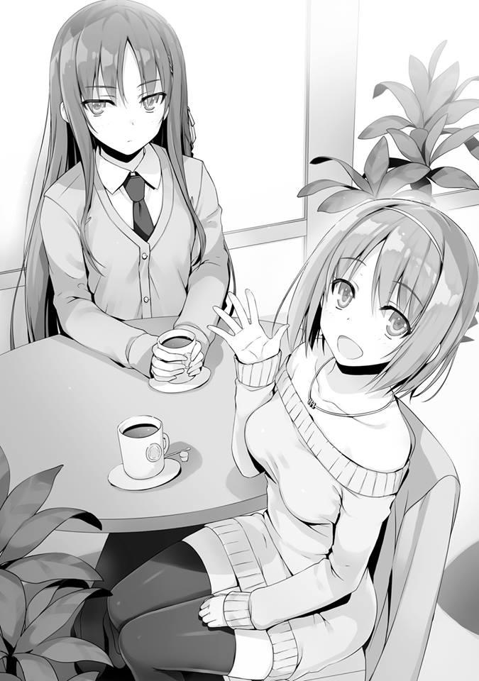
— No hay nadie más aquí.
Respondiendo a eso, Horikita me dice con indiferencia. Pensé que era posible que Hirata también estuviera involucrado, pero ese no es el caso.
— No quiero meter mi nariz en esto pero... ¿cuál de ustedes invitó a la otra?
En respuesta a esa pregunta mía, Kushida sonrió suavemente.
— Yo invité a Kushida-san a salir.
Esa pregunta se resolvió con una respuesta que no creí que fuera posible. No, supongo que esto no es tan extraño. Al contrario, recientemente, Horikita ha intentado resolver proactivamente el problema de su conflicto con Kushida. Con toda probabilidad, esta reunión también puede atribuirse a eso. Si solo estuviera Horikita, Kushida no hablaría de forma reservada, pero en un lugar público como este, no tiene más remedio que ponerse la máscara. Horikita hizo un buen trabajo al citarla aquí.
— Por cierto, Horikita-san, ¿cómo te va con Sudou-kun recientemente?
— ¿Cómo? ¿Qué quieres decir con eso?
— ¿No vas a pasar la Navidad con él? --- es lo que estaba pensando.
— No hay manera de que haga algo así.
Respondió rotundamente de esa manera.
— ¿En serio? ¿No te invitó a salir Sudou-kun?
— ¿No es eso algo irrelevante en este momento?
Kushida había intentado usar mi interrupción para cambiar el flujo de la conversación, pero fue evitado por Horikita.
Horikita, que por naturaleza, ya posee una actitud arrogante, está usando dos puntos: su predominio de haber ganado durante el examen y el hecho de que es un café público, para asediar a la inexpugnable fortaleza que es Kushida.
— Y también, Ayanokouji-kun. ¿Cuánto tiempo más pretendes estar ahí parado? Si tienes algo que decir, ¿te importaría hacerlo?
“En este momento estoy ocupada hablando con Kushida”, es lo que quiere decir.
De hecho, mirándolo desde la perspectiva de Horikita, esta es una ocasión valiosa.
— Lo siento. No esperaba que alguien más estuviera presente. Lo dejaré para la próxima vez.
Decidí irme ya que era claramente innecesario aquí. Sin embargo, como era un momento como este, al contrario que Horikita, Kushida juzgó que mi presencia es bienvenida.
— ¿No está bien, Horikita-san? Si todo es lo mismo, dejemos que Ayanokouji-kun nos acompañe a tomar el té.
Dijo eso y no me dejo irme. Sin embargo, recibiendo la presión silenciosa de Horikita, no tuve las agallas para sentarme despreocupadamente.
— Quizás la próxima vez.
Dije eso y rápidamente intenté alejarme.
— Espera. Te escucharé aquí.
— No, es un asunto que no tiene ninguna relación con esto.
Como no me gusta la idea de que Kushida escuche cosas innecesarias, traté de escapar. Recientemente, le he dicho a varias personas acerca de las circunstancias actuales, pero en lo que respecta a este caso, no hay absolutamente ningún beneficio en que se entere. Ni siquiera eso, no hay más que muchas desventajas.
— ¿Podría ser que es algo que no quieres que ella escuche?
Así me lo señaló la aguda Horikita.
— ¿Es eso cierto, Ayanokouji-kun?
Kushida me mira con ojos tristes. Por supuesto, tenía toda la intención de negarlo de inmediato.
Sin embargo, Horikita regreso para sellar eso.
— Lo siento, pero también es miembro de nuestra clase. Mantener secretos como esos es innecesario.
— No es eso. Esto no tiene nada que ver con la clase. En el mejor de los casos, esto es entre Horikita y yo como individuos.
— Ya veo. Entonces no me importa. Esto tiene algo que ver conmigo,
¿verdad? Dilo aquí.
— Tendré que rechazarlo.
— Entonces, lo que tienes que decir ahora, nunca te escucharé en ningún otro momento.
Al parecer, la resolución de Horikita ha sido firme. Quizás piensa que hablar conmigo sin ocultar nada es el primer paso para mejorar su relación con Kushida.
Como siempre, la expresión de Kushida está llena de amabilidad.
No importa cuántas veces uno se sienta atraído a un pantano y no importa cuántas veces uno se acerque a morir, solo con ver su sonrisa, “tal vez esta vez”
es algo que terminarías pensando.
Tal vez pueda convencerlas inventando una historia apropiada. Pero, dudo que Horikita, que ahora está en guardia, acepte la propuesta que voy a decirle en el futuro.
— Entendido. Entonces hablaré con franqueza. ¿Está bien?
— Sí, dime.
— ¿Tienes alguna intención de unirte al consejo estudiantil?
No sirve llorar sobre lo que ya está hecho. No sé cómo tomará esto Horikita. Se lo dije directamente.
— ..... Lo siento, pero no te entiendo.
Inclinó la cabeza como para preguntar por qué le digo esto.
— ¿No hay una completa falta de contexto? ¿Por qué dijiste eso?
— También quería hablar más sobre eso.
— Muy bien, continúa.
— Umm, ¿está bien, Horikita-san?
La que me interrumpió fue Kushida.
— ¿Bien? ¿Qué quieres decir con eso?
— Se trata del consejo estudiantil, así que creo que el hermano de Horikita-san también podría estar involucrado en este asunto. ¿Está bien si escucho esto?
— Desde la secundaria, has sabido de mi hermano. ¿Qué estás diciendo ahora después de todo este tiempo?
La razón por la que Horikita usó a su hermano como testigo también está relacionada con el hecho de que Kushida es consciente de su relación de hermanos. Mientras no sea algo que no tenga que esconder, lo usará de manera efectiva, es lo que quiere decir, ¿eh?
Esto no es algo que terminará rápidamente. Reafirmé mi resolución y me senté junto a las dos.
— Una persona determinada desea tu entrada en el consejo estudiantil.
— ¿Una persona determinada?
— .....Tu hermano.
Por supuesto, estrictamente hablando, el Horikita mayor no solicitó eso. Solo me dijo que yo era libre de elegir si usar Horikita o no. Sin embargo, para hacer que Horikita actúe, no tengo más remedio que usar a su hermano.
— ¿Por qué mi hermano me dice que me una al consejo estudiantil? Eso suena absurdo.
Viéndose un poco insatisfecha Horikita lo descarta.
— Es la verdad.
— Si realmente fuera la verdad, entonces mi hermano me habría dicho esto directamente. ¿Por qué te lo dijo a ti?
— ¿Crees que ese hermano es del tipo que te lo diga directamente?
— No. En primer lugar, no es alguien que diga cosas como que me una al consejo estudiantil.
En otras palabras, Horikita no creyó mis palabras.
Si su relación como hermanos que se ha congelado hasta este punto, solo lo interpretaría como una mentira. Sin embargo, aun así, la existencia de Kushida es innecesaria si tengo que tratar completamente con la verdad.
Una vez que comience el tercer semestre, se enterará de la caída de Ryuuen y se convencerá de que soy yo quien está detrás de las maniobras secretas. Si eso sucede, será aún más problemático. Dejando de lado que esto ocurrirá inevitablemente, ese momento no necesariamente tiene que ser ahora.
— No tengo ninguna intención de jugar con tus mentiras. ¿Cuál es exactamente tu punto?
— Es la verdad. Si crees que te estoy mintiendo, ¿por qué no lo confirmas directamente tú misma?
Cambié el tema de una mentira que corté con la verdad.
— Estás actuando bastante optimista...
— Optimista o no, estás dudando de mí, ¿verdad? Entonces solo debes contactarlo.
— Entonces tú, umm, ¿sabes el número de contacto de mi hermano?
— No lo sé, pero como eres su hermana, ¿no es obvio que lo sepas?
— No lo sé.
— Si no te importa, ¿deberíamos intentar contactar a Tachibana-senpai?
— Tachibana, ¿ella es la que actúa como secretaria de mi hermano?
— Sí. He hablado con Tachibana-senpai muchas veces antes, sé su número de contacto.
Como se esperaba de Kushida, parece que ha estado haciendo amigos incluso en lugares inesperados.
— Está bien, incluso si realmente lo confirmo, ¿verdad, Ayanokouji-kun? Si resulta ser una mentira, las consecuencias serán fuertes.
— Por favor, haz lo que quieras.
De cualquier manera, si el Horikita mayor se da cuenta de mi estrategia, se adaptará en consecuencia. Todo lo que Horikita intenta confirmar será reescrito con la verdad.
— Gracias, senpai. Sí, discúlpeme.
Terminando de llamar, Kushida comenzó a operar su teléfono. Poco después, el teléfono de Horikita suena brevemente. Aparentemente, ella ha adquirido con éxito el número de contacto del Horikita mayor y se lo ha enviado a Horikita.
— Gracias, Kushida-san.
— No, de nada.
A pesar de que había gente alrededor, tener que mostrar una respuesta tan amistosa a Horikita debe haber sido difícil para ella.
Es impresionante que no haya mostrado nada. Horikita baja su mirada hacia la pantalla de su teléfono. Pensé que llamaría de inmediato, pero sus manos no se movieron y siguió agarrando su teléfono con ambas manos.
— ....... Fuu.
Un suspiro profundo, no, una respiración profunda.
Estar nervioso por llamar a tu familia no es normal.
— Si todo resulta ser una mentira... debes prepararte.
— No hay necesidad de ser precavida.
Esta es la apuesta de Horikita.
No hay forma de que su hermano pueda decirle que se una al consejo estudiantil.
Sin embargo, el hecho de que estoy lleno de confianza le preocupa. Incluso cuando piensa que esto puede ser un engaño, también piensa que puede ser la verdad. Si de alguna manera pudiera confirmar la verdad sin tener que contactar a su hermano, sería ideal para ella, pero esa es una tarea imposible. Horikita, quien no podía confiar en mí, se decidió y presionó el botón de llamada. Por unos segundos presionó el teléfono contra su oreja.
Parece que la persona en el otro extremo de la línea contestó, pero lo que se transmitió fue el hecho de que Horikita se había puesto aún más nerviosa.
— Ahh, umm, soy yo. Es Horikita Suzune.
Horikita habla de manera formal.
— Le pedí a Tachibana-senpai tu número de contacto, umm, y te llamé, nii-san.
Luego, mostrándonos una mirada nerviosa que normalmente no se puede ver en ella (aunque probablemente no quiere que la veamos), hizo la pregunta necesaria.
Entonces, probablemente le dijeron que el asunto de la entrada al consejo estudiantil del que estaba hablando antes es cierto.
— Sí, muchas gracias. Por favor, discúlpame.
Una pausa después de terminar la llamada, luego me miró intensamente.
— Era verdad, ¿no? ¿Por qué tengo que ser fulminado con la mirada?
— ¿Por qué estás actuando como puente? Es que eso me desconcierta.
Es un asunto realmente fácil de entender. Ciertamente, no importa quién lo mire, no es natural.
— Horikita-san, ¿vas a unirte al consejo estudiantil?
— ..... No. No me uniré.
— Espera. Tu hermano te dijo que te unieras, ¿verdad?
— Unirme sería por mi bien, es lo que me dijo. Pero... dudo que unirme al consejo estudiantil sea por mi bien.
Incluso si es el deseo de una existencia absoluta como su hermano, Horikita parece no tener la intención de estar de acuerdo con eso. Aunque insista más, no hay nada que ganar.
Me gustaría dejar de dar información innecesaria a Kushida en este momento.
— Entiendo. Por el momento, por favor, dame otra oportunidad para hablar contigo en el futuro.
— No sé. Creo que solo será una pérdida de tiempo.
— Probablemente.
Parece que Horikita también se ha dado cuenta de que he hecho un movimiento para terminar esto, ya que no hizo nada para detenerme. Lo que es importante en este momento es conectarse con ella de nuevo. Mientras Kushida esté aquí, no puedo seguir hablando.
— Hasta luego, Ayanokouji-kun.
De Kushida, quien me despidió gentilmente, sentí algo inusual.
PARTE 3
Son las 10 de la noche. La Nochebuena pasa momento a momento. Estaba viendo la televisión solo sin salir con mis amigos hombres. Estaban pasando una transmisión en vivo del paisaje urbano de Tokio, mostrando su estado de ánimo navideño. Aunque intenté cambiar los canales, como se esperaba, todos los programas están relacionados con la Navidad. La clasificación de regalos para darle a las chicas (aunque creo que es tarde para eso), así como la clasificación de regalos que harían felices a los chicos (como se esperaba, siento que es tarde para eso). Sin embargo, no había programas en particular que me parecieran interesantes.
Dejé de ver la televisión y encendí mi computadora. Quería ver algo más que información sobre la Navidad, miré a través de los diversos artículos que aparecieron. Accidentes y sucesos. Buenas noticias sobre deportistas extranjeros y demás. A pesar de que es Navidad, un día es solo un día y el flujo del tiempo, sin muchos cambios, sigue adelante.
Sonó el timbre de la habitación. No era desde el vestíbulo sino desde la puerta principal.
— Ya voy.
Mientras me dirigía hacia la entrada y respondía, confirmé la identidad del visitante.
— B-B-B-Buenas noches.
Era la voz de una compañera con la que estoy familiarizado. Desbloqueé la entrada y abrí la puerta.
— ¡Kiyotaka-kun!
— ¿Qué pasa, Airi? Ya es tarde.
Ya eran más de las 10 de la noche, pero a juzgar por su aspecto, parece que acaba de regresar.
— ¿Has estado divirtiéndote hasta ahora? Pero si recuerdo bien, la reunión es mañana, ¿verdad?
— Sí. Es diferente a eso. He estado con Haruka-chan desde la tarde.
— Ya veo.
Si se reunieron alrededor del mediodía, entonces ha pasado aproximadamente medio día.
— ¿Te divertiste?
— Fue un poco agotador, pero me divertí.
— Eso es un alivio.
Ya no tengo que preocuparme por Airi cada vez. Por lo menos, dentro de nuestro grupo, esto continuará. Probablemente pasarán tiempo juntos también mañana.
— Escuché de Haruka-chan que tienes asuntos mañana y no podrás venir...
Ya veo. Eso me recuerda que tuve una charla con Haruka. Cuando me dijo que lo manejaría, podría involucrar saliendo con Airi hoy.
— Tengo una reunión. Lo siento por no poder participar.
— No, eso está perfectamente bien. Umm, la verdad es que planeaba entregarlo mañana, ¡pero!
Dicho esto, Airi extendió ambas manos hacia mí. Me entregó un paquete envuelto en una cinta roja simple pero linda.
— Esto..... puedes tenerlo.
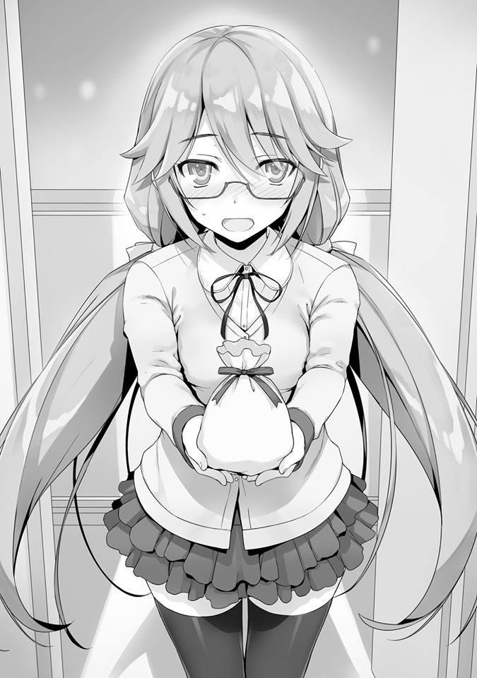
Al parecer, ella ha preparado un regalo de Navidad para mí.
— ¿Está bien? ¿Que lo reciba?
— ¡Sí! También he preparado uno para todos los demás.
Si ese es el caso, también es más fácil para mí aceptarlo. Aceptaré con gratitud.
Tomé el regalo ofrecido en mis manos. En un momento como este, me pregunto qué es lo correcto que tengo que hacer. ¿Debo revisar el contenido de inmediato?
¿O debería hacerlo después de que Airi se haya ido? Mientras lo meditaba, sin saber qué hacer, Airi tímidamente dijo esto.
— No me importa si lo abres, ¿sabes?
Así parece, y entonces decidí obedecerla sin reservas. Cuando abrí la pequeña bolsa, lo que salió de adentro eran guantes de aspecto cálido.
— Kiyotaka-kun, desde hace un tiempo, parecía que querías guantes...
todavía no tienes unos, ¿verdad?
— Estaba pensando en comprarlos, pero al final no lo hice. Gracias, Airi.
— Jejeje...... me alegro.
Había estado postergando la compra de los guantes. Eran simples, guantes azules. Es mucho más fácil de usar que los que tienen dibujos y diseños añadidos sin cuidado.
Intenté ponérmelos de inmediato. Es la primera vez que llevo guantes en mi vida, pero no le dije ese hecho. Encaja en mi mano izquierda, y mi mano derecha también. Y luego traté de hacer piedra, papel, tijera una y otra vez. Airi felizmente me vio hacer eso.
— ¿Cómo están?
— El tamaño es perfecto, y son cálidos.
— Me alegro.
Nunca he hablado de mis gustos antes, pero incluso si tuviera que ir a comprar unos, estos guantes parecen ser los que elegiría.
— Bueno, entonces, umm, siento haber venido tarde. Buenas noches, Kiyotaka-kun.
Tal vez pensó que quedarse demasiado tiempo sería malo, Airi dijo eso y me dio la espalda. En cuanto a mí, no me hubiera importado darle una taza de té, pero es tarde. Además de eso, en la víspera de Navidad el día 24, sería todo un problema para mí invitar a una chica a mi habitación. Cuando vi a Airi, que estaba caminando hacia el ascensor, ya sea porque se dio cuenta de mi mirada o no, miró hacia atrás una vez. Y después de agitar su mano ligeramente hacia mí, entró en el ascensor y regresó al piso superior.
Después de despedirla, volví a mi habitación.
— ..... Me pregunto cuándo debería ofrecerle mi gratitud.
La retribución del Día de San Valentín es el Día Blanco, algo así es natural, pero me pregunto cuándo será la retribución de la Navidad. Lo buscaré más tarde.
LA TORMENTOSA CITA DOBLE
Navidad, ha llegado la mañana del día 25. Hasta ahora, este día no tenía un significado particular, pero hoy ese no es el caso. En toda mi vida por primera vez, pasaré esta Navidad con una chica. Me pregunto qué tipo de día le parecerá a Satou. No sabemos mucho el uno del otro En ese sentido, sería genial si este fuera un buen día.
— ...... De alguna manera, este es un sentimiento misterioso.
Hasta ahora, nunca he participado en algo que pudiera describirse como una cita solo con otra persona. Es por eso que puedo decir que no me siento con los pies en la tierra, o mejor dicho, hay partes que no entiendo.
Precisamente porque soy una persona así que puede decirse que hoy tiene un significado especial. Sin embargo, si es un éxito o un fracaso, es algo que en este momento es incierto.
— Que pase lo que tenga que pasar.
En cualquier caso, aunque lo piense, no hay respuesta evidente. Salí de mi habitación y bajé en ascensor al vestíbulo del dormitorio. Si recuerdo, íbamos a ver una película que comienza a proyectarse a partir de hoy ¿eh?..........
Desafortunadamente, el clima hoy está nublado y parece que gruesas nubes cubrirán el cielo durante todo el día. La hora prometida es a las 11:30. Pero vamos a llegar un poco temprano.
PARTE 1
Al llegar al lugar de la reunión, verifiqué la hora. La hora prometida será en unos 10 minutos. Levanté mi cabeza mientras pensaba eso, y vi a Satou que se dirigía hacia mí. Tal vez me estaba buscando y miraba a su alrededor, aparentemente incómoda. Muy pronto, nuestros ojos se encontraron, y Satou entrecerró los ojos alegremente.
— ¡Buenos días, Ayanokouji-kun!
Diciendo eso, trotó y redujo la distancia entre nosotros. Cuando se detuvo, me llegó un olor que me hizo cosquillas levemente.
— Llegas temprano.
— Tú también, Ayanokouji-kun... podría ser que, ¿te hice esperar mucho?
— Acabo de llegar hace un rato.
Era una línea cliché, pero como de hecho era verdad, se la dije.
— ¿De Verdad?
Estaba subyugado por Satou, quien se acercó a mí con un sentimiento depredador. Todavía quedan algunos minutos para la hora programada, pero no debería haber ningún problema en irnos antes. Pensé que podríamos movernos de inmediato, pero por alguna razón, Satou una vez más comenzó a mirar a su alrededor. Como ella no mostraba signos de moverse, la llamé.
— ¿No nos vamos?
— Cierto, espera un minuto.
Poniendo su mano dentro de la bolsa que llevaba, comenzó a buscar algo.
— ¿Podría ser que lo olvidé........?
En un volumen que fue lo suficientemente alto como para que lo escuchara, ella susurró eso.
— ¿Olvidaste algo?
— Ahh, no. Me preguntaba qué pasó con mi teléfono.
Cuando miré hacia abajo, hacia sus pies tambaleantes, pude ver que sobresalía una caja larga y estrecha cubierta con papel de regalo, pero como sentía que sería de mal gusto mirarla, desvié la mirada.
— No me importa llamarte.
— Sí, gracias. Eres muy amable, Ayanokouji-kun.
El mero hecho de ayudar a alguien a buscar su teléfono, por no mencionar llamarla, no es algo que realmente pueda considerarse amable.
Indudablemente, cualquiera hubiera ofrecido una forma similar de ayuda.
— Si recuerdo, por la mañana.
Como Satou dijo algo así de extraño.
— Ahh, lo encontré, lo encontré.
Escuché las buenas noticias de Satou. Mientras miraba hacia atrás, Satou se rió mientras sostenía su teléfono en sus manos.
— Te he hecho esperar, ¿nos vamos?
Satou se metió el teléfono en el bolsillo, pero luego.
— Buenos días, Ayanokouji-kun.
Inmediatamente después, detrás de mí, alguien me llamó. Mientras miraba hacia atrás, el que estaba allí era Hirata Yousuke. Como siempre, es un joven vigorizante. Buenos días, levanté mi mano ligeramente y le respondí así.
Por cierto, al lado de Hirata estaba la figura de su novia, Karuizawa Kei. Parece que en este día, Navidad, los dos también están saliendo a una cita. Soy consciente de que la relación entre esos dos es falsa, pero tal vez para que su entorno lo perciba como verdadero, están haciendo esto. Si es así, entonces el efecto es instantáneo.
— Buenos días, Karuizawa-san.
Llamándola, Satou corre hacia Karuizawa.
— Buenos días.
Karuizawa también, sonríe naturalmente hacia Satou e inicia una conversación.
— Esta es una combinación bastante inusual.
Al vernos a mí y a Satou juntos, no podía evitarse que Hirata dijera algo así.
— ¿También están ustedes en una cita?
Incluso si es solo como una formalidad, preguntar eso sería bueno.
— Sí. Yo también, “solo por si acaso” no hice ningún plan previo para Navidad. Afortunadamente, nadie me llamó.
Anticipándose a cualquier y cada una de las situaciones, parece haber dejado vacante el día por el bien de su falsa novia Karuizawa. Hirata siempre se coloca en segundo lugar y siempre le da prioridad a las acciones que son por el bien de los que lo rodean. Incluso si pensara emular eso, no es algo que se haga fácilmente.
— Parece que alguien de tu grupo de amigos debería haberte llamado. ¿No hay noticias?
No solo los compañeros de clase, no sería extraño, incluso si sus superiores del club de fútbol lo llamaran.
— No sé. Creo que solo fueron considerados.
Respondiendo así, Hirata miró a Karuizawa con una mirada cálida. Ya veo. Por su entorno, Hirata y Karuizawa son vistos como la pareja ideal. Así que en lo que respecta a alguien como él con una novia, justo en la cúspide de la Navidad, no hicieron nada tan grosero como llamarlo. Esto es una prueba de que Hirata y Karuizawa funcionan correctamente como pareja. Sin embargo, mientras su relación falsa permanezca, será difícil para él tener intimidad con otra chica.
Es algo lamentable que no pueda cerrar la distancia con el sexo opuesto. Incluso si encuentra a alguien en quien esté interesado, ya que es Hirata, no es el tipo que simplemente termine con la solicitud de Karuizawa.
Precisamente porque Karuizawa también podía encomendársele así, le resultó fácil elegir a Hirata como su destino parasitario.
— Desde el principio, Karuizawa-san es una persona que siempre ha sido franca con las chicas de la clase, pero nunca supe que eras tan cercana de Satou-san.
Hirata susurra mientras las mira a las dos con una mirada familiar, como si estuviera mirando a una hermana menor o una hija.
— Tenías la imagen de ellas juntas divirtiéndose bastante durante las vacaciones. ¿No es así?
— Por lo menos, divirtiéndose juntas en las vacaciones, no creí que fueran tan cercanas.
— ¿Es así?
— ¿Por qué piensas que esto no es raro?
— En realidad no, solo tenía un sentimiento.
En cualquier caso, no tiene sentido interferir con Hirata y Karuizawa más que esto. Revisé la hora en mi teléfono. Ya son las 11:40. La hora de la proyección se acerca rápidamente. Ya es hora de que tome a Satou y me dirija al cine.
Pensé eso, pero Satou y Karuizawa parecían estar charlando alegremente. Sin embargo, como estaban conversando en voz baja, no podía escuchar el contenido de su conversación. Incluso si espero, su conversación no muestra ningún signo de llegar a su fin. Como no sabía qué hacer, mis ojos se encontraron con los de Hirata.
Con solo eso, parece que entendió lo que estaba pensando.
Hirata, quien llegó a la conclusión de que quedarse más solo los llevaría a interponerse en nuestro camino, llamó a Karuizawa.
— ¿No es malo si los seguimos molestando, Karuizawa-san? Vamos, ¿sí?
Interrumpió la conversación de esas dos con su tono habitual y tranquilo. Como si regresaran a la realidad, Karuizawa y Satou se acercaron a nosotros.
— Por cierto, ¿desde cuándo los dos han estado saliendo?
Esa pregunta de repente llegó de Karuizawa. No, quizás incluso si esto fuera lo primero que saliera de su boca no sería extraño, es una pregunta natural.
— Ehh, no es como si estuviéramos saliendo o algo así, ¿verdad?
Ayanokouji-kun.
Ante la mirada de pánico de Satou, respondí asintiendo levemente. Sin embargo, Karuizawa dirigió una mirada descaradamente sospechosa hacia nosotros.
— ¿Ehh? Quiero decir, ustedes están teniendo una cita en Navidad, no importa cómo lo vean, obviamente están saliendo, Hirata-kun piensa lo mismo, ¿no?
— Cierto. Probablemente no es el caso si los dos lo niegan, pero otros pueden pensar que ustedes están saliendo.
— Eso, umm... Solo invité a Ayanokouji-kun a divertirnos...
Satou tímidamente centró su mirada una vez más en mí.
— A-Ayanokouji-kun, ¿está bien? Pasar la Navidad divirtiéndote conmigo.
— Si no quisiera, lo habría rechazado.
— .... Jejeje.
Satou se rasca, pareciendo avergonzada.
— Heh... no pareces tan insatisfecho con esto. ¿Entonces esto significa que Ayanokouji-kun está interesado en Satou-san?
— D-Detente, Karuizawa-sa~n.
Satou, mientras se sonrojaba, abanicó su cara con sus manos. Pero Karuizawa continuó.
— Si es así, ¿por qué no empiezan a salir ahora? Entonces se convertirá en una cita entre novios.
— Karuizawa-san, realmente no creo que sea nuestro lugar decirles eso.
Al verme en problemas, Hirata detiene tranquilamente a Karuizawa.
— Lo siento, lo siento. Podría haberme metido demasiado en esto. Lo siento, Satou-san.
— No, realmente no me importa.
— Oye, Yousuke-kun, tengo curiosidad por estos dos, así que ¿no sería bueno tener una cita doble?
Por alguna razón, Karuizawa dijo algo así.
— ¿Cita doble?
Hirata y yo compartimos una mirada ante la inesperada propuesta.
— Así es, Hirata-kun y yo, y Satou-san y Ayanokouji-kun todos tendremos una cita. ¿No suena interesante? Pensé que no sería tan malo para nosotros cuatro tener una cita así una vez en cuando.
Si hubiéramos acordado esto de antemano, sería un asunto diferente, pero en este día, en esta etapa, proponer una cita doble inevitablemente me dejaría desconcertado. Incluso el plan para el día que había programado cambiará de forma importante, si es que no se derrumba por completo. No es tan simple mantener la calma.
Por la expresión de Hirata, también pude ver que compartía mis preocupaciones.
Por otro lado, hacia esa repentina propuesta, Satou no mostró ningún signo de estar sorprendida.
— ¿Pero eso no será difícil? Creo que ustedes dos también podrían tener planes diferentes.
Hirata le habló gentilmente de ese hecho, pero no pareció tener ningún efecto en Karuizawa.
— Satou-san también me dijo que parecía interesante, ¿verdad?
— Sí, parece interesante.
Al parecer las dos ya han tenido una larga y prolongada charla sobre la cita doble. Pero independientemente de quien propuso la idea, es una ligeramente agresiva.
— ¿Qué tal si lo dejamos para la próxima vez? Creo que sería mejor pasar el día por separado. Si vamos a tener una cita doble, sería mejor tener una después de que nos hayamos preparado adecuadamente. De esa manera no debería haber problemas.
Una preocupación natural, o más como si el miedo viniera de Hirata.
— Eso podría ser cierto, pero ¿no parece interesante el hecho de que no sepamos qué podría pasar?
Karuizawa ya parece haber decidido la cita doble ya que responde así tensamente. A diferencia de los dos que nos sentimos incómodos por la falta de
planificación de todo esto, Karuizawa ya parece estar encontrando entusiasmo en los desarrollos imprevistos que aún están por venir. ¿Tal vez sea porque su cita con Hirata es como una rutina para ella y está buscando estimulación en esto? Creo que podría haber sido capaz de aceptarlo honestamente si este hubiera sido un incidente completamente ajeno a mí, pero ahora no sé. Si yo, quien lo sabe todo sobre Karuizawa, tomara medidas junto a ella, si podemos disfrutar de la situación incierta que nos espera, es algo que sigue siendo cuestionable.
Pero aun así, aparte de eso, todavía no puedo pensar en una razón por la que ella propondría una cita doble.
— Para que conste, es navidad.
Hirata, que me miraba como si fuera un problema, tenía una expresión preocupada en su rostro. Mirándolo, Karuizawa le pregunta directamente si es un “Sí” o un “No”.
— ¿Hirata-kun está en contra?
— Estoy bien con eso, ¿pero no depende de Satou-san y Ayanokouji-kun?
Sin saber cuáles eran nuestras opiniones al respecto, Hirata no tenía más remedio que responder así. Satou dirigió su mirada hacia Karuizawa, quien obtuvo el permiso de Hirata, como si preguntara si eso había sido demasiado problema. Me pregunto cómo Satou, quien es la más importante aquí, está tomando este asunto de la cita doble.
— Puede que sea algo repentino, pero me gustaría probar... algo como eso.
De verdad, fue un desarrollo repentino. Pero Satou aceptó esta situación y expresó su consentimiento.
Quizás Satou simplemente no pudo rechazar una propuesta de Karuizawa, que se encuentra en la parte superior de la casta de la escuela de la Clase D. O eso creía, pero ese no parece ser el caso.
— ¿Qué te parece, Ayanokouji-kun?
De Hirata a Karuizawa, de Karuizawa a Satou y ahora de Satou a mí. El testigo ha sido pasado. No lo puedo dejarlo caer descuidadamente. Necesito aceptarlo con cautela.
— Está bien.....
No respondas de inmediato, piensa. Ya tengo suficientes problemas para salir solo con una chica, una cita doble es otra cosa. No es mucho, pero para un principiante sin experiencia, este es un evento con demasiada responsabilidad.
Sin embargo, decirles simplemente que prefiero no tener una cita doble, así que por favor paren, es un obstáculo demasiado alto para mí.
Cuando todos los que nos rodean están en perfecta sincronización, plantear una objeción es la tarea más difícil. Si la que hoy ocupa el papel principal, Satou, puede aceptarlo fácilmente, tampoco voy a rechazarlo.
Supongo que también está de acuerdo con lo que dice Karuizawa: “es interesante porque no sé qué va a pasar”. Es solo que, todavía hay un problema.
En primer lugar, íbamos a ver una película ahora, así que me pregunto si de repente será posible o no una cita doble. Esa es una pregunta obvia. Incluso si nos movemos para conseguir los asientos a toda prisa, quedar juntos ahora sería casi imposible. O podría ser que esto también sea una de esas cosas
“interesantes”.
Da la impresión de que nos hemos desviado del objetivo original de la “cita”, pero mirándolo desde una perspectiva diferente, no se puede decir que una cita doble sea algo malo. Si estoy solo con Satou y absorto en la conversación, puedo predecir que habrá momentos en que fluirá una atmósfera incómoda.
Pero si Hirata y Karuizawa también están allí, podrán conectar adecuadamente los temas de discusión bastante bien.
Y además, Haruka dijo que arrastraría a Airi y daría un paseo para asegurarse de que no nos encontráramos, pero aun así, pueden ocurrir incidentes inesperados.
En tal ocasión, en lugar de verme divertirme a solas con Satou, naturalmente se vería mejor si ella nos viera a los cuatro juntos. De todos modos, si esta atmósfera no me deja negarme, debería pensar así.
— Si los tres están de acuerdo con eso, no tengo ninguna objeción en particular.
No queriendo hacerlos esperar, ya que respondí con un “Sí”, Karuizawa inmediatamente se movió.
— Entonces está decidido. ¿A dónde se dirigen ustedes dos ahora?
Al haber confirmado fácilmente la cita, Karuizawa comienza a empujarnos con fuerza a medida que avanza. Ante eso, Satou parecía estar algo calmada, emitiendo una sensación relajada.
¿Podría ser que Satou también esté nerviosa y ansiosa por estar solo nosotros dos? Esperemos que este evento que apareció de repente dé frutos.
— Umm, ¿sabes?, Ayanokouji-kun y yo planeamos ver una película en este momento.
Satou les dijo el plan de nuestra cita mientras usaba su teléfono y tenía una reunión organizativa con Karuizawa.
— ¿La película que comienza a proyectarse hoy? Si es así, tenemos mucha suerte. También estábamos planeando ir a verla. Uwa, además de eso, incluso la hora de la proyección es la misma. ¡Increíble, increíble!
Ante esta coincidencia, las dos parecían emocionadas.
Sin embargo, la expresión de Satou parece ligeramente rígida o algo incómoda.
— Que coincidencia, ¿verdad, Ayanokouji-kun?
— Eso parece.
Ver la misma película al mismo tiempo también parecía haber sido una sorpresa para Hirata. A pesar de que es el primer día de proyección, traslaparse brillantemente en esta medida es realmente afortunado.
— Incluso si vamos a verla juntos, ya que es una película, ¿qué hacemos con los asientos? No podemos cambiarlos, ¿verdad?
Les pregunté a los dos dónde estaban sus asientos. Veamos si las coincidencias siguen acumulándose o no. Karuizawa revisa su teléfono para confirmar.
— ¿Dónde están, Karuizawa-san?
Satou mira el teléfono de Karuizawa y revisa sus asientos.
— Nuestros asientos están separados, eh. Bueno, supongo que no se puede evitar---
Karuizawa le muestra los asientos a Hirata. Nuestras posiciones eran completamente diferentes. Parece que las coincidencias no llegan tan lejos, la posición de nuestros asientos es completamente separada.
— Entonces, vamos ya, ¡Ayanokouji-kun!
Satou parecía modesta y nerviosa cuando nos encontramos, pero después de haberse reunido con Karuizawa y Hirata, parece haber vuelto a su actitud habitual mientras se acerca a mí y comienza a caminar.
— .....Demasiado cerca.
Susurré eso sin pensar en una voz demasiado baja para que alguien la oyera.
Habiéndose convertido en una cita doble, los cuatro caminamos hacia el cine.
Los cuatro, alineados lado a lado, caminamos hacia el interior del centro comercial. Desde el borde sería yo, luego Satou, y junto a ella está Karuizawa, y el que está más lejos en el otro extremo es Hirata.
— Heh... ustedes dos se ven bastante bien, ¿verdad?
Mirándonos a los dos caminando íntimamente, Karuizawa susurró eso.
— ¿E-en serio?
— No importa cómo lo veas, ustedes se ven como una pareja que pasa cariñosamente la Navidad, ¿ese tipo de sentimiento?
— Jejeje. ¿No es vergonzoso, Ayanokouji-kun? Están diciendo que nos vemos como una pareja.
— .....Supongo que sí.
Supongo que no puedo negar que esta es una situación que hace que ese parezca ser el caso. Mientras tengamos una cita en Navidad, no se puede evitar que nos digan más o menos eso.
— Pero aun así, ¿en serio ustedes dos no están saliendo? ¿Podría ser verdad que ya están saliendo~?
— N-N-No. No, en absoluto. ¡Todavía no estamos en ese tipo de relación!
— ¿En serio? Si estás ocultando algo, será mejor que me lo digas ahora, ¿de acuerdo?
En lugar de preguntar por curiosidad, se burla de nosotros. Es solo que, no pude ver ninguna señal de que a Satou le disgustara desde el fondo de su corazón o que le molestara. Si tuviera que decirlo, incluso ella parece estar feliz de que Karuizawa la molestara de esa manera. Eso parece extraño, o más bien, es un poco incomprensible y terminé confundido por eso.
Sin embargo, al ponerme en su lugar, logré llegar a un cierto entendimiento. Por ejemplo, incluso si, por algún accidente, terminara yendo a una cita con una chica tipo ídol de esta escuela, ¿si un amigo me viera y me preguntara si ella es mi novia? Si me molestaran así, al mismo tiempo que me sentiría avergonzado, también sentiría algo parecido a un complejo de superioridad. Es solo que, en este caso, existe el orgullo de tener el estatus claro de “ídol de la escuela” y si Satou siente algo así hacia mí o no, es muy cuestionable.
— Hablando de eso, Satou-san, todavía no tienes novio, ¿verdad?
— N-no.
Los ataques persistentes de Karuizawa no terminaban, sino que continuaban llegando uno tras otro. Escuchaba a medias lo que decía mientras pensaba en cómo superar la inesperada cita doble.
Y por un rato más, mientras respondía las preguntas de Karuizawa, el tiempo continuaba...
— Disfrutaremos de esto nosotros solos, así que ustedes dos, ¿no nos hagan caso, bien?
Finalmente, diciendo eso, Karuizawa se volvió hacia Hirata. Entonces, después de decir todo lo que quería decir, se fue. El objetivo de Karuizawa aquí es relativamente predecible, pero aun así, todavía hay muchos aspectos que no entiendo.
En cualquier caso, en la cita doble, actuaremos como un grupo, pero básicamente significa que todavía tenemos que mantener una conversación entre nosotros. No entendí esa regla en particular muy bien, pero digamos que no me importa.
El problema comienza aquí. No sé de qué hablar con Satou o cuál es la respuesta correcta a esto. Incluso como compañero de clase, no sé mucho acerca de Satou. Durante el tiempo inexistente que tuve, hice un movimiento para obtener más información sobre ella, pero apenas recibí alguna pista útil de ello. Desde el incidente en la azotea hasta las vacaciones de invierno, tampoco tuve oportunidad de hacer contacto con Satou. Si hubiera tenido más tiempo hasta la cita, podría haber mejorado ligeramente la situación. Sin embargo, Satou también debería estar en la misma situación de torpeza. Ella también debe estar nerviosa. Por supuesto, hasta el día anterior, pensé más o menos en varias preguntas improvisadas.
¿Qué alimentos te gustan? ¿Cuáles son tus aficiones? Esas cosas cliché. Pero cuando realmente se llegó el momento, son bastante difíciles de preguntar.
Uwa, este tipo está haciendo exactamente lo que dice el manual en internet, es que no quiero que piense eso de mí.
Mientras reflexionaba sobre el tema, tal vez se dio cuenta de mi silencio, pero por un momento Karuizawa me miró. Y nuestras miradas se encontraron por poco menos de un segundo.
“Estás bastante callado. ¿No es difícil seguir desempeñando el papel silencioso?”
“No estoy actuando ni nada. No estoy acostumbrado a las citas, simplemente no entiendo el estilo de vida de aquellos con temas para discutir”.
Esa interacción fue hecha entre nosotros solo con nuestras miradas.
Naturalmente, me imaginaba así las palabras de Karuizawa. Y cuando parecía que permanecería por siempre sin decir una palabra........
“Satou-san, ¿no es solo que Ayanokouji-kun no sabe de qué hablar?”
Para romper el silencio, una flecha lanzada por Karuizawa voló hacia nosotros.
Parece que casi todo lo que imaginaba antes era exacto. Ante eso, Satou mostró una expresión relajada cuando comenzó la conversación.
— Oye, Ayanokouji-kun, ¿te gustan las ídols?
Parece que Satou también había pensado en varios temas, porque ella me preguntó algo como eso. Lanzó una bola alta, voló hacia una posición fácil de atrapar.
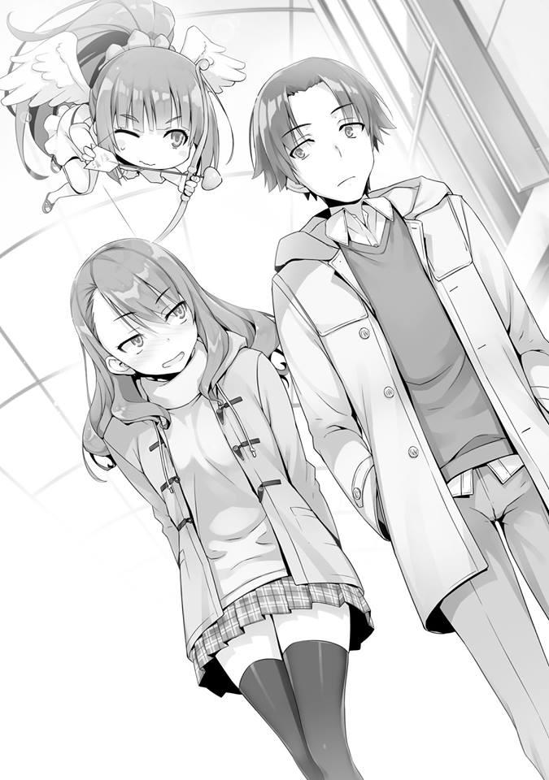
— Ídols, honestamente, no estoy muy familiarizado con ello... No tengo ninguno que me guste o me disguste particularmente. ¿Te gustan, Satou?
— A mí me gustan bastante, a mí también me gustan las ídols geniales, pero creo que lo más atractivo ahora son esos grupos de ídols de chicas. ¿No has oído hablar de ellos? Hay unos 50.
— Sí, los veo en la televisión todos los días. El grupo con la canción llamativa y los bailes, ¿no?
— Sí, sí. Realmente me gustan, ¿sabes? También tienen muchas canciones buenas.
— Hmm.......
Me sentí abrumado por Satou, que estaba atacando con fuerza.
— Puedo recomendar especialmente su canción de debut, así que intenta escucharla. La próxima vez, te prestaré el CD.
— Gracias.
Al responder con eso, me doy cuenta de que he cometido un error en el transcurso de nuestra conversación. Nuestra conversación naturalmente se había estancado. Si solo respondo con un “¡Ajá!”, eso equivale a que ella me lance una bola. La bola que recibo, naturalmente, debe ser devuelta por nadie más que yo.
— ¿Qué tipo de canciones escuchas usualmente?
Una vez más, independientemente de si ella se da cuenta de mi angustia o no, Satou una vez más me lanzó la bola. Ante esta bola que se conoce como el tema de discusión, me esforzaré por devolvérsela correctamente esta vez.
Entonces, ¿qué tipo de canciones escucho habitualmente, eh? Es sorprendentemente un simple y fácil de responder tema. O eso pensaba yo. Sin embargo, la canción que me vino a la mente se atascó en mi garganta.
Si honestamente me abriera a mis intereses, ¿qué pasaría? Si saco a Beethoven y Mozart aquí, entonces definitivamente es una salida. Pero aun así, responder con música curativa, como el sonido de las gotas de lluvia y el canto de los pájaros, también sería un error.
En otras palabras, cuáles son mis intereses, es algo a ignorar con respecto a esta pregunta. La respuesta que espera probablemente sea la de un famoso músico o grupo de ídols, básicamente una canción moderna. Necesito responder con algo hacia la mirada expectante de Satou.
— ....... Este año, hubo una película popular, ¿no es así? Un anime.
— Ah, sí, sí. ¿Esa película romántica, verdad? Me conmovió mucho---
— El grupo que interpretó su tema principal, algo así, he estado escuchando algo así recientemente.
Aunque no recuerdo bien el nombre del grupo, escuché esa canción innumerables veces. Usando eso como una pista, continué nuestra conversación.
— ¡Ahh---! ¡Lo entiendo! ¡Realmente lo entiendo! ¡También me gusta mucho!
Parece que logré devolver correctamente la bola, ya que Satou la atrapó celebrándolo. Es solo que, a medida que este tema de discusión se profundiza, comienza a desmoronarse.
Necesito sobreponerme a eso.
— Estás muy bien informada.
— ¿En serio? Creo que es bastante normal.
Parece que las criaturas conocidas como chicas, cuando se trata de cuestiones como esta, tienen mucho más conocimiento de lo que esperaba. Una vez escuché que la distribución de roles entre los géneros masculino y femenino que había existido desde la era primitiva había penetrado fuertemente en la era moderna, este podría ser un ejemplo de eso.
Parece que las mujeres realmente han pulido sus habilidades de comunicación.
— No estás participando en ninguna actividad del club en este momento,
¿verdad? ¿Eras parte del club de atletismo antes?
El tema de discusión cambió a los clubes. Por qué terminó así, es un asunto bastante fácil de entender. Es probable que esté relacionado con el relevo en el que participé durante el festival deportivo.
— No, nunca he sido parte de ningún club antes.
— ¿En serio? Aunque ese sea el caso, pensar que eres tan rápido, ¿no es asombroso? Quiero decir, ¡fuiste incluso más rápido que el presidente del consejo estudiantil!
Cuando le dije que siempre he sido parte del club de ir a casa, por alguna razón, Satou se emocionó quedando impresionada.
Quizás el júbilo de Satou fue demasiado evidente, Karuizawa nos miró de reojo e interrumpió con una sola frase.
— ¿No es solo que el presidente del consejo estudiantil fue demasiado lento?
Nos hace pensar que es realmente rápido y la verdad es que solo fue una batalla entre dos fanáticos.
— Realmente no creo que ese sea el caso, Karuizawa-san. Ambos corrían extremadamente rápido.
— Hmm, es difícil de creerlo de repente. Ayanokouji-kun parece que también sería débil en peleando. Y además, parece una persona fría, o más bien, incluso si una persona apreciada para él se derrumba por un resfriado, no parece ser del tipo que les haga una visita~.
Trayendo el tema de la pelea que no tenía nada que ver, puedo sentir el sarcasmo. Y me di cuenta de que la causa principal del ataque de hoy estaba allí.
Karuizawa, cuyo cuerpo fue repetidamente congelado en esa azotea por las acciones de Ryuuen y puede haberse enfermado parece estar guardando rencor contra mí por no haber estado preocupado por ella.
Podría ser que la cita doble que también propuso es su intento de sabotear mis acciones y distraerme.
— Sin embargo, no lo veo así. Creo que Ayanokouji-kun es definitivamente una persona amable.
— ¿Ehh---? ¿De verdad---?
— También creo que Ayanokouji-kun es una persona amable.
— Uwa, es casi como si yo fuera la villana aquí.
A pesar de que ella dice eso de manera insatisfactoria, Karuizawa siempre se destacó claramente como el centro de la conversación en todo momento. Pude
ver que ella estaba siguiendo la conversación por Satou mientras también me acosaba.
Y a partir de la situación, entendí que su objetivo era convertirnos a Satou y a mí en pareja.
— U-Umm, ¿sabes? Umm, tú......
Antes de que me diera cuenta, Satou había perdido su sonrisa. Pensé que se había desmotivado por la falta de plática que venía de mí, pero ese no parece ser el caso. Se sentía más como si estuviera tratando de decir algo, pero no podía expresarlo con palabras. Permaneciendo en silencio por un tiempo, observé la actitud de Satou pero ninguna palabra salió de ella.
— Umm, oye. ¿Hay algo que quieras preguntarme?
Diciendo eso, me entregó las riendas de la conversación. De hecho, es cierto que desde hace un tiempo, el tema de la conversación giró en torno a mí.
Probablemente debería comenzar una conversación en torno a Satou.
— Si te inscribes en esta escuela, no puedes contactar con el exterior,
¿verdad? ¿Alguna vez te molestó eso?
Mientras intentaba hacer una pregunta inusual como esa, Satou comenzó a pensar seriamente en ello.
— Es verdad...... Siento que hubo varios problemas de este tipo...
Después de pensar, Satou expresó lo que podría considerarse un problema particular entre muchos.
— Durante la secundaria, compré un gato, ¿sabes? Ahora creo que mi madre se está ocupando de él por mí, no poder ver a mi gato podría ser lo más difícil para mí.
Aumentar la distancia con la familia, podría ser una respuesta general a eso. No poder ver una mascota que amas puede ser mentalmente casi equivalente a que a un padre no se le permita ver a su hijo.
— No poder verlo durante 3 años sin duda suena difícil.
— ¿Ayanokouji-kun también compró una mascota o algo así?
— Ahh, quería comprar un perro y estaba bastante interesado en hacerlo, pero mis padres lo prohibieron.
Era cierto que me interesaba hacerlo, así que simplemente respondí así.
— Ya veo. Hablando de perros, el otro día vi a un cachorrito en el campus.
Satou dijo eso.
— Ehh, ¿en serio?
Karuizawa, quien dijo que ella y Hirata se estarían divirtiendo, que no les hiciéramos caso, por alguna razón, nuevamente se unió a la conversación con Satou. Parece que ha estado escuchando atentamente nuestra conversación.
— Sí, además de eso, parecía que era la mascota de alguien. Era realmente lindo---
— Como los estudiantes no pueden comprar mascotas, probablemente pertenecía a un adulto, eso supongo. Uno de los empleados o un maestro.
Ya que era posible que no estuviera vagando por el campus solo, Hirata dijo eso.
De hecho, si lo piensas bien, tiene un punto.
— Una mascota suena genial. Sería lo mejor de todo si pudiéramos tener una en los dormitorios.
— También estoy de acuerdo. Sería genial si tuviéramos una tienda de mascotas aquí---
— Más bien, ¿por qué no podemos tener una?
— Sí, eso es cierto---. A pesar de que venden varias cosas aquí, no incluir mascotas es de alguna manera inaceptable, ¿verdad?
Las dos chicas mostraron entusiasmo al hablar de mascotas, mientras que los dos chicos fueron hechos a un lado.
De hecho, las mascotas están bien, pero mantener una en los dormitorios podría causar varios problemas. Si la premisa es permitir que cada persona compre una mascota, existe la posibilidad de que cientos de animales se queden en los dormitorios. Y al dejarlos por medio día al ir a la escuela, surgirían numerosos
problemas en todas esas habitaciones. Inevitablemente, uno no puede dejar de aceptar el hecho de que las mascotas no se pueden quedar, pero no parece que lleguen a esa idea. Razones lógicas, esas cosas ni siquiera entran en sus mentes. Lindo o no lindo. Ya sea que quieran mantenerlas o no, esa es la única conclusión a la que llegó su conversación.
— ....... Que pensamiento tan insignificante.
Estoy pensando en algo terriblemente aburrido. Incluso soy muy consciente de ese hecho. En este momento, lo que se necesita aquí no es ese tipo de conversación realista. Uno no puede comprar una mascota. Incluso si me quejara de ese hecho, solo terminaría echando a perder esto.
— Me gustaría comprar un conejo. Criarlos es bastante fácil y parecen bastante dóciles.
Siguiendo honestamente el flujo de la conversación de las chicas, Hirata dijo eso.
Y ambas chicas estuvieron de acuerdo con una sonrisa. Estoy seguro de que un hombre que es capaz de mantener una conversación como esta es popular.
Antes de darme cuenta, el tema de las mascotas terminó y llegó el momento de buscar un nuevo tema de discusión.
Mientras pensaba en esto y en lo que me preguntaba qué hacer, mi mirada se encontró con la de Satou.
— Oye, Ayanokouji-kun. Umm, ¿sabes?.......
Satou había recuperado su actitud habitual, pero parece que ahora, de repente, las palabras se atascaron nuevamente en ella.
Parece que cada vez que Satou tiene algo que realmente quiere preguntar, su nerviosismo alcanza su punto máximo. Desconozco si esto es algo que solo ocurre cuando el sexo opuesto está involucrado, o si así es como suele actuar.
Sin embargo, pareció reafirmar su determinación y pronunciar sus palabras...
pero luego volvió a cerrar la boca.
Probablemente sea algo más difícil de preguntar que su pregunta anterior.
— ¿Qué tipo de chica le gusta a Ayanokouji-kun?
Antes de que salieran las palabras de Satou, Karuizawa a su lado me hizo esa pregunta.
— Me gustaría escuchar sobre eso también.
Satou también estuvo de acuerdo, como si lo llevara a cuestas. Satou no se quejó de que hayan interrumpido su pregunta. Me pregunto si por casualidad ella iba a hacerme la misma pregunta.
Podría ser que esta cita doble no sea una mera coincidencia, está empezando a parecer así. Lo percibí vagamente desde el principio, pero creo que debería interpretarlo como si me hubieran tendido una trampa. En cualquier caso, tengo que responder a la pregunta. Mi tipo de chica, ¿eh?
— ........ Es algo difícil de responder.
Satou, que me mira con ojos brillantes y Karuizawa, que me está mirando. Y
Hirata, que me mira, parece entretenido. Esas eran las miradas de esos tres individuos.
— El tipo genki...... ¿alguien así? (NT: genki.- personajes femeninos que desbordan vitalidad y están constantemente activas) Esa fue una palabra que me costó bastante decirla seriamente, pero ahora que la escucho como mi preferencia, suena dudoso. Ya que hay muchas chicas que podrían considerarse del tipo genki, elegí esa palabra con la intención de no causar ningún daño, pero no fue como pensé.
— Sorprendente. No pensé que a Ayanokouji-kun le gustaría ese tipo de chica.
¿Podría ser que Satou y Karuizawa no sean chicas genki? Puedo decir con seguridad que no son del tipo Horikita, y que Kushida e Ichinose también son del tipo genki... ¿verdad?
— ¿Podría ser que Ayanokouji-kun piense que solo hay dos tipos de chicas, el tipo genki y el tipo tranquilo?
No puede ser, una declaración tan aguda vino de Karuizawa.
— ¿Es eso cierto?
— No, eso no es cierto. Soy un tipo relativamente tranquilo, por lo contrario, pensé que apreciaría a una chica que me ayudara mejor. Si me he equivocado al expresarlo con palabras, lo corregiré.
Respondí así, pero tengo la sensación de que no fue transmitido adecuadamente a Satou y los demás.
— Entonces, ¿qué hay entre tú y Horikita-san?
De nuevo, de repente, surgió una pregunta de Karuizawa. Eso no está relacionado, ¿verdad? Quería decir eso, pero la expresión de Satou había cambiado claramente.
Esta también es seguramente una pregunta que Satou había querido hacer. Y
por Satou, a quien le resulta difícil preguntar, debo entender que Karuizawa me pregunta esto en su lugar.
No hay muchos estudiantes en nuestra clase que entiendan correctamente la relación entre Horikita y yo, pero entre los estudiantes que la entienden correctamente está Karuizawa. El hecho mismo de que surgiera esta pregunta es raro. No hay duda de que esto es por el bien de Satou. Si Satou se toma en serio el tener afecto hacia mí como hombre, entonces se lo habría dicho a Karuizawa y puedo ver el camino que llevó a la cita doble. En otras palabras, para este propósito, ella le pidió a Karuizawa que fuera su tirador de respaldo.
Probablemente están intentando llenar el foso exterior sondeando varias cosas.
Sentí que Karuizawa, aunque invisible, me está apuntando a algún lugar. No sé a quién se le ocurrió la cita doble que tenemos ahora, pero puedo suponer que la persona que viene con los detalles del plan es Karuizawa.
— No pasa nada en absoluto con Horikita. De hecho, incluso en Navidad nos ocupamos de nuestros propios asuntos.
El hecho de que Horikita no esté aquí ahora mismo está por encima de todo, es prueba de ello. Traté de hacerlas entender así.
— Pero, solo porque eso sea verdad no significa que realmente no haya nada entre ustedes dos, ¿verdad?
Eso debería haber sido suficiente, pero Karuizawa continuó acosándome.
— También existe un patrón en el que Ayanokouji-kun está interesado en Horikita-san, pero ella no te hace caso y quieres invitarla a salir, pero no tienes el coraje para hacerlo.
— .......Es cierto.
Si uno lo considera seriamente, eso también sería una posibilidad.
— ¿E-entonces? ¿Fue molesto que te invitara a salir?
Ansiosamente, Satou me miró.
— Te lo dije antes, si realmente hubiera pensado que es una molestia, lo habría rechazado.
— Entiendo. ¡Eso es un alivio......!
— Pero también está esto, ¿no? Ya que la chica que te gusta no te hace caso, hay chicos a quienes les gusta mantener un seguro. Una chica que mantienen en reserva en caso de que no puedan salir con la que realmente les gusta, algo así.
Una pregunta rencorosa como esa me fue lanzada por Karuizawa. ¿Realmente ve a una persona capaz de hacer algo tan hábil aquí? Incluso si le pregunto eso, se acabará si ella responde que sí. Podría ser que Karuizawa me esté acosando así por el bien de Satou. Es como sumergirse en el río Nilo con un cocodrilo nadando en él.
— ¿Realmente me veo como alguien que es capaz de hacer algo tan hábil?
— ¿Claro que sí?
— .......... Oye.
A pesar de que lo sabía, traté de bucear de todas formas y me dieron un brillante golpe por ello.
— Tu verdadero amor es Horikita-san, pero mantienes a Satou-san como un seguro y juegas con ella, esa posibilidad también está ahí, ¿verdad?
Ella ya no está tratando de elevar a Satou, parece que Karuizawa está tratando de hacerme caer. Podría ser que no esté tratando de hacer que las cosas
funcionen entre Satou y yo, sino más bien tratando de demostrarle a Satou que una persona como yo no sería adecuada para ella.
— No creo que Ayanokouji-kun sea el tipo de persona que haría algo así.
Ante esa dura declaración de Karuizawa, Satou se opone.
— ¿Cierto, Ayanokouji-kun?
— No soy tan experto.
Logré escapar del feroz ataque de Karuizawa. Justo cuando estaba pensando eso, llegó el tercer ataque.
— Pero sabes, Ayanokouji-kun se lleva bien con Kushida-san, ¿verdad?
— Ehh, ¿en serio?
No me di cuenta de eso, como si dijera eso, Satou saltó de sorpresa.
— En el caso de Kushida, yo diría que ella se lleva bien con casi todo el mundo...
Esto ya no es solo el cocodrilo que me mastica, brota del agua y se eleva hacia el cielo.
— ¿No crees que la mayoría de los chicos quieren salir con Kushida-san?
— ¿De verdad lo crees? ¿Hirata?
Para escapar de ese cocodrilo, decidí buscar ayuda de Hirata. Si él entiende que estoy en problemas, debería hacer algo para ayudarme.
— De hecho, creo que Kushida-san es muy popular, pero no creo que todos se sientan de esa manera. Y además, no creo que Ayanokouji-kun tenga una persona especial sobre la que se sienta así todavía, ¿no lo puedes decir?
Tienes toda la razón, Hirata. Respondiste al 100% como yo esperaba. Al mismo tiempo que resuelve este malentendido sobre Kushida, también resolverá otros problemas.
— Si Yousuke-kun lo dice, estoy segura de que ese debe ser el caso entonces.
A pesar de que todavía parecía insatisfecha, Karuizawa se detiene. Las palabras de Hirata tienen un peso misterioso para ellos y no son algo que simplemente se invalide. Si es Satou, ella sentirá esto mucho más fuertemente.
Bien, Hirata. Increíble, Hirata. Ánimo, ánimo, Hirata.
— Hey, ustedes cuatro ahí. ¿Tienen algo de tiempo?
Cuando los cuatro nos acercamos al cine, una voz nos llamó desde atrás.
Mientras volteamos a mirar.
— Eres Ayanokouji, ¿verdad?
— .......Sí, lo soy.
¿Y tú quién eres? Esas palabras se retiraron de nuevo a mi garganta. Un brillo agudo en sus ojos, y con una lozanía a su alrededor, estoy familiarizado con este hombre.
No hay un solo estudiante en esta escuela que no lo conozca. Segundo año Clase A, Nagumo Miyabi. Y junto a Nagumo había varios estudiantes masculinos y femeninos que probablemente son amigos suyos. Y entre esos miembros también hay estudiantes del consejo estudiantil. Secretarios Mizowaki y Tonokawa. Y el vicepresidente Kiriyama también. Y mujeres miembros del consejo estudiantil también.
Y luego, el único de entre los de primer año cuyo nombre llegó al consejo estudiantil. La figura de esa chica también estaba allí. Primer año Clase B, Ichinose Honami.
Ella no salió imprudentemente de la alineación, y cuando nuestras miradas se encontraron brevemente, solo sonrió en respuesta. Los otros miembros del consejo estudiantil, aparte de Ichinose, no me prestaron atención y continuaron con sus conversaciones.
Pero, la apariencia eminente de varios estudiantes mayores. El ambiente de este lugar se hizo pesado.
— Eres de primer año ¿verdad? ¿Amigo de Miyabi?
La mayoría de los estudiantes de último año no nos prestaron atención, pero una chica nos miró. Hace un tiempo, cuando pasé junto a esta estudiante mayor en camino al dormitorio, dejó caer su amuleto. Pero aun así, no hay forma de que ella pueda saber de mí.
— Nunca he hablado con él antes. ¿No lo recuerdas? Fue el estudiante que luchó contra Horikita-senpai en el relevo en el festival deportivo.
— Ahh---. Pensé que te recordaba de algún lugar... así que fue a partir de ese momento.
— Tengamos una charla entonces, Tienes tiempo, ¿no?
Terminé siendo llamado por Nagumo de esa manera. En este momento, es obvio para cualquiera que los cuatro estábamos pasando el rato. Sin embargo, no solo un estudiante mayor, sino también el nuevo presidente del consejo estudiantil, al ser invitado por alguien como él, no se puede simplemente rechazar. Hacia este incidente inesperado, Satou se marchitó y Karuizawa también parecía un poco molesta.
Al ver a esas dos así, Hirata inmediatamente da un paso adelante. Entre nosotros, él es probablemente el único que puede enfrentarse cara a cara contra Nagumo.
Pero aun así, estamos saliendo, así que no tenemos tiempo, por favor déjalo para la próxima vez, él tampoco puede simplemente decir algo así. Me pregunto cómo pretende resolver esto.
— Buenos días, Nagumo-senpai.
— Qué hay, Hirata. ¿Cómo va el fútbol?
Nagumo, antes de asumir el título de presidente del consejo estudiantil, se había afiliado al club de fútbol. Parece que ha decidido aprovechar ese hecho para iniciar la conversación.
— Todos están haciendo lo mejor que pueden. La próxima vez, únete a nuestra práctica. Umm, senpai, ¿Ayanokouji-kun hizo algo?
Mirando un poco ansioso, Hirata interrumpió así.
— ¿Hmm? Ahh, no, ese no es el caso. No hay forma de que intimide a mi kouhai, ¿verdad? Esto es solo por curiosidad.
Nagumo dijo eso mientras se reía, pero esa risa no llegó a sus ojos en absoluto.
Mientras no intervenga, la situación aquí no cambiará en absoluto.
— ¿Tienes asuntos conmigo?
Le respondí con un tono ligeramente rígido.
— No seas tan cauteloso. Pero esa es una tarea imposible, ¿verdad? Por favor, sigan adelante.
Tal vez pensó que una gran multitud me intimidaría, Nagumo se lo dijo a sus amigos.
— Date prisa y ven ¿bien~?
— Entiendo.
No parece que tenga la intención de dejarnos ir, Nagumo hizo que su séquito se pusiera en marcha a alguna parte. Mirando a sus espaldas, podría inferir algo.
— Vamos al karaoke. Después de esto, ¿quieres unirte a nosotros?
— No, gracias......
— Estaba bromeando. Si alguien como tú, que ni siquiera es mi amigo, nos acompaña, la atmósfera se echaría a perder.
Esta vez se ríe burlonamente de mí.
— Entonces, tú eres el estudiante al que Horikita-senpai le está prestando atención... Estoy siguiendo esos rumores.
— Senpai, ¿estás hablando de ese momento durante el relevo?
Hirata irrumpió en la conversación respaldándome.
— Sí, estabas mirando también, ¿verdad?
— Sí, porque ya sabía que Ayanokouji-kun es muy rápido.
Esa fue una mentira inventada por Hirata, pero Nagumo no tiene manera de averiguar la verdad.
— Pero aparte de eso, Ayanokouji-kun no debería tener nada que atraiga la atención de senpai y los demás.
— De hecho, solo se ve como un estudiante normal. Excepto por la velocidad de la que hablabas... ¿eh?
Nagumo, con una expresión aguda en su rostro, se apoderó de mi brazo.
Hacia esa visión anormal, naturalmente los otros tres se sorprendieron. Era una situación peligrosa, debió parecer que una pelea estaba a punto de estallar.
Incluso Hirata, que estaba cerca de Nagumo, por un momento se congeló.
— Presidente Nagumo, su cara da bastante miedo---
Para que la situación no progrese más, Karuizawa se rió y se acercó a Nagumo.
— ¿Te asusté? Lo siento, lo siento, no era mi intención.
Nagumo miró a Karuizawa con una expresión serena.
Pero no soltó mi brazo. Luego volvió su mirada hacia mí.
— Desafortunadamente, sé todo sobre Horikita-senpai. Si ese hombre ha visto algo en ti, entonces ese algo definitivamente existe.
— Seguro que sabes mucho sobre el presidente del consejo estudiantil.
— El “ex” presidente del consejo estudiantil, quieres decir. Estoy esperando esto, Ayanokouji. Una vez que ese hombre se gradúe, me espera un año aburrido. Para cumplir mis deseos, conviértete en mi oponente, ¿bien?
Sabía que había varias cosas entre el Horikita mayor y Nagumo, pero para que esté obsesionado hasta el punto en que se desborda de la persona en cuestión y me afecte incluso a mí. Esto es un poco inesperado.
Es porque pensé que Nagumo era del tipo que estaría bien siempre y cuando él y sus alrededores se diviertan. Pero mirando esta actitud, ese no parece ser el caso.
Parece que le da mucha importancia a mostrarles a todos lo fuerte que es, lo increíble que es.
— Entonces déjame preguntarte una cosa.
Como yo, que había sido pasivo hasta ahora, pregunté por primera vez, Nagumo sonrió levemente.
— En ese entonces, cuando asumiste el papel de presidente del consejo estudiantil, dijiste que harías más interesante esta escuela, teniendo todo decidido por capacidad. Específicamente, ¿qué pretendes hacer?
Habiendo llegado tan lejos, incluso si me entrego a un poco a la conversación, no hay ninguna pérdida en particular para mí. Pensando eso, traté de preguntar.
— No sé qué tipo de exámenes han hecho ustedes de primer año, pero todos deben haber sido aburridos, pomposos. Estoy harto de esos exámenes, como puedes ver. Es cierto, un examen especial basado en un popular juego en línea virtual, ¿no crees que eso suena interesante?
— ¿Juego en línea virtual.......?
Me acordé por un momento de esas aplicaciones que juegas en tu teléfono, pero inmediatamente después, Nagumo se rió y dijo esto.
— No seas tan serio.
Soltando mi mano que había estado agarrando todo el tiempo, Nagumo se ríe una vez más. Pero la risa no llegó a sus ojos.
— Me disculpo por interrumpir tu cita. Nos vemos por ahí.
Dicho esto, Nagumo siguió a sus amigos y se dirigió hacia el karaoke. En poco tiempo, un silencio cayó sobre nosotros.
— Fuu---. Eso fue un gran suceso, ¿no?
Hirata, acarició su pecho por el hecho de que no pasó nada.
Por el contrario, Satou, que se había marchitado y había estado callada hasta ahora, estalló.
— ¡Increíble, Ayanokouji-kun! ¡Imaginar que el presidente del consejo estudiantil piensa muy bien de ti!
— No, no es realmente tan impresionante.
Respondí así mientras era empujado por Satou, que está de muy buen humor.
— No estoy realmente convencida de esto. Quiero decir, ¿no es lo único bueno en Ayanokouji-kun su velocidad al correr? Yousuke-kun es 100
veces más asombroso. Él es muy rápido. También es bueno para estudiar.
Si a alguien le van a poner atención, es extraño si esa persona no es Yousuke-kun---
¿Verdad? Como si preguntara eso, Karuizawa le habla a Hirata con una sonrisa.
— Creo que Hirata-kun es increíble, pero... pero, pero no creo que Ayanokouji-kun vaya a perder contra él.
Aunque estoy feliz de que ella me sigua así con orgullo, no le pedí que fuera tan lejos. Evaluarme como ni bueno ni malo sería lo mejor. Y más que nada, decir eso hizo que Karuizawa interviniera.
— Ella dice que no perderá, pero comparado con Hirata-kun, ¿no es él completamente inútil estudiando?
— E-eso...... ¡él todavía es más listo que yo!
De hecho, no lo negaré, pero ¿está bien, Satou?
— ¿No es genial, Ayanokouji-kun? ¿Que Satou-san piense tan bien de ti?
Aunque parece que ganaste todo eso simplemente corriendo rápido.
— Tal vez.
Acepté las palabras tremendamente fuertes de Karuizawa que me elogiaban........... o no.
En cualquier caso, entendí que durante todo el día de hoy, Karuizawa planea seguir despreciándome.
PARTE 2
El cine en el centro comercial Keyaki había estado lleno de gente desde hacía unos días. El impacto que tuvo la película recién estrenada y los problemas del equipo pueden haber tenido algo que ver con eso.
Por supuesto, no pude ver la figura de Ibuki en ningún lugar. Tal vez simplemente no le interesa el anime 3D producido por una compañía cinematográfica extranjera, o tal vez simplemente predijo esta multitud y la evitó... probablemente vendrá y la verá más tarde.
Teniendo los boletos que habíamos reservado con anticipación, y entregando el talón del boleto ingresamos.
— E-Es cierto, Karuizawa-san. Me gustaría que me acompañes al baño.
— Es cierto. La proyección comenzará pronto.
Dicho esto, Satou arrastró a Karuizawa un poco con fuerza y se dirigió hacia el baño.
Sólo quedamos Hirata y yo.
— ........ Cómo debo ponerlo, buen trabajo.
La primera palabra que salió fue una honesta como esa. Hirata está desperdiciando su preciosa Navidad solo para acompañar a Karuizawa, con quien solo tiene una relación falsa. Honestamente lo respeto por eso. ¿O podría ser que él también tenga algunos sentimientos genuinos hacia Karuizawa, podría ser posible algo así?
— Karuizawa-san es la compañera de clase que primero pensé que tenía que salvar sin importar qué, ¿sabes?
Por la mirada en sus ojos, pude ver que no veía a Karuizawa como una pareja romántica. Eran los ojos de Hirata Yousuke, quien se esfuerza diariamente por el bien de sus compañeros de clase.
— Estoy realmente agradecido contigo, Ayanokouji-kun. En cuanto al asunto con Karuizawa-san.
— No recuerdo haber hecho nada para que me agradezcan.
— Estoy realmente agradecido por el hecho de que durante la prueba en el barco, tú y Karuizawa-san estuvieron en el mismo grupo. Ahora puede caminar sola sin mi existencia al lado de ella.
Hirata luego suspiró aliviado, casi como si hubiera soltado lentamente un equipaje que había estado cargando.
— Eso no ha sucedido todavía, ¿verdad?
— ¿Es porque todavía estoy representando el papel de su novio?
— Sí.
Mentalmente hablando, Karuizawa se ha vuelto más fuerte. Ha crecido, Hirata también puede sentirlo. Sin embargo, el crecimiento en el verdadero sentido de la palabra se encuentra allí.
— Eso es solo una cuestión de tiempo, es lo que pienso. Recientemente, la comunicación entre nosotros se ha reducido al mínimo. Dejando a un lado patrones excepcionales como el de hoy, ya no creo que yo sea necesario para ella.
Ciertamente, como Hirata ha sentido, parece que Karuizawa ya está caminando sola. Si no es algo que solo yo he notado, sino algo que alguien más también ha percibido, entonces no hay manera de confundirlo.
— Puede que esté preguntando algo grosero, pero ¿estuvo bien para Navidad?
— Sí. Soy el novio de Karuizawa-san, después de todo. Por lo menos hasta ahora, no tengo nada con ninguna otra chica. Probablemente, de ahora en adelante tampoco.
— ¿De ahora en adelante tampoco?
Respecto al futuro, no tiene forma de saberlo con certeza, Hirata dijo eso como si lo estuviera profetizando.
— Sabes, Ayanokouji-kun. Mientras todos a mi alrededor se lleven bien, estoy satisfecho con eso.
— ¿Entonces es por eso que dices que no necesitas ningún romance?
— Eso es cierto, supongo. Por lo menos en este momento me siento así.
Él ha sido bendecido con tal mirada, tal personalidad y tales habilidades y, sin embargo, es una pena.
— ¿Y tú, Ayanokouji-kun? ¿Tienes la intención de salir con Satou-san?
— No.......
No tengo la intención de hacer una cosa así, pero si lo niego de esta manera, sería lo mismo que negar el hecho mismo de venir a esta cita, así que me detuve.
— No sé. No pienso nada de eso en este momento.
No pude hacer nada más que responder así.
— Puede que no sea mi lugar decir esto después de decir que no me gusta el romance, pero puede que te sirva de algo salir con alguien, Ayanokouji-kun.
— Nunca has tenido novia antes, ¿verdad? ¿Es con eso con lo que estás tratando de entrometerte?
— Jajaja, no es eso. Ciertamente pensé que nunca has estado en una relación antes, pero eso no es porque Ayanokouji-kun no sea popular,
¿verdad? ¿es porque nunca te has encontrado a una chica que podría ser tu pareja romántica, ¿verdad?
— Honestamente, tengo que decir que son las dos cosas. Nunca he sido particularmente popular y nunca hubo una pareja romántica para mí tampoco.
Es por eso que el romance no puede desarrollarse. En la Habitación Blanca, no había ninguna regla que prohibiera expresamente el romance como existe para las ídols, pero las cosas que permitirían que un romance se estableciera con éxito no existían allí. Tiempo para divertirse, vacaciones, esas cosas no existían.
Además de las pausas para ir al baño y para bañarse, nos vigilaban constantemente. Algo romántico no podía ocurrir.
— ¿No es esta forma de vivir agotadora? Siempre te pones en segundo lugar,
¿pasar tu vida escolar solo por el bien de tu clase?
Intenté hacerle una pregunta tan obvia como esa.
— ¿Agotador? Nada de eso. Por el contrario, para mí, una clase que carece de cohesión es mucho más difícil. Honestamente, la ansiedad que sentí después de inscribirme ha disminuido.
Eso es porque casi inmediatamente después de llegar a esta escuela, Hirata actuó para unir a la clase.
En la isla deshabitada, la cohesión de la clase se rompió de manera importante, y temporalmente, una sombra se cernió sobre el estado mental de Hirata. Sin embargo, recientemente hasta el punto que es obvio incluso para mí, la Clase D
ha comenzado a mostrar su cohesión. No pude ver ningún tipo de acoso escolar en la clase, dejando de lado el factor externo que es la clase C. Hirata Yousuke es una figura central extremadamente importante para la Clase D. Si Hirata no hubiera estado allí, sin duda, la Clase D todavía estaría sola en el fondo. Sin embargo, Hirata también tiene un lado frágil... algo incierto.
El examen de la isla deshabitada terminó sin ningún incidente, pero si el colapso de la clase va más allá de lo que sucedió esa vez, no se sabe qué pasará con Hirata.
La razón por la que estoy pensando en esto ahora es porque la existencia de Kushida está en mi mente. En la secundaria, hubo un caso en el que Kushida provocó el colapso de una clase. E incluso ahora, en lo que respecta a Horikita, está mostrando signos de hacer lo mismo.
En otras palabras, significa que si es necesario para ella, puede lanzar una bomba como esa a nuestra clase. Si eso ocurriera, la carga que pondría en el corazón de Hirata sería bastante sustancial.
Si la figura central deja de funcionar, no se sabe qué podría pasar con la Clase D que actualmente está unida. Habiendo comprobado que esas dos aún no han regresado, decidí hablar sobre algo ligeramente diferente.
— ¿Cuánto sabes sobre el presidente Nagumo, Hirata?
Ya que pertenecían al mismo club, incluso entre los de primer año, él debería ser el que sepa algo sobre Nagumo. Juzgué que en este momento, sería fácil preguntarle.
— No mucho. Solo lo conocí cuando era uno de mis superiores en el club, normalmente no me encuentro mucho con él, y además, cuando asumió el
cargo de presidente del consejo estudiantil, la mayor parte de eso solo implicaba intercambiar saludos.
— Entonces, cualquier impresión o cosas así que tengas de él también está bien.
Cambié mi ángulo ligeramente y traté de preguntar de nuevo.
— En cuanto a mi primera impresión de él, es senpai interesante, supongo.
Incluso durante la práctica de fútbol, progresivamente adoptó ideas novedosas, ese tipo de persona. Naturalmente, no es como si todo estuviera bien todo el tiempo, pero en última instancia, fue interesante. Era lo que pensaba de él, aunque se suponía que la práctica era un asunto cruel y brutal.
Hirata luego se rió como si recordara la escena de esa práctica.
— Al final, siempre produce resultados o, mejor dicho, sube de nivel. Aún antes de que nos inscribiéramos, parece que Nagumo-senpai ha estado produciendo resultados incluso en torneos.
— Ya veo. Eso significa que es un senpai perfecto.
— Es decir, es un asunto ligeramente diferente.
Pensé que lo afirmaría, pero Hirata negó con la cabeza.
— A la sombra de esa gloria, también hay dificultades que la acompañan.
Parece que hay muchas personas que han abandonado el club.
— Pero no ha habido malos rumores, ¿verdad?
— ¿No es porque ya no están en esta escuela? Los estudiantes de segundo año que entraron en conflicto con Nagumo-senpai terminaron abandonando el club, y poco después, parece que también abandonaron la escuela.
— ¿Entonces no solo abandonaron el club, sino que también abandonaron la escuela?
— Tampoco conozco los detalles. No sé cuánto estuvo involucrado Nagumo-senpai.
Puede ser que Nagumo fuera solo una parte de una larga cadena de eventos.
También es muy posible que los estudiantes hayan abandonaron la escuela por razones personales.
Sin embargo, también es un hecho que esto me inquieta. Eso es porque el mayor de los Horikita también había dicho algo similar. Ese Nagumo elimina completamente cualquier existencia que sea un obstáculo para él.
Que como resultado, los de segundo año se han vuelto monolíticos. Si Nagumo es la luz, entonces cualquiera que se oponga a él será la oscuridad. Aplastó a fondo dicha oscuridad, pero el mundo no es tan simple. Al final de una luz, siempre hay una sombra. No importa cuánto intente eliminarla, solo se producirían nuevas sombras.
— ¿Podría ser, Ayanokouji-kun tiene la intención de unirse al consejo estudiantil?
Por el flujo de la conversación hasta el momento, no se pudo evitar, si esa es la suposición de Hirata.
— No, no tengo esa intención.
Se lo he dejado claro. Incluso si el resultado final fuera que Horikita se negara a unirse al consejo estudiantil, no sería posible que yo ingresara. Pero hay una necesidad de pensar en contramedidas. A diferencia de simplemente pedir un pequeño favor, unirse al consejo estudiantil también tendría un gran impacto en la vida diaria. Si es Karuizawa, definitivamente obedecería esa orden, pero mirándolo en términos de pros y contras, es obvio que no es adecuada para eso.
Seguir mis órdenes, y además de eso, ser alguien que podría unirse al consejo estudiantil por sus propios méritos sin que resulte tan extraño. Apenas hay alguien que pueda superar los tres obstáculos.
— Ya veo, creo que si es Ayanokouji-kun, podrás lograrlo.
— Esa es mi línea, Hirata. Tú mismo eres una buena opción para el consejo estudiantil, lo sabes.
— No encajo bien, y además, no quiero abandonar las actividades de mi club.
Parece que hasta la graduación, Hirata no tiene intención de abandonar el fútbol.
Sin embargo, si Hirata se hubiera unido al consejo estudiantil, existía la posibilidad de que las cartas disponibles para mí hubieran aumentado en una.
Pero no lo acosaré sobre eso.
Porque no tengo ninguna intención de cambiar mi posición en el campo.
— Dejando de lado los asuntos del consejo estudiantil, a partir del próximo mes, probablemente estemos en una posición difícil.
— Es decir, ¿porque estaremos ascendiendo a la Clase C?
— Sí, las clases altas serán cautelosas con nosotros y la clase más baja nos perseguirá también. Sin mencionar que la diferencia entre los puntos de la clase está siendo superada. Si lo arruinamos, una vez que llegue febrero, podríamos regresar a Clase D.
Es natural tener esas dudas.
Los puntos de clase cambian casi mensualmente. Si solo se comete un error trivial, un desarrollo como el que Hirata predijo podría suceder.
— Si llegara ese momento, el problema es si podemos o no hacer el esfuerzo.
— Sin embargo, creo que todos quieren ascender hasta la Clase A.
— Aunque se requiera una cantidad colosal de esfuerzo y suerte para que eso suceda, ¿crees que esos sentimientos de la clase permanecerán sin cambios?
— Ese es el problema, ¿no? En última instancia, apuntar a las clases altas significa exponer a la clase a una gran carga.
Si uno puede elegir libremente, naturalmente, todos elegirían la Clase A.
Eso es algo que incluso alguien totalmente desinteresado en el conflicto entre clases como Kouenji elegiría. Sin embargo, hay una diferencia en las condiciones que se requieren para la Clase A y las otras clases.
— Yo-------
Justo cuando Hirata estaba a punto de continuar, una voz nos llamó.
— ¡Siento haberte hecho esperar, Ayanokouji-kun!
Aunque todavía estábamos en medio de nuestra conversación, Satou y Karuizawa habían regresado. Como la proyección de la película está a punto de comenzar, detuvimos nuestra conversación y juntos, los cuatro nos dirigimos al interior del cine.
PARTE 3
No suelo ver anime en 3D, pero fue lo suficientemente interesante como para traicionar mis expectativas. La recreación experta de los diversos movimientos y expresiones de los animales, y una historia que es capaz de conmoverte apasionadamente. A pesar de que era un enfoque simple, al seguir ese enfoque simple se convierte en esto, así es como describiría esta obra de arte.
Con el jugo que habíamos comprado en la sala en mis manos, salgo del cine con Satou.
— ¡Eso fue interesante!
Hacia Satou, quien hablaba con entusiasmo, no podía hacer nada excepto que estar de acuerdo. Yo también estaba hambriento. Un poco detrás de nosotros, Hirata y Karuizawa también regresaron del cine.
Para llegar a nuestro almuerzo que habíamos reservado, los cuatro comenzamos a movernos. Mientras tanto, mi conversación con Satou, comenzó de nuevo.
— Oye, Ayanokouji-kun... ¿te importa si te pregunto algo un poco desconsiderado?
Tal vez ver una película juntos ha cerrado un poco la distancia entre nosotros, en comparación con antes, Satou estaba más cerca de mí. En lugar de la cercanía física, sería más preciso decir que la distancia entre nuestros corazones se había cerrado un medio paso.
— Si hay algo que te gustaría preguntar, por favor pregunta.
No era como si respondiera a cualquier cosa, pero si hay algo que pueda responder, tengo la intención de hacerlo.
— Ahh, yo ta~ambién quiero preguntar.
A pesar de que ella misma dijo que deberíamos tener conversaciones separadas, una vez más Karuizawa irrumpió. Por parte de Hirata, que estaba observando el desarrollo de esta situación, surgió una opinión.
— Esto parece una buena oportunidad, ¿por qué no nos hacemos preguntas a los demás que hemos estado pensando en hacer?
Sentí que esta no era una mala propuesta. También podría aprovechar esta ocasión para hacerle a Hirata las preguntas que he querido hacerle, pero no puedo.
— De acuerdo~. Entonces iré primero.
Al expresar su aceptación, Karuizawa inmediatamente volvió su mirada hacia mí.
— ¿Ayanokouji-kun alguna vez salió con alguien antes?
Hirata me hizo esa pregunta justo antes. No, para ser precisos, en lugar de preguntarme, vio a través de mí. Nunca pensé que en un día recibiría una pregunta similar dos veces. Básicamente, no tengo novia = patético. Como chico, esa visión prevaleciente es bastante triste.
No es algo que pueda responder de forma agradable, pero las miradas de Karuizawa y Satou se concentraban apasionadamente en mí. Dejando a un lado a Satou, por la actitud de Karuizawa parecía que estaba jugando completamente conmigo.
— No tengo novia en este momento.
Mientras respondía honestamente de esa manera, traté de incluir una implicación en ello. Si lo expreso de esta manera, “tuve una en el pasado”, también podría interpretarse de esa manera.
— Está bien. Tu edad es igual a la cantidad de años sin novia, entiendo.
Tenía la intención de responder de forma ambigua, pero como si eso lo hubiera asegurado, Karuizawa dijo eso.
— Sabes, Ayanokouji-kun. Esa es una excusa que los hombres no usan, creo que te servirá recordar eso. “En este momento”, si incluyes eso lo hace sospechoso.
— ¿De verdad? Aunque haya tenido una novia en el pasado, si no tengo una en este momento, creo que incluiría el “en este momento”.
— ¿Entonces tuviste una en el pasado?
— No...... No he tenido.
— ¿Ves? ¡Como pensé!
Karuizawa felizmente se divierte con eso. Más o menos, Satou también parece feliz.
Tengo la sensación de que la teoría de Karuizawa es errónea, pero tampoco tengo el material para negarla.
— No creo que no haber tenido una novia sea algo que debería importarte.
Sin embargo, si eres descaradamente impopular como Yamauchi-kun u Onizuka-kun, en ese caso, es un inconveniente para ti, pero buscar a alguien con quien quieres salir, o más bien es como si no tuvieras prisa
¿no es así, Ayanokouji-kun?
Dicho esto, Satou me apoyó.
— Satou-san entiende a Ayanokouji-kun bastante bien.
— Sería genial... si pudiera entenderlo. Pero, todavía no sé nada sobre él.
Déjame preguntarte también, ¿sí? Entonces, Ayanokouji-kun. Entre una chica con el pelo largo y una de pelo corto, ¿cuál prefieres?
Otra pregunta viene volando hacia mí. La pregunta que me hicieron esta vez también es bastante sencilla. La presencia o ausencia de una novia, el tipo de chica que me gusta y ahora mi preferencia en los peinados. Combinando todas estas preguntas, se siente como si estuviera apareciendo una imagen femenina.
— Nunca me importó realmente... siempre y cuando se adapte a esa persona, ya sea con el pelo largo o corto, no importa, ¿no?
— De alguna manera eso suena como una respuesta modelo---
De hecho, gracias a que di una respuesta modelo como esa, recibí un señalamiento de Karuizawa.
— Siento lo mismo. Ya sea chico o chica, siempre que se adapte a esa persona, las cosas como el peinado no son un problema.
La ayuda de Hirata llegó en un momento excelente. Quizás al ver la situación desfavorable, Karuizawa sonrió a Hirata.
— Como pensé. Sinceramente, también siento lo mismo. Hay chicas que cambian la longitud de su cabello según la preferencia de sus parejas, pero no tiene sentido a menos que tengas en cuenta si te conviene o no,
¿verdad?
Desde el principio, Karuizawa ha respaldado a Hirata y, frente a la gente, se aferra al Hirata-ismo, pero como siempre, brillante. Su personalidad testaruda y su contundencia se muestran brillantemente en su actitud.
Si el objetivo de Karuizawa aquí es juntarnos a mí y a Satou, no sé si funcione sembrar una mala impresión de mí, a veces las predicciones pueden ser muy erróneas.
— No tener ninguna restricción en el peinado y eso, creo que es algo grandioso.
Lejos de tener una impresión negativa de mí, casi podía sentir los ojos de Satou brillando ligeramente. Por alguna razón, Karuizawa también, estaba mirando a Satou con ojos que parecían decir “No está mal Satou-san”.
En respuesta a esa declaración que estaba destinada a empujarme hacia abajo, Satou me salvó y me empujó hacia arriba.
— Oye, Hirata, ¿eres consciente del hecho de que eres popular?
Aquí debería buscar la opinión del incomparable gran Hirata-sensei. O eso creía yo, pero por alguna razón, Karuizawa me miraba.
Satou, también, tenía una expresión similar.
— Oye, Ayanokouji-kun. En lugar de hacerle preguntas a Yousuke-kun, ¿no deberías preguntarle a Satou-san?
— Así es. Así, casi se siente como si Ayanokouji-kun y Hirata-kun tuvieran una entrevista formal de matrimonio.
— ...... Aunque digas eso.
Frente a Satou no podemos cambiar a un tema extraño como ese, ya que Karuizawa y yo hemos logrado que parezca que no tenemos mucha interacción entre nosotros. Pero por otro lado, también es difícil cambiar el tema hacia Satou, que apenas conozco.
En ese caso, no se puede evitar, incluso si tengo ganas de escapar hacia Hirata, quien es el más fácil para hablar. No importa qué tipo de tema delicado le lance, Hirata lo manejará bien. Y además, personalmente, tengo algo que me gustaría preguntarle a Hirata para que no pueda evitarlo.
— Pregúntame cualquier cosa, Ayanokouji-kun.
— .......Veamos........
Mientras buscaba alguna pista que me permitiera escapar, llegamos al restaurante familiar donde almorzaríamos. La conversación se suspendió una vez más con un flujo natural.
Como Satou parece haber hecho una reservación de antemano, nos guió sin problemas a nuestros asientos. En los asientos, a los que nos guió había toallas y palillos preparados para cuatro personas.
— Es para cuatro.
La reservación era para dos. En la mesa, solo los que estaban preparados para mí y Satou deberían estar.
— Ahh, escuché de Satou-san sobre este lugar cuando fuimos al baño. Así que reservamos más asientos, ¿verdad Satou-san?
— S-sí.
— ¿Es así? Tienes bastante tacto.
— Supongo que sí. Cuando se trata de cosas como esta, soy una veterana
¿sabes?
Dirigí mi mirada hacia Karuizawa, quien hinchó su pecho con orgullo.
“Mentirosa”.
Y Karuizawa me devolvió la mirada.
“No quiero escuchar eso de Kiyotaka, quien nunca ha salido con nadie antes”.
Algo como eso.
— ¿No tienes nada que quieras preguntarle a Satou-san, Ayanokouji-kun?
Quizás este es el costo de haberla mirado, porque incluso después de llegar a nuestros asientos todavía no podía escapar de un tema como ese. Karuizawa una vez más volvió a eso.
— ..... ¿Qué haces habitualmente durante las vacaciones?
Era un tema que había sacado ya que estaba en problemas, pero para eso, Karuizawa mostró descaradamente una cara de “Wow”.
— ¿Qué es eso? ¿Es esa una pregunta que sacaste?
Desde hace un tiempo, Karuizawa ha mostrado un nivel de irritación que incluso Hirata no podía comprender. ¿Por qué no estás haciendo uso de la información sobre Satou que obtuviste antes? Ella debe estar preguntándose eso. Sin embargo, no es como que obtuve esa información solo para que esta cita fuera exitosa. Había recopilado esa información porque quería saber más sobre la persona conocida como Satou. Es una gran diferencia.
— Está bien, Karuizawa-san. Estoy feliz de que Ayanokouji-kun me haya preguntado algo.
Mientras respondía así con una sonrisa, Satou mostró un gesto ligeramente pensativo.
— Hmm. Básicamente solo me divierto con mis amigas, supongo. Es aburrido si estoy sola.
Probablemente, con el grupo de chicas con el que Satou se lleva bien. De alguna manera, podía imaginarme eso en mi cabeza.
— Pero, a veces, también puedo buscar varias cosas por mi cuenta. Como el diseño de moda.
Diseño de moda. Una palabra que normalmente no escucho salió de Satou.
— Verás, creo que convertirse en una diseñadora tampoco puede ser tan malo.
— Heh ~ eso es nuevo. Entonces Satou-san es “así”.
No sé qué es ese “así”, pero parece que las chicas pueden tener una conversación que solo ellas pueden entender. Satou asintió una y otra vez.
— Si me puedo graduar de la Clase A, estaba pensando que podría llegar a un buen lugar.
Dicho esto, Satou felizmente expande sus delirios. No es malo esperar los privilegios que vienen con la graduación de la Clase A, pero es mejor si ella también considera algo para que si se gradúa de la Clase B o menos, todavía le vaya bien.
— Entonces, ¿Ayanokouji-kun también tiene pensamientos sobre lo que harás en el futuro?
La pelota que había lanzado me fue devuelta suavemente por Satou.
— ........ La universidad, supongo.
No habiendo pensado aún en futuras ocupaciones, di una respuesta segura.
— Uwa, lo odiaría. No soportaría tener que estudiar después de graduarme de la preparatoria, definitivamente.
Habiendo escuchado sobre ir a la universidad, Satou tuvo una reacción de rechazo.
— Dicen que la educación obligatoria termina con la secundaria, pero en realidad, la educación obligatoria dura hasta la preparatoria, ¿verdad? Si solo soy una graduada de secundaria, se burlarían de mí.
Dejando de lado si se burlarían de ella o no, no hace falta decir que necesitarías al menos salir de la preparatoria, esa corriente existe. Esencialmente, la expresión educación obligatoria en sí misma podría no ser una exageración.
— También podría estar ir a la universidad. Parece que los círculos son realmente divertidos.
Por otro lado, sorprendentemente, en lugar de rechazar la posibilidad de ir a la universidad, Karuizawa respondió así mientras imaginaba la vida universitaria.
Todo seguía siendo vago, pero todos parecen estar pensando en el futuro. Así que con todo esto, fue una comida que me permitió disfrutar de un grupo diferente al habitual. Es solo que, si esto sucede todos los días, sería extremadamente agotador, también había ese hastío.
PARTE 4
Después de terminar nuestra comida, eran justo antes de las 5 cuando terminamos de pasear por el centro comercial Keyaki. La cita doble que había durado casi 5 horas también estaba llegando a su fin. Mirando en retrospectiva, fue un día que podría describirse como inesperadamente interesante. Es solo que incluir a Karuizawa en él causa varios problemas, así que me gustaría rechazar la próxima vez.
— Entonces, ¿qué vamos a hacer?
Pedí comprobar si nos separaríamos o no. Podría ser que pudiéramos ir a algún lugar, además, incluí esa posibilidad en mi campo de visión, pero...
— Entonces, ¿deberíamos... regresar, Yousuke-kun?
Karuizawa, que había estado felizmente intimidándome hasta el momento, de repente declaró que tomábamos caminos separados. De aquí en adelante solo seremos una molestia, de repente ella mostró esa consideración.
Parece que a partir de este punto, nos dejarán solos a los dos, debe haber algo que tiene como objetivo. Pude ver a Satou y Karuizawa enviándose señales con la mirada. No es difícil ampliar eso con mi imaginación.
En cualquier caso, estando de acuerdo con ella, Hirata asiente.
— Se está haciendo tarde. ¿Volvemos, Karuizawa-san? Pasear contigo hoy fue divertido, Ayanokouji-kun. Hasta luego, Satou-san.
Hoy pasé todo el día con Hirata, y de hecho, sus acciones se adaptan a las de un santo o un sabio. Hirata, que podía interactuar bien con todo tipo de personas.
Para alguien que no está familiarizado con las citas dobles, todos los méritos provienen de este hombre.
— Ustedes dos, gracias por hoy.
Parece que sin tomar ningún desvío, Hirata y Karuizawa regresarán directamente a los dormitorios. Los dos se alejan rápidamente.
Satou los vio irse cálidamente.
— Entonces, ¿qué vamos a hacer ahora?
— Ummm, bueno. ¿Nos desviamos antes de regresar?
Satou propuso eso. Como no tengo ninguna razón particular para rechazarla, di mi consentimiento.
— Así es...... entonces, ¿volvemos por allí?
Decidiendo tomar un pequeño desvío, regresamos. Satou, que había estado hablando a ritmo de ametralladora hasta hace un momento, ahora se había quedado bastante callada.
— Lo siento, por haberlo convertido en una cita doble.
— Me sorprendió al principio.
— Esos dos realmente son increíbles, ¿no? Su aura como pareja es completamente diferente.
En todo momento, Karuizawa se está moviendo para asegurarse de que Hirata, quien está desempeñando el papel de su novio, se destaque visiblemente. Eso también se transmitió a Satou y, naturalmente, también hace que la existencia de Karuizawa parezca más grande.
— Realmente los admiro~.
— Es verdad.
A pesar de que estábamos caminando cerca, nuestras manos nunca se tocaban.
La audacia que había demostrado cuando estábamos con Karuizawa y Hirata, no se podía ver por ningún lado ahora. De ninguna manera era incómodo, pero la atmósfera se había convertido en algo fuera de lo común.
— Gracias por invitarme hoy. Me divertí.
Dije eso para romper el silencio, pero la cara de Satou se mantuvo inquieta.
— Oye Ayanokouji-kun....... no te divertiste hoy, ¿verdad?
Escuché tal cosa.
— De ninguna manera.
Lo negué porque, sinceramente, lo disfruté, pero por alguna razón no parecía haberse transmitido a Satou.
— Pero........
— ¿Por qué pensaste algo así?
Como no entendía el razonamiento, traté de preguntar.
— Quiero decir, hoy Ayanokouji-kun ni siquiera se rió una vez........
— No me reí, ¿eh?
Antes de que pudiera darle una explicación sobre eso, Satou continuó hablando.
— Pensé que podría ver una sonrisa tuya al menos una vez, pero…
Parece que Satou, cuando estaba conmigo, estaba preocupada por eso.
En cuanto a los acontecimientos de la cita doble, realmente no tengo quejas.
Mientras meditaba sobre cómo explicarle eso, Satou abrió su boca pesadamente.
— Después de todo, ¿el hecho de que dije que abusáramos de Horikita-san hace un tiempo... tiene algo que ver con esto?
Ella tenía ojos ansiosos. Y una cara que parecía que estaba a punto de llorar.
— Hablando de eso, algo así sucedió, ¿eh?
Poco después de nuestra inscripción, Horikita se aisló y tuvo una fuerte tendencia a burlarse de sus compañeros de clase. Ese tipo de cosas eran obvias y no podían evitarse, pero Satou tampoco tenía buena voluntad hacia Horikita y eso también es un hecho.
De hecho, ella propuso una vez en nuestro chat grupal intimidar a Horikita.
Destruí esa propuesta, pero parece que la persona en cuestión lo ha recordado.
— No me importa eso. O más bien, hasta ahora, casi había olvidado que sucedió.
— ......¿De Verdad?
— En primer lugar, no podía evitarse si Horikita se apartaba en ese punto. Y
además, solo por tener eso como tema de discusión en un chat donde la persona en cuestión ni siquiera está, y no es como si hubieras hecho algo.
No juzgo a alguien por algo así de estúpido.
Los chismes son algo que cada humano expresa universalmente. Mientras uno no exprese eso delante de la persona en cuestión o actúe, no se convertirá en un problema importante. Sin embargo, “aunque haya chismes sobre ti a cambio, no puedes quejarse de eso”, siempre y cuando entienda ese aspecto.
— ¿De Verdad?
— Si, en serio.
— Pero, ¿no te divertiste, verdad? No te reías.
— La razón por la que no me reí fue........ cómo debería decirlo, soy malo para reírme, por eso.
Seguí insistiendo en esa parte que negué antes. Cuánto de esto se transmite a Satou, honestamente no lo sé. Con toda seguridad, lo interprete como que estoy diciendo esto para consolarla. Sinceramente, hay muchas maneras de terminar con esto. Con respecto a las preguntas de Karuizawa durante el día, estoy seguro de que podría haber respondido de una mejor manera. Sin embargo, intencionalmente opté por no hacerlo.
“Ella no es una compañera por la que necesite ir tan lejos”.
Fue porque había hecho ese juicio.
En ese sentido, el “¿No te divertiste?”, la pregunta de Satou tampoco es necesariamente equivocada. Lo encontré divertido en cuanto a pasarla bien, pero es cierto que no era la forma en que Satou había estado esperando. Solo será más problemático si le gusto más que esto, tomé esa decisión.
— La razón por la que no estaba riendo, ¿no estás convencida?
— No........ ese no es el caso, pero…
Un pesado silencio cayó sobre nosotros. Hoy, todo el día, no para sobreestimarme, sino de parte Satou, he recibido una buena cantidad de buena voluntad. Sin embargo, si es posible, me gustaría que renunciara a esa buena voluntad aquí.
Por eso actué como un hombre que no podía mantener una conversación y continué actuando sutilmente. Sin embargo, dándome la espalda una vez, Satou sacó algo de su bolso y escondió ese algo detrás de ella.
— Umm, oye----
Y luego ella se vuelve hacia mí. Mirando como si ella hubiera reafirmado su decisión, Satou me atrapó con su fuerte mirada.
Parece que mi deseo no será concedido.
— Umm..... oye...... ¡p-por favor sal conmigo! ¡¡¡Ayanokouji-kun!!!
Fuu~, una ráfaga de viento sopló.
La primera confesión genuina que he recibido en mi vida.
Mientras tanto, voy a ignorar a la persona que se esconde en los arbustos más allá de mi mirada.
Considerar esto a detalle en este momento solo causará que Satou sufra.
Inmediatamente elijo mis palabras y dicto mi sentencia.
— Lo siento, Satou. No puedo responder a tus expectativas.
— ¡¡¡…!!!
Respondí con honestidad a Satou, quien ha reunido su coraje y se ha confesado.
No, no es como si odiara a Satou. No es como si tuviera algún problema con su personalidad o apariencia tampoco.
— Ya veo. Como pensé, es imposible, ¿eh?
Al mostrarme una expresión que no estoy muy seguro de que sea una sonrisa amarga, Satou trató desesperadamente de mantener las apariencias para no dejar que su sonrisa se desmoronara. A lo largo de la cita, Satou también debe haberlo sentido ligeramente.
El hecho de que yo no mostraba ningún tipo de gran interés hacia ella.
— S-si no te importara, para futuras referencias...... ¿podrías decirme tu razón? ¿Es porque tienes a alguien más que te gusta?
— Ese no es el caso. Es solo que, en esta etapa, no puedo salir contigo. Es realmente un problema con mis propios sentimientos.
En una situación en la que uno no está enamorado de su pareja, elegir salir con ella, sería un insulto.
Esa es mi razón en principio.
Es una razón respetable con la que debería confrontar a Satou.
— No importa si es Satou, o la que surgió antes en la conversación, Horikita, o si es Kushida, la respuesta para todas ellas es la misma. Aunque no me gustes, y salir contigo a pesar de eso, es algo que no puedo hacer.
Por supuesto, incluso si es Airi, quien probablemente también lo esté pensando en su interior, habría dado la misma respuesta. Es solo cuestión de si ella decide o no confrontarme directamente con sus sentimientos.
— Puede que sea una historia patética, pero ni una vez me he enamorado seriamente de una chica. Por eso, no es cuestión de rechazarte o algo así, simplemente significa que no he madurado todavía lo suficiente para ser capaz de mantener un romance.
— ......Ya veo.
No puedo hacer nada más que hacer que ella acepte ese hecho.
— Puede que lo haya apurado demasiado. Así es, con una sola cita, todavía no sabes nada de tu pareja.
Incluso mientras fruncía el ceño, intentando convencerse a sí misma, Satou asintió una y otra vez.
La confesión, y la respuesta, ambas deben haber requerido una tremenda cantidad de coraje.
— Puede que haya perdido una oportunidad.
Acabo de rechazar a la chica que con entusiasmo me dijo sus sentimientos.
Incluso creo que esta fue una elección estúpida. Quiero encontrar una novia y vivir una vida escolar normal. Tengo esos sentimientos en mí.
Si Satou se convirtiera en mi pareja, no debería haber quejas. Incluso ahora, decirle que he cambiado de opinión, “por favor, salir conmigo”, sigue siendo el juicio correcto. Pero aun así, mi boca se ha cerrado herméticamente y ya no se abrirá. El teléfono en mi bolsillo vibró. No sé quién es, pero es una llamada. Por supuesto, no puedo responder en esta situación y por eso lo ignoré.
Durante ese tiempo, Satou había estado tratando de devolver la caja envuelta que sostenía entre sus manos a su bolso.
Entonces, Satou levantó la cabeza y dijo esto.
— Gracias por el día de hoy, Ayanokouji-kun.
Era una expresión que ya sabía que mi respuesta y su contenido no cambiarían.
Incluso si en este momento, si Satou me dice que le gusto, no hay garantía de que este sea el caso mañana.
A partir de este momento, no sé si seguirá queriéndome o si encontrará un nuevo amor. Sin embargo, el hecho de que Satou fue quien se me confesó por primera vez, es algo que nunca olvidaré por el resto de mi vida.
— ¿Está bien....... si te invito a salir de nuevo?
Probablemente estas son las palabras de despedida en las que Satou dio lo mejor para sacarlas.
— Por supuesto, también disfrute saliendo con Satou, también creo que me gustaría invitarte a salir en algún momento.
Es decir, más allá de cualquier sombra de duda, son mis verdaderos sentimientos.
— De acuerdo.
Un pequeño asentimiento llegó en respuesta.
No sé hasta qué punto le he transmitido esto a Satou, pero el momento de la confesión ya ha pasado. A pesar de que la atmósfera pesada se ha quedado atrás, nuestra vida cotidiana regresó rápidamente.
El viento frío del invierno sopla, y atraviesa nuestros cuerpos congelados.
— Se está poniendo frío. ¿Regresamos?
Independientemente de si lo deseamos o no, el tiempo sigue corriendo. No podemos darnos el lujo de quedarnos aquí para siempre, solo nosotros dos.
Cuando comencé a moverme, Satou permaneció en su lugar sin moverse.
— ¿Satou?
Cuando pensé que era extraño y miré hacia atrás, en los ojos de Satou, grandes lágrimas se habían estado acumulando.
Antes de que pudieran caer, ella usó sus manos para limpiarlas, y Satou se rió una vez.
— Lo siento. ¡Creo que volveré corriendo!
Dicho esto, Satou pisó la nieve con sus pies y, dejándome atrás, corrió de vuelta hacia los dormitorios. No podía llamarla otra vez, todo lo que podía hacer era verla irse en silencio.
— Ni siquiera necesité pensarlo, ¿eh?
No hay necesidad de que ella se preocupe por ser rechazada por una persona como yo, mirándolo desde su perspectiva, fue algo que ocurrió después de que había reunido todo su coraje.
Mientras ese sentimiento no se transmita correctamente, ella no puede caminar naturalmente a mi lado mientras regresamos, ¿eh? Para que no nos encontremos más tarde en el dormitorio, la vi irse hasta que no pude ver su espalda.
Si el asunto con el consejo estudiantil y el asunto con mi padre no existieran, tal vez mi respuesta habría sido diferente. Para ser un verdadero estudiante de primer año, probablemente habría tomado la mano de la chica que me había entregado su afecto.
“Si”, era la premisa de este pensamiento. Si esta confesión hubiera tenido lugar antes del relevo en el festival deportivo, siento que habría aceptado a Satou. Sin embargo, irónicamente, fue en ese mismo relevo que el que hizo que Satou se enamorara de mí. Entiendo objetivamente que mi proceso de pensamiento es diferente de lo normal. Siempre actúo dando prioridad a la prevención de calamidades para mí.
— Ahora........
Antes de volver, debo limpiar el problema restante.
Pensando eso, justo cuando estaba a punto de llamar a quien estaba en los arbustos. Debajo de mí, mi teléfono sonó una vez más. En la pantalla del teléfono estaban las palabras “Llamada no identificada”.
Pensé por un momento en ignorarlo, pero no creo que esto sea simplemente una llamada de broma.
Apreté el botón “Contestar” y lo apreté contra mis oídos. Quería al menos determinar la forma en que respondería la persona que llamaba, cuyo sexo ni siquiera sé, aunque esperé unos segundos, el silencio continuó.
— Hola.
Intenté hablar una vez.
Sin embargo, no hubo respuesta.
Es por eso que inmediatamente tomé una decisión.
— Voy a cortar la llamada.
— ¿Puedo confiar en ti?
Esas fueron las palabras que llegaron rompiendo el silencio.
Eran palabras que no tenían ningún sentido.
— Esto es bastante repentino. No entiendo muy bien qué es exactamente esta confianza que me pides.
Devolví la pregunta mientras buscaba una explicación.
— La campaña contra Nagumo de la que habla Horikita-senpai. Te preguntaba si te convertirías en un colaborador.
Parece que el mayor de los Horikita le ha dicho a “ese” estudiante de segundo año sobre mí. Para tomarse la molestia de llamarme con un número no identificado, qué cauteloso.
Pero el hecho de que me llamaron, significa que tiene la intención de reunirse conmigo después.
Aunque oculte su número de teléfono, me deja escuchar su voz. Si no, sería muy extraño.
— Por si acaso quiero preguntar. ¿Cómo te llamas?
A pesar de que el mayor de los Horikita le había dicho mi número, parece que no le dijo mi identidad.
Bueno, me dejó oír su voz y también sabe mi número. Si lo investiga más a fondo, no sería demasiado difícil para él rastrearlo hasta mí.
— No creo que esté obligado a responder.
A pesar de que también él lo entendía, me negué.
— Supongo que está bien. Recuerdo esta voz. Ahora tengo más o menos una idea aproximada.
Así que tiene una idea, ¿eh? Como es así, yo también siento que generalmente tengo una marca en ellos. No hay muchos de segundo año que también estén familiarizados con mi voz.
— Esto puede ser algo repentino, pero quiero que nos encontremos ahora mismo.
Como se esperaba, intervino con eso.
Sin embargo, no es necesario que le diga que ya lo había esperado.
— Eso sin duda es algo repentino. ¿Está bien que no seas más cauteloso?
Es casi el atardecer, pronto se pondrá el sol.
— No hay ningún problema conmigo. Si tienes el deseo de hacerlo, es decir.
¿Podemos reunirnos de inmediato?
Eché un vistazo a los arbustos.
— Sí. Tú también estás de suerte.
— ¿Suerte, dices?
— Honestamente, si no es ahora, estaba a punto de negarme.
En el otro lado del teléfono, la otra persona probablemente está sintiendo una sensación de misterio. Si ahora está bien, probablemente esté contemplando el significado de las palabras que acabo de decir.
Esas cosas, incluso si las contempla, no hay manera de que las entienda. Le dije mi ubicación actual.
— Junto al edificio escolar cerca de allí, en un lugar donde sea difícil que otros nos vean, quiero reunirme contigo allí en 10 minutos.
Una respuesta tan breve regresó.
— Lo siento, pero tengo algunos asuntos que atender en este momento.
¿Está bien en 20 minutos?
— ......Bien.
La llamada terminó. No tardaré más de 5 minutos en llegar al lugar de reunión, pero lo pospuse.
Por ahora, en los 15 minutos que tengo, debería terminar el asunto que me queda.
Bajo el cielo invernal, hay alguien esperándome mientras se congela.
— Si sigues escondiéndote ahí, te vas a resfriar.
Llamé a la persona que estaba escondida detrás de los árboles y los arbustos.
Sin embargo, no recibí ninguna respuesta.
— Tengo algo que hacer después. ¿Está bien si te dejo atrás?
Volví a llamarla.
Cuando lo hice, tal vez ella tenía una idea poco entusiasta, pero sin mostrarse, sólo su voz me alcanzó.
— ........¿Desde cuándo te has dado cuenta?
— Desde el principio, escuchaste que Satou iba a confesarse aquí, ¿verdad, Karuizawa?
— N-no realmente… sólo un poco.
Mientras intentaba engañarme sutilmente, Karuizawa se puso en pie.
Como se había escondido en los arbustos, algo de nieve se había acumulado en su hombro.
— Hace frío.
— ¿Qué le pasó a Hirata?
— No lo sé. Seguramente regresó.
Después de responder desinteresadamente de esa manera, salió de la suciedad y se limpió el polvo y la nieve de su cuerpo. Tal vez porque había estado merodeando todo el tiempo para no hacer ruido, su nariz también estaba roja.
— Hace frío, ¿no?
— Sólo un poco.
Karuizawa actúa con dureza en una situación en la que no hay necesidad de hacerlo. Para Karuizawa, parece que hay algo que le preocupa más que estarse congelando.
— Hablando de eso, ¿por qué rechazaste la confesión de Satou-san?
— ¿Qué quieres decir? Tú misma lo dijiste, salir con alguien que ni siquiera te gusta es lo más bajo.
— Eso es cierto, pero… uno necesita comerse la comida puesta ante ti, es lo que dicen ¿no?
¿Qué es eso? A pesar de que está tratando de usar el conocimiento que había escuchado antes, lo ha entendido todo mal.
— Es “rechazar los avances de una mujer es la vergüenza de un hombre”,
¿no?
Una comida puesta ante uno, se utiliza para describir una comida que está lista para ser consumida en un momento dado. Y no agarrarla para uno mismo es la vergüenza de un hombre, así que se usa para describir las aventuras amorosas.
Por supuesto, en el caso de Karuizawa, ella no lo dice con un significado sexual, probablemente quiere decir que es extraño para mí no salir con alguien cuando se presenta la oportunidad de hacerlo.
— Para bien o para mal, Satou es una chica normal. Naturalmente, querría un romance normal. Pero, viéndolo objetivamente, ¿crees que soy capaz de tener un romance tan normal?
— Eso es........ un poco difícil de imaginar.
Sólo porque es Karuizawa, que me entiende mejor que nadie, es capaz de entender esto.
Yo también anhelo un romance normal. Que se me confiese por una chica guapa y llevar una vida escolar agridulce era algo en lo que había pensado más de una o dos veces. Sin embargo, como era de esperar, no terminaría siendo el mismo patrón romántico que Satou ha imaginado. Incluso si me obligara a salir con ella, sólo estaría desperdiciando su tiempo en vano. Si se desilusiona conmigo más tarde, la vida escolar que ha perdido no volverá jamás.
— Hey, tú~. No me corresponde a mí decirlo, pero puede que hayas sido un poco cruel.
— ¿Cruel?
— De hecho, Kiyotaka es diferente de los chicos normales. Y además, el “tú”
que los demás ven normalmente es sólo una mentira, ¿verdad?
— Mentira, o mejor dicho, es un hecho que no les estoy mostrando todo.
— Por eso tienes razón al pensar que cuando les muestres tu verdadero yo, hay chicas que se desilusionarán de ti. Pero sabes, una vez que te has enamorado, también hay momentos en los que ya no te importan esas cosas. Es sólo una predicción mía, pero creo que Satou habría aceptado a Kiyotaka.
— ¿Así que eso es lo que quieres decir?
— A eso me refiero. Bueno, ya que la has rechazado, todo ha terminado.
Aunque acababa de soltar la Flecha de Cupido. Y pensar que volvería tan pronto.
— ¿La Flecha de Cupido?
— No te preocupes. Ya no es relevante.
Ella sonrió y se rió como un diablillo.
— Las chicas superan sus sentimientos rápidamente, así que Satou-san probablemente se enamore de otro chico, ¿verdad?
— Eso es algo que no se puede evitar. ¿No es cierto?
— De alguna manera también puedo oír algo de arrepentimiento.
— Por favor, ya déjalo. Esa es mi elección.
Lo he dicho, pero parece que ha habido algunos aspectos poco convincentes en Karuizawa.
— Ya es demasiado tarde, pero ¿no podías haber intentado salir con ella como prueba? ¿No?
Ese punto es cierto.
Aunque hubiera un problema en el punto final del aterrizaje, había más que suficientes posibilidades de que las cosas hubieran salido bien. Incluso si a mí
no me gusta Satou como miembro del sexo opuesto, si la considerara valiosa para mí, podría haber llegado a gustarme.
— Además, si eres tú, debes haberte dado cuenta de los sentimientos de Satou-san, ¿verdad? Invitarte a salir a una cita en Navidad, es algo que los amigos normales nunca harían. Dándole tu aprobación para eso, ¿no tenías en la cabeza que saldrías con ella?
— Como resultado de haber tenido la cita, me di cuenta de que no soy compatible con Satou, ¿no puedes interpretarlo de esa manera?
— Ese.... podría ser el caso. Pero por lo que pude ver hoy, las cosas salieron bien. Tú también parecías estar disfrutando.
— Si tengo que ser honesto contigo, no es que no haya pensado en salir con Satou en absoluto.
— ¿V-Ves? Como pensaba.
— Saliendo con Satou, podría haber experimentado varias cosas.
Quizás se sintió incómoda con mis palabras, pero me mostró una expresión de enojo.
— ¿Qué quieres decir con varias?
— Es el destino al que las parejas terminan llegando. Eso es lo que significa.
Intenté decírselo tan suavemente como pude. Naturalmente, Karuizawa también entiende su significado.
— ¿¡Huh!? ¡Tú, tú querías salir con ella por una razón tan despreciable!
— ¿Nunca has pensado en querer hacerlo?
— ¡No lo sé! También es un mundo completamente desconocido para mí.
— Entonces, ¿nunca has pensado en saltar a ese mundo desconocido?
— Eso es, quiero decir, ¿no depende en última instancia de tu pareja?
— .......Bueno, no creo que lo haría con cualquiera.
Traté de imaginarlo pero, por supuesto, uno querría una compañera que fuera lo mejor posible.
— ¡¿Verdad?!
— Pero no tendría ninguna queja en particular si fuera Satou.
— Cielos......entonces ¿por qué rechazaste la confesión de Satou-san?
¡Podrías haber experimentado ese mundo desconocido del que hablaste!
— No me tortures tan furiosamente.
— ¡No estoy enfadada!
Si le preguntas a 100 personas, 100 personas responderían ahora mismo, Karuizawa está enfadada.
Por supuesto, ni siquiera tengo que pensar en por qué está enfadada.
— Si hubiera elegido salir con Satou.... ¿hubieras estado a mi lado ahora mismo?
— ¿Ehh?
— Esa es la razón principal por la que no elegí a Satou.
Al no haberlo comprendido, Karuizawa piensa en el significado de esas palabras.
De hecho, durante esa confesión, elegir salir con Satou me habría llevado a una vida escolar muy agradable. Habría conseguido una novia, y habría compartido con ella momentos felices y momentos difíciles. Y habría profundizado mi relación con ella. Los estudiantes de todo el mundo deben haber imaginado un futuro tan dulce al menos una vez.
Sin embargo, esto es sólo si salir con Satou no afecte en absoluto al estado mental de Karuizawa. Elegir a tu compañera especial, es en otras palabras, hacer una elección. Si hubiera elegido a Satou, me habría resultado extremadamente difícil hacer uso de Karuizawa en el futuro. No se trata de una mera predicción, de hecho, al igual que esta Karuizawa se está acercando a mí.
Si hubiera elegido a Satou, Karuizawa se habría vuelto más cautelosa conmigo.
El incidente en la azotea fue sin duda un gran punto de inflexión para Karuizawa.
La confianza que Karuizawa tiene en mí se disparó, y ya no es una exageración decir que nunca me traicionará de ahora en adelante. Ryuuen o Sakayanagi, o incluso si una existencia como Nagumo se acercara a ella, Karuizawa no se desmoronará más. Sin embargo, la única excepción sería un caso como éste.
“Un sustituto para mí”. Una existencia como esa. Tal vez ya no me necesiten, semejantes ansiedades nacerían en ella. Como resultado, diría que puede hacer cosas que no puede hacer, se volvería temerosa y que también nacería el temor
de que las cosas que puede hacer ya no sean posibles. En ese momento, sería conveniente decir que el encanto de Karuizawa se reduciría a la mitad. Tenía mis dudas al respecto.
Por supuesto, si Satou hubiera poseído un talento tan extraordinario que hubiera podido sustituir a Karuizawa, habría sido otra cosa. Poniendo a Satou como mi principal, y usando a Karuizawa como mi sustituto. Esa opción habría estado disponible. Pero gracias a nuestro contacto de hoy, tengo esta convicción una vez más.
Satou no puede reemplazar a Karuizawa.
En cuanto al pensamiento fundamental y a los aspectos mentales, puedo decir con seguridad que está lejos de llegar a Karuizawa. Milagrosamente, ese hecho fue fuertemente expuesto en la primera cita.
Disfrazando la cita doble que habían organizado como una coincidencia, y comparada con Karuizawa, que todavía sigue ocultando tranquilamente ese hecho, en muchas ocasiones Satou había estado inquieta, y en contraste, hubo momentos en los que ella también estaba demasiado tranquila. Y el golpe decisivo ocurrió cuando Nagumo y yo nos enfrentamos. Karuizawa actuó inmediatamente, mientras que Satou estaba indecisa y no pudo ni siquiera participar.
En caso de una emergencia, ese aspecto de ella podría hacer una gran diferencia. A partir de ahora, hay tres problemas que no podré evitar. El problema con el consejo estudiantil puede ser ignorado, pero no puedo hacer lo mismo contra Sakayanagi y mi padre.
Si esos dos van en un frenesí, mi posición fácilmente cambiará completamente una o dos veces proporcionalmente. Hasta que pueda eliminar esa amenaza por completo, necesito hacer que Karuizawa funcione sin problemas para mí.
Además, también me preocupan los movimientos de Chabashira y del presidente Sakayanagi. Dudo que los profesores hagan algo tan descuidado como eso, pero ahora que puedo ver el trasfondo, también son el blanco de mi vigilancia.
También en ese sentido, la existencia conocida como Karuizawa Kei es indispensable para mí. Incluso el Presidente, al que los estudiantes consideran abrumadoramente poderoso, puede ser destruido socialmente mediante el uso de Karuizawa con una Honey Trap*. Bueno, si le sienta bien o no es otra cosa....
de todos modos, Karuizawa seguramente no será capaz de lidiar con asuntos sexuales, sí. En cualquier caso, Karuizawa es muy versátil. (NT: Honey Trap.-
Es cuando se usa a una mujer atractiva para seducir a un hombre para sacarle información, dinero, secretos, chantajear, etc.)
— He estado pensando vagamente que podría ser así, pero Kiyotaka sólo ve a la gente como herramientas, ¿verdad?
— Esa no es mi intención.
Respondí con eso, pero no podía llegar a Karuizawa, a quien hasta ahora he utilizado muchas veces como herramienta.
— Oye, esta es una pregunta sencilla, pero ¿alguna vez has llegado a amar a alguien?
— Hasta ahora, nunca.
Creo que me gustaría amar a alguien. Es sólo que ese tipo de oportunidad no ocurrirá por pura casualidad.
-----O...
Es sólo que en mi corazón, no hay tal cosa como un “despertar del amor”.
Chicos y chicas, entiendo la diferencia biológica entre ellos, pero todo lo demás es muy extraño para mí.
En la Habitación Blanca, era una cuestión de sentido común.
— .... En última instancia...
— ¿Qué?
— No, nada.
En última instancia, incluso después de salir de la Habitación Blanca, tal vez todavía estoy atrapado en la Habitación Blanca. Nunca dejamos de prepararnos para defendernos en todo momento allí dentro. Aunque en la vida de un estudiante, esas cosas son innecesarias.
Disfrutar de la cita honestamente y salir con Satou, también debería haber sido un futuro obvio. Pero no puedo dibujar un futuro así en un lienzo. En respuesta a las trampas de varios oponentes diferentes, me he estado moviendo para preparar varios seguros para esa oportunidad.
No importa lo que le pase a alguien más, siempre y cuando al final ganes, eso está bien............. este tipo de mentalidad fundamental es algo que no podré desechar hasta el día en que muera.
Cuando empecé a caminar, Karuizawa también empezó a caminar con un poco de retraso. Nunca se pone a mi lado, pero mantiene una distancia que nos permita mantener la conversación. Aunque alguien nos viera, era a una distancia milagrosa donde podíamos disfrazarlo de coincidencia.
— Aunque me esforcé todo el día por Satou-san, resultó ser inútil...
Es un comportamiento que hace difícil de creer que hace unos días, fue sometida a algo horrible en esa azotea.
— Aunque algo así haya pasado hace solo un poco, seguro que te has recuperado, Karuizawa.
— ....no me habían intimidado así en muchos años.
— ¿Debería decir que la experiencia fue diferente? De hecho, desde que llegué a la primaria, ¿no?
Acoso a largo plazo. Finalmente fue liberada de eso. El haber llegado a ser tan hábil y disfrutar de la vida de preparatoria de esta manera podría decirse que es un don natural.
Sin embargo, Karuizawa puso una cara un poco misteriosa mientras me escuchaba hablar ahora.
Pero quizás fue capaz de entender inmediatamente, se convenció al abrir la boca.
— Ahh.... ya veo. Es así, ¿verdad? Lo siento, Kiyotaka, puede que haya mentido un poco.
Fuu, como si estuviese convencida de algo, asintió Karuizawa.
— ¿Mentido?
— Esa cosa que le dije a Yousuke-kun sobre haber sido acosada durante 9
años. Eso fue una mentira. Sabes, en lugar de decir que sólo me intimidaron durante la secundaria, decirle que me intimidaron desde la primaria hará más fácil conseguir que me salve, pensé eso. Aunque el ambiente cambió, el acoso continuó, si él se enterara de eso, tal vez pensaría que lo mismo podría ocurrir en la preparatoria, ¿verdad?
Riendo ligeramente, sacó la lengua.
Así que así son las cosas. Una mentira para que pudiera hacer un uso adecuado de Hirata. Pensar tan adelante cuando se utiliza a alguien, demuestra la determinación de Karuizawa.
— Más bien.... por haber incitado a Manabe y a las demás. ¿No te vas a disculpar otra vez?
— Ahora que lo dices así, es cierto. Gracias a la cita, me había olvidado por completo de todo eso.
— Además, eso. A pesar de que me dijiste que ya no te pondrías en contacto conmigo, lo hiciste y confiaste en mí. Eso también, siento como si no hubieras hecho el suficiente seguido con eso.
— Retiro lo que dije sobre no contactarte más. Después de todo, los obstáculos han sido eliminados. Si te parece bien, déjame disculparme la próxima vez.
— Sin embargo, no parece que tu corazón esté en ello. No esperaré nada de antemano, así que discúlpate ahora.
— ¿Ahora? ¿Cómo?
— Te he dicho muchas cosas, así que déjame escuchar algo a cambio, Kiyotaka.
— ¿Sobre qué?
— Hoy por la tarde, el Presidente Nagumo te llamó, ¿no? ¿Qué pasa con eso?
Karuizawa, puede haber estado tan preocupada por esto como lo estaba por el asunto con Satou.
Y pensar que lo que pidió para disculparme sería sobre el consejo estudiantil.
— Tú también lo tienes difícil. No sé por qué te tomaste en serio la carrera de relevos en el festival deportivo, pero siento que cada vez más gente se está dando cuenta de la verdad.
— Pondré fin a eso también. Afortunadamente, en comparación con cómo empezamos, la unidad de la clase se ha fortalecido. Incluso si no hago nada, ahora no debería haber problemas.
— Es cierto, pero ese tipo de pensamiento no es propio de ti. Si hablamos de unidad, la clase B es muy superior a nosotros. No creo que podamos vencerlos en ese aspecto.
Diciendo eso, Karuizawa continuó.
— Dejando de lado el fortalecimiento de la unión, es sólo que quieres alejarte de todo esto, ¿verdad?
— Como era de esperar, has respondido correctamente.
La clase D aún está en desarrollo. Perdería tanto contra la Clase A como contra la Clase B. Sin embargo, no tengo ninguna intención de ser su niñera hasta que puedan ganar.
— Pero durante el festival deportivo, sólo porque te destacaste un poco, atrajiste tanta atención. ¿No es un poco raro?
Parece que ella quiere decir que es extraño para mí haber atraído la atención de Nagumo Miyabi sólo porque fui rápido. Si es Karuizawa, incluso si se lo explicara ahora mismo, no habría problema.
No, al contrario, debería hablar con ella sobre esto. Era algo con lo que quería intervenir, así que me ahorra tiempo y esfuerzo.
— ¿Qué hay del hecho de que la Horikita de nuestra clase y el ex presidente del consejo estudiantil son hermanos?
— De alguna manera creo que lo he entendido. ¿No es así? Pero estoy en ese nivel. Hablando de eso, durante el relevo, ¿el presidente del consejo estudiantil... no, es difícil de entender a menos que añada ex....... ustedes empezaron al mismo tiempo ¿verdad? Kiyotaka es un conocido, ¿verdad?
— Sí. A través de mi conexión con su hermana. Y he estado llamando la atención desde el punto de vista del hermano.
— ¿Eso significa que conoce tu verdadera cara bajo la máscara detrás de la que te escondes?
— Detrás de la máscara, ¿eh? Lo que sabe es sólo la superficie. En esta escuela, no hay otra persona que me conozca tan profundamente como tú.
— ....Hmmm. No me hace sentir feliz ni nada de eso.
Así fue como Karuizawa respondió, pero no me pareció que estuviera tan insatisfecha como dijo. Conocer los secretos de los demás también es un caso difícil para la persona en cuestión, pero no es raro que la gente piense que ellos también son especiales. Mirándolo desde la perspectiva de Karuizawa, el hecho de que conozca tanto el secreto que ella misma guarda como el mío se quedará grabado en su corazón.
— El título de ex presidente del consejo estudiantil puede ser útil de varias maneras. Estoy un poco en deuda con él también en el asunto de la azotea.
Cuando envié a Karuizawa desde la azotea delante de mí, debería haberse reunido con el ex presidente del consejo estudiantil que estaba a la espera.
— Hablando de eso.... sí, lo encontré en ese entonces.
— De manera similar, estoy siendo presionado por él para devolver el favor.
— Entonces, ¿tiene eso algo que ver con el hecho de que estás llamando la atención del Presidente Nagumo?
— El mayor de los Horikita y Nagumo tienen una relación de confrontación entre ellos. Por decirlo suavemente, una rivalidad. El hecho de que el mayor de los Horikita haya estado hablando conmigo es probablemente algo que a Nagumo no le gustó. Parece que también tenía ganas de pelear durante el relevo.
— De alguna manera esto es complicado. Así que, ¿significa que te metiste entre la pelea de esos dos?
Ahora con esto, la razón por la que Nagumo se ha estado involucrando conmigo debería habérsele transmitido.
Pero la verdadera pregunta es de ahora en adelante.
— Por eso también, el Horikita mayor me pidió que le echara una mano.
Parece que quiere sacar a Nagumo del trono del presidente del consejo estudiantil.
— .....¿Podría ser, que confió ese papel a Kiyotaka?
— ¿No es problemático?
— Pero, eres el único que podría hacer algo contra ese increíble presidente del consejo estudiantil.
— ¿Crees que puedo hacer algo?
— Si no puedes hacerlo, entonces nadie más es capaz de detenerlo, ¿verdad?
Antes de que me diera cuenta, su evaluación de mí ha aumentado bastante.
No importa cuán humildemente trate de decirlo, Karuizawa no se lo tragará ni un poquito.
— Por cierto, como ya es parte del flujo de la conversación, lo diré, pero ahora voy a encontrarme con un estudiante de segundo año.
— ¿Un estudiante de segundo año? ¿Quién?
— Eso me pregunto. La identidad sigue siendo un misterio. Él tampoco pudo confirmar quien soy. Es sólo que, lo único que está confirmado es que es un estudiante de segundo año que no tiene una buena opinión de Nagumo.
— Heh........ ¿me estoy interponiendo en tu camino?
— Si quieres estar presente, no me importa. ¿Qué vas a hacer?
Al menos intentaré confirmar si va a venir o no.
— ....Iré.
Después de dudar un poco, Karuizawa respondió así. Al oír esa palabra de ella, apagué mi teléfono. Luego, los dos nos dirigimos al edificio de la escuela que me dijeron por teléfono.
EL DESTINO DE LA FLECHA
En este día, Navidad. Los estudiantes que tienen sus actividades en el club ya se han ido de la escuela y van de regreso. Si alguien me pasara de largo, probablemente sería un profesor. No, incluso eso sería muy improbable. En esta escuela no hay luces encendidas que puedan considerarse como iluminación.
— Hace frío. ¿Aún no ha llegado?
— Se supone que ya es hora.
Ya han pasado 20 minutos desde la hora prometida de la reunión. Y aún no hay señales de nadie en los alrededores.
— Después de llamarnos, ¿llega tarde? Es bastante audaz.
— ¿Quizás, al llegar tarde, están sopesando nuestra situación?
— ¿Qué pasa con eso? ¿No es eso injusto? ¿Confirmar así la identidad de Kiyotaka y regresar?
— Probablemente le gustaría hacer eso, pero creo que eso es imposible.
Creo, con un cierto grado de certeza, que entrará en contacto con nosotros. Sin embargo, me gustaría un poco de sabor aquí para asegurar que el “grado aceptable” sea realmente cierto. Esa es la presencia de Karuizawa a mi lado. Si apareciese solo en este lugar tan poco concurrido, le permitiría comprobar que yo soy el colaborador. Sin embargo, hoy es Navidad. A pesar de que es muy pequeña, todavía existe la posibilidad de que seamos una pareja sin relación a esto tratando de pasar un tiempo a solas, los dos solos, y que por casualidad vinimos aquí juntos.
Aunque pensara esconderse y ponerse en contacto conmigo por teléfono a través de un número desconocido, la batería de mi teléfono ya se ha agotado.
En otras palabras, si desea confirmar mi identidad, tendrá que llamarme directamente. Mientras Karuizawa y yo permanecíamos uno al lado del otro bajo el cielo helado y esperábamos pacientemente, un estudiante se nos acercó.
Recordé a ese estudiante.
En el momento en que nuestros ojos se encontraron, comprendí inmediatamente que esta era la persona con la que hablé por teléfono. Fue algo inesperado....
así es como debería decirlo. Es una persona así. No era como si nos hubiera llamado todavía. También existía la posibilidad de que estuviera aquí solo. Por supuesto, esa probabilidad cada vez más improbable fue rechazada de inmediato.
— Te he hecho esperar.
— Yo también acabo de llegar, Vicepresidente Kiriyama.
En el instante en que pronuncié ese nombre, pareció sorprendido, pero al instante volvió a su seria expresión. Primero veamos la actitud que tomará.
— Parece que ya has reunido información sobre el consejo estudiantil hasta cierto punto. Si recuerdo bien tu nombre es.........Ayanokouji, ¿verdad?
No es extraño que Kiriyama, que estaba al lado de Nagumo durante nuestra conversación de hoy, recordara mi nombre.
— Nunca esperé que el que dirigiera sus colmillos hacia el Presidente Nagumo fuera su Vicepresidente.
— Antes de hablar de eso, me gustaría preguntar una cosa.
Usando sus manos para bloquear mis palabras, dirigió su mirada hacia Karuizawa.
— ¿Quién es esa estudiante de allí? No he oído hablar de ella antes.
— Ella es mi compañera de confianza.
Karuizawa parecía un poco emocionada por eso, pero pronto endureció su expresión.
— Una situación en la que no tengo otra opción que confiar en un estudiante de primer año es patética.
Aún después de ver lo anormal aquí, a Karuizawa, Kiriyama eligió mostrarse sin intentar esconderse. Es una prueba de que está simplemente muy insatisfecho con la administración de Nagumo o que cree demasiado en el mayor de los Horikita.
— Entonces, ¿vamos al grano? Me gustaría evitar prolongar esta conversación.
— Igualmente. Siento que estoy a punto de resfriarme aquí.
— En primer lugar, Nagumo y yo nunca vimos las cosas de la misma manera.
El hecho de que también me uniera al consejo estudiantil fue porque idolatraba la existencia de Horikita-senpai. Como senpai de la misma clase A. Por supuesto, ahora es la antigua clase A para mí.
El hecho de que Kiriyama hubiera sido derrotado por Nagumo y cayera a la Clase B. Si asumo que el hecho de que se uniera al consejo estudiantil también se debía a la influencia del mayor de los Horikita, no es de extrañar que se las haya arreglado para mantener su puesto como Vicepresidente.
Por el contrario, me sorprende más Nagumo, que ha mantenido a Kiriyama, que se le opuso, como vicepresidente.
— Quería evitar que Nagumo asumiera el cargo de presidente del consejo estudiantil, pero eso fue una tarea imposible, hacía tiempo que estaba fuera del alcance de mi poder. Es una historia patética.
— La historia de que el Presidente Nagumo ha reunido a todo el cuerpo estudiantil de segundo año como sus aliados, ¿cuánto de eso es cierto?
— Casi todo es real. Naturalmente, hay quienes en el interior no están exactamente satisfechos con él, pero no lo suficiente como para votar en su contra. Se han resignado a obedecerle.
— Oye, Kiyotaka. Entiendo la parte de unir a la clase, pero ¿es posible aliarse con otras clases? ¿No estamos compitiendo todos mientras aspiramos a la Clase A?
— Estoy seguro de que el vicepresidente Kiriyama explicará esa parte.
— ....Nagumo nos prometió reformas. Los que superen las barreras entre las clases, ha dicho que los estudiantes con la capacidad de hacerlo serán ascendidos a la clase A. Como resultado de la guerra de facciones en la clase que le siguió, hay muchos estudiantes insatisfechos por haber caído a las clases más bajas.
A Karuizawa, que ladeó un poco la cabeza, añadí.
— Si tengo que decirlo de forma sencilla, se refiere a tipos como Horikita y Yukimura.
— Ya veo.
Si estuvieran ellos solos, seguramente habrían podido subir a la clase A, estudiantes que piensan que de esa manera pueden convertirse en aliados, incluso entre clases.
— Pero solo eso no es suficiente, ¿verdad? También hay muchos estudiantes de las clases bajas que carecen de cualquier tipo de capacidad.
— Si crees en las palabras de Nagumo, cada estudiante tendrá su oportunidad, según parece. Los detalles de eso, ni siquiera yo los sé.
— ¿No es eso sospechoso?
— Aunque sea sospechoso, no hay otra opción más que creerlo. Las clases debajo de la B ya están en crisis, ya que la brecha de puntos de clase entre su clase y la clase A se ha ampliado claramente.
El hecho de que Nagumo hiciera aliados a todos los de segundo año, me hizo sentir como si ahora entendiese más o menos. Pero si ese es realmente el caso, la presencia de Kiriyama resulta incomprensible para mí.
— ¿No debería el vicepresidente Kiriyama apostar también por esa
“oportunidad”? Si luchas contra el presidente del consejo estudiantil y pierdes, eso te impedirá regresar a la clase A, ¿no es así?
— Si realmente existe esa “oportunidad”, también puede ser una opción. Sin embargo, no creo que Nagumo realmente ofrezca ese tipo de
“oportunidad” a todo el mundo. No hay forma de que lo haga. Si la graduación de la Clase A está garantizada y las cosas se ponen en su contra, no podrá volver atrás.
Así que esa es su razón para enfrentarse a Nagumo.
— En el momento en que Nagumo asumió la presidencia del consejo estudiantil, ¿no pensaste en abandonarlo?
— Normalmente uno no tendría ganas de trabajar con una persona a la que se opone, ¿verdad?
— Si me hubiera ido, ¿qué habría pasado? Si me voy, Nagumo se pondrá mucho más engreído. Si ese es el caso, entonces al menos puedo espiarlo y recopilar información de esa manera, y encontrar una abertura, es lo que pensaba. Creí que si le daba a Horikita-senpai esa información, seguramente le sería útil.
Mientras hablaba con franqueza, el Vicepresidente Kiriyama se deja llevar por su frustración.
— Dejando que las tradiciones de esta escuela se pierdan así, estando a su lado y sin poder hacer nada más que apretar los dientes, ¿entiendes lo miserable que me siento?
Desafortunadamente no lo entiendo. Kiriyama también, desde el principio, seguramente no pensó que simpatizaría con él.
— No hay forma de que lo entiendas ¿eh?... entre los estudiantes de primer año como tú, probablemente no hay ni uno solo que sea como Nagumo.
Aunque aún no hemos escuchado la historia completa, Kiriyama continuó con su charla.
— Pero no es como si no tuvieran nada que ver. En este momento, Nagumo sigue siendo cauteloso con Horikita-senpai y el tercer año. Porque si les da una oportunidad, son una existencia que podría amenazar su posición.
Pero una vez que se gradúen, eso también desaparecerá, y una vez que eso suceda, sus próximos objetivos serán, sin duda, ustedes los de primer año.
— Aunque digas eso, ¿es posible que nos enredemos con los estudiantes de último año de esa manera?
Incapaz de entender por qué seríamos blanco de ese tipo de ataques, Karuizawa inclinó la cabeza.
— A los estudiantes que no se alineen, les impondrá castigos despiadados.
Esa es la forma en que Nagumo hace las cosas.
— ¿Qué quieres decir con eso?
— Aunque seas de primer año, si estas en contra de Nagumo, eso significa que serás acosado.
— Entonces es el peor presidente del consejo estudiantil.
Sin embargo, también existe la posibilidad de que uno reciba privilegios al obedecerlo. Ya que los estudiantes que habían sido rivales de Nagumo durante 2 años se habían alineado y le obedecen, entonces debe poseer un buen grado de competencia y capacidad de persuasión.
— Estar en contra o lo que sea, ¿no es raro involucrarse con el presidente del consejo estudiantil?
— Ese fue el caso hasta el segundo semestre. A partir de este momento, nuestras oportunidades de interactuar con los estudiantes de último curso aumentarán constantemente. Durante todo el año, a partir del tercer semestre, se realiza un examen especial en el que los alumnos de primero a tercer año estarán todos juntos. Algo similar se repetirá. Tal como fue para nosotros el año pasado. En otras palabras, entre el primer y el segundo año, y dependiendo de la situación, es posible que incluso haya que luchar contra el tercer año.
En otras palabras, si las cosas van según lo previsto, en enero estaremos en contacto con estudiantes de último curso de los que tenemos poco conocimiento.
En el festival deportivo, hubo un intercambio en el que los años escolares se cruzaron, pero apenas hubo oportunidades para interactuar directamente con ellos.
— Es muy probable que en ese momento, Nagumo reduzca las amenazas individuales de los de primer año.
Amenazas individuales, es decir, estudiantes que puedan amenazar su posición.
Si ese es el caso, en ese campo de batalla, me gustaría terminar con esto sin llamar la atención.
Es desafortunado que me sienta como si ya estuviera en una situación en la que ese deseo no se cumplirá.
— ¿Entonces el contenido del examen del año pasado?
— Probablemente no tiene nada que ver con el examen especial de este año.
La mayoría de los exámenes especiales se realizan de manera que cada año son muy diferentes. No será útil.
— Aun así, siento que sería mejor que lo supiera, puede que me resulte ventajoso.
— Puede que sea así. Pero, por desgracia, no puedo responder a eso.
Aunque seas el estudiante que Horikita-senpai ha nominado, no puedo entrar en conflicto con las reglas de esta escuela. Si este hecho se revelase, tendría que estar preparado para la expulsión. No puedo romper este tabú. Y no tengo intención de quebrantarlo.
Más aún si es de la facción Horikita que tiene en alta estima las reglas creadas por esta escuela.
— Tengo un senpai muy problemático.
Expresé mis sentimientos sinceros.
— En cualquier caso, el número de maneras de quitar a Nagumo de su puesto de presidente del consejo estudiantil es limitado. Ni siquiera necesito decirlo, pero expulsarlo es la manera más segura, pero la realidad no es tan conveniente. Entonces lo siguiente sería hacer público el hecho de que no está calificado para servir como presidente y sacarlo por la fuerza de su cargo. Si ya no es el presidente del consejo estudiantil, estudiantes de segundo año dispuestos a lavarse las manos de Nagumo seguramente aparecerán y no habrá ningún efecto en los estudiantes de primer año ni en los recién llegados que se matricularán el año que viene.
En resumen, no sé qué clase de estudiante es Nagumo Miyabi. Aunque le pregunte a Karuizawa que está a mi lado, seguramente tiene la misma impresión.
Es sólo que no hemos tenido ningún contacto con los otros años escolares hasta el punto de no poder tomar una decisión. Alguien que es excepcionalmente elevado por su entorno y es cauteloso, además de ser respetado y envidiado por Hirata. Sólo puedo concluir que no es un estudiante ordinario.
Originalmente, hubiera sido más conveniente encontrar estudiantes de segundo año que compartan la misma opinión que Kiriyama y derrocar a Nagumo de esa
manera. Bueno, como eso ya no es posible, significa que los problemas también se presentan en el primer año.
— Hacer que lo expulsen o que lo saquen de la presidencia, todo esto es una charla peligrosa, ¿no?
— Incluso cuando un enemigo problemático está a la vista, ¿no recurrirás a esas medidas?
— No lo he pensado ni una sola vez.
A mi lado, Karuizawa por un momento me miró con suspicacia, pero la ignoré.
— Entonces, ¿me vas a dejar ver cómo realizas un asalto directo? Si puedes manipular a Nagumo para que renuncie como presidente del consejo estudiantil por sí solo, entonces ese es el mejor resultado, pero ni siquiera necesito decirte lo difícil que será.
Este estudiante conocido como Kiriyama, no sé hasta dónde puedo confiar en él.
A juzgar por la actitud que está tomando hacia Nagumo, no hay duda de que definitivamente alberga emociones negativas, odio, hacia él. Pero también puedo ver partes de sus afirmaciones que están formuladas convenientemente para sí mismo. El que esto se haya hecho intencionadamente o no está sujeto a cambios, pero en este momento no tengo suficiente material para llegar a una conclusión.
No debería revelar nada aparte de mostrarle la carta que es Karuizawa.
— Eres libre de expresar tus deseos, pero seremos nosotros los que decidamos qué hacer.
— Así que no es tan fácil confiar en mí, ¿verdad?
Naturalmente, Kiriyama también terminó notando nuestra desconfianza.
— Yo también, creo que he exagerado. No hay necesidad de que asuma la responsabilidad de no ser capaz de detener a Nagumo, pero no podía permitir que mis kouhais vieran el mismo infierno. Esos son mis pensamientos genuinos.
Así que está cuidando de sus kouhais, ¿eh? Esto es difícil de creer tan repentinamente. Es sólo que confía en los de primer año a regañadientes porque no hay suficientes recursos humanos para derribar a Nagumo entre los de segundo año. Siente la responsabilidad de no poder detenerlo. Me preguntaba qué iba a decir, pero esta vez es por sus kouhais.
Comparado con esto, le habría dado más credibilidad si nos hubiera dicho que espera volver a la Clase A eliminando a Nagumo.
Supongo que esconder la horrible verdad y jugar al santo es también la naturaleza humana.
El hecho de que el contenido de esto, lo use para dejarlo vivir o para matarlo, depende de mí, es lo que él quiere decir. Kiriyama también parece haber percibido que no estoy metido en esto más allá de lo que él espera y casi pareciera como si se hubiera dado por vencido a la mitad. A pesar de que me dará información, parece que pretende evitar poner cantidades excesivas de expectativas en mí.
— Para ser franco, la impresión que das no es nada. Si no fuera por el relevo con Horikita-senpai durante el festival deportivo, seguramente no estaría aquí solicitando formalmente tu ayuda. De hecho, la razón por la que Nagumo ha empezado a prestarte atención es también por ese relevo.
Esa es la única “verdad” que hizo que Kiriyama hiciera su jugada. Si hubiese sabido de antemano lo de Nagumo, yo tampoco habría hecho algo tan llamativo durante el relevo. Esa elección me ha llevado a encontrarme con Kiriyama de esta manera.
— Si alguna vez te considero indigno de compartirte información, me retiraré inmediatamente de esto.
— Si no lo haces, ¿significa que Kiriyama-senpai estaría en peligro?
En respuesta a esa pregunta de Karuizawa, Kiriyama no dijo ni una palabra y asintió en silencio. Debe estar insatisfecho, este debe ser el equilibrio de poder actual entre Nagumo y Kiriyama.
— Y una cosa más, de ahora en adelante nunca más me reuniré directamente contigo en persona. Crearé una cuenta de correo al azar y me mantendré en contacto de esa manera.
También estoy agradecido por eso. La comunicación por correo gratuito es la mejor.
— Y entonces.... si por casualidad, mi alianza contigo fuera descubierta por Nagumo debido a tu ineptitud, haré que entiendas lo que pasará.
No lo dijo en voz alta, pero significa que me arrastrará con él. Si hubiese alguien de primer año esforzándose por derrocar a Nagumo, entonces iría tras él.
Habiendo terminado de decir lo que quería decir, Kiriyama se fue rápidamente.
— ¿No crees que de principio a fin, había un mal presentimiento en esto?
— Supongo que sí.
Podría significar que Kiriyama simplemente no puede permitirse el lujo de relajarse.
Después de la conclusión de nuestra conversación con Kiriyama, por fin estábamos de regreso. En el camino de regreso, Karuizawa, que caminaba detrás de mí, me llamó.
— Es como si esto se hubiera desarrollado mucho más allá de mis expectativas.
— ¿Qué te parece? ¿sobre lo que el vicepresidente Kiriyama dijo antes?
— No hay forma de que sepa nada de eso. Puede ser porque todavía no sé por qué odia al Presidente Nagumo en esa medida.
Esos pensamientos de Karuizawa, se parecen a los míos. Una persona sabia no se acercaría más.... podría ser verdad. Para conseguir al Horikita mayor como aliado, había considerado convertir temporalmente a Nagumo en mi enemigo, pero a pesar de todo seguía sintiendo que esa elección no era la correcta.
Ya es bastante triste, gracias a que me divertí durante el relevo contra el Horikita mayor en el festival deportivo, Nagumo acabó despertando su interés en mí. Por supuesto, si hago que Nagumo piense que simplemente su miedo es infundado, pronto se olvidará de mí, pero dependiendo de la situación, también puede
moverse para deshacerse de mí. Si tomo lo que me dicen al pie de la letra, Nagumo nunca tolerará la existencia de sus enemigos.
— Por cierto. ¿Qué fue eso de antes...? Lo de compañera.
— ¿No te gustó?
— Si por tu parte decides hacerme tu compañera, no se puede evitar aunque no me guste, ¿verdad?
— Entonces, ¿lo cancelo?
— ....... Si quieres que me convierta en tu compañera oficial, hay una actitud apropiada y sinceridad que debes tener...
— ¿Puedes explicarme en detalle esa actitud y sinceridad?
— ¿Dinero?
— Oye.
— Sólo estoy bromeando. Kiyotaka parece ser la persona que, después de todo, estaría en un aprieto por el mero hecho de darme puntos.
No espero nada, Karuizawa dijo algo así.
En efecto, ahora mismo, debido a la cuestión del “objetivo”, Karuizawa posee esos puntos privados.
— Lo más importante ¿está Horikita-san de acuerdo con esto? Si estamos hablando de la compañera de Kiyotaka, es ella, ¿verdad?
— Es como una vecina para mí. No es ni más ni menos que eso.
Ya he perdido la cuenta de cuántas veces he repetido esto a otras personas.
— ¿Entonces significa que soy la única a la que has reconocido?
— Es cierto que tienes la habilidad.
— .... Yo, supongo.
Por supuesto que no es que Horikita carezca de la habilidad. Pero en su caso, me gustaría que tomara un camino diferente, que desarrolle su carácter de líder.
Y con el tiempo, Hirata y Karuizawa se convertirán en compañeros para apoyarla.
Eventualmente, la Clase D llegará a tener lo que se puede considerar una alineación fuerte, me adelanté e imaginé eso. En última instancia, puede decirse que el hecho de que se convierta en eso o no depende de la capacidad de Horikita.
— Como no se puede evitar, me convertiré en tu compañera.
Por supuesto, hasta ahora ha realizado sus tareas adecuadamente, pero una vez más, confirma su compromiso.
— Si te sigo, podría conseguir tu favor.
— Eso.... es algo que es mejor que no esperes, creo.
Si tuviera que decirlo, es mucho más probable que sufra algún daño.
— Puede que te marquen como enemigo junto conmigo, ¿sabes?
— ¿Te refieres al presidente del consejo estudiantil?
— Es el más probable.
— Quiero decir, incluso si nos convertimos en enemigos del Presidente Nagumo, si es Kiyotaka, deberías ser capaz de hacer algo ¿cierto?
— En cuanto a fuerza física y calidad académica, estoy seguro de que no perderé contra él.
— Como era de esperar. Bastante bien.
Karuizawa dice eso con una sonrisa traviesa.
— Sin embargo, cuando se trata de una batalla en la que se aplican las reglas de esta escuela, no hay nada absoluto. Si utiliza algo así como una estrategia de ataque suicida con el uso de un sacrificio, puede ser capaz de lidiar con la derrota de la expulsión contra nosotros.
— Estrategia de ataque suicida.
— Bueno, puedes pensar en ello como una extensión del incidente en el que Sudou se peleó con Ishizaki y los otros de la Clase C. Si hubieran estado en complicidad con el presidente del consejo estudiantil que presidió como juez, el resultado habría sido muy diferente.
Y además, si hubiera sido elevado de un simple incidente de violencia, podría haber ocurrido la expulsión.
— Umm, realmente no lo entiendo. Ese incidente, no me interesaba en absoluto.
— .... Comprendo. Entonces, por favor, no te preocupes. En cualquier caso, independientemente de su conveniencia, “expulsar a alguien”, es una tarea relativamente sencilla.
Naturalmente, ese es el caso excluyendo los sacrificios que habría que pagar para que eso ocurra.
— Así que significa que si ya no le importa seguir fingiendo, Kiyotaka también estaría en peligro.
Por ahora, ya que ha llegado a una respuesta correcta, lo dejo así.
— Eso es lo que significa.
No importa cuánto refuerces tu seguridad, siempre hay una manera de entrar.
De esta manera, el ataque del enemigo tampoco puede ser bloqueado con un 100% de certeza. Lo que se necesita para bloquear este ataque, aunque sea un poco, es sagacidad y un colaborador.
— Si se trata de eso, te salvaré.
— Qué compañera tan esperanzadora.
— ¿Lo dices en serio?
— Sí.
— Ya veo. Y lo que es más importante, Kiyotaka, ¿qué clase de estudiante de secundaria fuiste? No hay absolutamente ninguna manera de que fueras normal.
— Puede que fuera un estudiante de secundaria común y corriente.
— De ninguna manera, de ninguna manera. Si alguien como tú fuera normal, la definición de normalidad de todo el mundo sería anulada.
Karuizawa movió intensamente sus manos de izquierda a derecha mientras lo negaba por completo.
— Eres inteligente y fuerte en las peleas también, pero normalmente eres muy callado. Hay zonas donde puedes ser un poco ingenuo con el mundo.
Y honestamente, lo que estás haciendo es un lío.
— Entonces, desde tu punto de vista, ¿qué clase de estudiante de secundaria crees que era?
— Te lo pregunto porque no lo sé.
Quejándose, hace pucheros.
— Una hipótesis servirá.
Como ella ya tenía ganas de preguntar, intenté preguntárselo.
— Uuuuu~mmm...
Quizás no tenía una respuesta inmediata que dar, Karuizawa se cruzó de brazos e inclinó la cabeza.
— Si esto fuera un manga, yo diría que eres un agente que se crió estrictamente en una institución desde la infancia, o algo parecido. No sé, no puedo pensar en otra cosa que no sea eso.
Mirando en una dirección lejana, Karuizawa contestó con una precisión que estaba más allá de la imaginación.
— Ahh, cielos, no lo sé. Me rindo. ¿Cuál es la respuesta correcta?
— Eso es un secreto.
— Uwa---. Después de preguntarle a alguien todo eso, pensar que ni siquiera me lo dirás.
— Nunca dije que contestaría.
— Un día, haré que me lo digas.
— No será nada interesante, así que no te hagas ilusiones.
— Ahh, empezó a nevar.
— ..........................
Karuizawa parecía no escuchar mis palabras. Sólo era leve, pero había empezado a nevar. Desde medianoche hasta la mañana, parece que la nieve se va a acumular de nuevo. Después de mirar al cielo, cuando volví a mirar a Karuizawa, ella me miraba fijamente.
— .... Hablando de eso, Satou-san te lo dio, ¿verdad? Un regalo de Navidad.
— No sé.
— Es inútil incluso si mientes. ¿Te diste cuenta de eso desde el momento en que nos reunimos?
Al pasar mucho tiempo conmigo, parece que está ganando más confianza de la necesaria. La vez que me encontré con Satou, desde la esquina, el papel de regalo había sobresalido. En un día como este, sin ningún significado, uno no llevaría un regalo para otra persona antes de la cita. Con toda probabilidad, era algo preparado para mí, eso había sentido.
Probablemente, si su confesión hubiera tenido éxito, tenía la intención de dármelo entonces.
— ¿Cómo se siente haber perdido eso?
Me preguntó burlonamente, pero no siento ningún impacto por eso.
— Ya que eres tú, probablemente no has recibido regalos de nadie antes,
¿verdad?
Diciendo eso y sin mirarme a los ojos, Karuizawa me presentó una pequeña bolsa. ¿Qué es esto? Pero preguntarle eso sería demasiado desconsiderado.
— Es un regalo de Navidad de mi parte. Acéptalo con gratitud.
— ¿Está realmente bien? ¿Si lo acepto?
— Te estoy consolando por no poder tener una relación, algo así, supongo.
Ahh, a cambio retribuirme el doble de esta cantidad debería estar bien.
— .... Es casi como si me estuvieras estafando.
Sólo por aceptarlo, mi derrota fue determinada.
— ¿Lo compraste para mí?
— Obviamente no. Formalmente al menos, Yousuke-kun y yo estamos saliendo, ¿verdad? Por eso, al menos en apariencia, lo preparé para él.
Fui de compras con las chicas que realmente tenían la intención de entregar sus regalos de Navidad y así aproveché la ocasión.
— No se te escapa nada, ¿verdad?
En preparación para su cita con Hirata, le compró un regalo. No importa cómo se mire, no hay duda de la relación entre estos dos.
— Entonces, ¿no habría sido perfecto si se lo hubieras entregado a Hirata?
— ........ Normalmente eso sería cierto.
Con sus palabras malinterpretadas, Karuizawa intervino.
— Oye, Kiyotaka, ya que estamos en el tema de Yousuke-kun, lo siento pero...
— ¿Hmm?
— Si rompiera con Yousuke-kun.... ¿ya no sería útil?
Intervino con eso.
— ¿Es esa la razón por la que no le diste tu regalo a Hirata?
— Así es, claro. ¿Es injusto por mi parte decir esto después de que las cosas no funcionaran con Satou-san?
La idea de que pueda encontrar a Satou más valiosa que Karuizawa, eso es lo que aterroriza a Karuizawa.
Pero no puedo decir que no hay riesgo en romper con Hirata, ni siquiera de palabra. Es obvio que se trata de una acción que reduciría el valor de la existencia conocida como Karuizawa Kei.
Sin embargo, ese ya no es el caso. Aunque su valor disminuya, ahora está dentro del rango de lo aceptable.
— Ya no eres la antigua Karuizawa. Aún sin la existencia conocida como Hirata, no debería haber ningún cambio en tu estatus actual. Nada cambiará.
— Pero, que yo terminé con Yousuke-kun, fue algo que no se te ocurrió,
¿verdad?
Las ansiedades que Karuizawa tenía, no eran de ninguna manera triviales. En respuesta a eso, continué hablando.
— Si el valor de Karuizawa residiera en la continuidad de la relación con Hirata, te habría dicho hace mucho tiempo que continuaras tu relación. El hecho de que no lo haya hecho es mi respuesta.
Si es Karuizawa y nadie más, esta aseveración debe tener el mayor poder de persuasión. Sólo porque ha visto la forma en que pienso de cerca, ha comprendido que no cometo pequeños errores como éste.
Si Hirata Yousuke fuera una pieza indispensable para mí, es obvio que habría dado la orden de proteger esa relación. Es sólo que, estrictamente hablando, eso no es verdad. Ya había asumido que Karuizawa querría romper con Hirata, o más bien, la había inducido a quererlo.
Al mismo tiempo, mi objetivo era incitarla a actuar de forma autónoma, incluso después de perder a Hirata, así como hacerla cambiar su destino parasitario hacia mí.
En otras palabras, hasta ahora todo va según lo planeado. Aunque no esperaba que irrumpiera en mi cita con Satou, como resultado pude conectar con Karuizawa con más fuerza que antes.
— Entiendo.... la verdad es que ya he estado hablando de esto con Yousuke-kun. Ya que ambos estamos en una relación falsa, alargar esto más no es bueno. Estaba dudando.
Diciendo eso, ella continuó.
— Y además, el papel de la novia de Yousuke-kun fue algo que me aseguró influencia, pero por si sirve de algo, también hubo una presión o algo así que me afectó mucho.
Ahora que los alrededores se han estabilizado, desea dejar esa carga.
Karuizawa lo afirma. Ignoré esa linda mentira suya. No tengo muchos problemas con ello, pero mirarlo desde la perspectiva de Karuizawa es un error. Si estuviera en el lugar de Karuizawa, por si acaso, hubiera dejado un seguro.
Pensando de antemano en el caso de que ya no le sea útil, quédate con Hirata.
Y en el caso de que Hirata ya no sea útil, quédate conmigo. Eso hubiera sido lo ideal. Pensar antes de actuar. Tenía todo el derecho de adoptar esa estrategia.
Karuizawa también lo entiende. Si aun así, rechaza ese seguro, eso también está bien. Llevar a cabo todas esas estrategias también requerirá mucha resistencia, eso también es un hecho.
Si a partir de una pequeña fisura abierta pierde a los dos al mismo tiempo, el impacto de ese momento sería más del doble. Simplemente puede construir una estrategia que se ajuste a su nivel.
— Estoy seguro de que todos en la clase se sorprenderán cuando empiece el tercer semestre.
— Supongo que es verdad.
Hirata y Karuizawa son una gran pareja y son famosos incluso fuera de nuestra clase. En particular con respecto a Hirata, incluso en ese mismo día una nueva candidata a novia aparecerá.
— Ese tipo, ¿crees que saldrá con alguien más?
— Aunque me preguntes eso, no conozco a Yousu............. no, no es que conozca tan bien a Hirata-kun. Pero en algunas zonas, como Kiyotaka, puede ser genial. Mientras pretenda salir conmigo, no podrá salir con otra chica, y puede que ni siquiera le interese tanto el amor.
— Aunque vuelvas a llamarlo Hirata, ¿me sigues llamando así?
— Ahh........... Ya veo. ¿Es mejor si lo cambio de nuevo?
Karuizawa parecía insatisfecha cuando levantó la vista.
— Eso no es lo que quise decir. Eres libre de llamarme como quieras.
En nuestro grupo actual, no estamos exactamente en base al nombre de pila, pero a veces nos dirigimos unos a otros por nuestros nombres.
— Esta podría ser una buena oportunidad.
Me detuve y volví a mirar a Karuizawa, que caminaba un poco detrás de mí.
— Entonces también te llamaré “Kei”.
— ¡Tauwa!
— ¿....Tauwa?
— ¡N-n-n-n-nada! ¿Por qué Kiyotaka también me llama por mi nombre de pila?
— Si uno usa el apellido y el otro usa el nombre, no se siente bien.
No podía entender la sensación de distancia entre nosotros dos, es fácil obtener una imagen que no está enfocada. Si Kei desea llamarme por mi nombre de pila, entonces hacer lo mismo por ella también es natural.
Pero aunque diga que, en lo que respecta a nuestro entorno, la relación entre Ayanokouji y Karuizawa sigue siendo la misma de siempre. Esto es algo omnipresente e inalterable.
— Por cierto.... para aclarar las cosas. La persona que propuso la cita doble no fuiste tú, sino Satou, ¿verdad?
— ¿Qué se supone que significa eso?
Diciendo eso, trató de engañarme, pero pude ver su impaciencia por haber golpeado repentinamente la diana.
— Tu actuación fue muy acertada, pero en algunos casos, las acciones de Satou eran extrañas.
— Ahh---.....como pensé ¿te habías dado cuenta? También pensaba que Satou-san estaba actuando sospechosa.
Parece que Kei también tenía algo que decir sobre la actuación de Satou. Me metí la mano en el bolsillo. Recordé que había puesto una pequeña bolsa de papel en ella.
— Así es. También tengo un regalo de Navidad para ti.
— ¿Ehh? ¿En serio?
— Mentí.
— ¿Quieres que te den una paliza?
— Más precisamente, es un regalo normal. Creo que puede ser un producto innecesario para ti, pero...
Saqué la bolsa de papel de mi abrigo y se la entregué a Kei.
— .... Espera, ¿qué pasa con esa bolsa de farmacia? ¿Te estás burlando de mí?
Aunque dijo eso revisó el contenido y quitó la cinta de celofán.
Lo que salió de ella no fue ni un accesorio llamativo ni un lindo juguete de peluche.
— ¿Medicamentos para el resfriado y un recibo....?
— No te preocupes por el recibo, por favor tíralo a la basura.
— Oye, este recibo tiene las 10:55 de la mañana del día 23 escrito en él....
Aunque le dije que no se preocupara, Kei lo miró fijamente.
— De regreso después de comprarla, las vi a Satou y a ti juntas en el Centro Comercial Keyaki. Así es como me di cuenta de que la cita doble era una cita establecida desde una etapa relativamente temprana. Pensaba que tu salud se habría deteriorado, pero parece que la predicción estaba espectacularmente fuera de lugar.
— Así que...... eso significa que la razón por la que no me llamaste por preocupación fue....
— Tampoco llevabas una mascarilla, incluso desde lejos podía ver que estabas saludable.
— Si estás tan preocupado por mí... en vez de hacer las cosas de una manera tan indirecta como ésta, haz cosas como visitarme antes o al menos llámame. Podrías haberlo confirmado así.
— En un dormitorio tan llamativo, no puedo permitirme visitar directamente tu habitación. Contactarte por teléfono sería una forma efectiva de hacerlo, pero también tuve en cuenta que en ese caso te comportarías con dureza.
Porque odias mostrar tu debilidad.
— Pero como resultado, ¿no significa que has malgastado dinero en la medicina para el resfriado?
— Si es sólo el costo de la medicina para el resfriado, es bastante barata.
También puedo usarla en otra ocasión.
— Ese.... podría ser el caso.... parezco tan idiota ahora por pensar que no estabas preocupado por mí y por guardarte rencor.
Diciendo eso, Karuizawa bajó la cabeza.
— También estuve muy involucrado en ese incidente en la azotea. Hice algo inhumano hasta el punto de que no puedo quejarme aunque me golpees.
Aunque sea al día siguiente, si me pongo en contacto contigo innecesariamente, he pensado que supondría una carga para tu mente y tu cuerpo y es por eso que te he evitado. Parece que eso también era una preocupación innecesaria.
Lejos de tener que hacer contacto, pensar que sería Karuizawa quien se acercaría a mí.
— No he leído bien la fuerza de tu corazón.
— Así es, así es. No me subestimes.
— Ante esta Karuizawa de corazón tan fuerte, permíteme confirmar una cosa más.
— ¿Qué es lo que quieres confirmar?
— De ahora en adelante me gustaría evitar hacer cosas llamativas. Pero, dependiendo de la situación, puede que tenga que moverme tras bambalinas como lo he hecho hasta ahora. En ese momento, como siempre lo has hecho, por favor préstame tu poder.
— ¿No es un poco tarde para decir eso? Dilo durante toda la charla de antes de la compañera.
— Así es, supongo que sí.
Tras un breve silencio, Karuizawa suspiró una vez con franqueza.
— Está bien, te echaré una mano. A cambio, con todo tu poder, protégeme,
¿de acuerdo? Si mi relación con Hirata-kun termina, pueden suceder varias cosas problemáticas.
— Sí, lo prometo.
Más allá de las gruesas nubes, el sol comenzó a ponerse.
Los dos juntos, mirando el sol que ya no era visible.
— La Navidad también ha terminado.
— Si mal no recuerdo.......la Navidad va desde la noche del 24 hasta la noche del 25, ¿no?
Es por eso que los novios pasan la mayor parte del tiempo juntos desde la noche del 24 hasta la noche del 25, según se dice.
Porque puede considerarse la mayor felicidad para una pareja de enamorados dar la bienvenida juntos al momento en que el día 25 comienza. Sin embargo, en lo que respecta al mundo, se puede pensar que la Navidad tiene circunstancias ligeramente especiales. Es porque el calendario de la iglesia heredado del
calendario judío determinaba que iba desde el 24 de diciembre hasta el 25 de diciembre.
Pero casi no hay parejas que conozcan el judaísmo o el nacimiento de Cristo. Se podría decir que en los tiempos modernos, se ha convertido en un evento de moda al convertirse en una novedad.
La Navidad de este año, incluyendo la Nochebuena, ha estado bastante ocupada. Pronto terminará el primer año.
— Volvamos, ¿sí?
— Sí.
Empiezo a caminar. Y entonces, con un ligero retraso, Kei también empieza a caminar.
En este año, mirando en retrospectiva, la persona con la que me he acercado más, puede ser Kei, que está detrás de mí. Esto es algo que probablemente también siente la propia Kei. Antes de darme cuenta, se había convertido en una existencia esencial para mí. Llamar a esto amistad, puede ser un poco grosero con Kei, pero.... es sólo que, de ahora en adelante, si puedo aspirar a la clase A y cortar mi conexión con el consejo estudiantil, en ese momento podríamos ser amigos... no, siento que podría cambiar en algo más allá de eso.
PALABRAS DEL AUTOR
Ahora es la estación fría. ¿Has cogido un resfriado? Soy Kinugasa Shougo.
Recientemente, he estado pensando que mi resistencia al frío ha aumentado, pero no mucho después, al final del año mi salud se ha deteriorado dos veces.
Pero comparado con el promedio, siento que ha sido una gran mejora. Dentro de unos años, un Kinugasa perfectamente impecable hará su debut, así que, por favor, esperen eso. El año pasado fue un año en el que pasé todo mi tiempo en el trabajo, estoy agradecido por ello.
A veces el trabajo era difícil y había momentos en los que no me gustaba, pero tener algo que hacer es maravilloso. Es sólo que, por el otro lado de ser feliz, tener mi agenda completamente llena para los próximos 3 años podría ser un poco problemático. A veces, sólo por un mes, me gustaría relajarme en lugares como Hawai o Las Vegas~ ¿En el extranjero? Desde que nací, nunca antes he viajado al extranjero. Japón es lo mejor.
Ahora bien, el 2017 ha pasado. El 2018 por fin ha llegado. A principios del año nuevo, pude beber el caro sake de 14 años que pude ganar con vitalidad.
También había otro sake caro, pero el sello estaba roto y no pude conseguirlo.
Este año, también, trabajaré duro durante todo el año y espero con ilusión el año que viene. 7.5 terminó siendo una historia complementaria al volumen que le precedió. Desde el incidente de la azotea, lo que cada individuo está pensando, lo que siente, siento que se ha convertido en un libro que lo dice. Sin razón especial, sólo me di cuenta después de terminar de escribir, pero durante el volumen, sólo habían pasado 3 días............
Bueno, no nos detengamos demasiado en eso. El ritmo de publicación por primera vez será de 3 meses, así que ahora me pregunto cuándo podré entregar el próximo volumen 8 a todo el mundo. Específicamente, ¿no vas a escribir
"cuándo"? Si escribo eso, ¡nada bueno saldrá de ello! Este volumen 8, el contenido será una historia que comienza a partir del Tercer Semestre. Un descanso transitorio ha terminado y entraremos en un examen especial. Y, hasta ahora, la Clase D vs. Clase C ha sido lo principal, pero creo que también sufrirá cambios.
¿Sakayanagi llevará a cabo su ataque contra la Clase B como había declarado?
¿O no lo hará? ¿Comenzará Ayanokouji su ataque contra Nagumo? ¿O no lo hará? Y, la Clase C que ha perdido a Ryuuen, ¿qué opciones tomarán? Es a lo que me gustaría que prestaras atención.
Ahora bien, a todos. Los veré de nuevo a finales de abril.
HISTORIAS CORTAS
IBUKI HISTORIA CORTA
CONFLICTO MENTAL
El día 23 marcaba el primer día de las vacaciones de invierno. Llegué al cine, ignorando a las parejas festejando porque la Navidad está cerca. Temprano por la mañana, cuando vi a Ryuuen quien tenía la intención de dejar la escuela, planeaba quedarme en mi habitación durante todo el día. Pero hace un rato, después de recibir el correo de ese idiota de Ishizaki, cambié de parecer.
"¡Ryuuen-san cambió de opinión!".
Junto con ese correo, también estaban alardeando de cómo había funcionado su labor de persuasión. Pero ese no es el caso. Ese tipo, Ryuuen, había fortalecido su determinación de dejar la escuela. No era una situación en que la simple persuasión de Ishizaki y de los demás le hiciera cambiar de opinión. En otras palabras... había otros factores además de eso.
Algo que lo haría cambiar de opinión. Es decir, probablemente, algo relacionado con Ayanokouji Kiyotaka de la clase D. Mi intuición me dice eso. Si estoy en mi habitación, es obvio que termino pensando en ello ansiosamente, así que deseaba un momento en el que pudiera concentrarme en otra cosa por completo.
Recordando que había una película que aún no había visto y que estaba casi al final de su período de proyección, hice reservaciones y me dirigí al Centro Comercial Keyaki. Justo antes de comenzar la proyección, dentro de la edificación que estaba envuelta en la oscuridad, al llegar a mi asiento, apoyé casualmente mi brazo en el reposabrazos vacío. Al sentir una sensación de roce con la tela, me giré para echarle un vistazo.
Fue un error.
—Geh.
Terminé encontrándome con la persona número uno con la que no quería encontrarme en este lugar tan inesperado. Era Ayanokouji quien había estado ocupando mis pensamientos. Es el hombre que pone cara de tonto, pero es el que manipula a su clase desde las sombras. No sólo es inteligente, es una existencia surrealista cuyas habilidades de pelea van mucho más allá de las de Ryuuen y Albert.
—Es una coincidencia.
Me dice algo como eso.
Realmente no quiero un encuentro tan fortuito. Sentí náuseas y aparté la mirada.
Ahh cielos, ¿por qué tengo que encontrarme con Ayanokouji? Además, también está solo.
Durante las vacaciones de verano, recordé la época en que estuve atrapada con Ayanokouji dentro de un ascensor. Desde entonces, he estado bailando en la palma de su mano, y recordando eso, la frustración brota en mí. Sin saber nada, lo descarté como un estudiante idiota de la clase D. En cierto modo, esta situación es similar a la de ese entonces.
Se siente como si estuviéramos atrapados dentro de una caja sellada.
Desesperadamente intentaba despejar la oscuridad, dirigí mi mirada hacia la película que se estaba proyectando. Pero su contenido apenas me vino a la mente. Pensé en levantarme de mi asiento e irme, pero eso haría que pareciera que estoy huyendo de él. Eso no puedo soportarlo. En cuanto termine la película, me iré. Ya tomé esa decisión. Tal como están las cosas, sin que ocurra nada, mi deseo, justo después de esto, se derrumbaría de inmediato.
RYUUEN HISTORIA CORTA
UNA SEÑAL DE BATALLA
Por la noche, la campana de Nochevieja que declara la llegada del Año Nuevo sonó por 108ª vez en la televisión. Aparentemente es para limpiar todos los deseos mundanos y dar la bienvenida al nuevo año con un cuerpo purificado. Es una historia tonta. La gente no perderá sus deseos mundanos por una farsa como esta. Cuanto más se suprime, la avaricia del alma es algo que sólo se agranda. Recibí una llamada de un número sin registrar y desconocido. Con ganas de matar el aburrimiento, sin pensar en nada, presioné silenciosamente el botón para contestar el teléfono.
—Feliz Año Nuevo. ¿Estabas despierto?
Una voz femenina. Naturalmente, una voz con la que estoy familiarizado.
—Pensar que me llamarías tan temprano en el nuevo año, Sakayanagi.
—Si no te importa, ¿me das un poco de tu tiempo en este momento? Me gustaría encontrarnos en persona.
—¿Me estás invitando a salir a una cita en un momento como este? Kuku, no es que no quiera. Entonces, ven directamente a mi habitación.
—Entonces, en 30 minutos, estaré esperando en la máquina expendedora afuera del dormitorio.
Después de ignorar mi invitación, siguió hablando por su cuenta.
—Bien, de todos modos estaba libre.
Después de terminar nuestra breve conversación, arrojé mi teléfono a la cama.
No hay necesidad de responderle honestamente, pero esta vez, hay algunas circunstancias. De cualquier manera, entiendo lo que quiere decir, así que después de confirmar que el tiempo prometido ha pasado, me fui de mi habitación.
Luego, lentamente, dejé el vestíbulo del dormitorio e inmediatamente me dirigí a la máquina expendedora. Cuando llegué al lugar indicado, esa mujer me llamó
inmediatamente. Como siempre, llevaba su bastón mientras me daba la bienvenida.
—Llegas 10 minutos tarde. Creo que te he dado 30 minutos para que te prepares.
Habló ese hecho con calma, sin alegría ni rabia.
—Kuku. Pero podría haberte ignorado.
—Bueno, esto está bien.
10 minutos fue demasiado indulgente. Debí haberla hecho esperar más tiempo con este clima frío.
—Pero para una cita nocturna, hay muchos espectadores.
Junto a Sakayanagi, estaban las figuras de Kitou, Hashimoto y una Kamuro de aspecto somnoliento.
—Normalmente esto es algo que se hace en pareja.
—Fufu. No tengo el coraje de encontrarme contigo tan tarde por la noche cuando sólo somos nosotros dos.
Al recibir estas palabras de alabanza por las que estoy agradecido, me acerqué a Sakayanagi.
Sin embargo, con sólo acercarse hasta cierto punto, Kitou da un paso adelante.
Era una presión silenciosa que me decía que no me acercara más. ¿Está jugando a un caballero protegiendo a la princesa? La cara de Kitou no corresponde a la de un caballero.
—Parece que has sufrido una lesión terrible. Aún ahora, parece que hay algunas cicatrices.
—¿Estás preocupada por mí?
—¿Entonces no vas a negar tus heridas?
—¿Negar? Sería extraño que las niegue con esta cara.
Ha pasado una semana desde que peleé con Ayanokouji en esa azotea. La hinchazón y los moretones han disminuido bastante, pero aún así, no me he recuperado del todo. Es obvio que estas lesiones no son algo que sufriría por una caída por las escaleras. Y no sé de dónde se enteró de esto, pero no es nada sorprendente.
Mirándome a mí o a Ishizaki con la cara hinchada, cualquiera podría darse cuenta inmediatamente.
—Para alguien que se enorgullece de pelear, has perdido la dignidad, Ryuuen.
Hashimoto dice eso mientras se ríe.
—¿Está bien que vayas por ahí en ese estado?
—Te agradezco tu preocupación, pero no quiero que me lo diga alguien cuyas piernas están lisiadas como tú.
—Fufu. Puede que sea así.
Tal vez mis provocaciones fueron infructuosas.
En cuanto a Sakayanagi, seguramente tiene algo más que quiere escuchar.
—Si lo deseas, puedo contarte todo sobre la magnitud de mis lesiones aquí y ahora.
Los dos preciados guardaespaldas de Sakayanagi, Kitou y Hashimoto, cada uno dirige la mirada hacia mí.
—Aunque tus subordinados no están presentes, eres bastante optimista.
Por subordinados, probablemente se refiere a Ishizaki o Albert y los otros.
—Estén aquí o no, no importa. Si los miras como parte de mis fuerzas, ciertamente no están aquí.
Doy un paso adelante. Kitou también da un paso adelante. Dejando a un lado a Hashimoto, parece que Kitou ha adoptado una postura de combate. En todo caso, se está preparando para moverse inmediatamente.
—Dejemos las cosas peligrosas. Nadie gana nada luchando en un lugar como éste.
Hashimoto, dijo eso uniéndose a nosotros.
—¿Vamos al grano, entonces? La razón por la que te llamé en un momento como éste es porque hay algo que me gustaría preguntarte directamente. Es algo que es difícil de preguntar cuando hay gente alrededor.
A altas horas de la noche, entre el final de un año y el comienzo del siguiente, las reglas en el campus de la escuela son algo diferentes de las reglas del mundo exterior. La tienda de conveniencia que normalmente está abierta las 24
horas también está cerrada, y en este momento no hay tiendas abiertas. No hay nadie que vaya a salir en un momento así. O ya se han ido a la cama o están viendo la bienvenida del año nuevo por televisión. En otras palabras, esta es una situación en la que podemos hablar de lo que queramos.
—Caíste de tu asiento como líder de la clase C. He oído hablar de eso.
—Sabía que intentarías confirmarlo.
—¿Es eso cierto?
—Si lo es, ¿qué harás?
—Lo admitiste rápidamente. A diferencia de tus heridas, no es como si estuviéramos allí en la escena mirando.
Sakayanagi me mira con ojos que buscan la verdad. Hasta que me encontré con Sakayanagi, había llegado a una simple conclusión. No hay forma de que ella sepa lo de Ayanokouji.
Con quién peleé, por quién fui derrotado. Pensé que no mostraría mucho interés en eso.
—¿Pensaste que me daría aires?
—No lo sé. Es posible que así sea.
Sin embargo, sigue siendo sospechoso. Los ojos de Sakayanagi son los de alguien que sabe algo. Tenía esa mirada en sus ojos. Ayanokouji no habló en profundidad sobre ello, ¿pero ya atrajo la atención de Sakayanagi?
Si es así, ¿cuándo? No hay duda de que fue antes del incidente en la azotea conmigo. No, si ese es el caso, entonces Sakayanagi debería tener un gran interés en Ayanokouji desde hace mucho tiempo.
Pero hasta ahora, Sakayanagi no ha dado señales de ello y, de hecho, está intentando investigarlo de esta manera. A partir de esta extraña contradicción, llegué a una sola respuesta.
Significa que hay una posibilidad de que Ayanokouji y ella fueran conocidos desde hace mucho tiempo. Si ese es el caso, entonces lo que Sakayanagi quiere saber ahora mismo no es si he perdido o no.
Es si perdí contra Ayanokouji o no.
Debe ser que quiere saber la verdad al respecto. Es un razonamiento bastante interesante si lo digo yo mismo, o eso creía, pero dejaré ese problema por ahora.
Si un tema tan interesante se presenta delante de mí, mis instintos palpitan.
—Aunque perdieras contra alguien, ¿ocultarías ese hecho, Sakayanagi?
—No lo sé, porque es imposible que yo pierda contra alguien.
Es la respuesta retorcida de Sakayanagi.
—Sin embargo, si perdiera, en ese momento, ¿lo reconocería honestamente o no?
—Kukukuku. Porque al fin y al cabo, eres orgullosa, si no es que otra cosa.
—El orgullo es importante, ¿sabes? Una vida sin orgullo sería aburrida,
¿no?
—Una vida exhibiendo tu orgullo, por el contrario, es una vida sin sentido.
—Oye, ¿no podrías haber confirmado algo así por teléfono?
Kamuro, que había estado en silencio hasta ahora y escuchando la conversación, se unió.
—Lo que pasa con la verdad es que no la sabrás hasta que te encuentres con alguien cara a cara. Sobre todo porque es muy hábil para mentir. Por teléfono, habría sido difícil saberlo.
—Ahh, ya veo. Entonces al menos termina con esto rápido.
Los don nadie que Sakayanagi utiliza también lo tienen difícil. Bajo el helado cielo, el cuerpo de Kamuro temblaba un poco.
—Después de jugar al tirano, al final acabaste derrotado por tu subordinado y perdiste tu asiento como líder.
Sakayanagi finge reflexionar sobre ello.
—Es una historia difícil de creer, ¿no?
—Si es así, ¿qué más podría ser?
—Eso es algo que no sé. Por eso te he llamado.
—Si te encuentras cara a cara conmigo, empezarás a ver la verdad, ¿eh?
—No lo sé.
Siempre está tratando de tantearme. Bueno, si me preguntas, no tengo intención de maniobrar cada vez que se trate de Ayanokouji.
—No tengo intención de hacer nada más en esta escuela.
—Oye, oye. Es una broma, ¿verdad? ¿Lo dices en serio?
El que reaccionó antes que Sakayanagi fue Hashimoto.
—No hay necesidad de dudar así. Debido a su contrato con Katsuragi-kun, cada mes tiene garantizados puntos privados. En última instancia, la vinculación con la Clase A es un camino seguro para él, así que aunque se retire ahora, no será un inconveniente.
—Precisamente. Estaré observando tus pequeñas peleas desde arriba.
—Sin embargo, no hay garantía de que siga saliendo bien. Si se produjera un evento en el que perdieras una gran cantidad de puntos privados, tu ascenso a la Clase A se pondría en duda.
Emite un cortés preámbulo, no, una explicación. El punto es que es una provocación de Sakayanagi diciendo que puede aplastarme en cualquier momento.
—Pero, por favor, tranquilízate. En primer lugar, he decidido que voy a atormentar a la Clase B. Tenerte a ti y a la Clase C como mis oponentes a la hora de jugar tendrá que ser en una ocasión diferente.
—Haz lo que quieras.
Tal y como decía la información de Ayanokouji, parece que el ataque de Sakayanagi a partir de ahora se centrará en la Clase B. No tengo ningún interés en lo que será de la Clase A o de la Clase B, pero como espectador, haré que me entretengan.
—Si no tienes intención de empezar una pelea en este lugar, entonces me iré.
—Fue sólo por un tiempo, pero me divertí bastante. Agradezco tu discursito de perdedor.
Me doy la vuelta. Sin embargo, cuando sentí que debía decirle algo, dejé de caminar.
—Sakayanagi, también debes recordar que no eres una ganadora que tenga la victoria garantizada.
—Si vas a enseñarme la derrota, entonces la recibiré cuando quieras.
No tengo ninguna otra intención de involucrarme en la disputa entre clases. Sin embargo, si ella me desafía como individuo, entonces la aplastaré. Si no necesitara proteger a mis colegas de la clase C, no tendría que devanarme siempre los sesos con las estrategias de Sakayanagi.
KARUIZAWA HISTORIA CORTA
LA CUPIDO KARUIZAWA
Por fin es 25, y ha empezado la cita doble. Yo, para cumplir fielmente la solicitud de Satou-san, para conseguir una muerte de un solo golpe, tomé en mis manos la flecha del amor. Esta flecha es una flecha mágica que hace que cualquiera a quien golpee se enamore. Satou-san a mi lado, en un esfuerzo por llevarse bien con Kiyotaka, se acerca a él con una sensación de distancia similar a la de los novios. Mirando a esos dos, decidí llamarlos como una señora entrometida del vecindario.
—Ustedes dos se ven muy bien, ¿no?
—¿En serio?
—No importa cómo se mire, ustedes parecen una pareja pasando cariñosamente la Navidad, ¿ese tipo de sentimiento?
En primer lugar, tengo que decirle a Kiyotaka que hacen una combinación perfecta. Kiyotaka, que normalmente piensa en cosas que yo ni siquiera podría comprender, en lo que respecta al amor, no parece un profesional.
No tiene ni idea de cómo lo ven los demás.
—Jejeje. ¿No es vergonzoso, Ayanokouji-kun? Dice que parecemos una pareja.
—....Supongo que sí.
Ante las palabras de Satou-san, Kiyotaka responde desinteresadamente. ¿Qué se supone que significa "supongo que sí"? ¿No se supone que debes estar feliz en el fondo? Zuzuzuzu, así dentro de mí, algo oscuro susurra.
Ahh, no es bueno, no es bueno. La Cupido del amor no tiene pensamientos tan oscuros.
—Pero de todas formas, ¿en serio no están saliendo? Podría ser que la verdad es que ya están saliendo.
Matando mis sentimientos, los presioné para que me dieran una respuesta enérgica que los sacudiera.
—N-N-No. En absoluto. ¡Todavía no tenemos esa clase de relación!
A pesar de que lo negaba desesperadamente, Satou-san también revisó con una mirada de reojo la condición de Kiyotaka. Si él parece feliz, significa que para ella sería material para decidir que tienen una buena química.
Sin embargo, por el contrario, este tonto, no importa lo que le digan, nunca cambia la seriedad de su mirada. No se ríe y tampoco se enoja, eso dificulta la decisión.
—¿En serio? Si esconden algo, será mejor que me lo digan ahora mismo,
¿de acuerdo?
Incluso cuando ataco repetidamente de esta forma, Kiyotaka dio una respuesta que estuvo cerca de ignorarnos por completo.
Me pregunto si fue una mala idea decirlo de una manera indirecta.
—Hablando de eso, Satou-san, aún no tienes novio, ¿verdad?
—N-no.
Ya que ha llegado a esto, traté de expresarlo de manera bastante directa y sin embargo Kiyotaka seguía sin tener una buena reacción a ello. Más bien, ni siquiera parece estar prestando atención a mis palabras. Es casi como si no se diera cuenta de que está en una cita. La cita doble acaba de empezar, tal vez hemos llegado demasiado lejos con el comienzo...
—Vamos a disfrutar de esto por nuestra cuenta, así que no se preocupen por nosotros, ¿de acuerdo?
Por ahora decidí dejar a Satou y a Kiyotaka actuar de forma independiente.
Mientras hablaba con Yousuke-kun, escuché a escondidas la conversación de los dos que estaban a su lado. Por cierto, esperé bastante tiempo, pero la
conversación entre ellos no comenzó en absoluto. Puede que Satou también se esté poniendo nerviosa, no parece ser capaz de definir un tema de conversación.
O puede ser que esté esperando que la conversación se inicie por parte de Kiyotaka y le esté dando tiempo. Si ese es el caso, es probable que sea inútil.
Kiyotaka no parece tener ninguna intención de cambiar de su yo habitual y ausente. ¡Ahh cielos! Significa que no queda nada más que hacer algo al respecto.
Dirigí una mirada desesperada hacia Kiyotaka. Y cuando lo hice, parece que mis sentimientos le llegaron cuando mi mirada se encontró inmediatamente con la suya.
“Estás muy callado. Entonces, ¿eso significa que vas a seguir actuando en silencio?”
“No es como si estuviera actuando o algo así. No estoy acostumbrado a las citas, simplemente no entiendo el estilo de vida de los que tienen temas que discutir.”
Probablemente es ese tipo de cosas.
Sentí que, por nuestra mirada, podía leer esos sentimientos de Kiyotaka.
—Satou-san, ¿no es solo que Ayanokouji-kun no sabe de qué hablar?
La flecha de amor que había soltado. Si golpea, es una flecha mágica que hará que uno se enamore. Esta flecha, de una forma u otra, me aseguraré de golpear a Kiyotaka con ella.
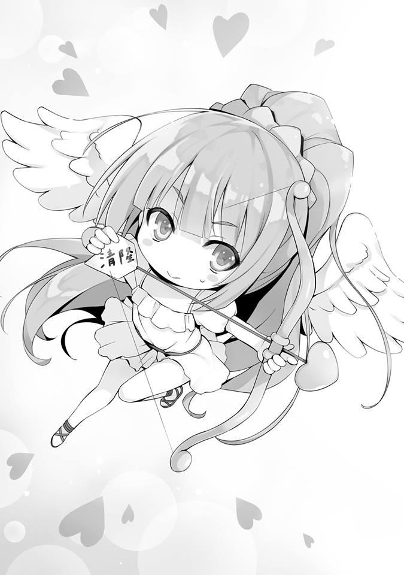
KARUIZAWA HISTORIA CORTA
EL CORAZÓN QUE SE DIO CUENTA
He tomado una gran decisión. Incluso yo misma lo pienso. Ya no puedo retirar las palabras que he dicho.
—Voy a romper con Yousuke-kun.
Ese fue, para Karuizawa Kei, el mayor extremo, una opción que nunca habría elegido normalmente.
—Estoy segura de que todos en la clase se sorprenderán cuando empiece el tercer trimestre.
Al sentirme así de inquieta, susurré en silencio esas palabras.
—Supongo que es verdad.
Es muy probable que casi inmediatamente, una batalla entre las chicas por Yousuke-kun comience.
—Ese tipo, ¿crees que saldrá con alguien más?
—Aunque me preguntes eso, no conozco a Yousu... no, no es como si conociera a Hirata-kun tan bien. Pero en ciertos aspectos, como Kiyotaka, puede ser genial. Mientras pretenda salir conmigo, no podrá salir con otra chica, y puede que ni siquiera le interese tanto el amor.
Aunque fuera mentira, aún así nos separaremos. Si lo estropeo y permanezco cerca de él como siempre, también me sentiría mal por las otras chicas. Para acostumbrarme, de ahora en adelante, he decidido no llamarlo más 'Yousuke-kun' sino más bien 'Hirata-kun'.
—Aunque vuelvas a llamarlo Hirata, ¿me sigues diciendo así?
Antes de darme cuenta, inconscientemente había empezado a llamar a Kiyotaka por su nombre de pila. Al volver a llamar así a Hirata-kun, Kiyotaka me lanzó una pregunta obvia como esa.
—Ahh...... Ya veo. ¿Es mejor si lo cambio de nuevo?
—Eso no es lo que quise decir. Eres libre de llamarme como quieras —
Después de decir eso, una breve pausa, entonces Kiyotaka continuó—.
Esta podría ser una buena oportunidad.
Kiyotaka, al que le seguía llamando por su nombre, no mostró ningún signo de desaprobación. Y entonces, un momento que me pareció el destino, ocurrió de repente.
—Entonces también te llamaré “Kei”.
Entonces también te llamaré “Kei”. Entonces también te llamaré “Kei”. Entonces también te llamaré “Kei”.
Esas palabras resonaron y se repitieron dentro de mi corazón como palabras sagradas.
Hyuruhyuruhyuruhyuru~. Así de fácil, una flecha cayó del cielo. Esa era, la flecha que apuntaba a Kiyotaka desde Satou-san. Se suponía que esa flecha había volado a algún lado después de ser soltada. Y eso,
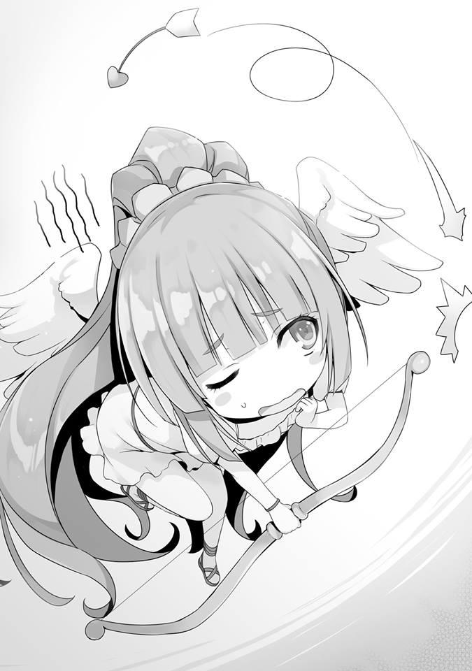
—¡Tauwa!
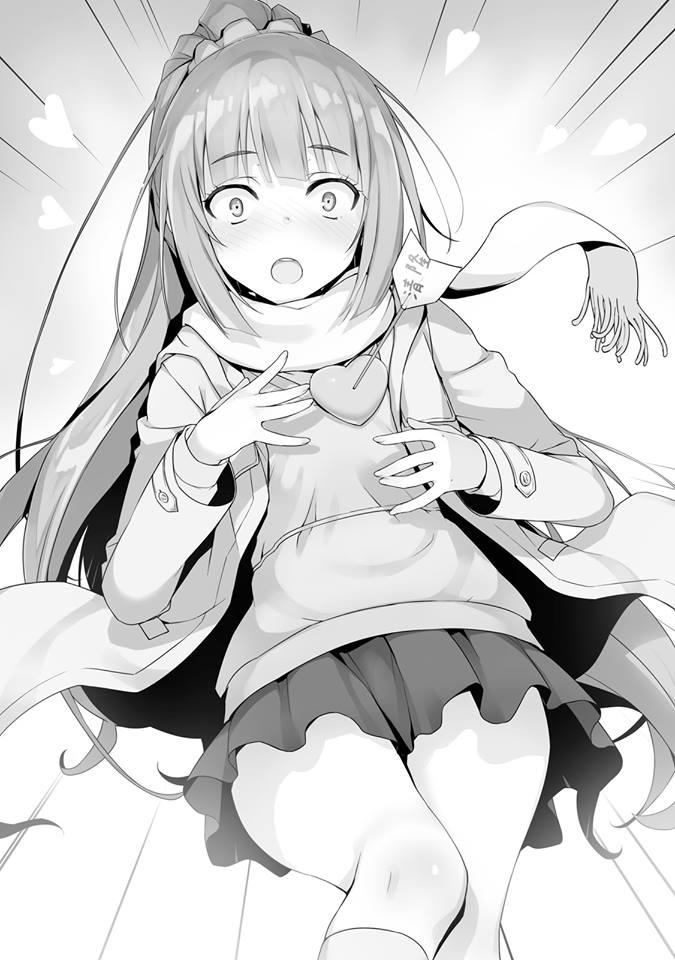
De entre todas las cosas, me perforó el corazón.
—¿....Tauwa?
Kiyotaka escuchó y repitió la misteriosa palabra que salió de mis entrañas.
—¡N-n-n-n-nada! ¿Por qué Kiyotaka también me llama por mi nombre?
—Si uno usa el apellido y el otro usa el nombre, no se sentiría bien.
No, no, no, no. ¡Eso podría ser así, pero! ¡No has avisado antes ni nada!
Mi latido palpitante, no, el latido de mi corazón seguía golpeando y golpeando. El sonido era inmenso, hasta el punto que me pregunté si Kiyotaka terminaría escuchándolo. Y sin preocuparse siquiera por mi pánico, Kiyotaka siguió hablando.
—Por cierto.... para aclarar las cosas. La persona que propuso la cita doble no fuiste tú, sino Satou, ¿verdad?
Como era de esperar, diría yo. Kiyotaka ya estaba al tanto del truco de la doble cita. Suprimiendo desesperadamente mis sentimientos, respondí a la pregunta.
—¿Qué se supone que significa eso?
Por si acaso, intentaré engañarlo.
—Tu actuación fue muy acertada, pero las acciones de Satou fueron extrañas.
—Ahh---.....como pensé ¿te habías dado cuenta? También pensé que Satou-san estaba siendo sospechosa.
Mi corazón se había calmado de alguna manera. Fuu, fuu, fuu. Ahora debería estar bien.
—Así es. También tengo un regalo de Navidad para ti.
—¿Ehh? ¿En serio?
Mientras pensé eso, mi corazón saltó de nuevo y se disparó.
—Mentí.
—¿Quieres que te den una paliza?
Después de la repentina subida vino la caída en picada, y miré a Kiyotaka.
¿Podría ser, que me estén tomando el pelo?
—Más precisamente, es un regalo normal. Creo que puede ser un producto innecesario para ti, pero.
—....Espera, ¿qué pasa con esta bolsa de farmacia? ¿Te estás burlando de mí?
Aunque me dé algo así, no soy ni un poco feliz. Mientras lo pensaba, lo recibí y comprobé el contenido. La bolsa es lo que es, pero la verdad es que el contenido era... Esperaba algo así. Lo que salió de dentro fue:
—¿Medicina para el resfriado y un recibo....?
Estas expectativas fugaces fueron traicionadas simplemente hasta el punto de que fueron casi decepcionantes. Pero, me di cuenta de algo extraño. ¿Por qué me dio esto?
—No te preocupes por el recibo, por favor tíralo a la basura.
Pero al escuchar eso, me hizo sentir más curiosidad de lo necesario. Revisé minuciosamente los detalles del recibo. Y entonces me di cuenta:
—Oye, este recibo tiene las 10:55 de la mañana del día 23 escrito en él....
No es algo que se haya comprado hoy. Normalmente, la medicina para el resfriado es algo que compras sólo cuando la necesitas de inmediato.
—De regreso después de comprarlo, las vi a Satou y a ti juntas en el Centro Comercial Keyaki. Así es como me di cuenta de que la cita doble era una cita que se había establecido desde una etapa relativamente temprana. Pensaba que tu salud se había deteriorado, pero parece que la predicción estaba espectacularmente fuera de lugar.
—Así que......eso significa que la razón por la que no me llamaste preocupado fue...
¿Significa que no estaba siendo frío conmigo, o que se había olvidado de mí?
—Tampoco llevabas puesto un cubrebocas, incluso desde lejos podía ver que estabas sana.
¿Qué significa eso? ¡No escuché nada sobre esto!
—Si estás tan preocupado por mí... en vez de hacer las cosas de una manera tan indirecta como ésta, haz cosas como visitarme o al menos llámame. Podrías haberlo confirmado así.
—En un dormitorio tan visible, no puedo darme el lujo de visitar directamente tu habitación. Contactarte por teléfono sería una forma efectiva de hacerlo, pero también tuve en cuenta que en ese caso te comportarías con dureza. Porque odias mostrar tu debilidad.
¿Qué, qué, qué, qué, qué, qué se supone que significa eso? Sentí la repentina necesidad de ocultar mi rostro, que se estaba poniendo rápidamente rojo.
Ese día, desde ese incidente en la azotea, eso significa que Kiyotaka siempre ha estado preocupado por mí.
¡Aaaaaaaaaaaaaaa, Cielos, aaaaaaaaaaaaaa! Dentro de mi corazón había otra yo que estaba gritando mientras corría por todas partes. Ya no hay ninguna duda. Sólo tengo que admitirlo ahora mismo. En serio, en serio, en serio, me han robado el corazón. La flecha que había atravesado mi corazón. La flecha de amor que ya no podía sacar. ¿Es esto posible? ¿Está bien que me enamore de alguien que me ha estado intimidando? Pero ya es demasiado tarde. El poder de esta flecha es tremendo.
Tengo, tengo hacia Kiyotaka-----en serio, en serio, me he enamorado de él.
KARUIZAWA HISTORIA CORTA
UNA NUEVA EXPERIENCIA
Un mar grande y extenso. El lugar en el que me han dejado es esta isla deshabitada.
—Aaah.... se han ido....
Me quedé mirando el barco de pasajeros que se está haciendo cada vez más pequeño como si fuera un problema de otra persona. Parece que las vacaciones de verano se han convertido en algo increíble.
Para ser honesta, no sé qué debo hacer ahora. Porque no tengo ni idea de cómo voy a escapar de esta isla deshabitada, rodeada de 360 grados de mar. Barcos, aviones y teléfonos. No tengo conmigo nada tan conveniente como eso. Además, debido a mi traje de baño, es probable que mi cuerpo se enfríe una vez que caiga la noche.
Pero no estaba ansiosa ni asustada. Al contrario, pensé en lo grandioso que sería si este momento durara para siempre.
¿Por qué es eso, se preguntarán? Esto se debe a la importancia de la presencia del muchacho sentado a mi lado. Si está conmigo, me salvará sin importar en qué situación me encuentre.
Una nueva experiencia.
Es porque estoy segura de esto que no tengo ansiedad.
—Oye, Kiyotaka. ¿Dónde estamos? Hasta donde alcanza la vista, sólo hay montañas y el mar...... ¿Podría ser que estemos varados en algún lugar absurdo? ¿Como Tasmania?
—Tasmania no es una isla deshabitada, ¿sabes? Además, no hay forma de que sea tan pequeño.
—Ya veo.
—En primer lugar, estamos en Japón. Hay una montaña que se ve a lo lejos, ¿verdad? Ese es el monte Fuji.
—Monte Fuji, ¿quieres decir ESE Monte Fuji?
—Entonces eso significa que podremos escapar de esta isla fácilmente.
—No será así. Porque para escapar por nuestra cuenta, sólo hay un camino y es nadar.
No es una exageración, no tengo fuerzas para nadar lejos. En ese momento, un halcón salió de la isla y voló rápidamente en dirección al monte Fuji.
Con toda probabilidad, llegará a tierra en poco tiempo.
—Debe ser genial tener alas, ¿no? Porque se puede volar así.
Diciendo eso, miré a Kiyotaka.
Ojos que miran directamente hacia el monte Fuji. Así que decidí hacerle una pregunta franca.
—¿Podría ser que....? ¿Eres capaz de nadar hasta allí, Kiyotaka?
—Para ser honesto contigo, hay una alta posibilidad de que si estuviera solo, sería capaz de nadar todo el trayecto hasta tierra. Teniendo en cuenta la probabilidad de supervivencia, sería una buena idea que empezara a nadar ahora mientras el sol aún está en el cielo.
—Como pensé... eres increíble.
Pero, Kiyotaka está aquí ahora mismo y no muestra señales de irse nadando.
—¿Podría ser que es porque estoy aquí?
—Cuando pienso en dejar a Kei sola, ya no es un plan viable. Puede haber animales salvajes en el bosque y una vez que caiga la noche, no tendrás forma de protegerte.
—Lo siento, Kiyotaka. Siempre me interpongo en tu camino.
—Eso no es verdad.
—Me alegra que digas eso. Pero.... quiero que Kiyotaka sobreviva.
—Un plan en el que yo sea el único superviviente no puede considerarse un plan. Sólo será digno de ser considerado un plan de supervivencia si eso significa que tanto Kei como yo podemos sobrevivir.
El interior de mi cuerpo empezó a arder cada vez más.
—¿Por qué te preocupas tanto por mí?
Tenía un poco de miedo de escuchar la respuesta, pero traté de preguntarle eso valientemente.
Y cuando lo hice, Kiyotaka me miró directamente a los ojos y contestó sin dudarlo en absoluto.
—Es porque para mí, eres una compañera querida. Esto es normal.
Mientras mi cuerpo se enfriaba, Kiyotaka me abrazó.
Una nueva experiencia.
Debido a que ambos llevábamos puestos nuestros trajes de baño, nuestros cuerpos estaban en estrecho contacto.
—N-No. ¡No somos esa clase de compañeros...!
Intenté alejarme de él pero Kiyotaka no me dejó ir.
—Entonces tú y yo tenemos que convertirnos en esa clase de compañeros.
¿Estoy equivocado?
—.......Pero...
Poco a poco, mi resistencia se debilita. Si pudiera ser absorbida, entonces me gustaría serlo.
—Kei..........
Y cuando me di cuenta, la cara de Kiyotaka ya estaba justo delante de mis ojos.
—Kiyotaka...........
Los dos nos miramos. La distancia entre nuestros cuerpos y nuestros corazones comenzó a reducirse.
Y luego---guu~. Con crueldad, en mi estado de inanición, mi estómago gruñó.
—¡…!
Un sonido como de ruina que parecía capaz de borrar la atmósfera romántica en un instante.
Pero Kiyotaka tomó con calma esta absurda situación en la que no sería extraño aunque se mostrara disgustado.
—Come esto, Kei.
Lo que me dio, me pregunto de dónde lo habrá sacado.
—¿Esto es.... una berenjena?
—Es nativa de esta isla deshabitada. Ayudará a aliviar el hambre si te comes esto.
—Gracias, gracias. Pero, ¿por qué una berenjena.... berenjena?
Empecé a darme cuenta de algo.
El monte Fuji que podía ver a lo lejos. El halcón que se fue volando antes.
Y la berenjena.
Esto es algo que esperarías el día de Año Nuevo, eso es lo que he escuchado.
Además, cuando pensé en la berenjena, el mundo sufrió un cambio radical.
Kiyotaka, que estaba sentado a mi lado, también se vio afectado por ese cambio y pude ver cómo se desvanecía.
—¿Te has dado cuenta? Este es tu Hatsuyume. Que ideal Hatsuyume, felicitaciones Kei.
—Hatsuyume.... Así que, ¿fue un sueño?
El Kiyotaka a mi lado se desvaneció aún más. Qué alivio, estar varada en una isla deshabitada era sólo mi sueño. Pero eso significa que ese momento también fue un sueño.
En otras palabras, esta atmósfera romántica también desaparecerá dentro de poco tiempo.
Ese beso que casi me dan, todo desaparecerá pronto.
Alargué la mano para agarrar a Kiyotaka. Pero ya no estaba a mi lado.
Podía ver a Kiyotaka nadando ferozmente contra la corriente. Salté al cielo y en un instante, la isla deshabitada desapareció.
—Aaaaaah espera. ¡Espera, mi Hatsuyume! ¡Mi primer beso!
Mientras gritaba, ya era demasiado tarde. Mi conciencia fue rápidamente atraída hacia el mundo real.
Al momento siguiente, un techo familiar apareció ante mis ojos. Una mañana no diferente a la habitual, tan tranquila que es casi increíble que haya estado aterrorizada en mis sueños.
Pero, mi corazón latía rápido.
—No, no.... hey, mi yo del sueño, ¿por qué estás tan desesperada por un beso....?
En realidad, siempre me esfuerzo por mantener la calma y no voy a pedir un beso tan fácilmente.
Aunque sea el chico que amo, por eso no seré tan apegada.
Pero a pesar de todo, aunque sea en un sueño, todavía hay cosas con las que puedo fantasear y otras que no. Creo que este es el sueño más loco que he tenido en mi vida.
¿Cómo podía imaginarme que esto sería lo que vería en mi Hatsuyume?
—Hatsuyume, huh........
¿Podría mi Hatsuyume convertirse en un Masayume....? Imposible, ¿verdad?
De cualquier manera, mantengamos este sueño súper bochornoso sólo para mí.
(NTI: Masayume es un "sueño que se hace realidad" comparado con Hatsuyume que es el primer sueño del nuevo año.)


VISÍTANOS EN NUESTROS
DIFERENTES SITIOS
http://gladheimtranslations.blogspot.mx/
https://twitter.com/GladheimT
https://mastodon.social/@GladheimT
Si alguien desea hacer una donación
https://ko-fi.com/gladheimtranslation
https://www.buymeacoffee.com/gladheimtls
https://patreon.com/GladheimT